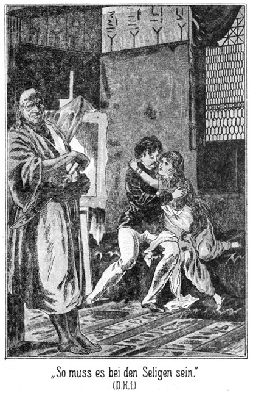
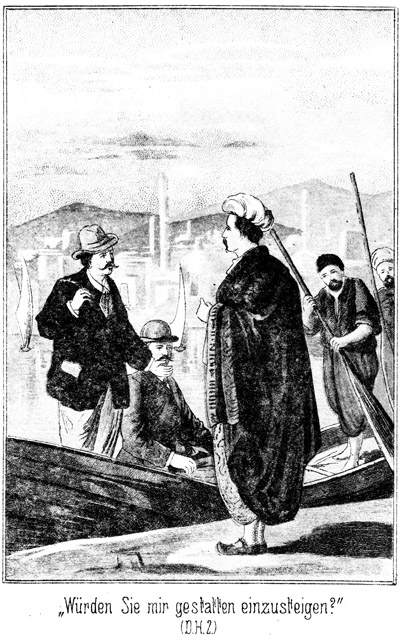
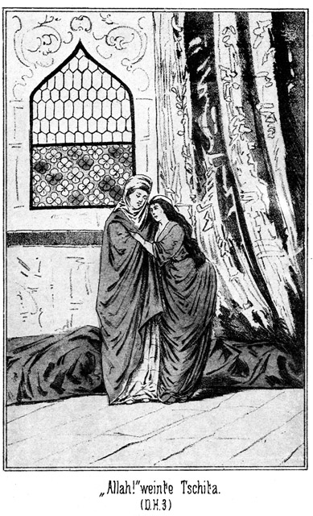
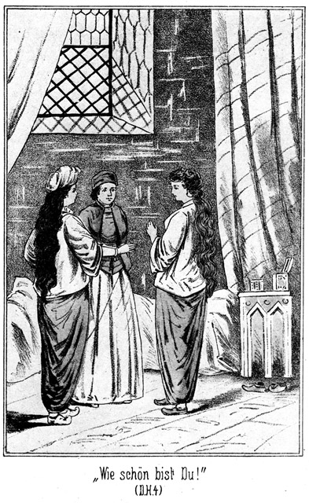
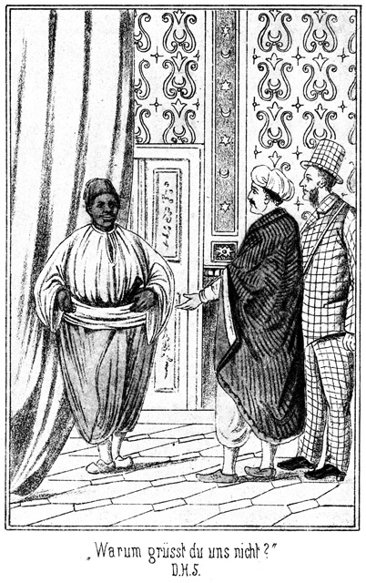
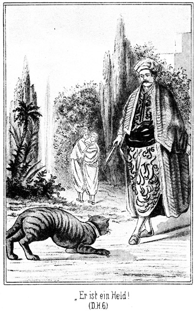
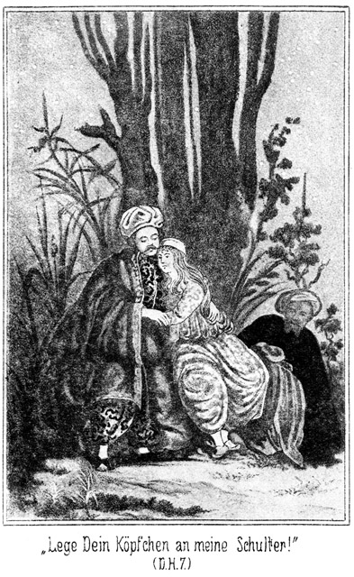
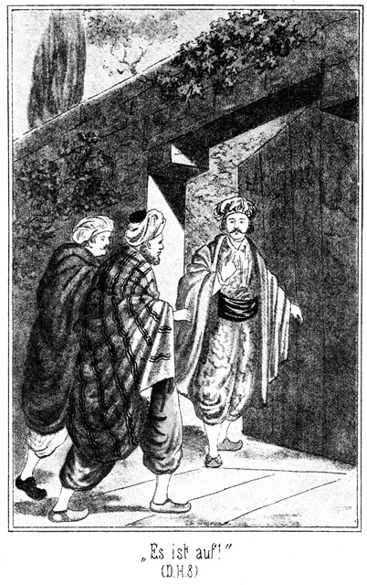

Roman vom Verfasser
»Waldröschen«,
»Fürst des Elends« u.
»Weg zum Glück«.
Mit bunten Bilder-Beilagen.
Dresden, Druck und Verlag von H. G. Münchmeyer.

»Im Namen des allbarmherzigen Gottes! Lob und Preis sei Gott, dem Weltenherrn, dem Allerbarmer, der da herrschet am Tage des Gerichtes. Dir wollen wir dienen, und zu Dir wollen wir flehen, auf daß Du uns führest den rechten Weg, den Weg Derer, die Deiner Gnade sich freuen und nicht den Weg Derer, über welche Du zürnest, auch nicht den Weg der Irrenden!«
Diese Worte enthalten die erste Sure aus dem Koran, welcher die heilige Schrift der Muhamedaner ist. Sie erklangen laut und scharf über den Kirchhof hinüber, und es war, als ob vor ihnen sich die Cypressen und die Wipfel der immergrünen Cedern beugten.
Der, welcher sie sprach, stand an einem Grabe, welches von kostbarem Marmor eingefaßt war. Zu Häupten des Hügels prangte ein Turban von Alabaster und eine goldverzierte Tafel mit der Inschrift:
»Hier schläft Melek Pascha, ermordet am sechszehnten des heiligen Monates Moharrem. Allah verderbe den Mörder! «
Derjenige, welcher das Gebet gesprochen hatte, war ein junger Mann im Alter von ungefähr achtundzwanzig Jahren. Er war in reiche türkische Tracht gekleidet und trug kostbare Waffen in dem seinen Kaschmirgürtel. Sein Gesicht war hager und zeigte scharf geschnittene Gesichtszüge. Die Nase war fast habichtsartig gebogen; von den dünnen, blutleeren Lippen hing ein dünner, schwarz gefärbter Schnurrbart zu beiden Seiten lang herab, so daß er die verächtlich nach unten gebogenen Mundwinkel bedeckte; die Augen waren klein, von unbestimmter Färbung, von blutigen Aederchen durchzogen und blickten spitz, kalt und mit grausamem Ausdrucke unter dem wimperlosen, gerötheteten Oberlide hervor. Die schmale, eckige Stirn verschwand fast ganz unter dem großen Turban, welchen der Mann trug.
Dieser hatte den Degen gezogen und die Klinge mehrere Zoll tief in das Grab gesteckt. Während seiner Rede ruhte seine Rechte wie beschwörend auf dem goldenen, mit Diamanten verzierten Griff des Degens.«
An der anderen Seite des Grabes stand ein alter, unbeschreiblich hagerer Mann in der rauhen Tracht der heulenden Derwische. Er hatte die Hände andächtig gefaltet und mit tief gesenktem Haupte die Worte des Anderen angehört. Jetzt erhob er den Kopf. Sein großes, fanatisch glühendes Auge richtete sich auf den Gegenüberstehenden, und er begann nun im salbungsvollen Tone:
»Du bist Ibrahim Effendi, der weise, reiche und tapfere Liebling des Sultans, welcher der Beherrscher der Gläubigen ist. Du bist zu mir gekommen, damit ich Zeuge sei des Schwures, den Du an diesem Grabe ablegen willst. So höre die Worte des heiligen Gesetzes, welches lautet: »Die Hand des Schwörenden soll verdorren, wenn er sein Gelübde nicht erfüllt; sein Leib soll austrocknen, sein Herz zu Stein werden, und seine Seele soll wandern in ewigem Grauen und unendlicher Qual!« Und nachdem Du dies vernommen hast, frage ich Dich, Ibrahim Effendi, ob Du noch immer bereit bist, den Schwur am Grabe Deines ermordeten Vaters abzulegen?«
»Ich will es,« ertönte die feste Antwort.
»Nun wohlan! Der Mörder Deines Vaters war ein Christ. Fluch ihm!« –
»Ja, Fluch ihm!«
»Er war ein Deutscher. Allah möge ihm keine Ruhe gönnen!«
»Keine Ruhe in alle Ewigkeit!«
»Du gelobst hiermit bei dem Propheten, bei allen heiligen Khalifen und bei der abgeschiedenen Seele des Ermordeten, daß Du den Mörder aufsuchen wirst, um ihn zu verderben, ihn und Alle, die seinen verruchten Namen tragen!«
»Ich gelobe es!«
»Du wirst keine Beschwerde und keine Leiden scheuen, Du wirst Deine Habe, Dein Blut und Dein Leben opfern, wenn dies nöthig ist, um Dein Gelübde zu erfüllen!«
»Bei Allah, das werde ich!«
»So ist Dein Schwur gesprochen, und ich nehme ihn entgegen, um ihn zu vergleichen in den Büchern der Geister, welchen Allah befohlen hat, dem Rächenden zu dienen. Auge um Auge, Blut um Blut, Zahn um Zahn, Leben um Leben! Wenn Du diesen Schwur vergissest, so soll die Luft Dich ersticken, das Wasser Dich ersäufen und das Feuer Dich verbrennen; der Blick Deines Weibes soll wie ein Dolch sein, und der Kuß der Geliebten soll Dich vergiften; Deine Freunde sollen Dich verlassen und Deine Verwandten sich Deiner schämen; Du mögest sein wie der Hund auf der Straße, wie die Ratte im Kothe und wie der Schakal in der Wüste, welcher Tag und Nacht vor Hunger heult. Und nun laß uns den Namen des Mörders übergeben den bösen Geistern, welche wohnen in der Hölle, wo sie am tiefsten ist. Wie lautet er?«
»Er ist ein deutscher Name und nicht für die Lippen der Gläubigen gemacht. Seine verfluchten Silben lauten Adlerhorst.«
Der Derwisch brachte ein Stück Papier und einen Schreibstift aus der Tasche, schrieb den ihm fremden Namen auf, so gut es ihm möglich war, grub mit dem Messer ein Loch in das Grab, legte den Zettel hinein und machte das Loch wieder zu. Dann kniete er nieder, legte die Linke auf die Stelle des Loches, erhob die Rechte gen Himmel und murmelte unverständliche Worte. Dann, als er sich wieder erhoben hatte, sagte er laut:
»Es ist geschehen! Du bist Ibrahim Effendi, der glorreiche Sohn Melek Pascha's. Er war kein träger Türke, sondern er stammte aus dem wilden Kurdistan, welches auch meine Heimath ist. Dort gelten noch die Gesetze des Blutes, und nach diesen Gesetzen wirst Du handeln. Da, wo das Herz des Todten ruht, ist auch der Name seines Mörders vergraben. Wenn er über die Brücke geht, welche in das ewige Leben führet, wird er diesen Namen hinabschleudern in die Schluchten und Abgründe der Hölle, und alle Unterthanen des Teufels werden sich aufmachen, um Jeden zu verderben, der diesen Namen trägt. Ich bin zu Ende. Ist auch Deine Rache zu Ende, so weißt Du, wo Du mich findest. Allah sei bei Dir!«
Er entfernte sich, und nach kurzer Zeit verließ auch Ibrahim Effendi den Gottesacker. – – – – – – – – – – – – – – – – – – – – – – – – – – – – – –
Nach zwei Jahren standen diese Beiden wieder an demselben Grabe, der Sohn des Ermordeten hüben und der Derwisch drüben. Ibrahim Effendi betete wieder die Worte der ersten Sure des Koran, und dann sagte der Derwisch:
»Du hast mich gerufen an den Ort, an welchem Dein Gelübde geboren wurde. Soll ich suchen nach dem Namen des Mörders?«
»Suche ihn!«
»Der Derwisch zog sein Messer hervor und grub da nach, wo er vor zwei Jahren den Zettel vergraben hatte. Das Papier war verschwunden – verfault natürlich.
»Was ich Dir verhieß, das ist geschehen,« sagte der Derwisch. »Der Name des Mörders fuhr zur Hölle. Daraus ersehe ich, daß Deine Rache gelungen ist.«
»Sie ist gelungen,« stimmte Ibrahim Effendi bei, indem seine Augen unheimlich leuchteten. »Der Mörder ist eines unbeschreiblich qualvollen Todes gestorben; sein Weib hat die Zunge und die Hände verloren, und seine Söhne und Töchter, alle seine Verwandten sind verachtet, verfolgt, in alle Welt zerstreut, ohne Heimath, ohne Ruhe, hungernd und durstend, seufzend und schmachtend in fluchbeladener Armseligkeit.«
»So entbinde ich, der Zeuge Deines Schwures, Dich jetzt nun Deines Gelübdes. Allah gebe Dir tausend glückliche Jahre hier auf Erden und hernach das ewige Leben mit allen Freuden und Wonnen des Paradieses.« – – – – – – – – – – – – – – – –
Diese beiden Scenen am Grabe des ermordeten Pascha mußten geschildert werden, denn sie bilden die Schlüssel zu all' den geheimnißvollen Räthseln welche unsere » deutschen Herzen und deutschen Helden« zu lösen haben werden.
Seit jener Zeit war weit über ein Jahrzehnt vergangen. Ein schöner, nicht zu heißer Sommertag lag warm auf den schlanken Thürmen von Konstantinopel. Tausende von Anhängern aller Nationen erfreuten sich, über die beiden Brücken gehend, des zauberischen Panorama's, welches die Stadt von Außen her bietet. An den Quais lagen die Dampf- und Segelschiffe aller seefahrenden Völker, und auf den glitzernden Wogen wiegten sich die eigenthümlich geformten türkischen Gondeln und Kähne, zwischen denen zuweilen ein kühner Delphin lustig aus dem Wasser emporschnellte oder eine Gesellschaft fliegender Fische eine schwirrende Lustparthie machte.
Von Osten her, aus der Gegend des schwarzen Meeres, kam eine kleine, allerliebste Dampfyacht geschossen, leicht und graziös zur Seite biegend, wie eine Tänzerin, welche sich am Arme ihres Tänzers, das schöne Köpfchen hingebend neigend, den berauschenden Tönen eines Strauß'schen Walzers hingiebt.
Das schmucke, außerordentlich schnelle Fahrzeug bog um die Spitze des Stadttheiles Galata herum, ging unter den Brücken hindurch und legte sich vor Pera vor Anker. Pera ist derjenige Stadttheil von Constantinopel, welcher vorzugsweise von den Europäern und ihren Gesandten und Consuls bewohnt wird.
Die erwähnte Dampfyacht hatte eine Eigenthümlichkeit, welche bereits in europäischen Häfen auffallen mußte, hier aber, unter Orientalen, noch viel drastischer wirkte. Nämlich am Vordersteven, wo gewöhnlich der Name des Schiffes angebracht zu sein pflegt, erhob sich ein wohl zwei Meter hoher, sehr starker, aus Holz geschnitzter Rahmen, welcher ein ganz eigenthümliches Gemälde umfaßte.
Das Bild stellte einen Mann in Lebensgröße dar. Alles, was er trug Hose, Weste, Rock, Schuhe, sogar der hohe Cylinderhut, war grau und schwarz carrirt, aber mit ziemlich großen Carrees! Selbst der riesige Sonnenschirm, welchen er in der Hand hatte, war ebenso carrirt. Das Gesicht des Mannes war außerordentlich lang gedehnt. Eine lange Adler- oder Habichtsnase hätte dazu gepaßt, statt dessen aber saß in diesen langen Zügen ein kleines, dickes Stumpfnäschen, fast geformt wie eine dicke Fußzehe. Das gab diesem Gesichte einen wunderbar komischen Ausdruck. War dieses Bild das Portrait eines wirklich existirenden Menschen, so mußte derselbe einen höchst ungewöhnlichen Grad von Gutmüthigkeit und Wohlwollen besitzen.
Ueber dem Rücken hatte die Gestalt etwas Langes hängen. Entweder war das ein Blas- oder ein Fernrohr. Und aus der linken Brusttasche, außen am Rocke, ragten einige Gegenstände hervor, deren Natur und Bestimmung nicht wohl verrathen werden konnten. Ueber diesem Bilde stand in großen goldenen Lettern der Name der Yacht: » Lord Eagle-nest«.
Als der kleine Dampfer in den Hafen einlenkte, wurde das Bild von den am Lande stehenden Orientalen mit Staunen betrachtet. Nahe am Quai stand ein alter Derwisch, dessen große, dunkle, fanatisch blickende Augen auch verwundert auf dasselbe gerichtet waren. Er sah die Schrift und versuchte, sie zu entziffern. Ein eigenthümliches Zucken ging über sein Gesicht. Er blickte sich suchend um. Als er unweit von sich einen griechisch gekleideten Mann sah, welcher das Abzeichen eines Dragoman (Dolmetschers) trug, schritt er auf denselben zu, verneigte sich grüßend und sagte:
»Verzeihe, Herr! Bist Du in den Sprachen der Abendländer wohl bewandert?«
»Ja. Das ist mein Beruf.«
»Welcher Sprache gehören die Worte unter diesem Bilde an?«
»Der Sprache der Engländer.«
»Willst Du mir wohl sagen, wie sie klingen und was sie zu bedeuten haben?«
»Sie werden ausgesprochen »Ihglnest« und bedeuten so viel wie Adlernest oder Adlerhorst.«
Der Derwisch fuhr einen Schritt zurück, faßte sich aber schnell und sagte unter einer höflichen Verbeugung:
»Ich danke Dir. Ich bin arm. Allah mag Dich bezahlen.«
Er schritt wieder dahin, wo er vorhin gestanden hatte, nahm die Yacht scharf in die Augen und murmelte:
»Adlerhorst! Das ist ja jener verfluchte Name! Ist er denn nicht ausgerottet? Der Mörder war ein Deutscher; dieses Schiff aber kommt aus England. Giebt es auch dort diesen Namen? Ich werde hier bleiben, um zu beobachten. Das Weib jenes Deutschen beschimpfte mich. Mein war die Rache, und Ibrahim Effendi war nur mein Werkzeug. Sollte es noch Angehörige jener Familien geben? Ich werde forschen!«
Die Maschine des Dampfers hatte gestoppt, und der Capitain war von der Commandobrücke gestiegen. Da öffnete sich die Cajütenthür und heraus trat – – dieselbe Gestalt, wie sie vorn auf dem Bilde zu sehen war, ganz genau so. Sehr lang und hager, war sie in grau und schwarz carrirten Stoff gekleidet. Der übermäßig hohe Cylinderhut, der riesige Regenschirm, den er in der Hand hatte, auch diese Beiden waren carrirt. An einem über die Achsel gehenden Riemen hing ein unendlich langes Fernrohr, welches bereits vor der Sündfluth existirt zu haben schien, und aus der linken, äußeren Brusttasche ragten zwei Gegenstände hervor, über welche man sich schier zu verwundern hatte, nämlich – – ein gewaltiger Streichriemen und ein Rasirmesseretui. In der Rechten hielt dieser höchst ungewöhnliche Mann ein Buch, auf dessen Umschlag in deutscher Sprache der Titel zu lesen war:
»Textbuch. Die Entführung aus dem Serail. Große Oper von Wolfgang Amadeus Mozart.«
Auch das Gesicht glich ganz demjenigen auf dem Bilde, es war sehr lang gezogen, äußerst gutmüthig und hatte die erwähnte große Fußzehe anstatt der Nase, und darauf saß eine rundglasige Hornbrille, welche den komischen Eindruck um das Doppelte verstärkte.
Der Capitain verneigte sich und fragte:
»Wollen Euer Lordschaft an Land gehen?«
»Ja. Wohin sonst? An's Land natürlich! Oder soll ich etwa auf dem Wasser laufen, he, wie?«
Er hatte das scherzend gesagt und lachte dabei im ganzen Gesichte. Auch der Capitain lachte und antwortete:
»Das würde schwerlich möglich sein. Aber warum so schnell an Land gehen? Constantinopel muß von hier aus betrachtet werden. Von hier aus wirkt es großartig; im Innern aber ist es eng, schmutzig und winkelig. Der Türke nennt seine Hauptstadt »Wangenglanz des Weltantlitzes«, und er hat Recht, nämlich von hier aus, wo wir uns befinden.«
»Wangenglanz? Unsinn! Weltantlitz? Blödsinn! Hat die Welt Wangen oder Backen? Horrende Dummheit! Diese Türken sind Esels. Das einzig Brauchbare an ihnen sind ihre Weiber, ihre Frauen und Mädchens.«
Ueber das Gesicht des Capitains ging ein ironisches Zucken. Er verbeugte sich zustimmend und fragte:
»Haben Eure lordschaftliche Herrlichkeit bereits eine türkische Frau oder ein türkisches Mädchen gesehen?«
»Ja, natürlich! Zwar nicht hier, aber in Berlin. Famose Oper, die Entführung aus dem Serail von Mozart. Ich gehe nicht eher fort, als bis ich mir so Eine aus dem Harem geholt habe. Hier, da, sehen Sie, Capitain, da ist das Textbuch dazu! Es fehlten nur noch Frau und Harem. Aber Beide sind sehr leicht zu finden, denn Weiber und Harems giebt es hier in Masse. Jetzt adieu!«
»Wann darf ich Euer Lordschaft erwarten?«
»Gar nicht. Ich komme, wenn es mir beliebt.«
Er turnte sich mit langen Schritten über den schmalen Landungssteg hinüber und gebrauchte dabei den großen, zugeklappten Regenschirm wie ein Seiltänzer seine Balancirstange.
Als er an dem Derwisch vorüberging und dessen Augen so prüfend auf sich gerichtet sah, spuckte er verächtlich aus und murmelte vor sich hin:
»Ein Derwisch! Fatales Gesicht! Ominöse Physiognomie! Könnte ihm einen Fußtritt geben, dem Kerl!«
Der Kapitain hatte ihm lächelnd nachgeblickt. Der Steuermann kam herbei und fragte, auch lächelnd:
»Spukt die Entführung noch immer?«
»Natürlich! Er sucht nach einem Harem.«
»Wird aber wie überflüssiger Dampf abgepfiffen werden.«
»Gott bewahre! Er schwärmt nur, bis er etwas Anderes findet. Eine Entführung aus dem Harem ist ein Unding. Es fällt ihm gar nicht ein, sich die Finger zu verbrennen; aber er ist einmal so, er muß irgend eine abenteuerliche, unmögliche Idee haben. Für uns ist das nur vortheilhaft, und da er außer seinen Schrullen ein unmäßig reicher und auch seelensguter Herr ist, so bin ich ganz und gern bereit, mit ihm auf unserem kleinen Dinge zehnmal rund um den Erdball herumzudampfen. Für so einen Master wagt man schon Etwas. Es giebt keinen Zweiten!«
Der, von welchem die Rede war, spazierte durch Pera langsamen Schrittes, und ganz vergnüglich Alles beobachtend, was sich seinen Blicken bot. Daher kam es, daß er sich zuweilen umblickte, und da bemerkte er, daß der Derwisch sich stets und genau hinter ihm hielt.
»Was will der Mensch von mir?« fragte er sich. »Werde gleich mit ihm fertig sein!«
Er trat hinter einer Gassenkrümmung in einen Winkel und blieb da stehen. Der Derwisch kam; er hatte den Engländer weit vor sich geglaubt und besaß nicht so viel Selbstbeherrschung, wie nöthig war, seine Ueberraschung zu verbergen.
»Warum läufst Du mir nach, Dummkopf?« schnauzte ihn der Carrirte an, natürlich in englischer Sprache.
Der Derwisch kannte die Bedeutung dieser Worte nicht. Er antwortete türkisch:
»Agnamaz-im (ich verstehe nicht)!«
»Agnamaz? Ja, Matz, fliege fort, sonst helfe ich nach!«
Der Derwisch merkte aus den Geberden des Engländers, daß er vorwärts gehen solle. Aber er wollte ihm doch folgen, nicht vor ihm hergehen. Darum blieb er stehen. Da machte der Carrirte kurzen Prozeß. Er hielt den riesigen Regenschirm vor sich hin und spannte ihn mit solcher Kraft und Schnelligkeit auf, daß die starken Fischbeinstäbe dem Derwisch in das Gesicht schlugen. Das war eine Beleidigung, zumal von einem Europäer; aber der Derwisch kannte die Macht und den Einfluß des englischen Gesandten; er schritt also weiter und rief dem Britten drohend zu:
»Köpek, intikamyny alarim (Hund, ich werde mich rächen)!«
»Was faselt er?« brummte der Lord vergnügt vor sich hin. »Dieses Türkisch ist doch eine dumme Sprache! Man möchte sie erst lernen, ehe man sie versteht. Die englische Sprache habe ich sogleich verstanden, schon als Kind.«
Er ging weiter, in ziemlicher Entfernung hinter dem Derwisch. Dann bog er um eine Ecke und abermals um eine und war nun ziemlich sicher, daß er dem Türken nicht wieder begegnen werde.
Indem er so dahinschritt, hörte er plötzlich Gesang. Die Töne kamen aus einem Hause, an welchem er eben vorüber wollte. Er blieb stehen und horchte. Das war keine türkische Musik, das war vielmehr eine abendländische Melodie! Er bemerkte über der Thür ein Schild und ersah aus der französischen Inschrift derselben, daß er vor einem europäischen Kaffeehause stehe. Er trat ein.
In dem dunklen Hausgange, welcher nicht viel versprach, war es ganz finster. Es gab da links eine Thür, welche er mehr mit der Hand fühlte, als er sie sah.
»Eine hübsche Budike!« brummte er. »Aber vielleicht giebt es ein Abenteuer.«
Er öffnete die Thür und fühlte sich angenehm überrascht, als er in ein geräumiges Zimmer trat, in welchem so viele Lampen brannten, daß es tageshell erleuchtet war. Fenster aber gab es hier nicht, sondern hoch oben an der Decke nur zahlreiche Oeffnungen, durch welche der Tabaksrauch abzog.
Er sah eine große Anzahl von Gästen. Die Einen waren orientalisch gekleidet, die Anderen europäisch. Die Ersteren saßen tief am Boden auf weichen, niedrigen Kissen, rauchten schweigend ihre Tschibuks oder ihre Wasserpfeifen und hatten auf kaum sechs Zoll hohen kleinen Tischchens winzige orientalische Kaffeetassen stehen. Die Letzteren aber hatten an hohen Tischen auf wirklichen Stühlen Platz genommen, tranken den Kaffee aus größeren Tassen und rauchten Cigarren oder Cigarretten.
Das Erscheinen des seltsam gekleideten Engländers erregte ungemeine Aufsehen.
»Müdschüzatly, tschok müdschüzadly (wunderbar, höchst wunderbar)!« murmelten die erstaunten Türken.
Auch die Unterhaltung, welche an den Tischen der Europäer geführt worden war, stockte augenblicklich. Die Aufmerksamkeit Aller richtete sich auf ihn, und über manches Gesicht flog ein munteres Lächeln, wobei Worte wie »Engländer – verrückt – Spleen – Hanswurst« leise von Mund zu Mund herüber- und hinüberflogen.
Ihn aber ließ diese Aufmerksamkeit sehr gleichgiltig. Er steuerte auf den einzigen Tisch zu, an welchem noch ein Sitz zu finden war, und nahm dort gemüthlich Platz, nachdem er den einzigen Herrn, welcher da saß, höflich um Erlaubniß gebeten hatte. Denn der Lord gehörte keineswegs zu jenen Engländern, welche sich über alle Nationalitäten erhaben dünken, alle Rechte nur für sich in Anspruch nehmen und es für eine große Ehre für einen Andern halten, wenn sie ihm einmal ein stolzes Wort gönnen.
Mehrere Negerknaben huschten mit Pfeifen, Tabak, glühenden Kohlen und Kaffee hin und her um die Gäste zu bedienen. Der Lord bestellte sich in französischer Sprache Kaffee und wurde verstanden und augenblicklich bedient. Er nahm das Fernrohr vom Rücken und lehnte es nebst dem Regenschirm an die Wand, streckte behaglich die langen Glieder aus und zog ein gut gefülltes Zigarrenetui aus der Tasche. Dabei warf er einen prüfenden Blick auf sein Gegenüber.
Dieser war ein vielleicht vierundzwanzigjähriger junger Mann von hoher, kräftiger Gestalt und einem wahren Adoniskopfe. Seine Züge waren ernst. Es lag ein Hauch von Weh- oder Schwermuth über sie ausgebreitet, welcher sie noch interessanter machte. Er hatte eine Cigarre zu Ende geraucht, legte den Rest von sich und stand im Begriff, in die Tasche zu greifen. Da streckte ihm der Engländer sein Etui entgegen und sagte:
»Bitte nehmen Sie von mir!«
Der Andere blickte überrascht auf und zögerte. Da langte der Carrirte in die Westentasche, zog ein Kärtchen hervor, gab es ihm und sagte:
»Nun dürfen Sie doch zulangen?«
Auf der Karte stand »Lord Eagle-nest.« Der junge Mann machte eine Bewegung des Erstaunens und schien einen Ausruf auf den Lippen zu haben, unterdrückte ihn aber, nahm eine von den angebotenen Cigarren und holte dann auch seine Karte hervor, um sie zu überreichen.
»Ach, Sie haben auch Karten?« fragte der Lord. »Ich dachte, so weit sei die Civilisation hier noch nicht vorgeschritten!«
»Ich bin kein Türke, wie Euer Lordschaft sehen.«
Auf seiner Karte stand: »Paul Normann, Maler,« und zwar in deutscher Sprache.
»Wie? Ein Deutscher sind Sie?« fragte der Lord im reinsten Hochdeutsch. »So lassen Sie uns deutsch sprechen. Ich habe in Deutschland Verwandte, zwar sehr entfernt, doch führen sie meinen Namen, nicht Eagle-nest natürlich, sondern Adlerhorst. Ich habe jüngst nach ihnen gesucht, aber leider alle Spuren verweht gefunden.«
»Kaum glaublich,« meinte der Andere. »Verwandte eines Lords von England können doch nicht spurlos verschwinden!«
Dabei warf er einen erwartungsvollen Blick herüber.
»Hätte es auch nicht für möglich gehalten. Die Besitzungen waren in anderen Händen, sämmtliche Glieder der Familie verschwunden. Eigentümliche Schicksale, hm! Brennen Sie doch an. Es ist eine Peru, habe sie selbst in Amerika geholt. Habe acht oder neun Tausend bei mir.«
»Hier in Constantinopel?«
»Ja. Bin nämlich auf eigener Yacht hier. Habe mich mit meiner Lieblingscigarre gut versorgen müssen, weil ich nicht weiß, wenn ich wieder nach Hause komme.«
»So haben Sie kein bestimmtes Ziel?«
»Nein. Suche Abenteuer.«
»Die sind leicht und auch schwer zu haben, je nachdem das Glück Einem günstig ist oder nicht.«
»Mir ist es nicht günstig. Da, lesen Sie einmal!«
Er zog das Textbuch hervor, welches er unterwegs eingesteckt hatte. Der Maler las den Titel.
»Eine Mozart'sche Oper,« sagte er. »Ich kenne sie.«
»Ich auch. Aber damit bin ich nicht zufrieden. Ich will nicht nur Publikum sein; ich will selbst entführen.«
»Selbst?« lachte Normann. »Wen denn?«
»Eine Türkin.«
»Ah! Und wo?«
»Hier in Constantinopel.«
»Sie scherzen!«
»Warum sollte ich scherzen? Es ist mein Ernst. Ich bin Mitglied der Trawellerclub in London, in welchem nur der aufgenommen wird, der mindesten eine Reise von fünftausend englischen Meilen gemacht hat. Ich war weit, sehr weit und habe viele Reiseerinnerungen mitgebracht. Jetzt nun will ich eine Türkin mitbringen. Die Oper ist gut; sie hat mir gefallen. Was den Schauspielern möglich ist, das bringe ich auch fertig. Ich entführe Eine, aber schön muß sie sein!«
Normann lächelte still, fast mitleidig vor sich hin. Er faßte die Meinung, daß der Lord an einer fixen Idee laborire, die jedoch für Andere glücklicherweise ganz ungefährlich sei. Ein mit dem Spleen Behafteter nimmt sich Vieles vor, was er nicht ausführt.
»Sie lächeln?« meinte der Engländer. »Sie täuschen sich in mir. Ich fahre seit drei Wochen die Dardanellen und den Bosporus auf und ab, um irgend einen Harem aufzugabeln, in welchen ich mich des Nachts einschleichen könnte.«
»Um den Kopf zu verlieren!« fiel der Maler ein.
»Oho! So schnell geht das nicht! Werde ich dabei erwischt, so bezahle ich das Frauenzimmer. Die Pascha's pflegen sich doch ihre Frauen zu kaufen, können sie also auch wieder verkaufen. Übrigens bin ich Engländer und stehe unter dem Schutze der Königin von Großbritannien und Irland.«
Der Maler schien eine Entgegnung auf der Zunge zu haben, hielt sie aber zurück. Sein schönes, offenes Gesicht nahm einen eigenthümlichen Ausdruck der Spannung an, und wie unter einem plötzlichen Entschlusse sagte er:
»Wenn Sie in Wirklichkeit eine Entführung beabsichtigen, so geht das keineswegs in der Weise, wie Sie es für möglich zu halten scheinen.«
»Wie denn?«
»Hm! Darüber läßt sich nur schwer sprechen.«
»Reden Sie, reden Sie! Sie gefallen mir, und es wäre mir lieb, Ihre Meinung zu hören.«
»Ich meine, daß Sie sich vor allen Dingen mit einem gewandten Manne, welcher die hiesigen Verhältnisse ganz genau kennt, in Verbindung setzen müßten.«
»Ganz recht! Aber ich kenne eben keinen solchen Mann. Ich will eine Entführung, und ich zahle tausend Pfund Sterling, wenn das Abenteuer zu Stande kommt. Sind Sie etwa hier genauer bekannt?«
»Ich bereise bereits seit drei Jahren die Türkei und befinde mich seit neun Monaten hier.«
»Famos, famos! Sagen Sie, hätten Sie vielleicht Lust und Zeit, bei einer Entführung mitzuhelfen?«
»Hm! Unter Umständen, ja.«
»Welche Umstände meinen Sie?«
»Um darüber zu sprechen, müßte ich Sie besser kennen lernen. Man trägt bei so einem gewagten Abenteuer sehr leicht den Kopf zu Markte. Ich bin keineswegs muthlos; ich liebe im Gegentheile die Gefahr und habe sie schon sehr oft aufgesucht, nur zu dem Zweck, meine Kräfte zu üben und zu prüfen – –«
Er wollte fortfahren, aber der Lord fiel ihm in die Rede!
»Kräfte üben und prüfen! Ganz richtig! Ich werde die meinigen auch üben und prüfen, hier in Constantinopel. Man muß da Vieles können: über Mauern springen, Thüren einschlagen, Frauen fortschleppen und so weiter. Hören Sie, Sie sind mein Mann! Geben Sie mir eine Gelegenheit! Sie sollen sich gar nicht dabei betheiligen. Ich führe die ganze Geschichte allein aus. Sind Sie reich?«
»Leider nein!«
»Das freut mich!«
»Mich aber nicht.«
»Verstehen Sie mich recht! Es freut mich, weil es mir möglich macht, Ihnen dankbar sein zu können. Spüren Sie einen Harem auf, in welchem sich eine wirklich schöne Frau, oder ein wirklich schönes Mädchen befindet. Weiter sollen Sie nichts thun. Das Uebrige besorge ich Alles selbst. Aber sehen muß ich das Frauenzimmer erst.«
Der Maler blickte nachdenklich vor sich nieder. Nach einiger Zeit bemerkte er, indem ein überlegenes Lächeln um seine Lippen spielte:
»Sie sind ein Nobelmann, und ich will Ihnen vertrauen. Ich verspreche Ihnen, nachzudenken und nachzuforschen. Sagen Sie mir also, wie lange Sie hier zu bleiben gedenken!«
»Wie lange? Natürlich, bis ich eine Türkin habe!«
»Schön! Und wo kann ich Sie finden?«
»Auf meiner Yacht, welche unten im Hafen von Pera liegt. Sie kennen sie gleich heraus. Sie trägt meinen Namen und mein genaues Portrait.«
»Doch nicht so, wie Sie hier sitzen?«
»Ganz genau so!«
»Ah! Das ist interessant,« lächelte der Maler.
»Ja, ich bin sehr gut getroffen. Was sind Sie, Herr Normann? Landschafter? Portraitist?«
»Portraitist!«
»Das paßt ja herrlich! Wollen Sie mich malen?«
»Hm! Wenn Sie es ernstlich wünschen, ja.«
»Schön! Wir können gleich morgen beginnen. Und da ist es meine Eigenheit, einen Theil des Honorars pränumerando zu bezahlen. Erlauben Sie mir das?«
»Gern allerdings nicht; es liegt das nicht in meiner Gewohnheit.«
»Aber in der meinigen. Erlauben Sie mir also, diese Angelegenheit gleich jetzt in Ordnung zu bringen!«
Er zog aus einer seiner vielen Taschen ein großes, dickes Portefeuille hervor, nahm daraus ein Couvert und klebte es zu, nachdem er Etwas hinein gesteckt hatte. Dann reichte er es dem Maler hinüber. Dieser griff nur zögernd zu, mußte es aber doch nehmen, da der Lord über die Weigerung ernstlich bös werden wollte.
»Also morgen,« sagte der Letztere. »Kommen Sie am Vormittage. Und heute könnten wir – wie gesagt, ich finde Wohlgefallen an Ihnen. Haben Sie jetzt Zeit?«
»Nur wenig mehr. Ich habe eine Sitzung.«
»Ja. Und da Sie in dieser Weise freundlich mit mir sind, so will ich aufrichtig sein. Ich habe eine Dame zu malen.«
»Wie? Was? Etwa eine Türkin?«
»Eine Tscherkessin.«
»Das ist ja ganz egal! Donner und Doria! Ist sie schön?«
»Einzig, sage ich Ihnen, unvergleichlich!«
»Wenn Sie sie malen sollen, so müssen Sie sie doch auch sehen und sprechen!«
»Sehen wohl, aber sprechen darf ich sie nicht.«
»Aber wie kommt es, daß Sie, ein Fremder, ein Ungläubiger, die Frau oder das Mädchen sehen und malen dürfen?«
»Das ist sehr einfach und dennoch hoch interessant. Sie wissen, daß der Sclavenhandel verboten ist? Und dennoch währt er noch heimlich fort. Noch immer kommen die schönsten tscherkessischen Mädchen nach Constantinopel, um da an die Großen des Reiches verkauft zu werden. Da kenne ich nun drüben im tscherkessischen Viertel einen alten, berühmten Mädchenhändler, welcher nur Schönheiten ersten Ranges führt. Kürzlich nun hat er eine junge Tscherkessin erhalten, von einer Schönheit, wie er noch nie eine gehabt hat. Er will sie nur gegen die höchste Summe verkaufen, und darum hat er sie für den Sultan bestimmt. Er hat sich an den Obersten der Eunuchen gewendet und von diesem gehört, daß dies nicht so leicht und schnell zu ermöglichen sei. Der kürzeste und sicherste Weg sei, dem Sultan das Portrait des Mädchens vorzulegen. Da es nun keine muhammedanischen Maler giebt, so ist der Alte gezwungen, sich an einen Europäer zu wenden, und seine Wahl ist auf mich gefallen.«
Der Lord hatte mit der größten Spannung zugehört. Er zappelte förmlich vor Vergnügen. Er fragte:
»Sie hatten also bereits Sitzung mit ihr?«
»Bereits fünf.«
»Und sie ist wirklich so schön?«
»Wunderbar schön!«
»Verteufelt, verteufelt! Wollen wir sie entführen?«
»Sie ist ja in keinem Harem!«
»Kann man sie sehen?«
»Ja. Wer ein Mädchen kaufen will, muß es ja sehen.«
»Und es sind noch Mehrere da?«
»Gegen zwanzig.«
»Verteufelt, verteufelt! Wo wohnt der alte Kerl? Ich gehe augenblicklich hin. Aber ist man gezwungen, zu kaufen?«
»Nein. Man muß natürlich sagen, daß man zu kaufen beabsichtigt. Gefällt Einem Keine, oder ist der Preis zu hoch, so geht man eben wieder fort.« –
»Wollen wir hin? Jetzt gleich?«
»Mit einander nicht. Ich möchte dem Alten nicht wissen lassen, daß ich Ihnen Mittheilungen gemacht habe.«
»Gut, so gehe ich allein hin, und zwar sofort. Sagen Sie mir nur die Adresse!
»Ich führe Sie. Wir nehmen eine Gondel, das ist das Bequemste. Während Sie sich dann die Mädchen ansehen, warte ich in einem nahen Kaffeehause, wohin Sie kommen, um mir zu sagen, wie Sie sich amusirt haben.«
»Schön, schön! Verteufelt, verteufelt! Das ist höchst interessant! Sie haben Recht gehabt. Man muß sich an Einen wenden, welcher die Verhältnisse kennt, dann gehen die Abenteuer auf der Stelle los. Also kommen Sie!«
Sie bezahlten und gingen fort. Als sie aus dem Hause traten, stand der Derwisch, seine zuckerhutähnliche Kopfbedeckung weit im Nacken, wartend in der Nähe.
»Hat er es doch gemerkt, wo ich stecke!« sagte der Lord.
»Wer?«
»Jener Derwisch. Er ist mir heute nachgelaufen, weshalb, das weiß ich nicht!«
»Es ist ein Heulender. Ekelhafte Kaste! Jedenfalls will er Sie anbetteln. Beachten Sie ihn gar nicht.«
Sie gingen an das Wasser hinab und nahmen sich ein zweirudriges Kaik. Zwischen Tophana und Fonduki stiegen sie aus. Der Maler führte den Engländer, der auch hier wieder allgemeines Aufsehen erregte, durch einige Gassen und sagte dann, auf ein Café deutend:
»Da drinnen warte ich. Gehen Sie weiter. Sie treten in die Thür linker Hand und sagen, daß Sie eine Sclavin kaufen wollen. Der Alte heißt Barischa und versteht so viel Französisch, daß Sie mit ihm sprechen können.«
Der Lord folgte dieser Anweisung und verschwand bald hinter der angegebenen Thür. Normann aber setzte sich in das Café, um auf ihn zu warten. Hier öffnete er das Couvert. Es enthielt hundert Pfund, also zweitausend Mark.
»Das ist Gottes Schickung!« dachte der glückliche, junge Mann. »Unsere Kasse war beinahe gesprengt. Ich hätte dem Eunuchen nichts geben können und in Folge dessen auch nicht mehr mit Tschita sprechen können. Dieser Lord ist mir trotz seiner Eigenheiten außerordentlich sympathisch. Ich könnte ihn lieb haben. Was wird Hermann sagen, wenn ich ihm von diesem wunderbaren Zusammentreffen erzähle!«
Es verging über eine halbe Stunde, ehe der Lord kam. Sr hatte den grauschwarzen Hut »auf dem Pfiff« sitzen und die große Brille auf die Stirn hinauf gerückt. Sein Aussehen war dasjenige eines Mannes, welcher aus einer Gesellschaft kommt, wo er sich köstlich amusirt hat. Er setzte sich zu dem Maler und ließ sich Kaffee geben.
»Nun, haben Sie die Schönheiten gesehen?« fragte Normann.
Der Gefragte brannte sich eine Cigarre an und antwortete:
»Na, und ob! Das war ja eine Bildergalerie, und zwar eine lebende! Achtzehn Stück! Eine immer schöner als die Andere. Ich wollte, ich wäre ein Türke! Da hätte ich mir längst eine Frau genommen oder gekauft. Vielleicht hätte ich gar einige Dutzend oder einige Hunderte!«
»Sie sind also nicht vermählt?«
»Nein. Ich war Allen, aber auch Allen zu schön!«
»Ja, die Engländerinnen haben Geschmack!« lachte Normann.
»Hole sie der Teufel! Kann ich für mein Gesicht oder etwa gar für meine Nase? Ich bin häßlich, das weiß ich, aber ich bin steinreich und ein guter Kerl. Das wiegt diese ganze Nase wieder auf. Aber diese Lady's bissen nicht an, und unter den Waschfrauen suchen, das wollte ich nicht. Sc bin ich also unverheirathet geblieben und brauche keine Putzmacherin zu bezahlen. Aber wäre ich ein Türke, so kaufte ich mir die schönsten Weiber, und sie müßten mir den Bart streicheln nach Noten.«
»Welche hat Ihnen am Meisten gefallen?«
»Alle haben mir gefallen. Alle! Und die Preise waren nicht zu hoch. Da gab es eine Georgierin, die war zum Malen; sie sollte einen halben Beutel in Gold kosten, das sind achthundertundvierzig Thaler. Eine Lesghierin, welche schöner war als selbst Kleopatra, kostete fünfzig Beutel in Silber, das sind vierzehnhundert Thaler. Dann gab es eine Schwarze aus dem Sudan, schlank wie eine Tanne und die Gestalt wie aus Ebenholz, zwanzig Beutel in Silber, also fünfhundertundsechzig Thaler.«
»Hat man Ihnen den Namen einer Jeden gesagt?«
»Ja.«
»War Tschita dabei?«
»Nein.«
»So haben Sie die Krone der Schönheiten doch nicht gesehen.«
»Dieser Schurke! Er sagte mir, daß er mir nun Alle gezeigt habe!«
»Er hat bemerkt, daß Sie Keine kaufen, und zwar Tschita am Allerwenigsten.«
»Was heißt Tschita?«
»Blume.«
»Nun, wenn diese noch schöner ist, als die Anderen, so ist es sehr gut, daß er sie mir nicht gezeigt hat; ich würde sonst vielleicht Renegat und träte zum Islam über. Aber das steht fest, daß ich mir Eine von Denen, die ich gesehen habe, entführe. Vielleicht die Schwarze. Als sie mich erblickte, drehte sie die Augen heraus wie eine Schnecke die Hörner und zeigte mir ein Gebiß, mit welchem man Kieselsteine zermalmen kann. Ich scheine also Eindruck auf sie gemacht zu haben. Sie waren überhaupt Alle höchst freundlich mit mir. Sie wurden mir vorgeführt. Eine nach der Andern, und Jede lachte mich an. Also Eine von ihnen wird entführt, das ist gewiß.«
»Ich glaube es nicht.«
»Ein Mädchen, welches man kaufen kann und welches sich nicht im Harem befindet, entführt man nicht. Eine solche Entführung wäre erstens unnöthig und zweitens kein Wagstück.«
»Das ist freilich wahr. Ich werde mich also bis zu einer anderen Gelegenheit gedulden müssen und verlasse mich da ganz auf Sie. Dennoch aber bin ich Ihnen großen Dank schuldig für die Adresse dieses Händlers. Lassen Sie sich die Tasse wieder füllen!«
»Danke! Ich möchte aufbrechen. Die bestimmte Zeit ist gekommen, und ich muß pünktlich sein.«
»So darf ich Sie nicht halten und werde nun allein nach Pera zurückkehren müssen. Also Sie kommen morgen Vormittag nach meiner Yacht?«
»Ganz gewiß.«
»Ich gestehe Ihnen aufrichtig, daß ich mich herzlich auf diese Sitzung freue, Leben Sie also wohl; ich bleibe zunächst noch ein Weilchen hier sitzen, bis die Cigarre alle ist.«
Das war gar nicht die Art und Weise eines hohen, englischen Aristokraten. Der Maler fühlte sich von diesem Manne außerordentlich eingenommen; er wäre gern länger bei ihm geblieben, aber mußte, wie er eben gesagt hatte, pünktlich sein.
Das Haus des Sclavenhändlers war, wie die meisten Häuser Stambuls, aus Holz gebaut. Es hatte nach der Straße zu keine Fenster; aber nach dem Hofe zu lagen Gemächer, welche von da aus Licht und auch Luft erhielten.
Der Eingang war unverschlossen. Der Flur war eng und niedrig. Man bemerkte rechts und links eine Thür. Normann klopfte an die Erstere. Es öffnete sich ein Schieber, und eine lange Nase kam zum Vorschein. Nachdem sie sich wieder zurückgezogen hatte, wurde geöffnet.
Diese Nase gehörte in das Gesicht des Eigenthümers dieses Hauses. Er erwiederte den Gruß des Malers mit erzwungener Höflichkeit; der Künstler wurde ja nur geduldet und bezahlt, weil ohne ihm das Portrait nicht fertig geworden wäre.
»Ich habe das Bild wieder angesehen,« sagte der Alte. »Es ist bisher gelungen. Wie lange bringst Du noch zu?«
»Das weiß ich nicht bestimmt. Die Farben trocknen langsam, weil es in Deiner Wohnung zu feucht ist.«
Daß er nur langsam arbeitete, um mit dem Original des Portraits so lange wie möglich beisammen sein zu können, das durfte er natürlich nicht sagen.
»Je schneller Du fertig wirst, desto größer wird das Bakschisch, welche ich Dir außer der Summe gebe, welche wir ausgemacht haben. Gehe nun weiter. Der Schwarze wartet schon auf Dich. Du kommst heute später als sonst.«
Durch eine weitere Thür gelangte Normann in eine zweite, dann in eine dritte Stube und endlich in einen Gang, welcher an der einen Seite des Hofes hinlief. Dort hockte ein dicker Neger auf einem Teppiche. Es war der Verschnittene, welcher den Maler während der Sitzung zu beobachten hatte. Er mußte aufpassen, daß Normann weder ein Wort mit der Tscherkessin sprach, noch gar sie etwa berührte.
Und doch war es Normann gelungen, sich das Herz des Schwarzen zu öffnen, und zwar mit dem Schlüssel des Goldes. Er hatte ihm begreiflich gemacht, daß Tschita sprechen müsse, damit er ihr Gesicht in den verschiedenen Bewegungen studiren könne. Der Verschnittene hatte sich anfangs geweigert, dann aber endlich seine Zustimmung unter mehreren Bedingungen gegeben. Er verlangte nämlich für jede Sitzung fünfzig Piaster, also zehn Mark Trinkgeld, sodann durfte sein Herr nichts erfahren, und endlich durften die gesprochenen Worte nichts Verfängliches an sich haben. Normann war auf diese Bedingungen eingegangen, indem er hoffte, daß der Schwarze nach und nach sich weniger streng zeigen werde.
Als er jetzt in den Gang trat, erhob sich der Wächter langsam und unter einem schmerzlichen Stöhnen von seinem Sitze und erwiederte den Gruß des jungen Mannes mit einem freundschaftlichen Zähnefletschen.
»Was ist Dir? Hast Du Schmerz?« fragte Normann.
»Frage nicht hier, sondern komme herein,« antwortete der Eunuche. »Der Herr könnte lauschen.«
Er öffnete eine Thür, und sie traten in einen hellen, freundlichen Raum, dessen blau bemalte Wände mit goldenen Sprüchen aus dem Koran verziert waren. An der einen Wand stand eine rothe Ottomane, und ihr gegenüber die Staffelei mit dem Bilde, welches von einem ganz feinen Shawl verhüllt war.
»Jetzt können wir sprechen,« sagte der Schwarze. »Was würdest Du thun mit einem Manne, welcher Dich schlägt?«
»Ich würde ihn zum Zweikampf fordern und ihn tödten.«
»Das kann ich nicht. Ich bin sein Sclave; er hat mich gekauft; ich darf nicht mit ihm kämpfen und darf ihn auch nicht tödten.«
»So bist Du geschlagen worden?«
»Ja.«
»Von Barischa, Deinem Herrn?«
»Von ihm. Von einem Anderen würde ich mich doch nicht schlagen lassen.«
»Weshalb hat er es gethan?«
»Weil ich einen Mann eingelassen habe, den ich nicht hätte einlassen sollen. Er war ein Engländer und trug fränkische Kleider mit lauter Vierecken. Er hatte einen Regenschirm und ein Buch in der Hand und trug ein ledernes Flintenrohr auf dem Rücken.«
»Warum solltest Du ihn nicht einlassen?«
»Ich soll überhaupt keinen Franken einlassen, weil ein Franke sich keine Frau kauft. Aber da noch keiner Einlaß begehrt hat, seit ich hier bin, so wußte ich es nicht. Vorhin war der viereckig Gefleckte hier. Mein Herr war freundlich mit ihm, weil die Engländer mächtig sind, aber zornig auf mich. Als der Fremde fort war, ergriff er die Peitsche, und ich mußte mich auf den Bauch legen. Ich erhielt so viel Hiebe, daß mir das Fleisch aufgesprungen ist.«
»Das bedaure ich sehr. Ich werde Dir morgen eine Salbe mitbringen, welche Deine Wunden heilt und Deine Schmerzen lindert.«
»Thue das! Ich werde Dir es danken. Ich darf den Herrn nicht wieder schlagen, aber ich werde mich an ihm rächen.«
»Nimm Dich nur in Acht! Du könntest Dir abermalige Schläge zuziehen.«
»Ich werde es sehr klug anfangen, und Du sollst mir helfen bei dieser Rache.«
»Ich? Wieso?«
Der Schwarze war wirklich zornig. Seine quiekende Stimme, die ja alle Verschnittene haben, war zu einem halblauten, zornigen Knirschen herabgesunken. Er antwortete:
»Du hast mir immer fünfzig Piaster gegeben, um mit Tschita sprechen zu dürfen. Ich habe Dir erlaubt, nur Worte zu reden, welche keine Gefahr haben. Ich will mich an dem Herrn rächen, indem ich Dir noch mehr erlaube. Ist Dir das recht oder nicht?«
Dem Maler hüpfte das Herz vor Entzücken. Er hatte mit Tschita kein Wort über sich selbst oder sie selbst, über ihre oder seine Verhältnisse sprechen dürfen. Der Schwarze hatte Beider Blicke und Mienen bewacht, wie der Teufel eine Seele, die man ihm entreißen will, bewachen würde. Normann wußte von dem herrlichen Wesen nichts, gar nichts. Er wußte nur, daß er die Unvergleichliche liebe und daß er sein Leben geben würde, wenn das sie glücklich machen könne. Darum antwortete er schnell:
»Ich will Dein Verbündeter sein.«
»Du willst also mit ihr sprechen, wie ein Bruder mit seiner Schwester spricht?«
»Ja.«
»O, Du sollst sogar mit ihr reden, als ob sie Deine Geliebte sei! Willst Du?«
»Ich weiß nicht, ob sie das dulden würde.«
»O, sie duldet es. Ich weiß, daß sie an Dich denkt und daß sie Dein Kommen mit großer Sehnsucht erwartet. Aber sage mir auch, ob Du Geld bei Dir hast!«
»Ich habe welches.«
»Wenn Du mir hundert Piaster giebst, anstatt fünfzig, so sollst Du sie auch berühren dürfen.«
»Ist das Dein Ernst?«
»Es ist mein Ernst und meine Rache. Du sollst bei ihr auf dem Divan sitzen und ihre Hände in den Deinigen haben. Du sollst sie küssen dürfen und mit ihr sprechen von Allem, was Du willst.«
»Und wenn Dein Herr uns überrascht?«
»Das kann er nicht. Ich werde hier an der Thür stehen und Wache halten. Ich werde nicht sehen, was Ihr thut, denn ich werde Euch meinen Rücken zeigen. Wenn der Großherr sich diese schöne Sultana kauft, so soll sie vorher von einem Ungläubigen umarmt und geküßt worden sein. Das ist meine Rache an dem Herrn. Bist Du nun auch einverstanden?«
»So gieb mir hundert Piaster!«
Das waren zwanzig Mark. Normann hätte mehr, viel mehr gegeben; er hätte Alles, was ihm gehörte, hingegeben für die Erlaubniß, die er jetzt gegen eine so geringe Summe erhielt. Er nahm das Goldstück aus der Tasche und gab es dem Schwarzen. Dieser betrachtete es mit gierigen Augen, steckte es ein und sagte dann:
»Ich danke Dir! Nun werde ich Tschita holen.«
Er ging und Normann trat an die Staffelei. Seine Hand zitterte, als er die Hülle von der Arbeit nahm.
Und es war ein Meisterstück, welches ihm hier entgegenblickte, ein Meisterstück der Schöpfung und zugleich ein Meisterstück des Künstlers. Er hatte mit einem liebeglühenden Herzen gearbeitet. Als sein Auge jetzt den herrlichen Kopf betrachtete, konnte er nicht anders, er bog sich auf die Leinwand und küßte den Mund, der doch nur sein eigenes Werk war. Und grad' als er mit seinen Lippen das Gemälde berührte, erklang eine wunderliebliche, wohltönende Stimme:
»Allah grüße Dich!«
Er fuhr zurück, und sein schönes Gesicht erglühte in flammender Röthe. Dort an der Thür stand der Schwarze mit grinsendem Gesicht, und in der Mitte des Zimmers Tschita, die ganze Gestalt und selbst den Kopf in den weiten, weißen Schleiermantel gehüllt, welcher nur eine Oeffnung für ein Auge hatte.
Der weiche Teppich hatte ihre Schritte gedämpft, und Beide hatten den Kuß gesehen; das war sicher. Doch faßte sich der Maler und erwiderte den Gruß möglichst unbefangen. Tschita trat zur Ottomane und legte den Schleier und die übrigen Hüllen ab. Dann entfesselte sie das Haar, drehte sich zu ihm um und fragte:
»Ist es nun so richtig?«
So hatte sie stets gefragt mit genau denselben Worten, und doch war es heut' ganz, ganz anders. Auf ihrem feenhaft schönen Gesichte lag die Scham wie holde Morgenröthe, und in ihrer Stimme fibrirte der Kuß, den sie absichtslos beobachtet hatte.
Er nickte bejahend und wandte sich zu seinen Farben, um während dieser Zeit seine Selbstbeherrschung wieder zu erlangen. Als er sich dann ihr wieder zuwendete, hatte sie auf der Ottomane Platz genommen.
Sie war nur ganz leicht bekleidet. Das Portrait hatte ja den Zweck, ihre Schönheit zur möglichsten Geltung zu bringen. Sie trug Hosen von feinster gelber Seide und ein kurzes Jäckchen von demselben Stoffe, aber in tief rosaner Färbung. Dieses Jäckchen, halb geöffnet, ließ das schneeweiße Hemd aus dem zartesten Gewebe von Messulan glänzend hervortreten. Die Aermel waren aufgeschnitten und hingen weit herab, so daß die Plastik der alabasternen Arme bis hinter den Ellbogen zu bewundern war. Das kleine, nackte Füßchen stak in blauseidenen Pantöffelchen, welche einem sechsjährigen Kinde anzugehören schienen.
Das Herrlichste aber war der Kopf dieses entzückenden Wesens. Tschita war blond, und zwar von jenem seltenen Aschblond, über dessen dunkleren Ton der Glanz des Silbers zittert. Ein solches Gesicht mit Worten zu beschreiben, ist eben eine Unmöglichkeit. Ihre großen Augen waren von der tiefen, gesättigten Bläue eines sternhellen Septemberabend, und dennoch war es, als ob hinter diesem Blau eine glühende Sonne strahlte. Sie hatte Brauen und Wimpern nicht mit Khol gefärbt, wie es orientalische Sitte ist. Sie fühlte instinktartig, daß jede künstliche Zuthat ihr nur Eintrag thun könne. Das fleischige Blüthenweiß ihrer Wangen war von jenem Roth überhaucht, welches man beobachtet, wenn hinter den Schneefeldern Norwegens das Nordlicht um den Pol aufflammt. Es lag über dem Gesichtchen eine ganze Fülle von Unschuld und reiner, unbewußter Jungfräulichkeit, und dazu kam ein rührender Anflug von Kümmerniß und Seelenleid, welcher die weichen, kindlichen Züge in bestimmtere Conturen bog. Und von diesem Engelsköpfchen wallte eine fast nicht zu bändigende Fülle des reichen Haares in natürlichen, neckischen Wellen herab, so daß die kleinen, weißen Händchen nur immer zu thun hatten, um eine völlige Umhüllung des ganzen, unaussprechlich reizenden Wesens zu vermeiden.
Auf all' diese Pracht und Herrlichkeit glotzten die Augen des Negers mit einer thierischen Gleichgültigkeit, während Normann seine ganze Beherrschung anstrengen mußte, um wenigstens scheinbar ruhig zu bleiben.
Er hatte Pinsel und Palette in die Hände genommen.
»Willst Du nicht den Kopf Etwas tiefer senken!« bat er, um doch Etwas zu sagen.«
»So?« fragte sie, ihm gehorchend.
»Noch ein Wenig.«
»Wie jetzt?«
»Das ist zu viel. Warte!«
Er legte Pinsel und Palette wieder fort und trat zu ihr, um ihr die Hand leise an die zarten Schläfe zu legen und so dem Köpfchen die gewünschte Lage zu geben. Da aber fuhr dieses Köpfchen hoch empor. Aus ihren Augen blickte der helle Schreck, und mit vor Angst stockendem Tone fragte sie:
»Allah il Allah! Willst Du sterben?«
»Nein, nicht sterben,« antwortete er.
»Du mußt ja sterben; Du berührst mich ja!«
»Willst Du denn, daß ich da sterbe?«
»Nein, o nein! Aber wenn es der Herr erfährt!«
»Niemand wird es ihm sagen.«
»Hier Ali auch nicht?«
»Er wird schweigen.«
Da floh die Angst aus ihren Zügen; ihr Auge begann zu leuchten, und mit einem erwartungsvollen Tone fragte sie:
»Hast Du mit ihm gesprochen?«
»Ja. Siehst Du nicht, daß er sich abgewendet hat? Er mag nichts hören und nichts sehen.«
»Allah segne ihn, den Guten, den Barmherzigen!«
»So hast Du es gern, wenn ich mit Dir spreche?«
»O, so gern,« antwortete sie. »Ich denke an Dich am Tage, und ich träume von Dir des Nachts. Dann bist Du ein reicher Pascha und kommst, mich zu kaufen.«
Da knieete er vor ihr nieder, nahm ihre Hände in die seinigen und fragte in jenem Tone unendlicher Zärtlichkeit, dessen die menschliche Stimme nur ein einziges Mal im Leben fähig zu sein scheint:
»Würdest Du denn gern mit mir gehen, wenn ich Dich kaufte?«
»Ueber alle, alle Maßen gern. Der Herr sagt mir immer, daß der Sultan mich kaufen werde, daß ich da kostbare Gewänder und herrliches Geschmeide tragen und über seinen Harem herrschen und mit ihm über die ganze Erde regieren werde. Aber ich will nicht zum Sultan, nicht zum Padischa, nicht zum Grobherrn. Du, Du, nur Du allein sollst mich kaufen, und da mag ich kein Geschmeide, sondern nur Dein Lächeln, und da mag ich auch nicht herrschen, sondern ich will Dich lieben und Dir dienen all' mein Leben lang. Aber kannst Du mich kaufen? Der Herr will viel, sehr viel für mich haben. Bist Du reich?«
»Nein,« gestand er traurig. »Ich bin arm.«
»Und doch bin ich lieber bei Dir. Ich mag zu keinem Anderen. Lieber möchte ich sterben!«
Und sich zu seinem Ohre niederbeugend, flüsterte sie ganz leise, so daß der Neger es nicht hören konnte:
»Entführe mich.«
»Ja, ich thue es,« flüsterte er zurück.
»Aber es kann Dein und mein Leben kosten!«
»Ich gebe es gern hin für Dich.«
Sie sagte darauf kein Wort, aber sie nahm seinen Kopf in ihre kleinen Händchen und sah ihm in die Augen mit einem Blick voll Wonne und Entzücken, in welchem ihre ganze Seele zu ihm überflog.
Da erhob er sich von den Knieen, setzte sich neben sie, ergriff abermals ihre Händchen und sagte:
»Tschita, Du bist mein Leben; Du bist mir lieber als Himmel und Erde, als Alles, was es giebt. Bin ich Dir denn wirklich lieber als der Padischa?«
»Tausendmal lieber!«
»So wird Allah helfen, das glaube mir!«
Sie blickte mit leuchtenden Augen zu ihm auf. Er bog sich nieder und legte seinen Mund aus ihre Lippen. Sie hatte ganz gewiß noch niemals geküßt; das fühlte er, aber sie ließ ihm den Mund, und als er ihn ihr endlich wieder frei gab, flüsterte sie leise, ihr schönes Köpfchen an seine Brust legend:
»So muß es im Himmel bei den Seligen sein. O, wie lieb, wie lieb habe ich Dich! Könnte ich doch stets, so wie jetzt, an Deinem Herzen liegen!«
»Das sollst Du!«
Und leise setzte er hinzu:
»Ich hole Dich ganz sicher; ich entführe Dich.«
»Und meine Mutter mit?« fragte sie. »Ohne diese würde ich nicht gehen, obgleich ich ohne Dich sterben möchte.«
Er drückte sie an sich und fragte nun wieder laut:
»Du hast eine Mutter?«
»Ja. Sie kann ohne mich nicht sein, denn man hat ihr die Zunge herausgerissen und die Hände abgehackt.«
Er schauderte zusammen und starrte sie voller Entsetzen an.
»Ist das wahr?« fragte er.
»Ach ja!«
»Wer hat das gethan?«
»Ich weiß es nicht; ich war damals noch so klein, daß sie mich auf dm Armen tragen mußte. Man wollte mich oft von ihr trennen, aber man that es doch nicht, weil man fürchtete, daß ich vor Sehnsucht sterben werde. Und auch jetzt gehe ich nicht von ihr; lieber tödte ich mich. Wer mich kauft, der muß auch sie kaufen.«
»Hast Du keinen Vater?«
»Nein, keinen Menschen auf der Erde als nur die Mutter.«
Es überkam ihn eine unendliche, mit Mitleid gepaarte Zärtlichkeit. Er schlang beide Arme um sie und sagte:
»Deine Mutter soll stets bei Dir bleiben, und – – –«
Da drehte sich der Eunuche zu ihnen um und sagte:
»Schnell fort von einander! Der Herr kommt!«
Im Nu stand Normann mit dem gleichgiltigsten Gesicht vor der Staffelei und strich die erste beste Farbe auf. Und da trat auch schon Barischa ein.
Er sagte in rücksichtslosem Tone zu dem Maler:
»Du kannst jetzt gehen. Komm morgen wieder!«
Norman drehte sich langsam zu ihm um und antwortete:
»Ich bin für heute noch nicht fertig.«
»Dafür kann ich nicht. Es ist Einer da, der Tschita sehen und sprechen will. Vielleicht wird sie von Einem gekauft, der gerade so viel bezahlt wie der Sultan.«
Er wendete sich zu dem Mädchen, musterte sie mit dem Blicke eines Kenners und sagte:
»Gerade so, wie Du jetzt bist, soll er Dich sehen. Ich werde ihn hierher führen. Also, Franke, komm morgen wieder. Ali mag Dich hinaus führen.«
Normann folgte dieser Weisung, um keinen Verdacht zu erwecken, möglichst schnell. Er warf nicht einmal der Geliebten noch einen Blick zu. Er verhing das Portrait und ging. Draußen in dem vorderen Raume stand der Wartende. Zum Erstaunen des Malers war es jener Derwisch, auf welchen ihn der Lord aufmerksam gemacht hatte.
Welche Absichten hatte dieser Mensch? Sollte er sich doch mit mehr als nur mit Betteln abgeben? Normann fühlte plötzlich eine Beklemmung, über welche er sich keine genügende Rechenschaft zu geben vermochte.
Er ging nach dem Landungsplatze und nahm sich ein Kaik, um sich nach Pera rudern zu lassen. Er hatte sich in einer der höheren Straßen dieses Stadttheiles eingemiethet, besaß aber seine Wohnung nicht allein, sondern er theilte dieselbe mit einem Freunde, welcher bei seinem Eintritte in Gedanken versunken am Fenster stand.
Dieser Freund war nicht so hoch und stark gebaut, wie der Maler. Blonden Haares und von hellem, fast mädchenhaft zartem Teint, konnte er nichts Anderes als ein Nordländer sein. Seine Züge hatten etwas ausgesprochen Aristokratisches, und als er sich jetzt umwandte, zeigte seine Bewegung jene anmuthige Gewandtheit, welche kaum anzuerziehen ist, wenn sie nicht angeboren wurde.
»Schon zurück?« meinte er. »Ich glaubte noch nicht, Dich erwarten zu dürfen.«
»Die Sitzung wurde leider unterbrochen, gerade als sie am interessantesten war.«
Der Andere blickte schnell auf und fixirte den Maler scharf. Dann sagte er im Tone der Spannung:
»Interessant! Du hast mit ihr gesprochen?«
»Ja.«
»Sie liebt Dich?«
»Ja, Hermann. Ich glaube, ich bin ein glücklicher Mensch, wenn Gott es zum Guten fügt.«
Da gab ihm der Freund die Hand und sagte herzlich:
»Ich gönne es Dir und gratulire.«
»Wie? Ich denke, Du bist ganz gegen diese romanhafte Schrulle, wie Du es nanntest?«
»Hm,« brummte Hermann verlegen, »ja, vom Standpunkte oder vielmehr von vielen Standpunkten aus muß ich dagegen sein. So ein Mädchen besitzt keine Bildung, keine Kenntnisse, kurz, gar nichts; freien kann man es nicht, kaufen will man es nicht, also – und so weiter. Es ist auf alle Fälle eine Dummheit. Und dennoch bin ich seit vorgestern nachsichtiger geworden.«
»Und wohl mit Grund?«
»Darf man diesen Grund erfahren?«
»Wenn Du mir versprichst, mich nicht auszulachen.«
»Natürlich verspreche ich es. Du pflegst Dich nicht mit Lächerlichkeiten abzugeben.«
»Hier aber doch wohl,« sagte Hermann, indem sein sonst sehr ernstes Gesicht einen schalkhaft verlegenen Ausdruck annahm. »Was würdest Du dazu sagen, wenn auch mir zwei Augen durch den Gesichtsschleier hindurch es angethan hätten?«
»Das kommt bei Dir nicht vor.«
»Nicht? Willst Du vielleicht die Güte haben, einmal nachzusehen, was hier auf dem Sopha liegt!«
Normann trat zu dem genannten Möbel und prüfte die Kleidungsstücke, welche auf demselben lagen.
»Was soll das?« fragte er. »Das ist ja ein vollständiger Straßenanzug für eine türkische Frau!«
»Allerdings. Ich werde ihn nachher anlegen, um damit auf die Straße zu gehen.«
»Bist Du toll, Hermann!«
»Nein. Ich gehe zu einem Stelldichein.«
»Mit einer Dame?«
»Ja.«
»Dann fällt geradezu der Himmel ein! Du hast noch nie das geringste Interesse für irgend eine Dame gehabt, obgleich es Dir oftmals nahe gelegt worden ist. Und hier, in Stambul, fängst Du an, Allotria zu treiben?«
»Vielleicht ist es nur Allotria, vielleicht aber dringt es auch tiefer. Und das ist sehr schnell, ganz überraschend schnell gekommen. Ich kenne mich selbst nicht mehr.«
»Darf man erfahren, um was oder wen es sich handelt? Natürlich ist es auf alle Fälle ein Mädchen?«
»Das weiß ich nicht. Es kann auch eine Frau sein.«
»Bist Du des Teufels!«
»Höre mich an! Ich habe nie gewußt, welch dummes, unüberlegtes, eigenwilliges Ding das Menschenherz ist. Jetzt traue ich mir selbst nicht mehr, denn ich habe meine bisherige Gewalt über das Herz vollständig verloren. Komm, ich will Dir erzählen. Brenne Dir – – ah. Du rauchst schon! Und zwar was für eine Sorte! Das ist ja etwas ganz und gar Hochfeines. Wo giebt es die?«
»Es ist geschenkte Waare.«
»Von wem?«
»Von Deinem Cousin,« antwortete der Maler, indem er den Freund von der Seite her beobachtete.
»Cousin? Sprich deutlicher!«
»Schön! Also ohne alle Einleitung: Ich habe heute Lord Eagle-nest getroffen.«
Da sprang Hermann von dem Stuhle, auf den er sich gesetzt hatte, wieder auf und rief:
»Willst Du mich etwa prüfen?«
»Nein. Höre, lieber Freund.«
Er erzählte ihm auf das Ausführlichste seine Begegnung mit dem seltsamen Engländer. Hermann ging dabei außerordentlich erregt im Zimmer auf und ab und fragte, als der Freund geendet hatte:
»Du hast doch nicht gesagt, daß ich ein Adlerhorst bin?«
»Von Dir ist gar nicht die Rede gewesen. Ich reise mit Dir, um jenen fürchterlichen Menschen zu entdecken, dessen Spur nach der Türkei führt, und dabei vielleicht die verlorenen Deinigen wiederzufinden; aber von unseren Geheimnissen sprechen, das thue ich nicht.«
»Gott sei Dank! Ja, dieser letzte Sproß des englischen Zweiges unseres Stammes soll ein gar wunderlicher Heiliger sein. Also er will partout eine Entführung haben?«
»Ja.«
»Lächerlich und unbegreiflich, wenn er nicht ein Engländer wäre! Hoffentlich ist es nur eine Schrulle?«
»Es ist ihm im Gegentheile sehr ernst, und vielleicht kann ich ihm den Willen thun. Es ist möglich, daß ich ihm in meiner Angelegenheit mit Tschita eine Rolle spielen lasse, natürlich aber, ohne ihn in Gefahr zu bringen. Doch, warten wir das ab, und beschäftigen wir uns lieber mit Deiner Herzensangelegenheit!«
»Bei welcher aber Du eine Rolle zu spielen hast, und zwar noch heute.«
»Gern. Ertheile mir nur die nöthige Instruction.«
»Du sollst unser Stelldichein bewachen.«
»Ganz gern; aber ich hoffe, daß sie ein solches Wagniß auch werth ist.«
»Ich möchte es wünschen. Also höre!«
Er setzte sich nun wieder nieder, steckte sich eine Cigarrette an und erzählte:
»Du weißt, daß das Thal der süßen Wasser ein bevorzugter Ausflugs- und Belustigungsort der hiesigen Bevölkerung ist. Vorzüglich gern wird er von Frauen besucht, welche auf den bekannten verhüllten Ochsenwagen hinausfahren, um sich einmal ohne Zwang im Freien zu bewegen. Kürzlich warst Du beschäftigt, und ich wußte nichts Besseres, als dieses Thal einmal zu besuchen. Ich durchstreifte es nach allen Richtungen und kam dabei in ein Platanenwäldchen, in welchem ich von lauten, lustigen Frauenstimmen und fröhlichem Gelächter überrascht wurde. Ich hätte mich zurückziehen sollen, aber ich will aufrichtig gestehen, daß die Neugierde siegte.
*
Ich wollte einmal muhamedanische Damen beobachten. Ich schlich mich also vorsichtig näher, von Baum zu Baum und erblickte endlich einen offenen Tummelplatz, welcher von weiblichen Gestalten belebt war. Die Damen hatten die verunzierenden, sackförmigen Oberhüllen abgelegt und bewegten sich in den leichten Hausgewändern, welche die Schönheit der Formen so gut hervortreten lassen.«
»Hm! Wie bei Tschita.«
»Na, gut! Bald hing mein Auge nur noch an Einer. Ich sage Dir – doch, ich kann eben nichts sagen; kurz und gut, sie war ein herrliches Wesen, voller Anmuth und Zierlichkeit, und doch eine Juno von Plastik und Körperfülle. Besonders fielen mir die kleinen Füßchen auf und das weiße, köstliche Händchen, an welchem ein Solitär blitzte, wie ich genau sah, als sie mir einmal näher kam, ohne zu ahnen, daß ein Franke hinter dem starken Baumstamme verborgen sei. Ich war so enthusiasmirt, daß ich das Versteck erst verließ, als sie aufbrachen und zu den Wagen gingen, welche am Rande des Haines gewartet hatten. Ich mußte einen Umweg einschlagen, holte aber dann doch die Wagen ein. Als ich an ihnen vorüberging, wurde das Gespann derselben scheu. Der Führer wurde niedergerissen, und die beiden dummen Thiere rannten mit dem Wagen davon, ich natürlich hinterher. Die Insassinnen schrieen natürlich aus Leibeskräften um Hilfe. Es gelang mir, das eine Thier zu fassen. Ich bin nicht von herkulischen Gliedern, aber Du weißt, daß ich eine Muskelstärke besitze, welche man mir nicht zutraut. Ich brachte die Ochsen zum Stehen. Die Gardinen des Wagens hatten sich gelüftet, so daß also Retter und Gerettete sich gegenseitig erblicken konnten. Ich grüßte und wollte mich entfernen; da aber streckte die Eine der Verhüllten ein feines, weißes, köstliches Händchen aus dem Mantel mir entgegen, und eine süße Stimme sagte:
»Du bist ein Franke; nimm meinen Dank nach der Sitte Deiner Heimath!«
An diesem Händchen blitzte der Solitär. Ich küßte es ein – zwei – drei – erst beim dritten Male entzog sie es mir unter dem leisen Kichern der Andern. Später trennten sich die Wagen in der Stadt. Ich hatte nicht auffällig beobachten wollen, wurde also irre und konnte die Wohnung der Betreffenden nicht erspähen.«
»Jammerschade!«
»Vorgestern nun war ich im Bazar der Musselinhändler. Ich kaufte mir eine Kleinigkeit. Da trat eine Verhüllte herein, um sich Proben vorlegen zu lassen. Das war ganz dieselbe Stimme und auch ganz dasselbe Händchen mit dem Diamantringe. Natürlich konnte ich nicht mit ihr sprechen. Gestern kam ich, da ich sie im Gewühl verloren hatte, auf den Gedanken, wieder nach dem Bazar zu gehen. Kaum war ich eingetreten, so kam auch sie.«
»Ah! Sie interessirt sich also für Dich!«
»Ich empfand eine Freude, eine Wonne, ein Glück, wie ich es Dir gar nicht beschreiben kann. Ich habe die Seligkeit eines solchen Gefühls gar nicht für möglich gehalten. Das Herz besitzt wirklich Tiefen, welche man selbst noch gar nicht kennt. Dir wird es mit Tschita ganz ebenso ergangen sein?«
»Natürlich. Eine Schilderung ist da nicht nur überflüssig, sondern gradezu ein Unsinn. Worte können eben an die Göttlichkeit der Liebe unmöglich reichen. Aber, bitte, weiter! Ich bin ganz außerordentlich gespannt. Hast Du diesesmal mit ihr gesprochen?«
»Ja. Freilich kostete es mich eine nicht ganz unbedeutende Ausgabe, um den Kaufmann für einige Augenblicke bis in den letzten Winkel seines Locales zu entfernen. Da wir Beide jetzt Gütergemeinschaft haben, so befürchte ich, daß Du über diese Ausgabe zornig sein wirst.«
»Fällt mir nicht ein. Ich habe Dir ja gesagt, welche Summe ich von dem Lord erhielt. Weiter!«
»Du bist die Rose vom Thale der süßen Wasser?« flüsterte ich ihr leise zu.
»Nein,« antwortete sie.
»O doch!«
»Nein, nein!«
»Laß mich auf einen Augenblick Dein Antlitz sehen!«
»Du bist kühn, Fremdling!«
»Ich kam nur Deinetwegen hierher. Eine Ahnung sagte mir, daß auch Du kommen werdest. Ich werde Dir heute folgen, um zu sehen, wo Du wohnst.«
»Um Allah's willen, thue das nicht.«
»Ich werde es unterlassen, wenn Du wiederkommen willst.«
»Ich komme.«
»Dürfte ich doch einmal mit Dir sprechen! Sei barmherzig. Meine Seele schmachtet nach Dir!«
In diesem Augenblicke kam der Kaufmann wieder herbei. Wir hatten unsere Worte ganz leise und in fliegender Eile gewechselt, und doch war die Zeit zu kurz gewesen. Ich hatte keine bestimmte Antwort erhalten. Ich konnte nicht bleiben, ich mußte bezahlen und gehen. Draußen aber beim Nachbar blieb ich stehen, mir scheinbar die ausgelegten Waaren betrachtend. Da trat auch sie heraus. Sie erblickte mich und ging nun ganz hart an mir vorüber.«
»Komme nicht nach!« flüsterte sie mir dabei zu.
Jetzt mußte ich hinter ihr her, und im Vorübergehen raunte ich ihr zu:
»Wenn Du mir morgen sagst, wo ich Dich treffen kann!«
Und als ich dann stehen blieb und sie an mir vorüber ließ, antwortete sie:
»Ich werde es Dir sagen.«
Also hielt ich Wort und folgte ihr nicht. Natürlich war ich außerordentlich gespannt, ob nun auch sie Wort halten werde, und wirklich, sie kam. Aber der Kaufmann hatte Lunte gerochen, er gab uns keine Gelegenheit, ein Wort zu sprechen. Sie aber hatte sich darauf vorbereitet. Sie ließ so, daß ich es sehen mußte, einen Zettel fallen. Natürlich entfiel mir nun mein Taschentuch, und ich hob Beides auf.«
»Was enthielt der Zettel?«
»Hier ist er. Lies!«
Hermann schob dem Freunde den Zettel hin. Darauf stand in lateinischen Lettern aber türkischer Sprache:
»Hermann Wallert Effendi. Komm heute um zehn Uhr nach dem großen Begräbnißplatz zwischen Mewlewi Hane und Topdschiler Keui. Ich bin in der Ecke nach Nordwest unter dem Epheu.«
»Was! Sie kennt Deinen Namen? Das heißt den Namen, den Du hier führst?«
»Nicht wahr, räthselhaft?«
»Aeußerst. Doch das wird sich aufklären. Um zehn Uhr ist nach türkischer Zeitrechnung zwei Stunden vor Sonnenuntergang. Du willst in Frauenkleidern gehen?
»Nein. Eine Frau allein, über den Meeresarm setzen und dann den weiten Weg bis zum Begräbnißplatze, das würde auffallen. Wir besuchen einfach den Kirchhof und nehmen aber den Anzug mit. Geht es ohne Gefahr, so bleibe ich in dieser meiner Kleidung; ist es aber gerathener, so ziehe ich dort den Frauenanzug an. Der Begräbnißplatz gleicht einem Walde. Da giebt es allemal eine verborgene Ecke, um sich dort unbemerkt umkleiden zu können.«
»Auf alle Fälle halte ich Wache. Wenn wir jetzt aufbrechen, kommen wir grad' kurz vor der angegebenen Zeit hin. Denkst Du nicht?«
»Ja. Rollen wir also den dünnen Anzug wie ein Plaid zusammen; dann läßt er sich ganz unauffällig an einem Riemen tragen.«
Bereits nach eigen Minuten saßen sie in einem Kaik, um sich über das goldene Horn setzen zu lassen.
Diese Kaiks sind lange, schmale, sehr leicht und schnell rudrige Boote, in denen man meist nur nach orientalischer Gewohnheit, das heißt mit untergeschlagenen Beinen sitzen kann. Der Kahn, welchen die beiden Freunde nahmen, war für mehrere Personen eingerichtet und zufälliger Weise der einzige, den es hier an dieser Stelle des Ufers gab.
Eben tauchten die beiden Kaiktschi, wie die Ruderer genannt werden, ihre Ruder in das Wasser, um vom Lande zu stoßen, als ein Mann mit beschleunigten Schritten sich näherte. Er winkte, zu warten. Als er die Landestelle erreicht hatte, fragte er:
»Meine Herren, würden Sie mir wohl gestatten, mit einzusteigen? Ich wünsche, überzufahren, und dies ist nur der einzige Kaik, den ich in diesem Augenblick hier sehe.«
Er trug einen vollständig türkischen Anzug. Darum wunderten sich die Beiden beinahe, daß er seine Bitte im reinsten Französisch ausgesprochen hatte. Seine hohe, breitschulterige Gestalt ließ auf eine große Körperkraft schließen. Sein Anzug war mit echten Borden verziert, und aus seinem Gürtel sahen die goldbesetzten Kolben zweier Pistolen und der mit edlen Steinen ausgelegte Griff eines Messers. Er schien also reich zu sein. Man konnte ihn auf vielleicht dreißig Jahre schätzen. Sein Gesicht war bleich, aber nicht von einer krankhaften Farblosigkeit. In den großen, dunklen Augen lag Geist und Leben, und ein starker, sehr gut gepflegter Schnurrbart gab ihm ein kriegerisches Aussehen. Der Fremde konnte als ein seltenes Beispiel männlicher Schönheit gelten. Er trug keine Handschuhe, und so sah man am kleinen Finger seiner rechten Hand einen Solitär von bedeutender Größe glänzen. Dieser Diamant allein repräsentirte ein nicht unbeträchtliches Vermögen.
Seine Bitte wurde natürlich erfüllt. Er stieg ein. Das Boot schien sich unter dem Gewichte seiner Person tiefer in das Wasser zu senken.
Während der Fahrt wurde kein Wort gesprochen, aber es war zu bemerken, daß der Blick des Fremden eigenthümlich forschend auf Hermann Wallert ruhte.
Als sie jenseits ankamen, hatte er bereits eine Börse gezogen und bezahlte die Kaiktschi's. Wallert wollte eine Einwendung dagegen erheben, doch der Andere wies sie mit einer energischen Handbewegung ab.
Das Boot hatte so angelegt, daß Normann und Wallert zuerst aussteigen mußten. Eben als der Letztere den Fuß an das Land gesetzt hatte, trat ein wie ein gewöhnlicher Arbeiter gekleideter Mensch an ihn heran und fragte:
»Bist Du Wallert Effendi?«
»Ja,« antwortete der Gefragte, darüber erstaunt, daß dieser unbekannte Türke seinen Namen kannte.
»Ich habe Dir zu sagen, daß Du Dich in Acht nehmen sollst.«
Er wollte sich entfernen; aber Wallert ergriff ihn schnell beim Arme und erkundigte sich.
»Wo soll ich mich in Acht nehmen?«
»Ich weiß es nicht. Vielleicht auf dem Kirchhofe.«
»Wer läßt es mir sagen?«
»Sie!«
Er riß sich los und lief davon. Das war befremdend!
Der als Türke Gekleidete war hinter Wallert ausgestiegen. Er hatte das kurze Gespräch gehört, obgleich der geheimnißvolle Bote nicht die Absicht gehabt hatte, laut zu sprechen. Es zuckte wie ein fröhliches Lächeln über sein schönes Angesicht. Er trat näher an Wallert heran und sagte:
»Entschuldigung, mein Herr, wenn ich mich zum zweiten Male an Ihre Güte wende, nachdem ich Sie bereits einmal belästigt habe. Dieser Mensch nannte einen deutschen Namen. Ist es der Ihrige?«
»Ja. Ich heiße Wallert.«
»So sind Sie ein Deutscher?«
»Allerdings.«
»Dann mache ich mir das Vergnügen, Sie als Landsmann zu begrüßen. Darf ich mich Ihnen vorstellen?«
Sie waren keineswegs am Ufer stehen geblieben, sondern langsam fortgeschritten. Der Sprecher griff in ein kleines, goldgesticktes Saffiantäschchen, welches an seinem Gürtel hing, und zog eine Karte heraus, welche er Wallert gab. Auf derselben war der einfache Name »Oskar Steinbach« zu lesen.
Wallert verbeugte sich und stellte Normann vor. Alle Drei begrüßten sich durch einen herzlichen Händedruck.
»Wer hätte in Ihnen einen Deutschen vermuthen dürfen,« meinte Normann. »Sie tragen sich wie ein Stocktürke.«
»Ich pflege mich den Gewohnheiten und Gebräuchen desjenigen Landes, in welchem ich mich befinde, anzubequemen.«
»Ah, so reisen Sie viel?«
»Ja. Ich habe das Schicksal des ewigen Juden, nirgends Ruhe zu finden.«
Bei diesen Worten glitt es wie ein Schatten über seine Züge, doch fuhr er sogleich in munterem Tone fort:
»Landsleute sollen sich nicht nur kennen lernen, sondern sich auch einander zur Verfügung stellen. Ich thue das hiermit.«
»Danke herzlich!« antwortete Wallert in seiner einfachen aber vornehmen Weise. »Wir sind Ihnen natürlich ebenso verbunden. Vielleicht will es der Zufall, daß wir uns wieder begegnen.«
»Der Zufall? Wollen Sie es diesem überlassen? Der Mensch soll Herr seines Geschickes sein. Ich hänge mit vollstem Herzen und mit ganzer Seele an dem Vaterlande und fühle mich erfreut, wenn ich in der Ferne ein Kind der heimathlichen Erde erblicke. Darum soll der Zufall keine Geltung haben. Ich bin hier vielleicht bereits besser eingewurzelt als Sie. Sollten Sie in die Lage kommen, irgend einer Hilfe, eines Freundes zu bedürfen, so haben Sie die Güte, sich nach dem alten Kutschu Piati zu bemühen. Dort dürfen Sie nur den Pferdeverleiher Halef nach meinem Namen fragen.«
»Das klingt ja sehr geheimnißvoll!« lächelte Normann.
»Ist aber sehr einfach. Noch einfacher freilich wäre es wohl, wenn Sie mir jetzt erlauben wollten, an Ihrem gegenwärtigen Spaziergange theilzunehmen.«
Er sagte das so unbefangen, als ob es sich von selbst verstehe; aber in seinem Augenwinkel bildete sich dabei ein kleines Fältchen, aus welchem die Schalkhaftigkeit blickte.
Die beiden Freunde befanden sich in einer kleinen Verlegenheit. Sie konnten den liebenswürdigen Landsmann unmöglich mitnehmen, wollten ihm aber die ebenso höfliche wie wohlgemeinte Bitte auch nicht abschlagen. Er fühlte das sofort heraus und fügte daher, ohne eine Antwort abzuwarten, hinzu:
»Ich habe keineswegs die Absicht, Ihnen meine Person aufzuzwingen, aber ich empfinde das Gefühl, daß Sie meiner vielleicht bedürfen werden.«
»Welchen Ursprung könnte dieses Gefühl haben?«
»In dem Menschen, welcher mit Herrn Wallert sprach. Ich glaube, gehört zu haben, daß Sie gewarnt worden sind.«
»Die Warnung gehörte wohl an eine andere Adresse.« versuchte Wallert, auszuweichen.
»O, der Mensch nannte doch Ihren Namen. Sie sollen sich in Acht nehmen, und zwar auf dem Kirchhofe. Der Warner nannte das Wort »sie«; sein Auftrag stammt also von einer weiblichen Person. Das ist hier gefährlich. Der Abendländer hat die Gewohnheit, den Orient in romantischem Lichte zu sehen; leider aber zerfällt diese Romantik bei näherer Betrachtung in gewöhnlichen Staub und es bleibt nichts zurück, als die Gefahr, welcher der Fremde verfällt, weil er entweder von derselben gar keine Ahnung hat oder doch wenigstens ihre Größe unterschätzt. Ich darf Sie natürlich nicht bitten, mich in Ihre Geheimnisse einzuweihen, aber ich erlaube mir wenigstens, Sie zu fragen, ob Sie bewaffnet sind.«
»Man geht hier ja nie unbewaffnet aus.«
»So bedienen Sie sich nöthigenfalls nicht eines Schießgewehrs. Eine Pistole macht zu viel Lärm. Ein Messer ist da viel vortheilhafter. Es arbeitet im Stillen, und man kann sich in Sicherheit bringen, bevor Andere bemerken, daß man gezwungen war, sich zu vertheidigen.
»Ach, auf so bösem Wege gehen wir nun freilich nicht!«
»O! Hm!« lächelte Steinbach nachdenklich. »Bitte, wollen Sie mir gestatten, mir Ihre Wohnung zu notiren?«
Wallert nannte und beschrieb sie ihm. Als er sich die Notiz in sein Taschenbuch gemacht hatte, machte er eine sehr höfliche aber doch einigermaßen gönnerhafte Verbeugung und sagte:
»Es soll mich freuen, Sie wiederzusehen. Ich betrachte einen jeden Landsmann, so lange er mir nicht feindlich gegenübergetreten ist, als Freund, und Freunde pflegt man ja doch nicht zu vergessen. Leben Sie wohl, meine Herren!«
Er wendete sich ab und schritt weiter, einem nahen Gebäude zu, hinter welchem er verschwand. Dort aber hemmte er seinen Schritt. Sein Gesicht nahm einen ernsten, sinnenden Ausdruck an. Er flüsterte vor sich hin:
»Wo habe ich nur ganz genau dieselben Gesichtszüge gesehen, welche dieser Wallert hat? Ich habe sie gesehen, das ist gewiß und zwar unter eigenthümlichen, ungewöhnlichen Umständen. Ich fühle das, obgleich es mir augenblicklich unmöglich ist, mich zu erinnern. Diese beiden jungen Leute scheinen einem Abenteuer nachzugehen und Abenteuer sind hier immer mit mehr oder weniger Gefahr verbunden, besonders wenn eine weibliche Person dabei die Hand im Spiele hat. Sie haben unbedingt eine Heimlichkeit vor. Einen Landsmann weist man nicht so unmotivirt ab. Sie wollten mich nicht bei sich haben und doch interessire ich mich für sie auf eine nicht ungewöhnliche Weise. Ich erfahre da einmal wieder, wie schnell man für ganz fremde Personen eingenommen werden kann. Ich werde Ihnen doch unbemerkt folgen. Es ist mir ganz so, als ob sie mich sehr gut brauchen könnten!«
Die beiden Freunde schritten der Mauer entlang, welche sich von dem Palaste Constantins hinab nach Jeni Bagtsche zieht. Dort liegt der Kirchhof, welcher das Ziel ihres Spazierganges war.
»Eine eigenthümliche Begegnung,« meinte Wallert. »Scheint es Dir nicht auch so?«
»Ganz gewiß. Dieser Mann macht einen bedeutenden Eindruck. Nicht nur seine Gestalt ist eine königliche, sondern man steht da unbedingt vor der Ahnung, daß man es mit einem ungewöhnlichen Geiste zu thun habe. Dieses dunkle Auge hat wirklich die Macht, in das Innere Anderer zu dringen.«
»Er hat uns sofort durchschaut. Warum theilte er uns seine Adresse nicht mit? Warum sagte er uns nicht, was er ist und was er hier thut?«
»Hm! Er verglich sich mit dem ewigen Juden. Vielleicht haben wir es mit einem geistreichen Abenteurer, mit einer neuen Auflage von Cagliostro, Casanova oder Graf von Saint Germain zu thun.«
»Diesen Eindruck macht er nicht. Ah, schau Dir doch einmal die Gestalt an, welche dort an der Wasserleitung hinschreitet! Wenn das nicht ein Engländer ist und zwar ein höchst verrückter, lasse ich mich fressen.«
Da, wo die Wasserleitung aus Ederne Kapusfi kommt, um nach dem Wege von Redosto zu führen, lief eine lange, hagere Gestalt. Sie war nur von hinten zu sehen, doch erkannte man sehr deutlich, daß Cylinderhut, Rock, Hose und Fußbekleidung aus einem sehr auffälligen, grau und schwarz gestreiften Zeuge bestand. Mit demselben Stoffe war auch der riesige Regenschirm überzogen, welchen der Mann trug und auf dem Rücken hing an einem Riemen ein langes Rohr, welches eher einer alten Donnerbüchse als einem Telescop glich.
»Ah, wie kommt der Mensch hierher?« meinte der Maler lachend. »Gestatte mir, daß ich Dir Deinen Cousin vorstelle, Lord Eagle-nest!«
»Wie! Das ist er?«
»Wie er leibt und lebt.«
»Dann ist es allerdings wahr, was ich von ihm gehört habe. Er ist verrückt.«
»Nicht verrückt, aber ein Sonderling.«
»Du sprachst vom Vorstellen! Wir können ihn ja grad jetzt gar nicht gebrauchen.«
»Das weiß ich. Ich stelle ihn Dir also nur aus der Ferne vor. Du wirst ihn ja bald genug Auge im Auge zu sehen bekommen. Dort verschwindet er hinter den Bäumen. Wir aber biegen rechts ab, um zum Thore zu gelangen.«
Der Kirchhof umfaßt ein sehr weites, bedeutendes Areal und hat mehrere Thore, welche als Ein- und Ausgänge dienen. Es war der Haupteingang, durch welchen sie traten. Dort stand ein ernster Türke, welcher sie mit mißtrauischen Augen betrachtete. Als sie an ihm vorübertraten, erhob er die Hand und sagte:
»Halt! Ich bin der Wächter dieses Ortes. Ihr seid Franken?«
»Ja,« antwortete der Maler. »Das siehst Du doch wohl an unserer Kleidung.«
»Ich sehe es. Ich habe die Pflicht, Euch zu warnen.«
»Wovor denn?«
»Es ist eigentlich gegen das Gesetz des Propheten, daß Ungläubige die Stätte betreten, an welcher die Bekenner des Islam dem ewigen Leben entgegenschlummern. Aber der Großherr hat in seiner unendlichen Güte gestattet, daß auch die Franken eintreten dürfen, um zu sehen, wie die wahrhaft Frommen ihre Abgeschiedenen ehren. Doch ist ihnen dabei gar Mancherlei verboten.«
»Schön, mein Freund! Was aber ist uns verboten?«
»Wenn Ihr es wissen wollt, muß ich es Euch sagen.«
»Natürlich! Ich denke, wir müssen es sogar wissen?«
»Natürlich! Aber meine Zeit ist kostbar und wenn ich meine Stimme erhebe, um zu Euch zu sprechen, so seid Ihr verpflichtet, meine Güte mit Dankbarkeit zu lohnen.«
»Ah! Du willst ein Bakschisch?«
»Ja.«
Bakschisch heißt so viel wie Trinkgeld. Es ist dasjenige Wort, welches man im Orient am Oeftersten zu hören bekommt. Normann zog eine Münze vor und gab sie ihm. Sie mochte groß genug sein, denn der Wächter nickte vergnügt und sagte dabei:
»Euer Verstand ist groß und Euer Herz ist voller Einsicht; darum will ich Euch nicht mit den zahlreichen Verordnungen quälen, welche Ihr eigentlich wissen müßtet, sondern Euch nur Zweierlei sagen: Wenn Ihr einen Gläubigen am Tage beten seht, so achtet seine Andacht, ohne ihn zu stören. Und wenn Ihr an die Abtheilung der Frauen kommt, so schließt Eure Augen und wendet Euch von dannen, denn für Euch sind die Schönheiten unserer Weiber und Töchter nicht vorhanden. Wer gegen diese Verordnung sündigt, der hat eine strenge Strafe zu erleiden.«
Er wendete sich ab.
»Das wußten wir vorher!« lachte Normann. »Es war nur auf das Trinkgeld abgesehen. Der Gute ahnt nicht, daß wir gerade gekommen sind einer dieser verbotenen Schönheiten wegen. Also nach Nordwest müssen wir uns wenden. Epheu soll es dort geben. Werden sehen!«
Sie schlugen einen Weg ein, welcher zwischen den Gräbern und Cypressengruppen in der angegebenen Richtung führte. An diesem Wege stand eine Bank, eine Seltenheit auf einem orientalischen Kirchhof. Auf derselben saß ein reich gekleideter Türke, welcher die Kommenden mit scharfem, stechendem Blicke musterte.
»Schau den Kerl!« sagte Wallert. »Dieses Gesicht kannst Du Dir merken. Vielleicht hast Du einmal einen Räuberhauptmann, einen Massenmörder oder überhaupt einen schrecklichen Menschen zu malen.«
»Ja, der hat eine Galgenphisiognomie, ein wirkliches Mephistophelesgesicht. Und wie er uns anschaut! Gerade so, als ob er hier säße, um auf uns aufzupassen.«
Sie schritten vorüber. Sie bemerkten nicht, daß der Genannte unter einem befriedigten Nicken seines Kopfes leise vor sich hinflüsterte:
»Der Eine ist's – der Blonde. Auf ihn paßt die Beschreibung ganz genau. Aber er kommt nicht allein. Warum bringt er den Anderen mit? Dieser ist vielleicht der Maler, mit dem er die Wohnung theilt. Gut! So werden wir also zwei Missethäter ergreifen, anstatt nur einen!«
Er erhob sich von der Bank und folgte den Beiden langsam bis nach einer Baumgruppe, unter welcher eine Anzahl bärbeißig aussehender Männer stand. –
»Habt Ihr die beiden Franken gesehen, welche hier vorübergingen?« fragte er.
»Ja, o Herr!« antwortete Einer.
»Der Kleine von ihnen war es. Ihn sollt Ihr ergreifen. Hilft ihm der Andere, so nehmt Ihr auch ihn fest. Zwei von Euch gehen nach dem Eingange der Epheulauben und warten des Zeichens, welches verabredet worden ist. Sobald es gegeben ist, treten sie ein und ergreifen ihn. Die Anderen mögen die Ausgänge besetzen für den Fall, daß es ihm doch gelingen sollte, aus den Lauben zu entkommen. Ich kehre jetzt zu meiner Bank zurück.«
Die Freunde waren auch an der Baumgruppe vorübergekommen. Sie hatten die Männer bemerkt.
»Das sind Polizeisoldaten,« sagte der Maler. »Mir kommt dies sehr auffällig vor.«
»Mir auch. Was wollen sie hier?«
»Zufällig sind sie jedenfalls nicht da. Sie können unmöglich die Absicht haben, die Seelen der Abgeschiedenen zu arretiren. Darum steht zu vermuthen, daß sie es auf eine Person abgesehen haben, die noch nicht abgeschieden ist.«
»Sapperment! Etwa auf mich?«
»Man sollte es nicht für möglich halten. Aber mir klopft das Herz. Ist das eine Ahnung, oder nur die Folge unseres bösen Gewissens. Vielleicht wäre es besser, das Abenteuer ganz aufzugeben.«
»Fällt mir nicht ein! Ich muß sie sehen, ich muß mit ihr sprechen. Ich verzichte nicht!«
»Da hat man es! Erst hast Du über mich den Kopf geschüttelt und nun kann ich ihn über Dich schütteln, nämlich den meinigen. Aufrichtig gestanden, sehe ich jetzt auch noch gar keine Veranlassung, zu verzichten. Die Anwesenheit dieser Polizisten wird uns mahnen, doppelt vorsichtig zu sein. Freilich, die Warnung da unten am Wasser! Das ist immerhin bedenklich.«
»Sollte sie zurückgehalten worden sein, weil man ihre Absicht entdeckt hat?«
»Pah! Wie sollte man sie entdeckt haben!«
»Vielleicht hat sie zu einer Mitbewohnerin des Harems davon gesprochen.«
»Das wäre unvorsichtig!«
»Aber doch sehr möglich. Diese hat es verrathen. Und nun will man mich in flagranti ertappen.«
»Diese Vermuthung hat allerdings Einiges für sich. Wenn Deine Ahnung richtig ist, so hätte Deine Angebetete Gelegenheit gefunden. Dich heimlich warnen zu lassen.«
»Es scheint so zu sein.«
»Nun, es ist besser, wir machen uns auf den schlimmsten Fall gefaßt; tritt er nicht ein, so ist es um so bester. Also nehmen wir an, diese Polizisten sind nur Deinetwegen da, so wissen sie ganz sicher, was Du hier willst.«
»Natürlich!«
»Sie werden Dir also nach dem Kirchhofswinkel folgen, wohin Du bestellt bist, um Dich dort zu ergreifen.«
»Donnerwetter! Das wäre eine verteufelte Sache. Der Muhammedaner versteht keinen Spaß, wenn es sich um ein hübsches Frauengesicht handelt. Wir haben zwar unseren Gesandten, aber – aber – hm!«
»Ah, ich vermuthe. Deine Liebe wird kühler?«
»O nein! Die Gefahr kann mich nicht abschrecken, der Einladung zu folgen. Aber vorsichtig werde ich sein. Weißt Du, Paul, man kann mich doch nicht ergreifen, ohne mich vorher zu beobachten –«
»Das ist gewiß.«
»Nun, Gleiches mit Gleichem! Wenn sie kommen, um mich zu beobachten, so beobachte Du sie. Du wirst sogleich sehen, daß sie es auf mich abgesehen haben, und in diesem Falle giebst Du mir ein Zeichen.«
»Schön! Worin soll das Zeichen bestehen?«
»In einem Pfiffe.«
»Das ist nicht zuverlässig. Vielleicht pfeifen diese Kerls auch. Überhaupt weiß ich ja gar nicht, ob ich Dir so nahe sein kann, um Dich durch einen Pfiff zu warnen. Wollen erst einmal die Oertlichkeit recognosciren. Im schlimmsten Falle werden wir uns möglichst unserer Haut wehren.«
»Na, ergreifen lasse ich mich nicht. Du weißt, daß ich mich vor einigen Gegnern nicht fürchte, obgleich ich nicht riesenhaft gebaut bin, und zudem habe ich Messer und Revolver – da, da ist die erwähnte Ecke.«
Sie hatten den Ort erreicht, der im Briefe angegeben worden war. Von der Ecke aus war die eine Mauer außerordentlich dicht mit Epheu bewachsen. Die Ranken desselben waren über Stützen gezogen und bildeten eine ganze Anzahl zusammenhängender Lauben, unter denen man an heißen Tagen wohlthätigen Schutz vor der Sonne fand. Aber welche der Lauben war gemeint?
»Es ist jedenfalls nicht verboten, hineinzugucken,« sagte Normann. »Siehe einmal nach, ob Du Deinen Engel irgendwo erblickst, dann werden wir –«
Er hielt inne, denn gerade vor ihnen erschien ein schlanke, aber tief verhüllte Frauengestalt zwischen dem grünen Blätterwerke. Sie legte die Hand auf die Brust und trat wieder zurück.
»Das ist sie, das ist sie!« sagte Wallert, sofort ganz begeistert.
»Erkennst Du sie denn?«
»Ja, ja.«
»O, diese Frauen sehen in ihren sackartigen Umhüllungen einander höchst ähnlich!«
»Sie ist es. Ich schwöre darauf.«
»Gut. So gehe. Aber nimm Dich in Acht. Theile ihr vorläufig nichts von mir mit. Weißt Du, hier giebt es eine solche Menge von Aasgeiern, daß der Schrei eines solchen gar nicht auffallen kann. Sehe ich, daß die Polizisten es auf Dich abgesehen haben, so ahme ich den schrillen Schrei dieses Vogels nach, zweimal hinter einander. Dann weißt Du, woran Du bist und kannst entfliehen.«
»Aber wohin?«
»Im Inneren der Lauben, immer an der Mauer hin. Vielleicht findest Du dabei Zeit, das Frauengewand anzuziehen. Hose, Mantel und Frauenturban, das über Deine fränkischen Kleider anzulegen, erfordert ja nur eine Minute. Den Schleier darüber und kein Mensch wird eine Hand nach Dir ausstrecken.«
»Und sie, soll ich sie verlassen!«
»Pah! Du kannst sie ja nicht jetzt am hellen, lichten Tage entführen! Und wenn man Dich nicht bei ihr findet, so kann man ihr auch nichts thun. Also vorwärts! Spring nur immer frisch hinein, das Wasser wird so tief nicht sein. Ich warte dann in der Nähe des Haupteinganges auf Dich. Jetzt aber werde ich beginnen. Deine Vorsehung zu sein.«
Normann kehrte eine kleine Strecke zurück. Dort gab es ein Grab, an welchem eine Traueresche stand, welche ihre Zweige bis auf die Erde über und um den Hügel herabgesenkt hatte. Sie war so dicht belaubt, daß man gar nicht durch die Blätter zu sehen vermochte. Der Deutsche schob mit den Händen einige der Zweige auseinander und bemerkte, daß diese dichte Blätterkuppel ein ganz herrliches Versteck bildete. Er sah sich um. Er war jetzt vollständig unbemerkt und – husch, kroch er hinein.
Er legte sich auf den ziemlich eingesunkenen Hügel. Der Ort war für seine Absicht geradezu wie geschaffen. Wenn er mit der Hand nachhalf, so konnte er nach allen Richtungen blicken, ohne daß man ihn bemerkte.
Er wartete, lebhaft gespannt, ob sich eine Gefahr nahen werde oder nicht. – Sie nahte allerdings.
Nach bereits kurzer Zeit hörte er Schritte. Er machte eine kleine Oeffnung zwischen den Zweigen und blickte hinaus. Da standen zwei der Polizisten hinter einer großen Cypresse. Von der Epheulaube aus konnten sie nicht gesehen werden; aber er sah es ihren Blicken und Gesticulationen an, daß sie es auf dieselbe abgesehen hatten. Der Eine von ihnen zog einige lederne Riemen aus der Tasche und steckte sie sich in den Gürtel.
»Ah!« dachte Normann. »So ist es also doch wahr. Sie wollen ihn gefangen nehmen. Hier sind Zwei, die Anderen werden die verschiedenen Ausgänge besetzt haben. Ich werde also das Zeichen geben.«
Er ließ zweimal den Schrei des Aasgeiers erschallen. Es gelang ihm so vortrefflich, die Stimme dieses Vogels nachzuahmen, daß die beiden Polizisten die Köpfe nach allen Richtungen drehten, um das Thier zu erblicken.
Seit Wallert in die Laube getreten war, waren nicht mehr als fünf Minuten verflossen. Es vergingen wenigstens noch ebenso viele, dann ertönte von der Laube her ein Pfiff. Die beiden Polizisten sprangen hinzu und hinein.
»Himmelelement!« murmelte Normann. »Jetzt bin ich neugierig, wie es abläuft. Haben sie ihn, ist es ihm nicht gelungen, meiner Warnung zu folgen!«
Er brauchte nicht lange zu warten, so erschien die Frauengestalt unter dem Eingange. Der Schleier war beseitigt. Normann sah ganz deutlich das Gesicht.
»Alle Wetter!« fuhr er fort. »Das ist ja gar kein Mädchen. Das ist ein Knabe, jedenfalls so ein Verschnittener, der nur Mädchenformen hat. Wirklich, man hat es auf Hermann abgesehen gehabt. Möge er glücklich fort sein. Jetzt muß ich mich auch salviren. Finden sie mich hier, so merken sie jedenfalls, daß ich den Wächter gemacht habe, und dann geht es mir schlecht. Ich werde mich so heimlich durch die Anlagen pürschen wie ein Indianerhäuptling durch den Urwald. Wo aber sind die zwei Polizisten? Jedenfalls sind sie im Inneren der Lauben längs der Mauer fort, denselben Weg, den Hermann geflohen sein wird. Da säuselt die Liebliche vorüber. Könnte ich ihr einen Fußtritt oder einen tüchtigen Faustschlag geben, so würde ich mich freuen!«
Der verkappte Knabe hatte den Schleier wieder vor das Gesicht gelegt und ging vorüber dem Ausgange zu.
Normann überzeugte sich, daß sein Versteck jetzt unbeobachtet sei, und kroch heraus. Nach allen Seiten spähend, schlich er sich zwischen Platanen, Akazien, Cypressen, Trauerweiden und allerlei Sträuchern, mit denen die Gräber bepflanzt waren, weiter, um ja von dieser Ecke so weit wie möglich fortzukommen. Dabei gelangte er an einen breiten, offenen Gang, welcher nicht zu vermeiden war. Er lugte vorsichtig hinaus. Da erblickte er einen Polizisten, welcher von rechts daherkam. Links stand ein Zweiter, welcher auf den Ersteren zu warten schien.
»Soll ich zurück, damit sie mich nicht sehen?« fragte er sich. »Nein! Einmal muß ich mich doch sehen lassen, und da ist es besser, ich thue es gleich. Man kann mir nichts nachweisen und ich brauche also keine Angst zu haben. Also jetzt, nehmen wir eine fromme Maske vor!«
Er entblößte den Kopf und kniete an dem Grabe nieder, bei welchem er stand. Es lag ganz nahe am Rande des Weges. Er hörte die Schritte des Polizisten, that aber gar nicht, als ob er sie vernehme.
Der Mann blieb stehen. Er erkannte Den, den er suchen sollte, und war ganz erstaunt, ihn, den Christen, hier am Grabe eines Muhammedaners beten zu sehen. Er wartete eine kleine Weile, dann fragte er:
»Was thust Du hier?«
Normann wendete schnell den Kopf, als ob er erschrocken sei, und antwortete:
»Siehst Du das nicht?«
»Ich glaube gar, Du betest!«
»Natürlich bete ich!«
»Aber das darfst Du nicht!«
»Warum?«
»Die Andacht eines Ungläubigen schändet die Ruhestätte des Gläubigen. Was hast Du überhaupt hier auf dem Kirchhofe zu suchen?«
»Bist Du vielleicht der Wächter desselben?«
»Nein. Aber Du siehst, daß ich Khawaß (Polizist) bin!«
»Das sehe ich; aber was habe ich damit zu schaffen? Gehe Du Deines Weges und ich wandle den meinen!«
»Das magst Du thun, wenn es Dir gelingt. Vorher aber werde ich Dich zu dem Pascha bringen.«
»Zu welchem Pascha?«
»Du wirst es sehen. Komm!«
»Soll das ein Befehl sein?«
»Ja. Geh hier voran! Ich habe keine Zeit!«
»Weißt Du auch, was es heißt, einen Franken zum Gehorsam zu zwingen? Was habe ich gethan, daß Du es wagst, mit mir wie mit einem Verbrecher zu sprechen?«
»Der Pascha mag es Dir sagen. Gehe jetzt!«
Normann weigerte sich natürlich nicht, dem Gebote Folge zu leisten. Er wurde zu der Bank geführt, auf welcher der Türke mit dem Spitzbubengesicht saß – jedenfalls der Pascha, von welchem der Polizist gesprochen hatte. Ein wenig zur Seite stand der Knabe, welcher die Frauenumhüllung abgelegt hatte. Normann erkannte ihn sogleich wieder. Als der Pascha ihn erblickte, zogen sich seine Brauen finster zusammen.
»Warum nur diesen?« fuhr er den Polizisten an. »Wo ist denn der Andere?«
Der Gefragte kreuzte die Arme über der Brust, verneigte sich fast bis zur Erde und antwortete:
»Dein unwürdigster Diener hat nur ihn gesehen und ihn festgenommen. Meine Kameraden werden auch den Anderen sehen und ergreifen.«
»So passe auf Diesen auf, damit er uns nicht entkommt!«
Der Polizist stellte sich neben Normann. Dieser trat vor und sagte:
»Man hat mich gezwungen, hierher zu gehen. Wer bist Du und wer giebt Dir das Recht, mir Zwang anzuthun?«
»Schweig!« fuhr ihn der Pascha an.
»Ich werde nicht eher schweigen, als bis ich weiß, weshalb man sich an mir vergreift!«
»Du weißt es, Hund, Verführer!«
»Wie? Du schimpfest mich? Gut, ich gehe, damit Du nicht wegen Beleidigung des Unterthanen eines mächtigen Herrschers bestraft werdest.«
Er wendete sich zum Gehen, aber der Polizist ergriff ihn am Arme und der Pascha brüllte ihn an:
»Wage es nicht, zu entfliehen! Wenn Du noch einen Schritt thust, so lasse ich Dich binden!«
Normann wollte antworten, schwieg aber, als sein Auge auf einen Mann fiel, den er hier nicht erwartet hatte. Nämlich Lord Eagle-nest kam in diesem Augenblicke zum Thore herein und stieg, als er den Maler erblickte, in langen, eiligen Schritten, wie ein riesiger Storch herbei. –
Als Wallert in die Laube getreten war, hatte das vermeintliche Mädchen in einer Ecke derselben gestanden. Dort hingen die Zweige des Epheus in so langen und reichen Festons hernieder, daß man sich vollständig hinter denselben verbergen konnte.
»Komm hierher!« flüsterte sie ihm zu. »Da kann man uns nicht entdecken.«
Er folgte dieser Aufforderung und ließ sich von ihr unter die Zweige ziehen, wo ein trauliches Halbdunkel herrschte. Sie hatte seine Hand ergriffen. Er hielt ihre Finger fest und fühlte und erblickte den Brillantring, welchen er so wohl kannte. Sie war es also.
Und doch überkam ihn ein gar eigenthümliches Gefühl. Es war ihm gar nicht so, wie es Einem in der Nähe der Geliebten sein soll.
»Wie danke ich Dir, daß Du gekommen bist!« flüsterte sie, indem sie sich an ihn schmiegte.
Dieses Flüstern fiel ihm auf. Warum sprach sie nicht lauter? Sie waren ja allein. Sie brauchte ja nicht gerade so laut zu sprechen, daß man es meilenweit hörte!
»Wie lange bist Du bereits hier?« fragte er in ziemlich kaltem Tone.
»Ueber eine Stunde. Mein Herz sehnte sich nach Dir. Fast befürchtete ich, daß Du nicht kommen werdest.«
»O, Du konntest sicher darauf rechnen.«
»Nicht alle Franken haben den Muth, sich einer solchen Gefahr auszusetzen. Du hast doch meinen Brief keiner anderen Person gezeigt?«
»Keiner. Wer hat ihn geschrieben?«
»Ich selbst.«
»So verstehst Du Dich auf die Schrift der Franken?«
»Es wird uns jetzt vieles Fränkische gelehrt. Aber warum bist Du nicht allein gekommen?«
»Mein Freund begleitete mich, ohne zu wissen, was ich hier auf dem Friedhofe –«
Er hielt inne, denn eben jetzt hatte Normann das verabredete Zeichen gegeben.
»Was horchst Du?« fragte sie. »Ein Geier ließ sich hören. Was wolltest Du sagen?«
»Ich wollte sagen, daß wir uns in Gefahr befinden.«
»O nein! Fürchtest Du Dich?«
»Für mich kenne ich keine Furcht, wohl aber für Dich.«
»Ich habe keine.«
»Aber Du bist ja verloren, wenn man mich hier bei Dir findet.«
»Wer soll uns finden?«
»Die Khawassen, welche draußen unter den Bäumen standen.«
»Hast Du sie gesehen? O, die haben wir nicht zu fürchten.«
»Doch! Ich muß Dich schnell verlassen. Sehe ich Dich wieder auf dem Bazar der Musselinhändler?«
»Ja, aber nur, wenn Du jetzt da bleibst.«
»Ich kann nicht. Mein Leben ist in Gefahr und das Deinige auch. Lebe wohl!«
Er hatte bis zu diesem Augenblicke noch nicht ein einziges liebevolles Wort gesagt oder eine zärtliche Bewegung gemacht. Jetzt wollte er fort; sie aber hielt ihn mit der Hand unter fühlbarer Anstrengung ihrer Kräfte fest und sagte in dringlichem Tone:
»Wenn Du mich lieb hast, so bleibe!«
Sie legte ihre Finger noch fester um sein Handgelenk und streckte auch die andere Hand unter dem Mantel hervor. Ein verirrter, heller Sonnenstrahl brach durch den Epheu und fiel auf ein kleines, metallenes Pfeifchen, welches sie in der Hand hielt. Beim Anblicke dieses Gegenstandes wurde es Wallert klar, woran er war. Er durfte sie weder pfeifen noch rufen lassen. Sie hatte ihn hierher gelockt; er brauchte keine Rücksicht auf den Umstand zu nehmen, daß das weibliche Geschlecht das zartere genannt wird. Er faßte ihre Hand, welche die Pfeife hielt.
»Verrätherin! Das gelingt Dir nicht!«
Bei diesen Worten fuhr er ihr mit der anderen Hand unter den Gesichtsschleier und legte ihr die Finger um den Hals. Ein kräftiger Druck, ein Röcheln – sie verlor den Halt und sank auf den Boden nieder.
»Ein so herrliches Geschöpf und doch eine so niederträchtige Verrätherin!« dachte er.
Er entfernte den Schleier um wenigstens ihr Gesicht noch schnell zu sehen, fuhr aber betroffen zurück.
»Alle Teufel! Eine Mannsperson! Ah, gut, sehr gut! Hier, Kerl, hast Du noch einen Schlaftrunk!«
Er schlug ihm die Faust an die Schläfe; der Verkleidete hatte bereits wieder Luft geschöpft und wollte die Augen öffnen, jetzt aber verlor er das Bewußtsein.
Wallert blickte sich um. Die Nachbarlaube war leer; die nächste auch. Er entfernte sich dorthin. In der vierten oder fünften Laube gab es eben so dicke Epheugehänge wie in der ersten. Er steckte sich dahinter. Man konnte hier ganz gut vorübergehen, ohne ihn zu bemerken.
Er nahm den Riemen von der Schulter und schnallte den Frauenanzug los. Die weiten Pumphosen waren schnell angelegt und unten zugebunden. Darüber kam der Mantel, die turbanartige Kopfbedeckung und zuletzt der Schleier. Jetzt verließ er das Versteck, schritt nur noch durch die Nachbarlaube und trat aus dieser in das Freie hinaus.
Da stand, gar nicht weit von ihm, ein Polizist mitten auf dem Wege, doch mit dem Gesicht abgekehrt. Schnell huschte Wallert zwischen die Sträucher hinein und gelangte auf einen Seitenweg, welche nach dem Hauptgange führte.
Der Flüchtling erreichte denselben und schritt von da in aufrechter, würdevoller Haltung langsam dem Thore zu.
Dort an demselben stand der Wächter mit einem Polizisten. Keiner von Beiden ließ es sich einfallen, die weibliche Gestalt aufzuhalten oder ihr auch nur ein fragendes Wort vorzulegen. Wallert kam also glücklich hinaus und wendete sich schleunigst einem nahe liegenden Olivengarten zu, um unter dem Schutze von dessen Bäumen die Kleider wieder abzulegen.
Er war aber noch nicht weit gekommen, so kam unter den erwähnten Bäumen die schwarz und grau carrirte Gestalt des Lords hervor.
»Wunderschön!« lachte Wallert. »Ich werde mich dem Herrn Cousin vorstellen, aber – freilich ganz anders als ich es vor Kurzem noch vermuthete.«
Sie kamen einander entgegen.
»Good day, Mylord – Guten Tag, Lord!« grüßte er.
Der Lord blieb stehen, ganz starr vor Erstaunen, sich von einer Türkin gegrüßt zu hören und noch dazu in seiner Muttersprache, der englischen.
»Good day, Sir!« wiederholte Wallert.
»Your servant! How do you do – Ihr Diener! Wie geht es Ihnen?« entfuhr es ihm.
Er merkte gar nicht, wie dumm es eigentlich war, diese Worte auszusprechen.
»Ich danke,« antwortete Wallert mit Fistelstimme. »Sind Sie bereits lange von London fort?«
»Sehr! Wo haben Sie mich dort gesehen?«
»In der Paulskirche.«
»Bei welcher Gelegenheit?«
»Sie traten während des Orgelspieles die Blasebälge.«
Der gute Lord riß den Mund auf, so weit er konnte.
»Ich –«
»Ja.«
»Sie irren! Sie scheinen mich für einen Anderen zu halten!«
»O nein. Sie sind Lord Eagle-nest.«
»Der bin ich allerdings; aber die Blasebälge habe ich noch niemals in Bewegung gesetzt.«
»Nicht? Ich hätte geglaubt, es beschwören zu können.«
»Aber, Mylady, Sie sind Engländerin?«
»Nein.«
»Was dann?«
»Ich bin eine Türkin und wollte Sie bitten, mich aus meinem Harem zu entführen.«
»Verteufelt, verteufelt! Sind Sie schön und jung?«
»Beides.«
»Bitte, zeigen Sie mir einmal Ihr Gesicht!«
»Nicht eher, als bis ich Sie den Meinigen nennen darf. Bei dem ersten Kusse sollen Sie sehen, daß Sie gar keine Schönere entführen konnten.«
»Beim ersten Kusse? Verteufelt, verteufelt! Sind Sie verheirathet oder ledig. Soll ich Sie Ihrem Manne entführen oder Ihrem Vater?«
»Meinem Vater. Es hat mich noch kein Mann berührt. Sie sollen der Erste sein, der mich umarmen darf.«
»Wirklich? He? Wie? Wie aber steht es mit der Entführung? Wo wohnen Sie und wann soll ich kommen?«
»Das wird Ihnen Herr Normann sagen.«
»Normann? Sapperment! Meinen Sie den Maler?«
»Ja.«
»Was! Sie kennen ihn?«
»Ich weiß, daß Sie miteinander eine Türkin entführen wollen; darum freue ich mich, daß ich Sie hier treffe. Sie können das Nöthige gleich mit ihm besprechen. Ich warte auf Sie Beide.«
Der Engländer wußte nicht, ob er wache oder träume. Da kam ihm die Entführung aus dem Serail ja geradezu entgegengelaufen. Er fragte:
»Gleich mit ihm besprechen? Wo denn?«
»Da auf dem Friedhofe, wo er sich befindet. Sie werden ihn bald sehen. Sagen Sie ihm, daß ich unten am Wasser auf ihn warten werde, da, wo wir ausgestiegen sind. Wenn Sie ihn mitbringen, können wir zu Dreien in dem Kaik überfahren.«
»Was! Ueberfahren? Ich auch mit?«
»Versteht sich.«
»Wohin denn?«
»In meine Wohnung.«
»Verteufelt, verteufelt! Geht das rasch! Und von dort sollen wir Sie entführen?«
»Wenn Sie die Güte haben wollen, ja.«
»Ob ich die Güte haben will! Na, da brauchen Sie gar nicht erst zu fragen. Aber, mein schönes Kind, dann wäre es ja viel klüger, Sie blieben gleich jetzt bei mir! Warum erst wieder in Ihre Wohnung und dann Sie entführen?«
»Nun, sonst wäre es ja keine Entführung!«
Der Engländer starrte sie betroffen an und sagte dann:
»Ah, ja! Daran habe ich gar nicht gedacht! Sie haben Recht, vollständig Recht. Ich will Sie ja entführen! Aber wenn wir Beide dabei wirken, ich und der Maler, wer kriegt Sie dann? Er oder ich?«
»Sie wechseln ab. Eine Woche er und eine Woche Sie.«
»Verdammt!« meinte der Carrirte. »Das ist nun freilich nicht nach meinem Geschmacke!«
»So machen Sie es schmackhafter, ganz wie Sie wollen. Sie können sich ja mit ihm besprechen.«
»Gut, das lasse ich mir eher gefallen! Also ich werde ihn jetzt auf dem Friedhofe treffen, um ihm zu sagen, daß er dahin kommen soll, wo Sie ausgestiegen sind?«
»Und dann werden Sie mit uns Beiden überfahren, um sich entführen zu lassen?«
»Sehr gern!«
Die kleinen Augen blitzten vor Freude durch die Gläser der mächtigen Hornbrille. Er blinzelte der Türkin höchst vertraulich zu und fragte:
»Könnte man denn da nicht etwas auf Abschlag erhalten?«
»Was denn?«
»Nun, eine Umarmung ungefähr.«
»Sie verlangen zu viel!«
»Einen Handkuß. Das ist doch bescheiden!«
»Ja, den lasse ich mir eher gefallen.«
»Also bitte!«
Er nahm den Regenschirm in die linke Hand und streckte die rechte verlangend aus.
»Nicht so schnell! Wir müssen uns vorher überzeugen, ob wir unbemerkt sind.«
»Keine Angst! Ich sehe Niemand. Es ist kein Mensch in der Nähe, keine Seele. Also bitte, Ihre Hand!«
Da streckte Wallert seine Hand aus den Falten hervor und sagte:
»Es ist der erste Handkuß, den ich von einem Manne erhalten. Möge er Ihnen gut bekommen!«
Der Carirrte küßte die Hand zwei-, dreimal und sagte dann:
»Sie machen mich zum glücklichsten Sterblichen. Auch ich erfahre erst jetzt, wie ein Händekuß schmeckt.«
»Nun, wie schmeckt er, Mylord?«
»Ganz unvergleichlich! Es läßt sich dieser Geschmack nicht mit Worten beschreiben. Wie herrlich muß da erst ein Kuß auf Ihre Granatlippen sein! Ich brenne vor Verlangen, dies kennen zu lernen.«
»So eilen Sie, den Maler zu holen! Je schneller Sie jetzt handeln, desto eher kommen Sie zum herrlichen Ziele. Leben Sie wohl, Mylord!«
Sie wendete sich um und verschwand in langsamem Gange und selbstbewußter Haltung unter den Bäumen. Er war stehen geblieben und blickte ihr nach, bis sie verschwunden war.
»Zum herrlichen Ziele!« wiederholte er entzückt. »Ja, die entführe ich, diese und keine Andere! Dieser Gang, diese Haltung! Diese Manier, diese Stimme und dieses zarte Händchen! Verteufelt, verteufelt! Die herrliche Tschita des Malers Normann kann nicht so schön sein wie diese Türkin! Mein muß sie werden, mein, mein, mein! Und wenn man sie hundertmal in einen Sack steckt und in das Meer wirft und ersäuft, ich hole sie mir alle hundertmal wieder heraus! Was wird der Maler sagen! Ich muß sogleich zu ihm.«
Er wendete sich dem Friedhof zu. Als er den Eingang desselben passirte, erblickte er sofort den Gesuchten und schritt direct auf ihn zu.
»Siehe da, Master Norman»,« sagte er. »Gut, daß ich Sie treffe! Ich habe Ihnen eine wichtige Mittheilung zu machen, über welche Sie staunen werden.«
Er streckte ihm die Hand entgegen, erhielt aber dabei von dem Polizisten einen Stoß.
»Geri tschek!« gebot der Mann.
Der Brite blickte den Maler erstaunt an und fragte:
»Wie was das? Geri und Schecke? Was will dieser Kerl von mir?«
»Er sagte geri scheck! Das heißt: geh zurück!«
»Was! Das klänge ja gerade, als ob man mir hier etwas befehlen wolle!«
»So ist es auch. Das ist ein Polizist.«
»Was mache ich mir aus der Polizei?«
»O, o! Ich bin Gefangener.«
»Sie? Nicht möglich! Weshalb?«
Sie hatten englisch gesprochen. Der Pascha hatte ihnen schweigend zugehört. Jetzt sagte er zu dem Lord, und zwar auf englisch, wenn auch in gebrochener Aussprache:
»Was haben Sie mit meinem Gefangenen zu schaffen?«
»Geht Sie das etwas an?«
»Ja. Ich bin hier der Befehlende. Wer sind Sie?«
»Ich bin Lord Eagle-nest. Verstanden!«
»Verstanden, ja! Aber das geht mich ebenso wenig an, wie Sie sich aus der Polizei machen. Entfernen Sie sich!«
»Oho! Spricht man so mit einem Peer von Großbritannien und Irland! Ich werde mir Genugthuung zu verschaffen wissen und – ah, wer ist das?«
Die Thüre zum Wächterhäuschen hatte sich geöffnet und Steinbach trat heraus. Er mochte sich bereits seit längerer Zeit im Inneren befunden und die Vorgänge von da aus beobachtet haben. Er kam herbei, nickte dem Maler freundlich zu und wendete sich dann fragend an den Pascha:
»Warum ist der Mann gefangen?«
»Was geht das Dich an?«
»Vielleicht mehr als Dich!«
»Allah 'l Allah! Kennst Du mich?«
»Ja, Du bist Ibrahim Pascha, der Sohn von Melek Pascha.«
»So wirst Du wissen, daß man mir zu gehorchen hat.«
»Deine Diener haben Dir zu gehorchen, sonst aber kein anderer Mensch!«
»Das wagst Du, mir zu sagen? Wer bist Du?«
»Du kennst mich nicht?«
»Nein.«
»So höre meinen Namen!«
Er neigte sich zu dem Sitzenden nieder und flüsterte ihm etwas in das Ohr. Der Pascha erhob sich sofort von der Bank. Sein Gesicht legte sich in höfliche Falten; er machte eine Verbeugung und sagte:
»Verzeihe, daß ich das Glück noch nicht hatte, Dein Angesicht zu sehen! Ich ließ mir heute eine Abtheilung Polizisten geben, um eine Schmach zu bestrafen, welche meinem Hause widerfahren sollte.«
Der geheimnißvolle Deutsche lächelte ihm überlegen in das Gesicht und fragte:
»Welche Schmach meinst Du?«
»Man wollte mir mein Lieblingsweib verführen.«
»Wer wollte das thun? Dieser Mann?«
Dabei deutete er auf Normann.
»Nein, er nicht, aber sein Freund.«
»Er nicht? Und doch hast Du ihn ergreifen lassen?«
»Er ist mit ihm gekommen. Er ist mitschuldig.«
»Kannst Du das beweisen?«
»Ich beschwöre es!«
»Wo ist sein Freund?«
»Wir suchen ihn.«
»Und wo ist Dein Weib?«
»Daheim im Harem.«
»Ich denke, man hat sie verführen wollen!«
»Ja, man wollte es.«
»Wo denn? Hier?«
»Ja.«
»Und sie ist nicht da? Sie ist nicht gekommen?«
»Nein. Sie weiß nichts davon.«
»Ah! Man hat sie hier verführen wollen; sie aber weiß nichts davon und sie ist gar nicht gekommen! Wo hast Du Deine Gedanken? Wenn sie nicht da ist, kann sie nicht verführt werden und es kann also auch kein Mensch polizeilich festgenommen werden.«
Der Pascha hatte ein solches Argument nicht erwartet. Er zog die Brauen zusammen und legte die Stirn in Falten. Der Zorn regte sich in ihm.
»Der Freund dieses Menschen heißt Wallert,« sagte er. »Er hat mit meinem Weibe gesprochen, draußen im Thale der süßen Gewässer. Ich habe es erfahren und ihm an ihrer Stelle einen Brief geschrieben, um ihn hierher zu bestellen. Er ist gekommen. Ich legte diesem Sclaven Frauenkleider an; er sollte für das Weib gehalten werden. Wallert hat mit ihm in der Laube gesteckt. Er hätte es gethan, auch wenn es wirklich mein Weib gewesen wäre. Ich suche ihn und werde ihn festnehmen. Er soll seine Strafe bekommen!«
»Ja, bestraft muß der Schuldige werden. Aber das ist nicht er, sondern Du bist es.«
»Ich? Beim Propheten, das darf mir Niemand sagen!«
Er hatte die Hand an seinen Gürtel gelegt. Steinbach machte jetzt ein ernsteres Gesicht und sagte:
»Nimm die Hand vom Gürtel! Das kann ich nicht vertragen. Du sagst, Wallert habe Dein Weib verführen wollen; das ist nicht wahr, das ist unmöglich, da sie gar nicht hier gewesen ist. Du hast vielmehr ihn verführen wollen, um ihn zu verderben. Du hast ihn hierher gelockt, also bist Du es, welcher Strafe verdient hat. Du hast mein Angesicht noch nicht gesehen. Es pflegt mild und freundlich zu sein. Verursache ja nicht, daß es sich in zornige Falten lege. Ich will Dir keinen Befehl geben, aber ich rathe Dir, nach Hause zu gehen und an Klügeres zu denken, als daran, unschuldige Fremdlinge in das Verderben zu stürzen. Kommen Sie, Normann. Kommen Sie, Lord Eagle-nest! Wir haben hier nichts mehr zu suchen.«
Er wendete sich scharf ab und schritt zum Thore hinaus. Der zurückbleibende Pascha ballte die Fäuste und brummte ihm einige Worte nach, welche nicht wie Segenswünsche klangen.
Als die Drei draußen vor dem Thore angekommen waren, blieb Steinbach stehen und fragte lächelnd den Maler:
»Nun, hatte ich nicht Recht, als ich sagte, daß Sie meiner Hilfe sehr bald bedürfen würden?«
»Wer konnte das ahnen!«
»Daß Sie sich in Gefahr befanden? Das war doch sehr leicht zu ahnen.«
»Nicht das meine ich, sondern daß Sie uns hier zu helfen vermöchten.«
»Ach so! Nun, ich freue mich, daß ich auf den Gedanken gekommen bin, Ihnen zu folgen. Glauben Sie mir: Wer in die Hände Ibrahim Paschas fällt, der hat alle Ursache, zu klagen. Seien Sie froh, so losgekommen zu sein!«
»Aber Wallert! Der befindet sich noch im Friedhofe!«
»Nein. Er ist bereits fort.«
»Ah, Gott sei Dank! Haben Sie ihn gesehen?«
»Ja. Sagen Sie ihm, daß ich ihn an den Stiefeletten erkannt habe. Ich stand in der Wohnung des Wächters, als er durch das Thor entkam. Er hat viel gewagt. Hat er Ihnen Alles mitgetheilt?«
»Ja, Alles.«
»Hat er gewußt, um wessen Frau es sich handelt?«
»Nein. Er hat sie für ein Mädchen gehalten.«
»Das ist sie auch. Der Pascha hat sie noch nicht berühren dürfen. Es liegen da sehr eigenthümliche Verhältnisse vor, über die ich nicht sprechen will. Wo hat er sie gesehen?«
Normann erzählte in aller Kürze, was er vom Freunde erfahren hatte. Steinbach nickte dann und sagte:
»Also ihren Namen kennt er nicht?«
»Nein.«
»Er soll ihn wissen. Sie heißt Zykyma. Das würde zu Deutsch heißen, die Blüthe des Oleanders.«
»Könnte man wohl erfahren, wo dieser Ibrahim Pascha wohnt?«
»Warum oder wozu?« fragte Steinbach lächelnd.
»Nur so!«
»Pah! Ihre Gedanken sind leicht zu errathen. Sie wünschen zu wissen, wo er wohnt, um zu erfahren, wo sie zu finden ist. Aber dabei könnten Sie sich verrechnen. Sie wohnt nämlich nicht bei ihm.«
»O weh!«
»Gerade das Gegentheil von o weh! Und da ich mich für Sie interessire, so will ich Ihnen den Ort, wo sie sich aufhält, beschreiben. Kennen Sie vielleicht den Judenkirchhof jenseits des Stadttheiles Khalidschi Oghli?«
»Ja.«
»Es giebt da zwei Wasser, welche sich vereinigen, um dann dem Hafen zuzufließen. Gerade in dem Winkel, welcher durch ihre Vereinigung gebildet wird, steht ein Haus, mitten in einem Garten gelegen. Dort hält der Pascha den werthvollsten Theil seines Harems verborgen.«
»Und diese Zykyma auch?«
»Ja. Aber denken Sie an keinen Verkehr mit ihr oder gar an eine Entführung. Die Mauern des Gartens sind unübersteiglich und stoßen an zwei Seiten an das Wasser. Uebrigens hält der Pascha sehr streng Wache. Ich warne Sie!«
»Danke! Aber, Herr Steinbach, woher wissen Sie das Alles?«
»Ganz zufällig.«
»O nein. Sie sind ein Anderer, als Sie scheinen!«
»Denken Sie? Hm!«
»Wenn ich sehe, daß ein Pascha Ihnen gehorcht, so muß er doch wohl unter Ihnen stehen.«
»Dieser Schluß kann immerhin falsch sein!«
»Oho!« meinte da der Lord. »Mich, einen Lord von Altengland, hat dieser Türkenhund behandelt wie eine Feldmaus. Sobald aber Sie kamen, gab er klein zu. Sie sind kein Weichensteller oder Windmüllerlehrjunge, sondern etwas ganz Anderes. Haben Sie nicht vorhin meinen Namen genannt?«
»Ja.«
»Woher kennen Sie mich?«
»Ich hatte das Vergnügen, Sie in London zu sehen.«
»Wo? Bei wem?«
Steinbach zuckte die Achseln und antwortete:
»Vielleicht sprechen wir später einmal hiervon. Jetzt aber muß ich mich verabschieden. Es dämmert stark und in dieser Gegend bricht die Nacht schnell herein. Gute Nacht also, meine Herren. Grüßen Sie mir Herrn Wallert!«
Er wendete sich scharf ab und bog rasch um die nächste Friedhofsecke.
»Ein geheimnißvoller Mann!« sagte der Maler.
»Werden das Geheimniß ergründen! Also mich hat er auch gesehen! Vielleicht auch in der Paulskirche bei den Blasebälgen.«
»Wie kommen Sie auf diese Bälge?«
»Weil vorhin – ah, Sapperment, Herr Normann, mir ist etwas passirt, worüber Sie sich freuen werden!«
»Sagen Sie mir zunächst, wie Sie hier nach dem Kirchhof kommen, Mylord!«
»Nun, auf diesen meinen Beinen!«
»Das kann ich auch ohne Ihre Antwort wissen!«
»Nun ja. Sie wissen, daß ich etwas beabsichtige, ich meine natürlich eine Entführung. Da habe ich gehört, daß die türkischen Damen die Kirchhöfe gern besuchen, daß sie sogar dort ihre Gesellschaften und Klatschgevatterschaften feiern. In Folge dessen kam ich hierher, um mich nach Einer umzusehen, welche ich entführen könnte.«
»So, so! Ihre Mühe ist natürlich vergeblich gewesen?«
»Oho! Was denken Sie von mir!«
Er stellte sich in Positur und nahm eine Miene an, wie ein römischer Triumphator gehabt haben würde.
»Also doch etwas gefunden?« fragte der Maler ungläubig.
»Ja.«
»Wo?«
»Dort, rechts, unter den Bäumen.«
»Da hätte ich horchen mögen!«
»Ja wohl! Da hätten Sie Ihr blaues Wunder gehört. Wir sind nämlich einig.«
»Wer sind diese Wir?«
»Na, wer denn anders als ich und sie.«
»Sie? Ein Weib?«
»Nein.«
»Also ein Mann?«
»Sapperment! Machen Sie keine dummen Witze! Unter einem Weibe verstehe ich ein verheirathetes Subject weiblichen Geschlechts. Das aber ist die Betreffende nicht; sie ist unverheiratet, ein Mädchen.«
»Hopphopp!« meinte der Maler, dem es nicht recht glaubhaft erscheinen wollte, daß der Lord hier eine solche Bekanntschaft gemacht habe.
»Zweifeln Sie etwa?«
»O nein! Haben Sie sie gesehen?«
»Herrgott! Ich werde sie doch sehen, wenn ich sie spreche und mit ihr verabrede, daß ich sie entführen soll.«
»Ach so! War sie hübsch?«
»Die reine Venus, obgleich ich ihr Gesicht nicht gesehen habe.«
»Nicht? Und doch wissen Sie, daß sie eine Venus ist?«
»Ja. Ich durfte ihr die Hand küssen.«
»Dann sind Sie freilich sehr schnell avancirt. Wissen Sie den Namen?«
»Nein.«
»Die Wohnung?«
»Auch nicht.«
»Ich denke, Sie wollen Sie entführen!«
»Natürlich!«
»So müssen Sie ja wissen, wo sie wohnt!«
»Das ist wahr; bis jetzt weiß ich sie nicht; aber sie wird uns jetzt hinführen.«
»Uns? Wer ist das?«
»Das sind natürlich wir, Sie und ich.«
»Ach so! Jetzt will sie uns in ihre Wohnung führen?«
»Ja; sie hat es mir versprochen.«
»Wo treffen wir sie denn?«
»Da, wo sie ausgestiegen sind. Sie will da warten.«
Jetzt begann im Kopfe des Malers eine Ahnung zu dämmern. Er machte ein höchst gespanntes Gesicht und fragte:
»Wie kamen Sie denn mit ihr zu sprechen?«
»Sie kam aus dem Friedhof und ging nach den Oliven zu. Ich begegnete ihr und da grüßte sie mich englisch. Ich fragte sie, ob sie mich kenne und da behauptete sie, mich in der Paulskirche gesehen zu haben, wo ich während des Orgelspiels die Blasebälge getreten habe.«
Jetzt konnte sich Normann nicht länger halten. Er brach in ein lautes, herzliches Lachen aus. Das ärgerte den Engländer. Er stieß mit dem Regenschirm zornig auf die Erde und fragte:
»Was feixen Sie denn? Ich denke nicht, daß eine Entführung etwas Lächerliches ist. Man riskirt doch allemal ein Stückchen Haut dabei!«
»Allemal! Also Sie haben ihr die Hand geküßt?«
»Ja. Und was für ein Händchen! Sie war eine richtige, echte Türkin. Das sah ich daraus, daß sie keinen Begriff von einer wirklichen, ordentlichen Ehe hatte. Sie machte mir den Vorschlag, daß wir Beide, nämlich Sie und ich, uns in sie theilen sollten, nachdem wir sie entführt haben würden. Jeder sollte sie immer acht Tage als Frau haben.«
Normann brach abermals in ein lautes Lachen aus.
»Ja, jetzt können Sie lachen,« meinte der Lord; »dagegen habe ich nichts, denn das kommt mir selbst ungemein spaßhaft vor. Aber ich habe da wahrhaftig die Hauptsache vergessen. Sie trug mir nämlich auf, daß Ihr Freund – ah, dieser Deutsche, der ein Pascha zu sein scheint, sagte doch auch, daß Ihr Freund sich entfernt habe!«
»Ja; wir treffen ihn am Wasser. Kommen Sie!«
Als sie an das Ufer kamen, hielt ein Kaik da, in welchem Wallert wartend saß. Seine Augen leuchteten lustig auf, als er den Engländer erblickte. Normann stellte Beide einander vor. Der Lord nahm den Deutschen sehr genau in Augenschein und sagte dann:
»Wunderbar! In meiner Galerie habe ich das Porträt eines Verwandten, dem Sie sehr genau gleichen. Aber bitte, Herr Normann, der Kaiktschi will doch schon fort!«
»Soll er nicht?«
»Nein. Sie wissen ja, auf wen wir warten.«
Wallert gab sich Mühe, eine unbefangene Miene zu zeigen und fragte:
»Soll noch Jemand mit überfahren?«
»Ja, eine Dame,« antwortete der Lord sehr ernsthaft.
»Das wäre interessant! Sie meinen natürlich eine abendländische Dame?«
»Nein, eine Türkin, die wir heut Abend entführen werden.«
»Ah, ist es das! Es kam nämlich ein verschleiertes Frauenzimmer hierher und sagte mir, daß Lord Eagle-nest kommen und sie hier erwarten werde. Ich solle ihm sagen, daß die Entführung heut unmöglich sei.«
»O weh! Hat sie keine andere Zeit genannt?«
»Nein.«
»Auch keine Adresse? Ihren Namen, ihre Wohnung?«
»Nein.«
»Da schlage der Teufel drein! Wie unvorsichtig von ihr! Wie kann ich sie entführen, wenn ich nicht weiß, wer sie ist und wo sie wohnt! Nun sitzt sie in ihrem Harem, fängt Grillen und kann nicht heraus! Schade, jammerschade! Es war eine Schönheit, eine große, eine pikante Schönheit. Ihr Händchen duftete so eigenthümlich, halb nach Cigarre und halb nach Ricinusöl und einem Tropfen Bergamottengeist. Das war vielversprechend, denn der Cigarrengeruch deutet auf einen festen Charakter und der Ricinusölduft auf ein weiches, elastisches Gemüth. So fällt Einem die schönste Freude in den Brunnen.«
Er senkte den Kopf und schüttelte ihn langsam und mißmuthig hin und her.
Als sie am jenseitigen Ufer ausgestiegen waren und den Weg nach ihrer Wohnung einschlugen, strich der junge Mensch an ihnen vorüber, welcher Wallert gewarnt hatte. Normann erkannte ihn sofort wieder und hielt ihn am Arme fest.
»Halt!« sagte er. »Du bist uns einmal entwichen, wirst es aber nicht zum zweiten Male.«
Der Betreffende mochte vielleicht neunzehn Jahre alt sein. Er trug sich, wie bereits gesagt, wie ein gewöhnlicher Arbeiter, doch hatte es beinahe den Anschein, als ob dies eine Verkleidung sei. Er lächelte den Maler freundlich aber selbstbewußt an und fragte ihn:
»Willst Du mich halten?«
»Ja.«
»Du wirst es nicht können, wenn ich es nicht will!«
»Du giebst doch zu, heut dort drüben mit diesem Herrn gesprochen zu haben.«
»Ja.«
»Wer hatte Dich gesandt?«
»Das darf ich nicht sagen.«
»Hier, nimm!«
Normann zog ein Geldstück aus der Tasche und reichte es ihm hin; der Türke aber trat zurück und sagte:
»Herr, beleidige meine Seele nicht! Ich nehme kein Bakschisch. Ich thue, was mir die Herrin befiehlt; aber ich thue es, weil sie es will, nicht um Geld.«
Da reichte Wallert ihm die Hand hin und sagte: »Das ist brav von Dir. Jetzt kenne ich Dich wieder. Du warst mit im Thale der süßen Wasser, als Dein Gespann scheu wurde?«
»Ja, ich war es. Du hieltest die wüthenden Stiere auf und errettetest die Herrin aus großer Gefahr. Sie hat Dir ihre Hand gezeigt und ich danke Dir auch!«
»Darfst Du von ihr mit mir sprechen?«
»Nein.«
»Sie hat es Dir verboten?«
»Sie gebot mir. Dich zu warnen; aber sie befahl mir, weiter nichts zu thun.«
»Wie konnte sie mich warnen lassen? Wußte sie von dem Streiche, den man mir spielen wollte?«
»Ich kann und darf nichts sagen.«
»Auch ihren Namen nicht?«
»Nein.«
»Wo sie wohnt?«
»Das sollst Du niemals erfahren.«
Da rötheten sich Wallert's Wangen. Grad das reizte seinen Widerspruch.
»Ich werde es doch erfahren!« sagte er.
»Du wirst nie wieder von ihr hören. Sie will es so!«
Da meinte Normann zu dem Boten:
»Laß Dir Etwas sagen, mein Freund! Wenn Du zu Zykyma kommst, dann grüße sie von – – –
»Allah! Du kennst den Namen!« rief der Türke.
»Ja, ich kenne ihn. Sage ihr, daß wir nach dem Kirchhofe der Juden spazieren und an der Mauer sein werden.«
»Beim Propheten! Thut das nicht! Es könnte Euer Leben kosten und auch noch dasjenige anderer Leute!«
»Willst Du uns verrathen?«
»Dann würde ich auch die Herrin verrathen und das thue ich nicht.«
»So haben wir nichts zu besorgen. Höre, was ich Dir sage! Man hat uns in eine Falle gelockt. Ich muß erfahren, wie das geschehen konnte. Davon gehe ich nicht ab. Wir werden also am Abende draußen beim Wasser erscheinen. Was Du thun willst, das ist Deine Sache, wir werden auch zu handeln wissen.«
»Du kennst den Herrn nicht. Er ist grausam. Er würde Euch nicht schonen, wenn er bemerkte, daß Ihr sein Haus umschleicht.«
»Er hat uns schädigen wollen. Wir werden ihn auch nicht schonen, wenn er uns in die Hände geräth. Das ist es, was ich Dir zu sagen habe. Vielleicht gelingt es, mit Deiner Herrin zu sprechen.«
»Das ist unmöglich. Das Wasser ist tief und breit; die Mauern sind hoch; die Thüren fest und die Wächter werden niemals öffnen.«
»Auch nicht mit dem Schlüssel des Goldes?«
»Nein. Sie fürchten die Strenge des Herrn. Er würde sie verschwinden lassen aus dem Lande der Lebendigen.«
»Darfst Du denn mit Deiner Herrin sprechen?«
»Nein, denn ich bin kein Verschnittener; aber zuweilen darf ich heimlich die Sonne ihres Angesichts schauen und ihre leise Stimme hören. Sie hat mir das Leben gerettet und ich lausche dafür nun ihren Wünschen, um dieselben zu erfüllen.«
»Du bist gut und treu. Gehe in Allahs Namen heim. Wir werden uns wiedersehen.«
»Nicht eher, als bis die Herrin es will!«
»Sage ihr, daß hier mein Freund das Leben wagen wird, um sie zu sehen und mit ihr zu sprechen. Sie mag thun, was sie für gut hält, er aber wird auf die Stimme seines Herzens hören.«
Der Bote entfernte sich, indem er in eine Seitengasse einbog; die Drei gingen in die Wohnung der beiden Freunde. Dort angekommen, blickte der Lord sich um, Wallert aber fragte Normann:
»Ich bin auf das Freudigste überrascht, daß Du den Namen und die Wohnung kennst, nach denen ich so vergeblich geforscht habe. Woher weißt Du Beides?«
Normann theilte ihm seine Unterredung mit Steinbach mit; dies erhöhte nur den Eindruck, welchen dieser auf die Freunde gemacht hatte.
»Jetzt möchte ich aber nur wissen, mit wem Du im Bazar der Musselin-Händler gesprochen hast,« sagte der Maler.
»Wohl nicht mit ihr!«
»Du meinst, mit dem Kerl, welcher sich heute als Frauenzimmer sehen ließ?«
»Jedenfalls. Wer kann in dieser verteufelten Umhüllung einen weiblichen Körper von einem männlichen unterscheiden!«
»Aber der Solitär! Der Diamantring! Sie trug ihn und er hatte ihn auch, wie Du sagst.«
»Das ist das Räthsel. Aber ich werde es lösen. Ich sage Dir, daß ich Deine Worte wahr machen werde, Du magst sie im Ernst oder im Scherz gesagt haben. Ich gehe heut Abend hinaus und sollte es auch nur sein, um zu recognosciren.«
»Recognosciren?« fragte der Engländer. »Unsinn! Fällt keinem Menschen ein, zu recognosciren!«
»Was denn?«
»Recognosciren ist zu wenig. Heraus muß sie, heraus, sie mag wollen oder nicht.«
»Wenn sie nicht will, bleibt sie eben drin!« lachte der Maler.
»Oho! Ich will eine Entführung! Ich will sie, und ich werde sie fertig bringen, so glänzend, daß die größten Componisten sich um das Recht streiten werden, eine Oper darauf zu componiren. Dann erscheine ich mit ihr in eigener Person auf der Bühne. Ich singe den Heldentenor und sie singt den Verlobungsdiscant oder den Hochzeitssopran mit allen möglichen Läufern und Trillern. Man soll mich kennen lernen und auch sie, wenn sie nämlich schön genug ist, sich neben mir sehen zu lassen!«
Die beiden Freunde stimmten herzlich lachend in seine gute Laune ein. Doch meinte der Maler sehr bald wieder ernsthaft:
»Es ist vor allen Dingen nöthig, daß Du Dich prüfst, lieber Hermann. Hat ihr Anblick nur vorübergehend auf Dich gewirkt, so wäre es ja lächerlich, tolle Wagnisse zu unternehmen. Ist aber der Eindruck, den sie machte, ein tiefer, ein dauernder, so bin ich der Allerletzte, der Dich darob schmähen möchte. Ich habe hier ja auch erfahren, was Liebe ist und bin bereit, mit Dir durch Dick und Dünn zu gehen.«
»Ja, ich auch,« fiel der Lord ein. »Ich gehe sogar viel lieber durch Dick als durch Dünn mit Ihnen. Auch ich weiß nun, was Liebe ist; ich habe sie hier kennen gelernt und darum reiße ich Alles um, was sich mir in den Weg stellt.«
»Sie haben hier die Liebe kennen gelernt?« fragte Normann. »Hier in Constantinopel?«
»Ja. Da draußen vor dem Friedhofe unter den Olivenbäumen. Als ich ihr das süße Händchen küßte, da zuckte so ein Stoß durch meine Seele, ein Stoß, grad als ob mich mit dem Knaufe einer Reitpeitsche – – –«
Er hielt mitten in seiner Erklärung inne. Sein Mund blieb weit geöffnet und seine Augen waren mit einem unbeschreiblichen Ausdruck auf Wallert's Hand gerichtet.
»Weiter, weiter!« sagte Normann.
»Alle tausend Himmel und Wolken – – –!« entfuhr es endlich den Engländer.
»Was giebt es? Was haben Sie?«
»Herr Wallert, haben Sie eine Zwillingsschwester?«
»Warum diese Frage?«
»Eine Zwillingsschwester, die in London in der Paulskirche beim Blasebalgtreter gewesen ist und sich jetzt hier in Constantinopel entführen lassen will?«
»Nein.«
»Nicht? Welch eine Aehnlichkeit! Ihre Hand gleicht nämlich ganz genau derjenigen, welche mir die Holde reichte. Sie hatte auch so eine kleine, allerliebste Narbe auf der oberen Seite des Mittelfingers, wie von einer Blatter oder einer kleinen Verletzung. Während des Handkusses erblickte ich das Närbchen sehr genau. Und der Ring, der Ring! Genau auch so!«
»Sie täuschen sich!«
»Nein, nein! Ich habe doch meine Augen!«
»Dann ist es ein Zufall.«
»Anders ist es nicht zu erklären. Ich befinde mich förmlich in Aufregung. Ich muß meinen Gefühlen Luft machen, muß irgend Eine entführen, ganz egal, Welche! Darum schlage ich vor, wir machen uns heut Abend auf und versuchen, diese Zykyma über die Mauern herüber zu bringen. Nicht?«
»Nicht so sanguinisch!« meinte der Maler. »Solche Sachen wollen gute Weile haben und reiflich überlegt sein. Bei einer Entführung ist auch die Zustimmung Derjenigen nöthig, welche entführt werden soll.«
»Zustimmung? Unsinn! Das Mädchen wird gar nicht gefragt, sondern angefaßt, aufgeladen und fortgeschafft. Eine Entführung mit Einwilligung ist keine Heldenthat.«
»O, sie ist auch mit der Einwilligung schwierig und gefährlich genug. Was thun Sie mit einer Person, welche gegen ihren Willen entführt worden ist?«
»Hm! Na, was thun Sie denn mit Einer, welche eingewilligt hat, Master Normann?«
»Heirathen natürlich!«
»Das können Sie ja mit der Andern auch thun!«
»Wenn sie nicht will?«
»Pah! Wir alle Drei sind hübsch genug. Ich möchte das Mädchen sehen, welches Einen von uns nicht haben mochte!«
»Selbst wenn Sie Recht hätten, müßten wir Diejenige, um welche es sich handelt, erst fragen. Wir dürfen nicht unüberlegt handeln.«
»Das versteht sich ganz von selbst. Wir befinden uns ja hier, um zu überlegen. Kennen Sie den Ort, wo das Haus steht?«
»So genau nicht, wie es nöthig wäre. Auf dem Judenkirchhof bin ich gewesen und habe dabei das betreffende Haus wohl auch gesehen. Das ist aber Alles.«
»Und das Wasser? Die beiden Bäche, welche sich an der Gartenmauer vereinigen? Sind sie breit?«
»Das weiß ich nicht. Mir ist nur bekannt, daß das Wasser bei den alten Kanonenschmiedereien in den Hafen mündet.«
»Sapperment! Wenn das Wasser breit genug wäre!«
»Was wäre da?«
»Ich habe einen herrlichen Gedanken. Ich ließ meine Dampfyacht heizen; wir führen bis an das Grundstück, legten an der Mauer an, kletterten hinüber, holten das Mädchen und dampften dann zurück, irgend wohin, wo man uns nicht erwischen könnte.«
Die beiden Andern lachten und Wallert meinte:
»Sie stellen sich die Entführung freilich sehr bequem vor. Doch bleiben wir ernst. Ich habe die feste Absicht, heut hinaus zu gehen und mir wenigstens die Gegend anzusehen.«
»Gut,« ich gehe natürlich mit,« sagte der Capitain. »Aber wir müssen uns doch dazu vorbereiten?«
»In wiefern?«
»In wiefern?« Welche Frage! Wenn wir so gehen, wie wir hier sind, da sehen wir einen Bach und eine Mauer, über welche wir nicht können, weiter nichts. Wir müssen uns also etwas mitnehmen, was als Brücke dienen kann und eine Leiter dazu.«
»Die Leiter könnte ja zugleich als Brücke benutzt werden.«
»Richtig! Also nur die Leiter! Von der Mauer aus können wir uns dann den Garten und das Haus ansehen.«
»Sehr schön, Mylord! Wir nehmen also eine Leiter auf die Schultern und traben mit derselben durch die Straßen, um die Leute aufmerksam zu machen, daß wir irgendwo einbrechen wollen. Nein. Das geht nicht. Wir werden heut zunächst nur recognosciren. Bevor wir uns nicht mit Zykyma in Verbindung gesetzt haben, können wir ja überhaupt gar keinen Entschluß fassen. Und um zu recognosciren, bedarf es nicht dreier Personen. Da ist eine genug.«
»Was! Ich soll vielleicht nicht mit?«
»Je weniger Personen, desto unauffälliger ist die Sache.«
»Meinetwegen! Aber ich bin nach Constantinopel gekommen, um ein Mädchen aus dem Harem zu holen, und da werden Sie mir doch nicht zumuthen, daß ich Andern dieses Vergnügen überlaste. Nein, ich gehe mit!«
»Aber, bedenken Sie!«
Er warf ihm einen bezeichnenden Blick zu.
»Was soll ich bedenken?«
»Ihr Aeußeres.«
»Mein Aeußere»? Sackerment, ist das etwa zu einer Entführung nicht geeignet?«
»So nicht. Ihre Gestalt – – «
»Meine Gestalt ist lang genug, um über eine Mauer zu klettern und im Harem einzusteigen.«
»Ihre Kleidung.«
»Was haben Sie gegen meinen Anzug? Soll ich etwa in Tricots gehen oder in Badehosen?«
»Das verlangt kein Mensch, mein bester Sir; aber Sie werden zugeben, daß Ihr Anzug zu auffällig ist. Sie könnten sich nur dann bei so Etwas betheiligen, wenn Sie sich anders kleideten.«
»Nun gut, so kleide ich mich eben anders.«
»Damit man nicht sofort den Engländer in Ihnen erkennt.«
»In Ihnen würde man aber auch sofort den Franken erkennen. Ich kann also auch Ihnen rathen, einen türkischen Anzug anzulegen.«
»Sie haben gar nicht Unrecht. Das ist aber auch wieder ein Grund, daß nicht wir alle Drei heut Abend gehen.«
»Warum?«
»Wir müßten drei Anzüge kaufen.«
»Natürlich! Handelt es sich etwa um das Geld?«
»Wir sind keine Millionärs.«
»Aber ich bin einer. Verstanden? Ich habe gesagt, daß ich tausend Pfund Sterling bezahle, wenn Sie mir eine Entführung aus dem Serail oder aus dem Harem ermöglichen. Dabei versteht es sich also ganz von selbst, daß ich alle dabei erforderlichen Ausgaben auf mich nehme. Ich hoffe, daß Sie einverstanden sind?«
»Wir haben keinen Grund, Ihnen da zu widerstreben.«
»Gut, es werden also drei Anzüge gekauft; aber was für welche?«
»Einfache, ganz einfache. Wir müssen uns so kleiden, daß wir keine Aufmerksamkeit erregen.«
»Ganz meine Ansicht. Ich schlage also vor, wir gehen gleich jetzt nach dem Kleiderbazar, um diese Angelegenheit in Ordnung zu bringen. Dann machen wir uns sogleich auf den Weg nach dem Judenkirchhofe.«
»Ist nicht indessen einmal Ihre Anwesenheit an Bord nöthig?«
»Nein. Mein Capitain weiß, woran er ist. Ich habe ihm gesagt, daß ich zu unbestimmter Zeit zurückkehren werde. Am Liebsten käme ich erst dann, wenn ich eine Türkin mitbringen könnte. Also, gehen wir!«
Sie brachen auf.
Als sie aus dem Hause traten, war der Engländer der Vorderste. Er zog den Fuß zurück und blieb innerhalb der Thür stehen.
»Hole der Teufel den Kerl!« brummte er.
»Welchen Kerl?« fragte Normann.
»Diesen Derwisch. Da drüben steht er wieder und gafft hier an dem Hause in die Höhe.«
»So möchte ich nur wissen, in welcher Absicht er uns beobachtet.«
»Wollen wir ihn fragen?«
»Er wird sich hüten, es zu sagen.«
»Den Kerl sollte ich London auf der Spionage erwischen! Ich jagte ihm den Regenschirm durch den Leib. Wollen wir es uns gefallen lassen?«
»Was können wir dagegen thun?«
»Oho! Ich bin ein Engländer und habe keine Lust, mir von einem heulenden Derwische auf den Stiefeln herumtreten zu lassen. Ich werde ihm zu verstehen geben, daß er seine Augen da aufsperren soll, wo ich mich nicht befinde. Passen Sie auf, was ich machen werde!«
Der Derwisch stand allerdings nicht ohne Absicht hier. Wie bereits erwähnt, war ihm schon am Tage der Name der englischen Yacht aufgefallen. Er hatte ja aus diesem Grunde den Lord nicht aus den Augen gelassen. Indem er diesem folgte und ihn beobachtete, hatte er bemerkt, daß er zu dem Sklavenhändler gegangen war, zu welchem sich dann auch Normann, der Begleiter des Lords, begeben hatte. Der Derwisch hielt es für nöthig, zu erfahren, was Normann sei und was er bei dem Händler wolle. Darum trat er bei Letzterem ein und klopfte an dieselbe Thür, durch welche der Maler eingelassen worden war.
Als der Händler ihn bemerkte, öffnete er sofort die Thür. Die Derwische stehen im Geruche der Heiligkeit und werden, wenigstens in den unteren Volksklassen, stets mit Ehrfurcht behandelt.
»Sei willkommen!« sagte Barischa. »Hast Du mir einen Befehl Allahs zu überbringen?«
»Nein. Ich komme in einer andern Angelegenheit. Bist Du gegenwärtig reich an schönen Sklavinnen?«
»Ich habe immer die schönsten, welche Du in Stambul treffen kannst. Willst Du Dir einen Harem gründen?«
»Nein. Du weißt, daß mein Orden mir dies verbietet. Aber ich habe von einem hohen Herrn den Auftrag erhalten, ihm eine Sklavin zu suchen, an welcher sich sein Auge erfreuen kann. Darum komme ich zu Dir.«
Das war nicht wahr; aber er erhielt dadurch Gelegenheit, mit dem Alten zu sprechen und sich in dessen Hause umzusehen.
»Ist dieser Herr reich?«
»Sehr. Er rechnet stets nach goldenen Beuteln, nicht nach silbernen.«
»Verbietet Dir nicht Dein Orden, das Angesicht eines Weibes zu sehen?«
»Meine Augen gehören nicht mir, sondern Dem, für welchen ich die Sclavin betrachte; nicht ich sehe sie also, sondern er ist es, der sie sieht.«
»So kannst Du mir folgen. Ich werde Dir Alle zeigen, welche vorhanden sind.«
»Er wurde in ein größeres Zimmer geführt, wo die Mädchen versammelt waren. Er betrachtete sie mit innerem Vergnügen, behielt aber eine sehr ernste, würdevolle Miene bei. Er hatte geglaubt, Normann hier zu finden und fragte sich im Stillen, wo derselbe wohl stecken möge. Er vermuthete, daß wohl noch mehr Mädchen vorhanden seien, bei denen er den Gesuchten finden werde. Darum sagte er, als er sämmtliche Sklavinnen mit dem Blicke eines Kenners betrachtet hatte, zu dem Händler:
»Sind das Alle, welche Du hast?«
»Ja.«
»Das bedaure ich sehr.«
»Warum?«
»Der Pascha, welcher mich sendet, hat mir genau beschrieben, wie Diejenige sein muß, welche er kaufen würde. Unter diesen hier befindet sich aber keine solche.«
»Wie soll sie denn sein?«
»Ich habe nicht die Erlaubniß erhalten, von dem Mädchen des Herrn zu sprechen. Wenn Du weiter keine Mädchen hast, so muß ich gehen.«
Der Händler überlegte einen Augenblick; dann sagte er:
»Ist dieser Pascha wirklich sehr reich?«
»Sehr. Er erfreut sich der ganz besonderen Gnade des Großherrn, der ihn mit Ehren und Kostbarkeiten überhäuft.«
»Ist er geizig?«
»Nein. Er hat eine offene Hand.«
»So will ich Dir sagen, daß ich allerdings noch eine Sklavin besitze, eine einzige. Sie ist die Allerschönste, welche ich jemals gehabt habe und ich wollte sie dem Großherrn anbieten.«
»Allah segne den Padischah! Aber warum soll grad er diese Sklavin haben? Besitzt er nicht bereits die besten aller Länder? Soll ein Anderer sich nicht auch eines schönen Weibes erfreuen?«
»Du vergißest, daß der Großherr am allerbesten bezahlt. Er handelt niemals einen Para vom Preise ab.«
»Du hast Recht. Er handelt niemals. Entweder er bezahlt, was verlangt wird, oder er bezahlt gar nichts. Wenn ihm die Sklavin gefällt und er Dir den Preis nicht giebt, kannst Du ihn nicht beim Kadi verklagen. Hast Du das noch nicht erfahren?«
»Bereits einige Male.«
»So thue, was Dir Dein Verstand gebietet. Zeige mir die Sklavin, damit ich wenigstens sehen kann, ob ich zu meinem Pascha von ihr sprechen darf.«
»Ich werde Dich zu ihr führen. Aber warte draußen, bis ich zurückkehre; ich werde sie benachrichtigen.«
Er ging und der Derwisch kehrte einstweilen in die vordere Stube zurück. Dort befand er sich, als Normann gezwungen war, die Geliebte zu verlassen. Beide betrachteten sich im Vorübergehen mit nicht gerade sehr freundlichen Blicken. Als dann der Händler wiederkam, fragte der Derwisch:
»Kaufen auch Franken Sklavinnen?«
»Nein nur Anhänger des Propheten haben die Erlaubniß, die Freuden der Seligkeit bereits auf dieser Erde zu genießen.«
Aber Du siehst doch Ungläubige bei Dir!«
»Zuweilen. Sie kommen aus verschiedenen Gründen. Warum fragst Du?«
»Ich sah den Franken gehen, welcher jetzt bei Dir war.«
»Er befand sich bei der Sklavin, welche ich Dir zeigen werde.«
»Hat er sie gesehen?«
»Ja.«
»Etwa gar entschleiert?«
»Er mußte sie ohne Schleier sehen.«
»Ist das möglich? Hat Allah Dir den Verstand genommen, daß Du eine Sklavin, deren Anblick einen Pascha erfreuen soll, den Augen eines solchen Hundes preis giebst?«
»Ich weiß, was der Prophet und das Gesetz mir gebietet; aber ich muß die Vortheile meines Geschäftes berücksichtigen. Die Sklavin ist für den Großherrn bestimmt. Er kann nicht kommen, sie zu betrachten, und so wollte ich ihm ihr Bildniß senden. Dieser Franke ist ein Maler, welcher das Bild anfertigt.«
»Es ist dennoch eine Sünde, ihm zu erlauben, das Angesicht einer Tochter des Propheten zu sehen.«
»Sage mir, ob ein Thier, ein Hund ein Weib ansehen kann, ohne daß es eine Sünde ist!«
»Das ist keine Sünde.«
»Nun, dieser Christ ist ja auch nur ein Hund.«
»Diese Entschuldigung will ich gelten lassen. Aber, darf der Maler mit der Sklavin sprechen?«
»Kein Wort ich habe den Wächter bei ihnen stehen.«
»So will ich nicht berücksichtigen, daß das Auge eines Unberufenen auf ihr geruht hat. Zeige sie mir!«
Der Händler führte ihn in das Zimmer, in welchem Normann sich vorher befunden. Tschita saß noch auf dem Divan, doch hatte sie den Schleier vor das Gesicht genommen. Der Derwisch konnte das Portrait nicht sehen, da der Maler es verhüllt hatte.
»Erhebe Dich vor dem Manne der Frömmigkeit, und entferne den Schleier!« gebot der Händler.
Tschita stand auf und enthüllte ihr Angesicht. Das Auge des Derwisches fiel auf sie. Er stieß einen lauten Ruf aus und wich zurück. Sein Gesicht zeigte den Ausdruck einer außerordentlichen Ueberraschung. Fast schien es, als ob er sogar erschrocken sei. Es kostete ihm sichtlich eine bedeutende Anstrengung, seine vorherige Gleichgiltigkeit wieder zu zeigen.
Tschita erröthete. Das Gesicht dieses Menschen war ihr widerwärtig. Sie ließ den Schleier wieder über ihr Gesicht fallen; aber der Derwisch trat schnell zu ihr und hob den Schleier wieder auf.
»Was sagst Du von ihr?« fragte der Händler.
»Sie ist so, wie der Pascha sie wünscht. Wirst Du mir erlauben, sie zu prüfen?«
»Thue es.«
Der Derwisch befühlte die Arme, die Schultern und den Busen der Sclavin; er umspannte die Taille, ließ sich ihre Zähne zeigen, kurz er behandelte sie ganz wie eine Waare, welche man ungenirt untersuchen kann. Sie war bleich, sehr bleich geworden, doch wagte sie nicht, ungehorsam zu sein; aber als er sich von ihr wendete, benutzte sie dies sofort, aus dem Zimmer zu entfliehen.
Die dunklen Augen des Derwisches brannten förmlich. Es glühte in ihnen ein Feuer, welches selbst dem Händler auffallen mußte. Darum fragte dieser:
»Sie hat Dir gefallen?«
»Ja. Ich werde dem Pascha empfehlen, sie zu kaufen. Woher hast Du sie erhalten?«
»Von jenseits des Kaukasus.«
»Hast Du selbst sie dort geholt?«
»Nein. Sie wurde zu Schiffe nach Stambul gebracht. Einer meiner Agenten hatte sie gekauft.«
»Wie ist ihr Name?«
»Tschita.«
»Heißt sie wirklich so?«
»Ich kenne keinen anderen.«
»Wer ist ihr Vater, und wie heißt der Ort, in welchem sie geboren wurde?«
»Ich weiß Beides nicht. Der Agent sagte, er dürfe es mir nicht sagen.«
»Sonderbar! Also der Christ hat sie gesehen, und ihr Bildniß gemalt! Wo ist es?«
»Hier. Es ist noch nicht ganz fertig, aber trotzdem außerordentlich ähnlich.«
Er entfernte die Hülle, und der Derwisch betrachtete das Portrait.
»Ja,« meinte er, »es ist ihr ganz ähnlich. Sage mir den Preis, welchen Du forderst!«
»Von dem Großherrn würde ich fünf Beutel in Gold verlangen.«
»Er würde sie Dir entweder voll geben oder gar nichts. Ich biete Dir vier Beutel, welche Du sofort empfangen wirst, ohne daß man einen Piaster abhandelt.«
»Hast Du Auftrag, mir diese Summe zu nennen?«
»Nein; aber ich weiß, daß der Pascha so viel bezahlen wird, wie ich biete.«
»Er mag selbst kommen. Wenn er Tschita kaufen will, muß ich mit ihm selbst sprechen. Er kann sie nicht allein erhalten, sondern er muß ihre Mutter auch nehmen.«
»Warum?«
»Weil die Sclavin ohne ihre Mutter sterben würde. Dann müßte ich das Geld zurückbezahlen.«
»Wie kann eine Sclavin sterben, weil sie die Mutter nicht bei sich hat!«
»Tschita würde es thun. Ich kenne sie. Sie mag ohne ihre Mutter nicht leben. Sie würde nicht allein von hier fortgehen.«
»Man wird sie zwingen.«
»Dann tödtet sie sich ganz gewiß. Sie hat es gesagt, und was sie sagt, das thut sie.«
»Das erschwert den Handel sehr.«
»Nicht so sehr, wie Du denkst. Es soll ja für die Mutter gar nichts bezahlt werden.«
»So ist sie wohl alt?«
»Nicht sehr, wohl aber unbrauchbar. Sie ist stumm.«
»Das ist gut. Ein Weib, welches nicht sprechen kann, hat doppelten Werth. Allah hat das gewußt, als er sie ohne Sprache schuf.«
»O, sie ist nicht stumm geboren. Man hat ihr die Zunge ausgeschnitten.«
Da ging ein blitzschnelles Zucken über das Gesicht des Derwisches; doch faßte er sich gleich wieder und sagte:
»Das thut man zuweilen dort, wo die Schwarzen wohnen. Die Mutter dieser Sclavin aber kann doch nicht etwa eine Negerin sein.«
»Nein. Sie ist eine Weiße.«
»Warum also hat man sie so verstümmelt?«
»Ich weiß es nicht. Ich habe es nicht erfahren können.«
»Ist sie sonst brauchbar? Kann sie kochen, braten?«
Der Blick des Sprechers war mit Spannung auf den Händler gerichtet Dieser antwortete:
»Sie vermag leider keine Arbeit zu thun, da sie keine Hände hat. Auch diese sind ihr genommen worden.«
»Allah 'l Allah! Sie muß eine große Verbrecherin sein, da man sie zu einer solchen Strafe verurtheilt hat. Aber ihre Tochter gefällt mir, und so will ich dem Pascha rathen, auch die Mutter zu behalten. Er wird sich entschließen. Beide zu kaufen, wenn Du mir erlauben wolltest, ihm das Bild zu zeigen.«
»Du willst es mitnehmen? Ich kenne Dich nicht.«
»Willst Du Dich an Allah versündigen? Glaubst Du, daß ein Sohn meines heiligen Ordens Dich um ein Bild bestehlen werde?«
»Das glaube ich nicht. Kann ich erfahren, welcher Herr es ist, zu dem Du es bringen willst?«
»Ibrahim Pascha, der Sohn des Kurden Melek Pascha.«
»Den kenne ich. Er ist der Liebling des Sultans. Du sollst das Bild erhalten. Ali, der Eunuch, mag es Dir dahin tragen, wohin Du es haben willst, und es mir dann wieder bringen.«
Damit hatte der Besuch des Derwisches eigentlich ein Ende. Er hatte hier mehr gefunden, als er gesucht hatte, unendlich mehr; aber er vergaß trotzdem nicht, was ihn hergeführt hatte. Er meinte im Tone der Unbefangenheit:
»Der Prophet hat verboten, daß der Gläubige sich ein Bildniß seines Körpers und Gesichtes anfertigen lasse. Dieses Bild wird also vernichtet werden müssen.«
»Dann muß Ibrahim Pascha es bezahlen. Der Franke fertigt es mir nicht umsonst an.«
»Ich werde vielleicht mit diesem Maler sprechen. Kannst Du mir sagen, wo er wohnt?«
»Hart neben dem Inger Postan-Platz in Pera. Sein Wirth ist ein Grieche und heißt Miledas.«
»Ich werde ihn erfragen. Also gieb mir den Eunuchen mit. Vielleicht kommt der Handel schnell zu stände.«
Der Derwisch war ganz aufgeregt, nur daß er es sich nicht merken ließ. Er verzichtete darauf, den Weg zu Fuß zurückzulegen; das hätte sehr lange gedauert. Er nahm am nächsten Platze zwei Esel, einen für sich und einen für den Eunuchen, und ritt, so schnell ihnen der Treiber zu Fuße folgen konnte, über die Perabrücke hinüber nach Altstambul, wo Ibrahim Pascha seinen Palast hatte.
Der Pascha begleitete zwar kein directes Staatsamt; aber sein Vater war ein hoher Würdenträger gewesen. Das hatte man nicht vergessen, und so kam es, daß der Sohn sich in höheren Kreisen eines nicht unbedeutenden Einflusses rühmen konnte. Es war bekannt, daß er neben seinem großen Reichthum eine ganze Anzahl der schönsten Frauen besaß, um welche man ihn im Stillen beneidete.
Leider aber fühlte er sich nicht so glücklich, als man es hätte denken sollen. Und das hatte seine Gründe. Ueber einen dieser Gründe dachte er eben nach, als er allein in seinem Zimmer saß, das lange Rohr der Wasserpfeife in der Hand und vor sich das goldene Kaffeebret mit der kleinen Tasse von der ungefähren Größe eines halben Eies.
Er wurde gestört. Ein schwarzer Diener trat ein, neigte sein Haupt fast bis zur Diele herab und wartete nun der Anrede seines Herrn.
»Hund!« knurrte dieser. »Habe ich nicht gesagt, daß ich allein sein will! Soll ich Dich peitschen lassen!«
Zu seiner Entschuldigung nannte der Sclave einen Namen: »Osman, der Derwisch.«
Das finstere Gesicht des Herrn nahm sofort einen weniger grimmigen Ausdruck an.
»Was ist's mit ihm?« fragte er.
»Er bittet um die Gnade, Dein Angesicht sehen zu dürfen, Pascha.«
»Er mag hereinkommen. Aber horche nicht, Schakal, sonst lasse ich Dir die Ohren abschneiden!«
Der Schwarze ging und der Derwisch kam.
Der Letztere zeigte keineswegs die Demuth des Ersteren. Er hatte zwar draußen seine grünen Pantoffel ausgezogen, beugte sich aber nicht um einen Zoll aus seiner stolzen, aufrechten Haltung. Nur als er das verhüllte Bild, welches er in den Händen trug, gegen die Wand lehnte, mußte er sich bücken, keineswegs aber that er dies aus Unterwürfigkeit gegen den Pascha.
»Was bringst Du da?« fragte er.
»Eine Ueberraschung.«
»Weißt Du nicht, daß es für den wahren Gläubigen keine Ueberraschung giebt! Allah bestimmt die Schicksale des Menschen, und was er sendet, muß in Ruhe und Ergebenheit entgegengenommen werden.«
»Und doch sendet Allah zuweilen eine Gabe, welche der Mensch für unmöglich gehalten hätte.«
»Bei Allah ist Alles möglich. Also sag, was Du bringst.«
»Ein Bild.«
»Wie? Ein Bild? Bist Du ein Christ geworden?«
»Nein. Ein Christ hat es gezeichnet. Erlaubst Du, daß ich es Dir zeige, Herr?«
»Blicke Dich um! Darf ich hier ein Bildniß sehen, das Werk eines Ungläubigen?«
Er deutete nach den Wänden, deren himmelblauer Grund mit goldenen Koransprüchen verziert war. Der Islam erlaubt nur Arabesken, Ornamente und fromme Sprüche. Bilder verbietet er.
»Hältst Du mich für einen untreuen Anhänger des Propheten?« fragte der Derwisch. »Was ich Dir bringe, darfst Du betrachten. Ich will sehen, ob es für Dich wirklich keine Ueberraschung giebt. Blicke her!«
Er zog den Schleier von dem Bilde. Der Blick des Pascha fiel auf das Portrait. Er stieß einen lauten Schrei aus und sprang so hastig von seinem Kissen auf, daß er das Kaffeebret eine ganze Strecke weit von sich fortschleuderte und die kostbare Phiole der Wasserpfeife zerbrach.
»O Himmel! O Hölle!« stieß er hervor. »Sehe ich recht?«
»Kennst Du sie?« fragte Osman.
»Anna von Adlerhorst!«
»Sie ist es! Schweig! Das ist ihr Gesicht, ihr Mund, ihr goldenes Haar! Das ihre Augen, die wunderbaren Sterne, für deren Blick ich meine Seligkeit gegeben hätte, wenn er mir hätte leuchten mögen!«
»Und doch ist sie es nicht. Es ist das Bild ihrer Tochter.«
»Ihrer Tochter! Wie ist das möglich?«
»Könnte jenes deutsche Weib jetzt so sehen? Wäre sie jetzt so jung?«
»Nein, nein. Du hast Recht. Aber wie kann es ein Bild ihrer Tochter geben, hier in Stambul?«
»Ich kann es mir auch nicht erklären. Aber es ist dennoch sicher, daß diejenige, deren Bild Du hier erblickst, die Tochter derjenigen ist, welche Deine Liebe verachtete, und zugleich die Tochter des ungläubigen, deutschen Hundes, welcher Deinen Vater tödtete.«
»Ja, es muß so sein; es kann nicht anders sein. Das kann nur das Bildniß einer Ad – – einer verfluchten Adlerhorst sein. Aber wo ist das Original? Wo ist es?«
Der Derwisch weidete sich an dem Eindrucke, welchen das Portrait hervorgebracht hatte.
»Nun, Herr, giebt es Überraschungen?« fragte er.
»Ja, ja; das ist eine, und zwar eine große! Antworte!«
»Willst Du dieses Bild kaufen?«
»Ist es zu verkaufen?«
»Ja.«
»Dann kaufe ich es. Ich bezahle, was dafür gefordert wird, sogleich, sogleich!«
Er gab sich gar keine Mühe, seine Aufregung zu verbergen. Er bemerkte den höhnischen Blick des Derwisches nicht; er sah überhaupt nichts, nichts als das Bild.
»Es soll fünf Beutel in Gold kosten.«
»Fünf Beutel? Bist Du toll? Das sind fast neuntausend deutsche Thaler!«
»Vielleicht erhältst Du es auch für vier Beutel, wenn Du sofort bezahlst.«
»Ein Bild kann doch nicht so viel kosten!«
»Und doch sagtest Du, daß Du sogleich bezahlen werdest, was gefordert wird!«
»Konnte ich einen solchen Preis für möglich halten?«
»Allerdings nicht. Ich habe aber eine Beruhigung für Dich. So viel soll nämlich das Bild mit dem Originale kosten.«
»Mit dem Originale? Also ist es hier in Stambul?«
»Meinst Du etwa eine Sclavin?«
»Eine tscherkessische Sclavin bei dem Händler Barischa, den Du ja auch kennst.
»Wie kommt die Tochter dieser – dieser – – als Sclavin nach der Stadt des Großherrn?«
»Das ist ein Geheimniß, welches wir wohl noch ergründen werden. Sie soll verkauft werden, und zwar nebst diesem Bilde und ihrer Mutter.«
»Ihrer Mutter?« fragte der Pascha, indem er vor Erstaunen einen Schritt zurückwich. »Ist Anna da?«
»Anna?« lachte der Derwisch in fast diabolischer Weise. »Du nennst sie Anna! War sie so sehr Deine Freundin?«
»Nein, nein! Aber antworte!«
»Ja sie ist da, stumm und ohne Hände.«
»O Allah! Hast Du sie gesehen?«
»Nein. Sie soll mich nicht eher sehen, als bis sie sich in unserer Gewalt befindet. Dann wird ihr Entsetzen um so größer sein.«
»Wie aber bist Du auf den Gedanken gekommen, zu dem Verkäufer der Sklavinnen zu gehen?«
»Ich folgte einem Engländer, welcher bei Barischa war. Der Mensch sah schrecklich aus. Seine ganze Kleidung bestand aus viereckigen grauen und schwarzen Flecken, und er hieß auch Adlerhorst.«
»Wie? Ein Engländer hatte diesen deutschen Namen?«
»Er hatte ihn in englischer Sprache. Ein Dolmetscher erklärte es mir. Durch diesen Namen wurde ich aufmerksam gemacht und ging hinter ihm her.«
Er erzählte nun das ganze Erlebniß. Der Pascha hörte dem Berichte mit größter Aufmerksamkeit zu und sagte dann im Tone des Eifer:
»Ich kaufe sie; ich kaufe sie natürlich! Ich werde sogleich zu dem Händler reiten, obgleich ich keine Zeit habe; denn ich muß hinüber nach dem Kirchhof – – ah, das weißt Du noch gar nicht. Ich muß Dir auch ein Bild zeigen.«
»Wie? Auch Du hast Bilder?«
»Ein einziges.«
»Du, ein gläubiger Moslem!«
»Ich brauche es heut noch um den Mann zu erkennen; dann verbrenne ich es oder lasse es ihm heimlich wieder in seine Wohnung legen, damit er nicht bemerkt, daß es weg gewesen ist. Die Schickungen Allah's sind wunderbar. Hier ist das Bild; ich trage es bei mir. Kennst Du den Mann?«
Er zog eine Photographie aus der Tasche und hielt sie dem Derwische vor die Augen. Jetzt ging es dem Letzteren genau so, wie vorhin dem Pascha. Er wich zurück und rief im Tone des Erschreckens:
»Alban von Adlerhorst! Den sendet der Teufel!«
»Ist er es?«
»Ja.«
»Nein!«
»Er ist es nicht. Könnte dieser Mensch jetzt so jung sein?«
»Nein. Du hast Recht! Uebrigens ist er ja todt.«
»Ja; er ist zur Hölle gefahren und zu allen Geistern der Verdammniß. Fluch über ihn!«
»So ist dieser hier sein Sohn!«
»Ich denke es auch. Aber er trägt einen anderen Namen.«
»Das ist leicht möglich. Wo ist er?«
»Hier in Stambul.«
»So möge uns Allah beschützen!«
»Er weiß ja nichts von uns.«
»Wie kamst Du zu diesem Bilde?«
»Ich habe es mir stehlen lassen. Das Original wird heut noch im Gefängnisse sitzen, und ich werde Sorge tragen, daß dieser Hund die Freiheit nie wieder erblickt.«
»Warum?«
»Er hat es auf meinen Harem abgesehen.«
»Was sagst Du? Ist das die Wahrheit?«
»Ja. Vor Kurzem fuhren einige meiner Frauen mit ihren Freundinnen nach dem Thale der süßen Wasser. Dort gingen die Thiere des Wagens durch, in welchem Zykyma, mein Lieblingsweib, saß. Ein Franke kam dazu und hielt die Stiere an. Sie reichte ihm die Hand zum Danke, die er küßte.«
»Das hat das Weib eines Pascha gethan, eines rechtgläubigen Anhängers des Propheten?«
»Ja,« antwortete der Pascha grimmig. »Du warst dabei, als ich Zykyma kaufte. Du hast sie nicht gesehen. Sie ist die Krone meines Harems; aber sie ist ein Teufel. Ich darf sie nicht berühren.«
»Das soll ich glauben, Herr?«
»Es ist so. Ein Mann darf nicht von seinen Frauen sprechen; aber Du bist mein Helfer und Vertrauter; Du kannst es wissen und wirst darüber schweigen. Zykyma hat einen kleinen Dolch, dessen Spitze vergiftet ist. Damit wehrt sie mich ab. Es soll sie nie im Leben ein Mann berühren.«
»Nimm ihr den Dolch!«
»Kann ich? Ich darf es nicht wagen, meine Hand nach demselben auszustrecken. Der kleinste Riß mit der Spitze, nur in die Haut, genügt, daß der Getroffene in wenigen Sekunden todt zur Erde fällt. Dieser Dolch stammt von einer Insel, auf welcher wilde Menschen leben, weit jenseits des Landes Indien noch.«
»So befiehl Anderen, ihr die Waffe abzunehmen!«
»Ich habe es befohlen; aber keiner der Verschnittenen und keine der Dienerinnen hat den Muth, diesem Befehle zu gehorchen. Ich habe sie peitschen lassen, vergebens. Sie lassen sich lieber todtschlagen, als daß sie an dem fürchterlichen Gifte sterben wollen –«
»Man mag warten, bis sie schläft!«
»Da kann Niemand zu ihr. Sie schließt sich ein. Sie ist die Tochter eines Häuptlings; sie ist einmal in der Hauptstadt der Russen gewesen und hat da Vieles gesehen, was die Frau eines Moslem eigentlich nicht gesehen haben sollte. Darum hat sie auch diesem fremden Hunde ihre Hand gereicht und sie sich küssen lassen. Der Hund soll in alle Höllen stürzen! Ich erfuhr es wieder und wurde aufmerksam. Sie ist schön, sehr schön. Sie kann einen Franken verführen. Sie ging nach dem Bazar der Musselinweber und traf mit ihm bei einem Händler zusammen. Ich hatte sie beobachten lassen. Sie durfte nicht wieder fort. An ihrer Stelle aber schickte ich meinen weißen Verschnittenen nach dem Bazar. Ich sann darüber nach, warum der Fremde mein Weib wieder erkannt haben mochte. Er hatte nur ihre Hand gesehen; an dieser nur konnte er sie erkennen, also an dem Ringe, den sie trug. Ich fand einen Vorwand, ihn ihr abzufordern, und steckte ihn dem Verschnittenen an. Es gelang. Der Fremde hat sich überlisten lassen und ist zu einem Stelldichein mit Zykyma verführt worden. Er kommt zwei Stunden vor dem Untergange der Sonne nach dem Kirchhof von Mewlewi Hane, wo ich ihn ergreifen lassen werde. Die Polizisten sind bereits dort.«
»Ihm geschieht sein Recht. Er darf keine Gnade finden. Wie aber hast Du sein Bild erlangt?«
»Ich hatte befohlen, ihm zu folgen. Ich wollte natürlich seine Wohnung erfahren. Ich erfuhr sie und bestach den Wirth, welcher ihm heimlich das Bild wegnahm. Der Wirth ist ein Grieche und heißt Miledas.«
»Wie? Miledas? Wohnt er etwa in der Nähe von Inger Boston?«
»Ja, ganz nahe dabei.«
»Welch ein Zusammentreffen! Dort wohnt auch der Maler, welcher dieses Bild gefertigt hat.«
»Allah! Ein Maler wohnt bei ihm, das weiß ich. Er nennt sich Wallert und der Maler heißt Normann; das sind zwei deutsche Namen. Ob Bruder und Schwester von einander wissen?!«
»Nein.«
»Wie vermuthest Du das?«
»Der Bruder würde sie sofort den Händen des Händlers entreißen. Weißt Du überhaupt, ob er selbst seinen eigentlichen Namen kennt?«
»Er kennt ihn, darf ihn aber nicht nennen. Aber die Zeit vergeht. Sprechen wir später noch darüber. Jetzt eile ich zu dem Händler, um die Sclavin zu kaufen. Ich werde satteln lassen. Geh Du voraus, ihm zu sagen, daß ich komme.«
»Soll ich dort bleiben, bis Du kommst?«
»Ja. Du sollst ja aufmerken, daß Alles in Ordnung verläuft. Der Händler wird die Tochter mit der Mutter hinausschaffen in mein Haus am Wasser. Du folgst ihnen unbemerkt, um zu sehen, ob Beide richtig abgeliefert werden. Dann begleitest Du ihn hierher, um Zeuge zu sein, daß er das Geld erhält. Jetzt geh!«
»Das bleibt hier!«
Der Derwisch entfernte sich. Als er fort war, trat der Pascha an das Porträt, betrachtete es einige Zeit und murmelte dann vor sich hin:
»Anna von Adlerhorst! Ich trug einen Himmel im Herzen. Du schufst eine Hölle daraus. Ich habe mich gerächt, fürchterlich gerächt. Der Schluß meiner Rache aber soll jetzt erst kommen: Du sollst Zeugin sein, wie Deine Tochter, Dein Ebenbild, meine Sclavin ist und mir die Liebe geben muß, die Du mir versagtest!«
Er hüllte das Bild wieder ein und gab dann die nöthigen Befehle. Einer der Diener mußte hinaus nach dem Hause an den Bächen, damit man sich dort auf den Empfang der neuen Sclavin vorbereite.
Als er dann bei Barischa von dem Pferde stieg, empfing dieser ihn mit sklavischer Unterwürfigkeit.
»Hat der Derwisch Dir gesagt, was ich will?« fragte er.
»Ja, o Pascha. Möge Dein Auge Wohlgefallen finden an der Blume, welche Du pflücken willst!«
»Weiß sie bereits von mir?«
»Kein Wort.«
»Sie darf auch nichts wissen. Sie würde Dir vielleicht nicht gehorchen. Wenn sie mir gefällt und ich sie kaufe, so hast Du sie und ihre Mutter an den Ort ihrer Bestimmung zu schaffen, den der Derwisch Dir beschreiben wird. Du lockst sie hinaus, indem Du zu ihnen sagst, Du würdest sie nach dem Thale der süßen Wasser spazieren fahren. Auf diese Weise umgehst Du alle Schwierigkeiten, welche sie Dir machen könnten. Auch verbiete ich Dir, irgend einem anderen Menschen zu sagen, wer sie gekauft hat.«
»Dürfen es die anderen Sklavinnen erfahren?«
»Nein.«
»Aber mein Eunuch wird es erfahren.«
»Auch er darf es nicht wissen. Ich befehle es! Jetzt nun will ich sie sehen.«
Er wurde in das Zimmer geführt, wo der Maler zu arbeiten pflegte, und der Eunuch holte Tschita. Als der Pascha das schöne Madchen erblickte, konnte er sein Entzücken kaum bemeistern.
»Sie ist schöner, tausendmal schöner, als ihre Mutter war!« dachte er.
Bei der Mühe, welche er sich gab, gelang es ihm, kalt zu erscheinen. Er schüttelte abweisend den Kopf und sagte, so daß sowohl Tschita als auch der Eunuch es hören konnten:
»Man hat sie mehr gelobt, als sie verdient. Ich kann sie nicht gebrauchen.«
Dann ging er. In dem vorderen Zimmer aber blieb er bei dem Händler stehen und sagte:
»Höre meinen Willen! Ich gebe Dir vier Beutel in Gold für das Mädchen und einen Beutel in Silber für das Bild, keinen Para mehr. Im anderen Falle magst Du versuchen, ob der Padischah Dich bezahlt. Willst Du?«
»Wann erhalte ich das Gold?«
»Sogleich, nachdem Du die beiden Frauen abgeliefert hast. Der Derwisch wird Dich zu mir begleiten, wo das Geld schon jetzt bereit liegt.«
»So nimm sie hin, Herr! Du wirst niemals ein Weib sehen, welches schöner ist als dieses Mädchen.«
Somit war der Handel abgeschlossen. Der Pascha überließ sein Pferd dem Derwisch und begab sich an das Ufer, um sich in einem Kaik nach der andern Seite übersetzen zu lassen, wo Wallert gefangen genommen worden war. Er kam dort noch vor demselben an.
Der alte Mädchenhändler hatte ein sehr gutes Geschäft gemacht. Er freute sich darüber, verbarg jedoch diese Freude, als er zu Tschita zurückkehrte. Er machte vielmehr ein zorniges Gesicht, indem er sagte:
»Jetzt konntest Du einen vornehmen Herrn erhalten und die Gebieterin eines hohen Pascha werden. Aber Du machst ein Gesicht, daß er sofort zurück geschreckt ist. Bist Du krank?«
»Nein.«
»Und doch bist Du krank. Deine Wangen sind blaß. Hast Du Schmerzen?«
»Nirgends.«
»Um so schlimmer. Wenn man blaß ist und trübselig, ohne wirkliche Schmerzen zu empfinden, so ist es sehr gefährlich. Ich glaube, Du mußt Luft und Sonnenschein haben. Hast Du einmal vom Thale der süßen Wasser gehört?«
»Wo die Frauen spielen?« fragte sie rasch.
»Ja, den Ort meine ich.«
»Ich habe von ihm gehört.«
»Möchtest Du einmal hin?«
»O, gern, so gern!«
Ihre Augen strahlten vor Entzücken.
»Nun so will ich einen Wagen miethen. Du sollst hinausfahren.«
»Heut? Jetzt, Herr?«
»Ja, jetzt sogleich.«
»Allah danke es Dir! Wer fährt noch mit?«
»Niemand. Die Andern sind nicht krank.«
»O, Eine ist doch krank, sehr krank, nämlich meine Mutter. Willst Du nicht die Gnade haben, zu erlauben, daß ich sie mitnehmen darf?«
»Ich will Dir die Freude machen, hoffe aber, daß Du um so munterer bist, wenn wieder ein Käufer kommt.«
Das gab natürlich eine außerordentlich freudige Aufregung. Der Eunuch ging, um eine Araba zu bestellen, einen zweirädrigen Wagen, von Ochsen gezogen, in welchen Mutter und Tochter stiegen, ohne zu ahnen, daß sie nicht wieder zurückkommen würden.
Die Vorhänge des Wagens wurden fest zugezogen. Niemand sollte die kostbare Perle sehen, welche er enthielt. Der Händler schritt nebenher und der Derwisch kam in einiger Entfernung stolz hinterher geritten, gefolgt von den erstaunten Blicken der ihm Begegnenden, die noch nie in ihrem Leben einen Derwisch vom Orden der Heulenden auf einem so guten und kostbar gesattelten Pferde gesehen hatten.
Der Weg ging durch Sankt Dimitri und Piali Pascha. Als sie den letzteren Stadttheil hinter sich hatten, ritt Osman voran. Er wollte der Erste sein, der Mutter und Tochter empfing und sich an dem Schrecke der Beiden weiden konnte.
Der Bote des Pascha war bereits dagewesen und die Haremsdienerinnen hatten Alles zum Empfange bereit gemacht. Kurze Zeit darauf knarrte der Wagen zum geöffneten Thore herein und hielt in dem Hof.
»Steigt aus!« gebot der Händler. »Wir sind an Ort und Stelle.«
Das ganze, dem Pascha gehörige Grundstück bildete ein spitzwinkeliges Dreieck, an dessen beiden langen Seiten die zwei Bäche flossen, die sich in dem spitzen Winkel vereinigten. Hart am Wasser, also von diesem bespült, hoben sich die wohl sechs Ellen hohen, starken Mauern empor. In derjenigen Mauer, welche die dritte Seite bildete und also von dem einen bis zum andern reichte, befand sich das Eingangsthor, aus starkem, mit Eisen beschlagenem Holze gearbeitet und mit schweren Riegeln und Schlössern versehen.
Durch dieses Thor gelangte man in den Hof und von diesem aus in das Gebäude, hinter welchem dann der dreieckige Garten lag, der mit schattigen Bäumen bepflanzt und mit schön blühendem Buschwerk verziert war.
Also in diesem Hofe hielt der Wagen. Die beiden Frauen stiegen aus. Tschita blickte sich befremdet um und sagte zu dem Händler:
»Ich denke, wir fahren nach dem Thale der süßen Wasser?«
»Ja, das thun wir auch,« antwortete er unter einem befriedigten Lächeln.
»Das kann doch hier nicht sein!«
»Nein. Ich habe Euch vorher hierhergebracht, um Euch zu Frauen zu führen, welche mitfahren werden. Seht dort den Mann! Folgt ihm hinauf in die Gemächer. Er wird Euch die Frauen zeigen, welche mitfahren werden. Ich warte hier, bis Ihr wieder kommt.«
Das beruhigte das Mädchen. Sie nickte ihrer Mutter aufmunternd zu und wendete sich mit ihr nach der Thür, unter welcher der erwähnte Mann stand.
Er hatte ein hageres, keineswegs Vertrauen erweckendes Gesicht und in seinem Gürtel steckte eine Peitsche, das sichere Zeichen, daß er hier eines vorragenden Amtes waltete. Er betrachtete die Nahenden mit scharfen Augen, trat zur Seite, um sie einzulassen und sagte:
»Ich bin der Stellvertreter des Pascha, der Verwalter dieses Hauses. Ihr habt Euch das zu merken!«
Das fiel Tschita auf. Sie antwortete:
»Das geht uns nichts an. Wir haben mit Dir nichts zu schaffen. Wo sind die Frauen, welche wir besuchen sollen?«
Sein Gesicht hatte während ihrer Worte einen schadenfrohen Ausdruck angenommen. Er wendete sich kurz um und schritt mit ihnen voran, durch einen Gang, welcher nach einem Innenhof führte. In der Mitte desselben befand sich ein Wasserbassin, von steinernen Sitzen umgeben. Der Hof wurde nicht durch Mauern, sondern durch einen viereckigen Säulengang gebildet, auf welchem das Stockwerk ruhte. Die mit dichten Holzgittern versehenen Fensteröffnungen bewiesen, daß sich da die Frauengemächer befanden.
Es befand sich kein Mensch in dem Hofe. Der Mann führte sie über denselben hinweg nach einer schmalen Holztreppe, welche nach oben führte. Dort öffnete er eine Thür und trat mit ihnen ein. Da stand ein dicker Neger mit fettem, schwammigem Gesichte und außerordentlich wulstigen Lippen, der sich vor dem Manne verneigte. Der Letztere deutete mit der Hand auf ihn und sagte:
»Das ist Omar, von jetzt an Euer Wächter, welchem Ihr zu gehorchen habt. Er wird mir berichten, ob er mit Euch zufrieden ist.«
Tschita blickte ihn durch die Schleieröffnung erstaunt an.
»Unser Wächter?« fragte sie. »Dem wir zu gehorchen haben? Höre ich recht?«
»Ich wiederhole mein Wort nie. Wenn Ihr noch nicht wißt, woran Ihr seid, so kommt hier Einer, der es Euch sagen wird.«
Er deutete nach einer Thür, durch welche in diesem Augenblicke der Derwisch eintrat. Er hatte die Worte des Verwalters gehört und sagte zu dem Mädchen:
»Wie es scheint, hat Euch Barischa noch gar nicht gesagt, weshalb Ihr Euch hier befindet?«
Sie erkannte in ihm Den, welcher heute bei dem Händler gewesen war und ihr Zusammensein mit dem Maler gestört hatte. Hatte sie schon aus diesem einen Grunde keine Veranlassung, ihm wohlgesinnt zu sein, so machte der lauernde, höhnische Ausdruck seines Gesichtes einen doppelt unangenehmen Eindruck auf sie.
»Er hat es mir gesagt,« antwortete sie.
»Es scheint nicht so.«
»Wir sollen hier Frauen abholen, um mit ihnen nach dem Thale der süßen Wasser zu gehen.«
»So hat er Euch getäuscht. Ihr werdet nicht an die Wasser gehen, sondern hier bleiben. Dieses Haus gehört dem mächtigen Ibrahim Pascha, welcher Euch gekauft hat.«
»Gekauft – – –?« hauchte sie, im höchsten Grade erschrocken.
»Ja. Das mußt Du doch wissen. Er war vorhin bei Dir, um Dich anzusehen.«
»Der! Ich habe ihm doch nicht gefallen!«
»Das war Scherz. Ihr werdet von jetzt an hier wohnen.«
»O Allah!«
Sie lehnte sich an die Wand, um nicht zusammenzubrechen. Dieser Schlag kam so unvorbereitet, so ungeahnt, daß er sie mit doppelter Stärke traf. Ihre Mutter trat schnell zu ihr und zog sie an sich.
»O Mutter, Mutter!« erklang es trostlos.
Die Angeredete konnte kein Wort des Trostes, der Beruhigung sagen; ihr fehlte ja die Zunge. Sie ließ einen rauhen, unartikulirten Laut hören, welcher wohl als ein Ton des Mitleids gelten sollte.
Der Derwisch trat an sie heran und bohrte den Blick in die Schleieröffnung der Bedauernswerthen, als ob er durch diese dichte Hülle sehen wolle und sagte:
»Alte, Du wirst Dich nicht wundern, daß ich Euch hierher gebracht habe. Du kennst ja Ibrahim Pascha, welcher damals noch Ibrahim Effendi genannt wurde.«
Sie schüttelte den Kopf.
»Lüge nicht!«
Sie schüttelte abermals.
»Du lügst. Gestehe wenigstens, daß Du mich kennst!«
Sie gab dasselbe verneinende Zeichen.
»Oh, ich verstehe Dich! Du willst mir den Triumph der Rache verkürzen. Du bist schlau, aber Deine Schlauheit hilft Dir nichts. Meine Rache ist doch gelungen.«
Und zu dem Verwalter und dem Neger gewendet, fügte er hinzu:
»Dieses alte Weib ist voller Bosheit und Tücke. Gebt ihr nicht nach: verwöhnt sie nicht durch unzeitige Nachsicht. Laßt ihr die Peitsche fühlen, wenn sie widerstrebt!«
»Ungeheuer!« rief Tschita.
»Schimpfe immer!« lachte er. »Grad dieser Zorn beweist mir, daß mein Pfeil getroffen hat. Ich werde Euch wohl nicht mehr wiedersehen, denn Ihr tretet in den Harem ein; aber ich bin überzeugt, daß Ihr sehr oft an mich denken werdet. Lebt Beide wohl!«
Er ging, der Verwalter mit ihm. Draußen klirrten die Riegel vor der Thür. Die Beiden waren eingeschlossen.
»O Gott, o Gott! O Allah!« weinte Tschita, indem sie den Kopf an die Brust der Mutter legte.
Diese zog die Tochter mit ihren verstümmelten Armen noch inniger an sich. Der Schwarze aber öffnete eine andere Thür, deutete da hinein und sagte mit einer fetten, quiekenden Stimme:
»Geht! Ich werde Euch Eure Gemächer anweisen!«
Als sie diesem Befehle nicht sofort folgten, zog er die Peitsche, welche auch er im Gürtel hatte, schwang sie drohend und warnte:
»Gehorcht sofort, sonst folgt sogleich die Strafe.«
Da wankten die Beiden hinaus in den Gang, auf welchen die Thür führte. Der Schwarze schob sie weiter und weiter bis in ein Zimmer, in welchem sich nichts befand als einige an den Wänden liegende Kissen.
»Hier habt Ihr zu warten, bis ich Euch weiter bringe,« sagte er. »Nehmt die Schleier fort. Ich muß Euch betrachten, damit ich Euch kennen lerne.«
Sie gehorchten. Als er das schöne Angesicht des Mädchens erblickte, zog ein unendlich widerliches, fast thierisches Grinsen über sein Gesicht. Er legte ihr die Hand an das Kinn und sagte:
»Du bist hübsch, sehr hübsch. Wenn Du dem Pascha gern gehorchst und Dir mein Wohlgefallen erwirbst, wirst Du vielleicht das ganze Haus beherrschen. Lege auch den Mantel ab!«
Jetzt wendete er sich zu der Mutter. Das Gesicht derselben war von Blatternarben zerrissen.
»Welch ein Contrast!« rief er aus. »Wenn der Gebieter Dich erblickt, wird er vor Schreck krank werden und ich erhalte die Bastonnade. Er darf Dich gar nicht sehen. Ich muß Dich verbergen und werde Dir in einem andern Theile des Hauses eine Kammer zur Wohnung geben. Du gehörst nicht dahin, wo die Schönheit und die Liebe herrscht. Folge mir!«
Er wendete sich nach der Thür.
»Halt!« sagte Tschita. »Sie ist meine Mutter!«
»Das weiß ich!«
»Ich trenne mich nicht von ihr!«
»Du wirst gehorchen. Vorwärts, Alte!«
Tschita legte beide Arme um die Mutter und rief:
»Sie bleibt hier oder ich gehe mit!«
»Du bleibst und sie geht! Siehst Du die Peitsche?«
»Du wirst es nicht wagen, zu schlagen!«
»Ich werde schlagen. Noch bist Du nicht die Lieblingsfrau des Pascha. Du bist keine Gebieterin, sondern eine Sclavin, welche ich züchtigen darf. Ihr werdet also Beide die Peitsche schmecken, wenn Ihr nicht gehorcht. Ihr habt gehört, was der Derwisch sagte. Also Du magst Dich hier niedersetzen und vorwärts mit der Alten!«
Er streckte die Hand nach der Mutter aus, welche aber vor ihm zurückwich. Da riß er ihr den Mantel vom Leibe, damit er besser zielen und treffen könne und holte mit der Peitsche zum Schlage aus.
Das war für Tschita zu viel. Ihre Mutter mißhandeln lassen? Nein! Ein furchtbarer Zorn bemächtigte sich ihrer; sie fühlte einen ungeahnten Muth in sich und warf sich auf den Eunuchen.
»Katze! Willst Du beißen?«
Mit diesen Worten stieß er sie von sich und richtete die Peitsche nun gegen sie, kam aber nicht dazu, den Hieb auszuführen, denn unter der Thür erschien Hilfe: Zykyma, welche mit einem raschen Schritte herbeitrat, von ihm unbemerkt und ihm von hinten die Peitsche aus der Hand riß.
»Hund, Du willst schlagen?« herrschte sie ihn an. »Das sollst Du bleiben lassen! Hier, nimm selbst!«
Er hatte sich zu ihr umgewendet und erhielt in diesem Augenblicke einen solchen Hieb über das Gesicht, daß er einen lauten Schmerzensschrei ausstieß und, die Hände an die getroffene Stelle haltend, gegen die Wand taumelte. Dort blieb er stehen, ohne ein Wort zu wagen.
Zykyma machte in ihrer Schönheit, welche durch ihre gegenwärtige gebieterische und drohende Haltung noch hervorgehoben wurde, einen mächtigen Eindruck auf die beiden Bedrängten.
Sie war eines jener dunklen, üppigen Wesen, welche nur im Orient geboren werden können. Wie sie so da stand, ganz in rothe Seide gekleidet, das aufgelöste, reiche Haar über die Schultern herab fast bis auf den Boden wallend, mit blitzenden Augen und hoch erhobener Peitsche, schien sie zur Königin geboren zu sein.
Ihre feinen, rosig angehauchten Nasenflügel zitterten unter der Erregung des Augenblickes; ihre Lippen hatten sich leise geöffnet, um die kleinen, schmalen, leuchtenden Zähnchen durchblicken zu lassen, und das eine, außerordentlich niedliche, nackt in einem seidenen Pantöffelchen steckende Füßchen war drohend vorgeschoben, als wolle sie sich auf den Neger werfen.
»Hat er Euch bereits geschlagen?« fragte sie mit ihrer kräftigen, aber ungemein wohlklingenden Stimme.
»Noch nicht; er wollte,« antwortete Tschita.
»Seid Ihr die beiden Neuen?«
»Das weiß ich nicht. Wir kamen hierher, um Frauen zur Spazierfahrt abzuholen. Da hörten wir, daß Ibrahim Pascha mich gekauft habe.«
»So seid Ihr es. Warum antwortet die Andere nicht?«
»Sie kann nicht. Man hat ihr die Zunge herausgeschnitten.«
»O Allah! Und was sehe ich da! Sie hat keine Hände!«
»Man hat sie ihr abgeschnitten. Sie ist meine Mutter.«
Ein unendliches Mitleid glänzte aus Zykyma's Augen, als sie auf die Verstümmelte zutrat, ihr die Hand auf die Schulter legte und dabei sagte:
»Habe keine Angst mehr! Du stehst unter meinem Schutze. Du Arme! Man ist grausam gegen Dich gewesen, grausamer als Panther und Tiger sind. Und dieser Feigling wollte Dich schlagen? Ah, er soll sofort den Lohn erhalten!«
Zwei rasche Schritte zum Neger hin. Sie holte aus, und Hieb um Hieb sauste und klatschte auf ihn nieder, ohne daß er es wagte, zu fliehen oder Widerstand zu leisten.
»So,« sagte sie dann. »So wird es Dir stets ergehen, wenn Du es wagst, Eine dieser Beiden nur mit einem Worte zu beleidigen. Du bist weder Mann noch Weib, sondern nur ein feiges, verächtliches Geschöpf. Du wagst Dich nur an Schwache und Wehrlose, armseliger Sklave eines ebenso armseligen Herrn. Wer hat Dir befohlen, gegen diese Beiden die Peitsche zu gebrauchen?«
»Der Derwisch und der Verwalter,« wimmerte er.
»So werde ich mit diesem Letzteren ein ernstes Wort reden. Sage ihm, daß er sich vor mir in Acht nehmen soll. Wo werden diese meine Freundinnen wohnen?«
»Drüben auf der vorderen Seite des Hofes.«
*
»Nein, das gebe ich nicht zu. Sie werden hier bei mir wohnen. Sie stehen unter meinem Schutze.«
»Der Pascha hat so befohlen.«
»Der Pascha? Was geht mich sein Wille an? Du magst vor ihm im Staube kriechen, armseliger Wurm; ich aber thue es nicht. Bist Du auf ihren Empfang vorbereitet?«
»Ja. Die neue Sclavin soll ein Bad nehmen und sich Kleider auswählen; dann wird der Pascha kommen, sie zu begrüßen.«
»Sie wird das Bad bei mir nehmen. Sie mag sich kleiden und schmücken. Bringe Alles zu mir, sogleich!«
Er zögerte. Da erhob sie abermals die Peitsche.
»Gehorchst Du oder nicht?«
»Der Herr wird mir zürnen und mich strafen!«
»Das ist Dir zu gönnen! Nimm die Bastonnade hin und lecke ihm dafür dankbar die Hand! Jetzt aber eile!«
Er schlich sich wie ein ertappter Sünder von dannen. Zykyma ergriff jetzt Tschita bei der Hand und sagte:
»Kommt! Ich will Euch zu mir führen. Ich besitze die ganze Seite dieses Hauses und habe genug Raum für Euch übrig.«
Sie führte sie in ein nach orientalischer Weise prächtig eingerichtetes Frauengemach. Beide mußten sich neben einander auf einen seidenen Divan niederlassen, während die schöne Wirthin sich mit untergeschlagenen Beinen auf ein niedriges Kissen setzte. Sie hatte die Peitsche noch immer in der Hand.
»Ihr werdet glauben, daß ich ein recht böses, schlimmes Wesen sei,« sagte sie, vergnügt lächelnd, »aber Ihr werdet mich besser kennen lernen. Wo man die Männer zu Weibern macht, da müssen die Frauen zu Männern werden. Wie ist Dein Name?«
»Tschita.«
»Das heißt Blume. Ja, eine Blume bist Du, eine schöne, süß duftende Blume. Es ist, als sei die Sonne über Dich hinweggegangen und habe ihre schönsten und wärmsten Strahlen bei Dir zurückgelassen. Dein Auge ist dasjenige des Himmels, wenn er keine Wolke hat. Ich fühle, daß ich Dich lieb haben werde. Wir sind jetzt allein. Der Neger wird in den Kleidern wühlen und lange Zeit brauchen, das Passende auszuwählen. Kein Mensch hört uns. Darum wollen wir einander mittheilen, was uns zu wissen noth thut. Hattest Du bereits einen Herrn?«
»Nein.«
»Hast Du den Pascha gesehen?«
»Ja. Er war bei dem Händler, mich zu betrachten.«
»Hast Du Wohlgefallen an ihm gefunden?«
»O nein! Ich – ich – ich – hasse ihn!«
Sie stieß das mit plötzlicher Leidenschaftlichkeit hervor, während ihre Augen sich mit Thränen füllten.
»Hat er Dich beleidigt?«
Sie hielt erröthend inne. Was Sie hatte sagen wollen, das durfte sie ja nicht aussprechen. Zykyma hielt ihre dunklen Augen prüfend auf Tschita gerichtet und sagte dann unter einem siegesgewissen Lächeln:
»Ich habe Dich erst seit Minuten gesehen und der Worte, welche wir gesprochen haben, sind nur wenige, aber ich kenne Dich dennoch bereits. Willst Du aufrichtig mit mir sein?«
»O, gern!«
»Du liebst?«
Tschita blickte auf, zögerte zu antworten, schlug dann die Hände vor das Gesicht und brach in ein herzbrechendes Schluchzen aus. Das war ihre einzige Antwort.
Die Stumme legte die verstümmelten Arme um sie und zog sie an sich; auch ihre Augen füllten sich mit Thränen.
Zykyma fragte jetzt nicht weiter. Sie benagte die Unterlippe mit den kleinen Zähnchen, als ob auch sie einen Schmerz zu verbeißen hätte. Plötzlich sprang sie von ihrem Sitze auf und trat an das Gitterwerk, um lange und lautlos hinaus in den stillen, einsamen Garten zu blicken, auf welchen sich bereits die Schleier der Dämmerung niederzusenken begannen.
Dann drehte sie sich wieder in das Zimmer zurück, schlug mit der Peitsche durch die Luft, als ob sie irgend eine Person treffen wolle, und sagte:
»O Allah, ich zürne Dir, obgleich ich nur eins Deiner Geschöpfe bin! Warum läßt Du so viele, viele Unglückliche geboren werden! Du bist nicht so gütig, wie in den Büchern steht!«
Sie schleuderte die Peitsche in den Winkel, setzte sich neben Tschita auf den Divan, ergriff ihre Hände und bat in liebevoll flüsterndem Tone:
»Sage mir, daß Du meine Freundin, meine Schwester sein willst!«
»Soll ich denn?«
»Ja, Du sollst. Ich wünsche es, ich bitte Dich darum! Du bist noch in keinem Harem gewesen?«
»Nie.«
»So weißt Du nicht, was ein Harem ist. Ein Harem ist eine Hölle für das Weib, welches ein Herz im Busen trägt. Im Harem herrscht die elendeste Knechtschaft, im Harem gähnt der fürchterlichste Tod, das Elend, das Unglück, der Jammer grinst Dir aus allen Ecken und Winkeln entgegen. Im Harem gebietet ein Mensch, dem Dein Leib gehört, während Deine Seele nach Freiheit schmachtet. Im Harem – o, was soll ich sagen! Es ist ja nicht zu sagen. Aber als der Prophet von den Stufen der Hölle sprach, kannte er die entsetzlichste Tiefe der Verdammniß noch nicht. Der tiefste Winkel derselben heißt – Harem.«
Sie schwieg. Ihr Busen wogte und ihr Athem ging hörbar.
»Bist auch Du unglücklich?« fragte Tschita.
»Unglücklich und elend wie keine Andere. Aber ich bin nicht gemacht zum stillen Dulden, zum ergebenen Leiden. Ich widerstrebe, ich wehre mich, ich vertheidige mich. Man hat mich verkauft, verschachert; aber ich bin dennoch Herrin geblieben. Ich herrsche hier, ich bin Gebieterin und alle die elenden Sclaven zittern vor mir. Das wird so sein und so bleiben, bis –«
Sie brachte ihren Mund nahe an Tschita's Ohr und fuhr leiser fort:
»Bis ich frei bin. Ich bleibe nicht hier.«
»Um Gott! Willst Du fliehen?«
»Ja. Ich sage es Dir. Und nun verrathe mich!«
»Verrathen? Nein, o nein! Nimm mich mit, o, nimm mich mit! Ja, laß uns Freundinnen, Schwestern sein! Ich bin so unglücklich, daß ich sterben möchte!«
»Sterben? Nein, das werden wir nicht. Mein Leben ist in Elend getaucht, aber es ist dennoch zu kostbar, als daß ich es nicht vertheidigen möchte. Wo bist Du geboren?«
»Ich weiß es nicht.«
»Wie? Du weißt es nicht? Das kann ich nicht glauben.«
»Es ist dennoch so. Ich habe meine Heimath nie gekannt.«
»Von woher bist Du nach Stambul gekommen?«
»Von jenseits des Meeres.«
»Welches Meeres? Es giebt Meere mit verschiedenen Namen.«
»Ich weiß es nicht. Ich lebte mit der Mutter in einem kleinen Dorfe. Wir waren nicht immer da gewesen. Ein finsterer, strenger Mann gab uns zu essen und zu trinken. Dann kam ein Schiff und brachte uns hierher.«
»Konntest Du nicht von Deiner Mutter erfahren, wo Ihr früher gewesen waret?«
»Nein. Sie kann nicht sprechen.«
»Auch nicht schreiben?«
»Sie kann es. Sie zeigte mir einmal, daß sie schreiben wolle. Sie hatte dem Manne, bei welchem wir wohnten, heimlich Papier weggenommen und einen Stift von Blei. Diesen mußte ich ihr an den rechten Arm binden und dann schrieb sie.«
»Was?«
»Ich weiß es nicht. Man hat mich nicht lesen und schreiben gelehrt; aber ich sah, daß ihre Schrift eine andere war, als ich bisher gesehen hatte. Der Mann überraschte uns; er sah die Schrift, zerriß sie und schlug die Mutter so, daß sie lange Zeit krank gewesen ist. Seit dieser Zeit hat sie nicht wieder geschrieben.«
»Wie hieß das Dorf, wo Ihr wohntet?«
»Ich weiß es nicht.«
»Und der Mann?«
»Auch das weiß ich nicht. Ich mußte ihn Herr nennen.«
»So hat man Dich wohl gar mit keinem Menschen sprechen lassen?«
»Mit keinem. Ich durfte nur mit der alten Mutter des Mannes reden und die hat mir niemals eine Frage beantwortet. Sie war so grausam wie er.«
»Arme, arme Freundin! Hat man Dich beten gelehrt?«
»Ja.«
»Zu wem?«
»Zu Allah.«
»So bist Du also auch Muhamedanerin. Betest Du oft?«
»Sehr oft, und meine Mutter auch. Aber sie mag es nicht leiden, daß ich die Gebetkügelchen dazu nehme.«
»Ah! Wirklich? Hm! Wendet sie ihr Angesicht nach Mekka, wenn sie betet?«
»Nein. Sie betet nach allen Richtungen.«
»Allah! Deine Mutter ist eine Christin!«
Tschita erschrak. Sie wußte es nicht anders, als daß der Christ ein zur Verdammniß bestimmtes Wesen sei.
»Was sagst Du?« fragte sie voller Angst. »Eine Christin? Das möge Allah verhüten!«
»Sorge Dich nicht! Du kennst weder unseren Glauben, noch denjenigen der Franken. Der Gott der Franken ist weiser, gütiger und barmherziger als Allah, zu dem wir beten. Gehe auf die Straße und blicke auf die Christen, wie stolz und froh sie einherschreiten. Sehen sie aus, als ob sie für die Hölle bestimmt seien?«
Tschita dachte an den Maler.
»Du hast Recht,« antwortete sie. »Ich kenne einen Franken, der – der – der –«
Sie stockte. Fast hätte sie von ihm gesprochen!
»Was war mit ihm?«
»Er war – war – auch nicht verdammt.«
Zykyma ergriff mit beiden Händen das schöne Köpfchen der neuen Freundin, blickte ihr forschend in die blauen Augen und sagte dann:
»Tschita, Du liebst einen Franken!«
Die Gefragte schlang anstatt der Antwort die Arme um sie und verbarg das erglühende Gesicht an ihrer Schulter.
»Ist es so?« flüsterte Zykyma zärtlich.
»Ja,« hauchte Tschita. Und entschlossener setzte sie hinzu: »Jetzt sage ich dasselbe wie vorhin Du: Nun verrathe mich!«
»Und ich antworte wie Du: Nein, nein! Höre, was ich Dir sagen werde. Auch ich kenne einen Franken.«
»O Allah! Liebst Du ihn?«
»Meine ganze Seele ist sein Eigenthum. Alle meine Gedanken fliegen zu ihm. Jetzt weißt Du, daß ich Dich nicht verrathen werde. Aber sage um Gottes willen keiner Anderen davon!«
»Sind noch viele Andere hier?«
»Ja. Sie sind feig, falsch, boshaft und klatschsüchtig. Sie sehnen sich nach einem Blicke des Pascha, wie sich der Halm nach dem Tropfen sehnt. Sie bieten ihm ihre Schönheit dar, um eines elenden Geschenkes willen. Sie sind keine Frauen, keine Menschen, sie haben keine Seelen, keine Herzen. Sie sind nur Leiber – Leiber! Wenn sie unser Geheimniß ahnten, würden sie uns verrathen und wir wären verloren.«
»Sind sie nicht Deine Freundinnen?
»Nein. Sie hassen mich.«
»Warum? Hast Du sie beleidigt?«
»Ich spreche nicht mit ihnen und kann sie also nicht beleidigen. Aber ich habe etwas gethan, was die Bewohnerin eines Harems niemals verzeiht.«
»Was?«
»Ich habe das Herz des Gebieters erobert.«
»Ah, er liebt Dich?«
»Ja, er liebt mich, nicht wie er die Anderen liebt, sondern mehr, weit mehr. Ich weiß nicht, ob ich schöner bin als sie, aber das weiß ich, daß er sie alle verkaufen oder verschenken würde, wenn ich ihn unter dieser Bedingung erhören wollte.«
»Bist Du nicht sein Weib?«
»Nein.«
»Mußt Du ihm nicht gehorchen?«
»Er hat das Recht, Gehorsam von mir zu fordern. Würdest aber Du ihm gehorchen?«
Diese Frage hatte Tschita nicht erwartet. Das war überhaupt ein Gegenstand, über welchen sie noch gar nicht nachgedacht hatte. Sie hatte so einsam, so verlassen gelebt, sie kannte das Leben gar nicht. Sie wußte nur, daß sie verkauft werden sollte, um Dem zu gehören, welcher den Preis bezahlte. Was aber dieses Gehören zu bedeuten habe, davon hatte sie keine Ahnung gehabt. Sie war noch Kind, noch körperlich und seelisch rein, eine Jungfrau in der schärfsten Bedeutung dieses Wortes.
»Muß ich nicht gehorchen?« fragte sie.
»Weißt Du denn, was er von Dir fordern wird?«
»Was ist es?«
»Kind, Kind! Du bist so unwissend, als ob Du erst jetzt geboren seiest. Er verlangt, daß Du ihn umarmst.«
»O nein!« sagte Tschita erschrocken.
»Daß Du ihn sogar küssest!«
»Nie, nie!«
»Siehst Du! Du willst ihm also nicht gehorchen?«
»Ich werde ihn niemals küssen!«
»Wenn er Dich aber zwingt, es zu thun?«
»Lieber sterbe ich!«
»So ist es recht! Aber Du brauchst keine Sorge zu haben. Du stehst unter meinem Schutze. Er soll es nicht wagen, auch nur ein Haar Deines Hauptes zu berühren.«
»Hast Du denn Macht über ihn?«
»Ja. Er fürchtet sich vor mir. Warum, das wirst Du sehr bald erfahren. Aber weiß Deine Mutter, daß Du den Franken gesehen hast und ihn liebst?«
»Ja. Ich habe es ihr gesagt.«
»War sie zornig?«
»O nein. Sie war ganz entzückt.«
»So habe ich recht vermuthet. Paß auf!«
Sie wendete sich an die Mutter und fragte:
»Nicht wahr, Du bist eine Christin?«
Die Gefragte hatte natürlich jedes Wort des Gespräches vernommen. Ihr Gesicht zeigte den Ausdruck einer unbeschreiblichen Spannung und ihr Auge glänzte unter einer tiefen, seelischen Erregung. Sie empfand eine förmliche Angst, ob Zykyma scharfsinnig genug sein werde. Jetzt, bei dieser Frage, nickte sie hastig und mehrere Male und gab durch bekräftigende Laute ihre Freude zu verstehen, sich endlich einmal mittheilen zu können.
»Bist Du als Christin geboren?« fragte Zykyma weiter.
Die Mutter nickte.
»Im welchem Lande? An welchem Orte?«
Sie deutete unter lebhafter Bewegung nach Westen.
»Ah, sie ist im Lande der Franken geboren. Sie freut sich, daß sie es mir sagen kann. Sie kann nicht sprechen und auch unsere Schrift nicht schreiben, aber ich werde dennoch Alles von ihr erfahren. Alles, was wir wissen wollen. Damit aber müssen wir noch warten. Wir müssen erst von dem Notwendigsten sprechen. Wo hast Du Deinen Franken gesehen?«
»Bei dem Händler Barischa.«
»So hat er Dich gesehen? Mit entblößtem Gesicht?«
»Ja.«
»Hat er Dir ein Zeichen gegeben, daß er Dich liebt?«
»O, noch mehr, noch viel mehr.«
Sie nahm sich den Muth, der neuen Freundin Alles zu erzählen. Auch die Mutter hörte dieses Geständniß.
»Du Arme, Liebe!« meinte Zykyma, als der Bericht zu Ende war. »So wird er Dich also nicht wiedersehen, wenn er morgen kommt!«
»Gott, was wird er thun?«
»Er wird forschen und suchen, Dich aber nicht finden.«
»So sterbe ich vor Jammer. Vielleicht wird Ali, der Eunuch, ihm sagen, wer mich gekauft hat.«
»Es ist möglich, daß Ali es auch nicht weiß. Der Pascha ist klug und der Derwisch ist noch klüger. Aber es soll ihnen nichts helfen. Der Maler soll dennoch erfahren, wo Du Dich befindest.«
»Wer soll es ihm sagen?«
»Darüber sprechen wir später. Es ist aber nothwendig, zu wissen, wie er heißt und wo er wohnt. Hat er Dir seinen Namen genannt?«
»Ja. Dieser Name klingt fremd. Ich hatte Mühe, ihn zu behalten. Er heißt Paul Normann. Paul ist sein Name und Normann heißt seine Familie.«
»Das ist so bei den Franken, welche zwei Namen haben, einen für die Person und einen für die Familie. Wo aber wohnt der Maler?«
»Das habe ich ihn nicht gefragt.«
»Wie schlimm! Du hättest es nicht vergessen sollen.«
»Ich glaubte doch, daß ich ihn wiedersehen werde.«
»Nun, wir werden ihn dennoch zu finden wissen. Der Händler weiß natürlich seine Wohnung. Bei ihm ist es also zu erfragen.«
»Wer aber soll ihn fragen?«
Zykyma wollte antworten, da aber ließen sich draußen Schritte hören. Der Eunuch kam, von mehreren Knaben begleitet, welche alle die Gegenstände trugen, die für Tschita bestimmt waren.
Jetzt hatte natürlich die vertrauliche Unterredung ein Ende. Auf das Bad wurde zwar verzichtet, nicht aber auf die Toilette. Es gab da Gewänder aus Stoffen, deren Kostbarkeit das Herz entzückte, und dabei Geschmeide, wie es nur in den Harems getragen wird. Die Bewohnerinnen der Frauengemächer sind von der Außenwelt abgeschnitten. Sie kommen mit dem Leben nicht oder wenigstens nur in sehr geringe Berührung. Sie haben die Aufgabe, ihrem Herrn zu gefallen und verbringen ihre Zeit mit Beschäftigungen, welche sich eben auf diese Aufgabe beziehen.
Es war eine Vasenlampe mitgebracht worden, da sich indessen der Abend eingestellt hatte. Bei dem Scheine der kleinen Flamme begannen die beiden Mädchen die für Tschita passenden Gegenstände auszuwählen.
Der Verschnittene hatte sich mit seinen Knaben wieder entfernen müssen.
Auch die Mutter nahm an dieser Beschäftigung theil. Es gab ja keine andere für sie. Ihre Wünsche und Absichten mußten freilich auf etwas ganz Anderes gerichtet sein.
Tschita hatte eine Frauenhose von rosa Seide angelegt, darüber ein goldverziertes Jäckchen von demselben Stoffe. Zykyma befestigte ihr einen aus venetianischen Goldzechinen zusammengesetzten Schmuck in das Haar und legte ihr eine eben solche Kette um den schimmernden Nacken. Dann trat sie um einige Schritte zurück, betrachtete sie und sagte dann:
»Wie schön bist Du! Viel, viel schöner noch als ich!«
»O nein!« antwortete Tschita erröthend. »Die Schönste von uns Beiden bist Du!«
»Das darfst Du nicht glauben! Ich bin nicht neidisch auf Dich. Ich freue mich vielmehr der herrlichen Gaben, welche Allah Dir verliehen hat. Du wirst dem Pascha viele Sorgen machen.«
»Wieso?«
»Je größer der Schatz ist, den man besitzt, desto mehr wacht man über ihn. Wenn er Dich sieht, wird er bezaubert sein.«
»Er mag mich lieber gar nicht ansehen!«
»Er wird das sogar sehr bald thun.«
»Jedenfalls noch heute. Er wird kommen, sobald er vom Friedhofe zurückgekehrt ist.«
»Ist er auf dem Friedhofe?«
»Ja. Er will – doch, das werde ich Dir auch noch erzählen. Ich freue mich auf die Leiden, welche Du ihm verursachen wirst.«
»Ich will ihm nichts verursachen, weder Freuden noch Leiden. Er mag sich gar nicht um mich bekümmern!«
»Kind – ja. Du bist ein Kind, ein liebes, schönes, kleines Kind, welches gar nicht ahnt, warum und wozu es lebt. Es ist uns Frauen eine Gabe verliehen, wie es kostbarer keine zweite giebt, die Gabe, das Herz des Mannes gefangen zu nehmen für alle Zeit, für das ganze Leben. Wir können dem Manne die größten Seligkeiten bieten, ihm aber auch die Hölle bereiten. Der Pascha wird, wenn er Dich so erblickt, ganz glühend nach dieser Seligkeit verlangen, aber er soll nur Qual empfinden. Er soll nach Dir hungern und dürsten wie – horch!«
Es hatte unten im Garten wie ein leiser Vogelruf geklungen. Der Ton wiederholte sich.
»Ah, er ist da! Allah sei Dank!« sagte Zykyma.
»Wer?«
»Du wirst ihn sehen. Ich weihe Dich jetzt in ein Geheimniß ein, welches mir das Leben kosten kann. Aber Du wirst mich nicht verrathen, da es auch Dir großen Nutzen bringen wird. Warte!«
Sie trug die Lampe in das Nebengemach, damit es hier bei ihnen dunkel sein möge. Dann entfernte sie das hölzerne Gitterwerk vom Fenster und ließ eine Schnur hinab, an welcher sie ein ziemlich starkes Seil heraufzog.
»Was thust Du?« fragte Tschita ängstlich.
»Ich erhalte Besuch.«
»Wer kommt?«
»Mein Vertrauter.«
»Gott! Ein Mann?«
»Ein Knabe, oder vielmehr Jüngling, der uns helfen wird, diesen Ort zu verlassen.«
»Wenn man ihn erwischt!«
»O, er ist sehr klug. Er wird sich nicht ergreifen lassen. Er hat sich vorher überzeugt, daß kein Lauscher vorhanden ist.«
Sie hatte während dieser Worte das Ende des Seiles an einen der eisernen Haken, in denen das Gitter ruhte, befestigt und gab dann das Zeichen. Einige Augenblicke später erschien der Genannte in der Fensteröffnung und kam hereingestiegen.
»Sind wir sicher?« fragte sie.
»Ja, Herrin,« antwortete er. »Allah! Du bist aber ja nicht allein!«
»Habe keine Sorge. Diese beiden Freundinnen werden Dich nicht verrathen. Ich habe im Stillen große Angst ausgestanden. Ist er gefangen?«
»Also gerettet? Allah sei Lob und Dank! Gelang es Dir denn, ihn zu warnen?«
»Ja, aber nicht, wie ich wollte. Ich hätte länger mit ihm sprechen wollen; aber es befanden sich noch Zwei bei ihm, so daß ich weiter nichts sagen konnte, als daß er sich in Acht nehmen solle.«
»Aber weißt Du gewiß, daß er gerettet ist?«
»Ja. Ich habe nachher mit ihm gesprochen. Da war wieder ein Anderer bei ihm, ein Franke in einem Anzuge, wie ich noch keinen gesehen habe. Die Drei sprachen von Dir. Ich soll Dir sagen, daß sie heut Abend hierherkommen werden.«
»Wie? Verstehe ich recht? Hierher? So wissen sie, wo ich mich befinde?«
»Ja.«
»Ah! Du hast es verrathen!«
»Nein, Herrin! Ich habe kein Wort gesagt, es scheint, als ob sie es auf dem Friedhofe erfahren haben.«
»Wer sind Die, welche bei ihm waren?«
»Ich weiß es nicht; ich konnte doch nicht fragen.«
»Nein; aber Du solltest beobachten.«
»Das war unmöglich. Ich sah den Derwisch kommen, der mich nicht bei ihm sehen durfte, und entfernte mich.«
»Deine Botschaft macht mir Sorgen. Er will kommen, nicht allein, die Andern auch mit?«
»Ja. Ich bat sie es nicht zu thun, aber sie befahlen mir, es Dir zu sagen. Du könntest thun, was Dir beliebt, sie aber würden auch nach ihrem Wohlgefallen handeln.«
»Das ist unvorsichtig, im höchsten Grade unvorsichtig. Sie werden sich verderben und mich dazu!«
»Soll ich sie warnen?«
»Du hast es doch bereits gethan!«
»Ja, aber sie hörten nicht auf mich. Doch wenn Du willst, so warte ich, bis sie kommen.«
»Wie willst Du hinaus zu ihnen?«
»O, das ist nicht schwer. Der Verwalter ist ein harter und grausamer, aber kein kluger Mann. Ich werde einen Vorwand finden, hinaus zu dürfen. Was soll ich ihnen sagen, wenn ich sie treffe?«
Sie sann einige Augenblicke nach und antwortete dann:
»Sage ihm, daß er morgen kommen soll, um Mitternacht, ganz allein. Ich weiß zwar nicht, auf welche Weise es ihm möglich sein wird, an der Gartenecke über das Wasser und die Mauer zu kommen, aber ich werde ihn dort erwarten. Ging der Derwisch nur zufällig dort, wo Ihr Euch befandet?«
»Nein. Ich beobachtete ihn. Er stellte sich in der Nähe der Wohnung des Franken auf.«
»Ja.«
»Warne den Franken! Für jetzt habe ich keine andere Botschaft für Dich. Nimm Dich in Acht, daß Du nicht entdeckt wirst!«
»Selbst wenn man mich ergriffe, würde ich Dich nicht verrathen, o Herrin. Du weißt, daß Dir mein Leben gehört, daß ich es gern für Dich hergeben würde.«
»Ich weiß es. Du bist ein guter und treuer Verbündeter, Allah wird mir Gelegenheit geben, es Dir zu danken.«
Sie gab ihm die Hand, auf welche er voll Inbrunst seine Lippen drückte. Dann schwang er sich wieder in den Garten hinab. Sie band das Seil los, warf es ihm nach und verschloß dann die Fensteröffnung wieder mit dem Gitterwerke.
»Das ist ein großes Wagniß!« sagte Tschita. »Wenn man Euch dabei bemerkt, müßt Ihr Beide sterben.«
»O, ich würde mich nicht so leicht tödten lassen. Ich würde mich meines Lebens wehren,« antwortete Zykyma, indem sie die Lampe wieder holte.
»Du? Gegen Männer?«
»Ja. Ich fürchte sie nicht.«
»Wie könnten Deine Kräfte gegen sie ausreichen?«
»Hast Du nicht gesehen, daß ich den Neger peitschte, ohne daß er einen Widerstand wagte? Es hat hier noch kein Mensch gewagt, mich auch nur mit der Spitze eines Fingers zu berühren. Ich habe einen Retter, einen Talisman. Hier ist er.«
Sie griff in den breiten, seidenen Gürtel, welcher um ihre volle und doch so schlanke Taille geschlungen lag, und zog einen kleinen Dolch hervor. Die zierliche Waffe hatte eine feine, zweischneidige Klinge und einen Griff, welcher aus massivem Golde zu bestehen schien und oben eine große, kostbare Perle trug.
»Ein Dolch!« sagte Tschita. »Glaubst Du, daß man diese kleine Waffe beachten werde?«
»O gewiß! Schau, ich halte die Klinge an das Licht. Siehst Du, daß die Spitze eine etwas dunklere Farbe hat?«
»Ja.«
»Sie ist vergiftet.«
»Ah! Das ist wohl gefährlich?«
»Sehr. Der Mensch, dem ich nur die Hand ein ganz klein wenig ritze, sinkt nach wenigen Augenblicken todt vor mir nieder. Er ist rettungslos verloren. Man weiß das. Ich brauche nur nach diesem Dolch zu greifen, so fliehen Alle vor mir.«
»Hast Du ihnen bewiesen, daß er wirklich so gefährlich ist?«
»Ja. Ich stach damit einen Hund, so, daß er es kaum fühlte. In drei oder vier Secunden streckte er seine Glieder zu meinen Füßen aus und war todt.«
»Dann ist die Waffe von sehr großem Werthe für Dich. Halte sie fest, daß man sie Dir nicht nimmt!«
»Man hat es versucht; es soll aber keinem Menschen gelingen. Sie bleibt in meinem Besitze. Sie ist mir theuer nicht nur des Giftes wegen, denn sie ist ein köstliches Andenken an – – ihn.«
»Ihn? Du meinst den Franken?«
»Ja.«
»Ah, er hat Dir den Dolch geschenkt?«
»Er gab ihn mir. Er hatte ihn im fernen Indien von einem Fürsten geschenkt erhalten. Ich würde diesen Dolch wie mein Leben selbst vertheidigen.«
Da hörten sie draußen die schlürfenden Tritte des Eunuchen. Er trat unter die Thür und sagte:
»Der Pascha kommt. Er befindet sich bereits vor dem Hause. Er wird die Neue sehen wollen. Mache Dich also fertig, ihn zu empfangen!«
Ibrahim Pascha kam vom Friedhofe. Der Fang war ihm mißglückt, und so befand er sich in einer sehr übellaunigen Stimmung. Das bemerkte der Verwalter, welcher ihn vor dem Eingange empfing, sofort.
»Hat man die neue Sklavin gebracht,« erkundigte sich der Herr.
»Sie ist gekommen mit ihrer Mutter, o Herr.«
»Wo wohnt sie?«
»In den Räumen, die Du ihr angewiesen hast.«
Das war nun freilich nicht wahr. Der Eunuch hatte noch nicht den Muth gefunden, zu melden, was ihm durch Zykyma widerfahren war.
In Folge dessen begab sich der Pascha nach der anderen Seite des ersten Stockwerkes. Der Schwarze trat ihm da entgegen, vor Angst schwitzend.
»Oeffne!« gebot der Pascha.
»Nicht hier, o Herr,« sagte der Sklave. »Sie ist drüben bei Zykyma.«
»Bei dieser? Wer hat das befohlen?«
»Zykyma.«
»Ah! Hund, wer ist hier Herr und Gebieter, ich oder diese Tscherkessin!«
»Du, o Herr. Aber sie trat hinzu, als ich die neue Sclavin brachte und ich mußte ihr gehorchen.«
»Ihr also, aber nicht mir! Dafür sollst Du jetzt – – her mit Deiner Peitsche!«
Er wollte, wie er zu thun gewohnt war, den Schwarzen mit dessen eigener Peitsche züchtigen. Dieser aber stammelte voller Angst:
»Gnade, Herr! Die Peitsche ist fort.«
»Fort? Wohin?«
»Zykyma hat sie.«
»Zykyma und wieder diese Zykyma! Wie kannst Du ihr sogar die Peitsche geben!«
»Sie entriß sie mir und schlug mich damit!«
»Feiger Hund! Du sollst nachher dafür zwanzig Streiche auf die Fußsohlen erhalten!«
Zwanzig Hiebe auf die nackten Sohlen, das war eine außerordentliche schmerzhafte Strafe.
»Gnade, Gnade, o Herr!« bat der Eunuch, sofort in die Knie fallend. »Soll ich mich von ihr vergiften lassen! Sie hat ja den Dolch!«
»So nimm ihr ihn!«
»Das vermag Keiner.«
»Weil Ihr alle feige Hunde seid! Ob ich Dir die Strafe erlasse, das soll auf die Neue ankommen. Wie hat sie sich in ihre Lage gefügt?«
»Sie weinte erst.«
»Und dann?«
»Dann war sie guter Dinge. Ich hörte sie mit Zykyma ganz laut und munter sprechen. Sie befindet sich in dem gelben Gemach.«
»Ist sie freundlich, so ist es Dein Glück, sonst mußt Du die Hiebe erdulden. Merke es!«
Er begab sich nach dem angegebenen Gemache. Er befand sich in außerordentlicher Spannung, wie das schöne Mädchen ihn empfangen werde.
Als er bei ihr eintrat, lag sie leicht hingegossen auf dem Divan. Das Licht der Lampe beleuchtete ihre weiche, herrliche Gestalt. Er zog die Thür hinter sich zu und schob den Riegel vor, um bei der beabsichtigten Liebesscene nicht etwa gestört zu werden. An der Thür stehen bleibend, betrachtete er sie einige Zeit lang.
Zykyma hatte Recht gehabt. Er fühlte sich bezaubert. Er hatte diese lichte Mädchengestalt zwar bereits beim Händler gesehen, aber nur für einen kurzen Augenblick. Und jetzt war sie noch ganz anders gekleidet als am Tage. Jetzt, in diesem Augenblick war er sofort und fest entschlossen, sie zu seiner Lieblingsfrau zu erwählen.
»Tschita!« sagte er.
»Herr!« antwortete sie einfach.
Sie hatte sich bei seinem Eintritte keineswegs aus ihrer ruhenden Stellung erhoben. Sie blieb auch jetzt ruhig liegen, ganz als ob sie gar keine Rücksicht auf ihn zu nehmen habe, oder ganz als ob sie wisse, daß sie in dieser Stellung am allerschönsten sei.
»Ich heiße Dich willkommen!« fuhr er fort.
»Ich Dich auch.«
»Wirklich?«
»Muß ich nicht? Du bist der Gebieter, der Herr des Hauses.«
»Ich wünsche aber, daß Du mich nicht als Gebieter willkommen heißest.
»Als was denn?«
»Als Den, den Du liebst.«
»Ich liebe nicht.«
»Aber Du wirst lieben!«
»Vielleicht. Es ist noch lange Zeit!«
»Meinst Du? Nein, es ist nicht lange Zeit.«
»O doch. Ich bin häßlich.«
»Nein. Du bist im Gegentheile schön, schön wie die Jungfrauen des Paradieses.«
»Du sagtest selbst, ich sei nicht schön genug.«
»Das sagte ich aus einem guten Grund. Hier aber kann ich Dir gestehen, daß ich noch nie ein so herrliches Weib gefunden habe, wie Du bist. Ich setze mich zu Dir und werde allen meinen Dienern befehlen, Dich als die Gebieterin dieses Hauses zu betrachten. Jeder Wunsch soll Dir erfüllt werden, und man wird sich bemühen, Dir alle Deine Gedanken aus dem Auge zu lesen. Komm, reiche mir Deine Hand!«
Er war hinzugetreten, hatte sich neben sie gesetzt und wollte nun ihre Hand ergreifen. Da aber schnellte sie sich auf und wich bis an das Ende des Divans vor ihm zurück.
»Wie? Du fliehst mich?« fragte er. »Warum?«
»Du willst Liebe und ich habe keine.«
»Sie wird sich einfinden.«
»Zu Dir? Niemals.«
»Ah! Hassest Du mich etwa?«
»Ja.«
»Beim Barte des Propheten, Du bist aufrichtig!«
»Ich halte es nicht für nöthig, Dich zu belügen.«
»Du versagst mir alle Liebe?«
»Ja.«
»Ah, Du bist nicht nur aufrichtig, sondern sogar beherzt. Weißt Du, daß ich Dich gekauft habe?«
»Ja.«
»Daß Du mein Eigenthum bist?«
»Nein.«
»Ich habe Dich bezahlt, folglich gehörst Du mir!«
Er sprach ruhig und erregungslos. Die Art und Weise, wie sie ihn zurückwies, gab ihm Spaß und erzürnte ihn nicht etwa. Der Widerstand dieses schönen, noch ganz und gar kindlichen Wesens reizte ihn nur. Er versprach sich von ihr eine höchst angenehme Veränderung des ewigen, alltäglichen Einerlei.
»Du irrst,« antwortete sie. »Daß du Geld bezahlt hast, ist noch lange nicht ein Grund, daß ich Dir auch nun gehöre. Das war früher.«
»Wieso?«
»Jetzt hat der Großherr die Sklaverei verboten. Ich bin frei.«
»Thörin!« Ich höre, daß Du mit Zykyma gesprochen hast. Das sind ganz dieselben Worte, welche ich auch aus ihrem Munde gehört habe. Laß Dich nicht von ihr verführen! Ich habe ihr Glück gewollt; sie aber war nicht klug genug, es von mir anzunehmen. Nun mag sie Sklavin bleiben, um Diejenige zu bedienen, der ich meine Zärtlichkeit schenke. Mein Herz gehört jetzt nur Dir. Willst Du meine Sultana sein?«
»Nein.«
»Scherze nicht.«
»Ich scherze nicht. Ich sage Dir meine Gedanken!«
Jetzt nun zog er die Stirn in Falten und hüstelte ungeduldig vor sich hin. Er begann doch, sich zu ärgern.
»Ich warne Dich, klug zu sein. Es ist besser, freiwillig zu geben, was man sonst gezwungen geben muß.«
»O, Niemand kann mich zwingen. Dich zu lieben.«
»Nein; aber ich kann Dich zwingen, mir meine Wünsche zu erfüllen!«
»Niemals.«
»Was wolltest Du thun?«
»Ich vertheidige mich!«
»Hast Du etwa auch einen Dolch! Das ist lächerlich. Kleine, ich hoffe, daß Du bis jetzt wirklich nur im Scherze gesprochen hast. Komm her und küsse mich.«
Er streckte die Arme nach ihr aus. Da sprang sie vom Divan auf und entwich bis an die entgegengesetzte Wand.
»Lieber sterben!« sagte sie.
»Bist Du toll! Du gehörst mir und hast mir zu gehorchen! Komm herbei, hierher, neben mich!«
Sie blieb stehen.
»Wisse, daß ich das Recht und die Macht habe, den Ungehorsam zu bestrafen. Ich könnte Dich herbei holen; aber das widerstrebt meiner Würde. Um Dich zum Gehorsam zu bringen, habe ich meine Diener. Was Du jetzt verschmähst, wirst Du dann von mir erflehen. Also ich biete Dir meine Liebe, mein ganzes Herz. Du sollst mein Weib sein, die Mutter meiner Söhne. Du sollst über mich herrschen, und ich will nichts sein, als der oberste Deiner Diener. Aber Deine Liebe will ich dafür eintauschen. Ich sage Dir noch einmal: Komm, sei meine Sultana!«
»Nie!«
»Warum nicht?«
»Ich hasse Dich. Du hast kein gutes Auge und kein gutes Gewissen. Wer Dein Gesicht erblickt, der wendet sich von Dir. Wähle Dir eine andere Sultana!«
»Meinst Du? Du bist ein Wurm in meiner Hand und wagst es doch, mir zu widerstreben! Ich glaubte, es sei ein kindlicher, launenhafter Trotz; jetzt aber sehe ich ein, daß Zykyma Dich unterrichtet hat. Ich werde dafür sorgen, daß diese böse Saat keine ferneren Früchte bringt. Du verschmähst mich? Gut, Du wirst es später für die größte Gnade halten, mich mit Zärtlichkeiten überschütten zu dürfen. Du nennst mich einen bösen Menschen; das habe ich zu bestrafen und die Strafe sollst Du sofort erhalten.
Er ging zur Thür und öffnete sie. Draußen stand der Eunuch, der Befehle seines Gebieters gewärtig. Er gab ihm einen Wink, hereinzukommen, und befahl dann:
»Führe diese Sklavin hinab zur Prügelbank und laß ihr auf jede nackte Fußsohle fünf Streiche geben, aber so, daß die Sohle aufspringt!«
Der Dicke zog sein Gesicht in ein breites Grinsen und trat zu Tschita.
»Komm! Fort!«
»Er wollte sie fassen; sie aber entschlüpfte ihm bis in die Ecke. Er folgte ihr auch dorthin, fuhr aber erschrocken und mit einem lauten Schrei von ihr bis an die Thür zurück.
»Was giebt's, Kerl?« fragte der Pascha.
»Dort! Sie hat ihn!« stieß der Schwarze hervor.
»Was hat sie?«
»Den Dolch!«
Erst jetzt erblickte der Pascha das gefährliche Werkzeug in den Händchen des Mädchens.
»Verdammung über Dich, Memme!« zürnte er. »Schnell, nimm ihr ihn!«
»Ah! Oh! Sie sticht!«
»Hund, wirst Du gehorchen!«
Er streckte den Arm gebieterisch aus. Der Schwarze raffte all seinen Muth zusammen und näherte sich Tschita wieder. Vielleicht war sie nicht so entschlossen, wie Zykyma, vor welcher er wahre Todesangst empfand.
»Thu ihn weg! Thu ihn weg!« sagte er. »Stecke ihn in den Gürtel oder wirf ihn weg. Wenn Du Dich stichst, bist Du des Todes!«
»Ich werde nicht mich, sondern Dich stechen,« antwortete sie.
»Das wirst Du nicht thun! Du bist ein gutes Kind, ein schönes Kind! Du thust es nicht!«
Einen Fuß langsam vor den andern setzend, trat er ihr näher und immer näher.
»Schnell, Schurke!« gebot der Pascha.
»Ja, schnell!« wiederholte der Eunuch, indem er die ausgespreizten Finger vorstreckte, als ob er Blindekuh spiele. »Schnell, wirf ihn weg und komm mit mir!«
Jetzt war er ihr ganz nahe; da erhob sie die Hand mit dem Dolche und im Augenblicke floh er wieder zurück nach der Thür.
»Sie sticht, Herr; sie sticht!« rief er ängstlich.
»Feiger Schakal! Vorwärts! Schnell!«
»Nein, nein! Versuche es selbst, o Herr!«
»Gut, ich werde sie selbst entwaffnen; aber dann bohre ich Dir den Dolch ins Fleisch, Du Schuft!«
Er ging auf Tschita zu. Er traute es ihr doch nicht zu, daß sie stechen würde.
»Her mit dem Dolche!« gebot er ihr. »Solch ein Spielzeug ist nicht für Dich!«
Er griff nach ihrem Arme.
»Da hast Du ihn!« antwortete sie.
Eine blitzschnelle Bewegung ihrer Hand – – und der Pascha hatte kaum Zeit, einen Sprung zurück zu thun. Der Dolch hatte ihm den Aermel aufgeschlitzt. Es hatte nicht der vierte Theil eines Zolles gefehlt, so war der Angreifende eine Leiche.
»Schlange, giftige!« knirschte er. »Du willst Deinen Herrn ermorden! Das sollst Du büßen! Können wir Dir nicht nahe kommen, so sollst Du auch zu uns nicht dürfen. Wir werden Dich einschließen, bis Du verschmachtend um Gnade bittest! Der Hunger soll Deinen Leib zerreißen und der Durst Deine Seele verzehren. Dann wirst Du gern Gehorsam leisten, um Dein Leben zu erhalten!«
»Ganz so wie bei mir!« ertönte es von der Seite her, wo Zykyma jetzt unter der geöffneten Thür des Nebenzimmers erschien. Schließt uns ein. Wir werden es Euch danken, denn dann haben wir die Freude, Dich nicht sehen zu dürfen!«
»Du bist die Schwester des Teufels!« antwortete er.
»Ja. Diese Schwester des Teufels versteht es, die verschlossenen Thüren von innen zu öffnen. Du hast die Summe, welche Du für Tschita bezahltest, umsonst ausgegeben, o Pascha. Ich habe einen Bund mit ihr geschlossen. Sie ist meine Freundin, meine Schwester, und folglich kann sie nie Dein Weib sein!«
»Ah, Ihr werdet alle Beide noch gehorchen! Ich habe die Mittel, Euch zu bezwingen. Jetzt aber soll einstweilen dieser Hund seine Strafe erhalten. Marsch! Ich will Dir eine Lehre geben, welche Dich veranlassen wird, meine Befehle besser zu respectiren!«
Er stieß den Eunuchen vor sich her, um ihm die Bastonnade geben zu lassen. Bereits nach kurzer Zeit tönte das Gebrüll des Gezüchtigten durch alle Räume des Hauses. –
Als Normann, Wallert und der Lord aus der Hausthür, von welcher aus sie den Derwisch bemerkt hatten, traten, schritt der Engländer so schnell auf den Letzteren zu, daß dieser nicht entkommen konnte und also lieber gleich stehen blieb.
»Was machst Du da?« fragte ihn der Lord, natürlich in englischer Sprache.
»Ich verstehe Dich nicht,« antwortete der Derwisch.
»Packe Dich fort!«
»Allah inhal el Kelb!« brummte der Türke.
»Was sagt er da?« fragte der Brite seine beiden Begleiter, welche dabei standen.
Normann antwortete:
»Er sprach arabisch und heißt Gott verdamme den Hund.«
»Was, Hund nennt er mich? Mich, einen echten, richtigen Englishman? Hier die Antwort!«
Er holte aus und gab dem Derwisch ein paar so kräftige Ohrfeigen, daß dieser mit dem Kopfe an die Mauer flog, an welcher er stand.
»So! Er hat sie und kann sie ohne Quittung behalten. Gehen wir weiter!«
Der Getroffene stand ganz bewegungslos; er sagte kein Wort und rührte keine Hand; aber in seinem Inneren kochte es. Er wußte, daß er sich rächen werde, blutig rächen. Ein Ungläubiger hatte es gewagt, den gläubigen Sohn des Propheten zu schlagen!
»Das war zu rasch gehandelt!« sagte Normann, indem er neben dem Engländer herging.
»Wirklich? Sollte ich ihm die Ohrfeigen langsamer geben? Etwa im Tempo eines Trauermarsches?«
»Gar nicht!«
»Gar nicht? Alle Teufel! Er hat mich einen Hund genannt und mir die Verdammnis angewünscht!«
»Das that Ihnen nichts. Es ist für einen Christen gefährlich, hier in Constantinopel einen Moslem zu schlagen.«
»Soll ich etwa warten, bis ich den Hallunken einmal in London oder Liverpool treffe?«
»Scherzen wir nicht. Es ist geschehen und so können wir es nun nicht ändern!«
Auf dem Kleiderbazar kauften sie sich die Anzüge und begaben sich mit denselben nach der Dampfyacht, weil diese ihnen recht bequem und nahe lag und der Lord diese Gelegenheit benutzen wollte, sich seinen Leuten zu zeigen. Sie hatten hinlänglich Zeit, dort ein Abendessen zu sich zu nehmen. Als sie damit zu Ende waren, kleideten sie sich um und machten sich dann auf den Weg. Doch mußten sie sich vorher mit Papierlaternen versehen. Zu jener Zeit gab es in Constantinopel nicht die jetzige Straßenbeleuchtung. Jeder, der des Abends die Straße betrat, mußte eine Laterne haben, trug er keine bei sich, so wurde er arretirt und war gezwungen, eine ganze Nacht auf einer der Polizeiwachen unter allerlei Gesindel zuzubringen.
Sie schlugen ganz dieselbe Richtung ein, welcher am Tage der Ochsenwagen mit Tschita gefolgt war. Als sie Haskeui hinter sich hatten, von wo der Weg nach Hermannbachis führt, hörten die regelmäßigen Gassen auf und sie konnten die Lichter auslöschen. Die Laternen wurden also zusammengelegt und in die Taschen gesteckt.
Dann kamen sie an die Vereinigung der beiden Bäche, welcher sie bis zu dem Vereinigungspunkte folgten. Es war heute dunkel, doch so, daß man einige Schritte weit zu sehen vermochte.
Vor ihnen floß das Wasser, jenseits dessen sich die Mauer dunkel emporhob. Aber wie breit der Bach eigentlich war, ließ sich doch nicht ganz deutlich erkennen. Der Lord meinte:
»Hätte ich meinen Regenschirm mit, dann könnte ich die Breite und auch die Tiefe messen. Will einmal genauer nachsehen.«
Er trat ganz nahe an das Wasser und kauerte sich da nieder. Dann streckte er den Oberkörper so weit vor, als thunlich war, und gab sich Mühe, das jenseitige Ufer zu sehen.
»Nun?« fragte Normann.
»Tief ist's« berichtete der Lord.
»Woraus schließen Sie das?«
»Ich halte die Hand in das Wasser und fühle, daß es sehr ruhig und ohne Wellenschlag fließt. Da muß es tief sein.«
»Und wie breit?«
»Hm! Es ist zu finster!«
»Ungefähr?«
»Na, ich beuge mich schon genug nach – nach – ich habe die Balance, die Ba– Bal–«
»Fallen Sie nicht hinein!«
»Nein, das fällt mir gar nicht ein. Ich behalte die Balance, denn wenn man einmal die Balance – die Bal – Balan– Sakkerment!«
Er that einen gewaltigen Plumbs und der gute Lord war von der Erde verschwunden.
»Er ist hinein!« sagte Wallert bestürzt. »Es ist tief und er kann ertrinken.«
»Herunter mit den Kleidern! Wir müssen nach!«
»Ja; es wäre doch – horch!«
Es plätscherte gerade vor ihnen.
»Sind Sie es, Mylord?« fragte Normann.
Es schnaufte und pustete.
»Sir, hören Sie uns!«
Es hustete ein wenig und dann fuhr der Verunglückte ganz genau da, wo er seine Rede unterbrochen hatte, in derselben fort:
»Bal– Ba– Balance verliert, dann ist sie auch ganz zum Teufel!«
»Gott sei Dank! Sind Sie beschädigt?«
»Nein.«
»Also auch nicht ertrunken?«
»Ersoffen? Nein, ersoffen bin ich nicht, aber eingeweicht und zwar ganz gehörig.«
»Aber wie konnten Sie doch nur –«
»Die Balance verlieren? Ja, von was man spricht, auf das pflegt man am Allerwenigsten Acht zu haben, und ich sprach ja von der Balance.«
»Sie dehnten sich zu weit hinüber.«
»Ja. Ich dachte, ich könnte die Nase drüben auf das andere Ufer legen. Na, Gott sei Dank, wie tief es ist, das weiß ich nun!«
»Wie denn?«
»Es geht mir genau bis an das Kinn.«
Er war nämlich drin geblieben.
»Und wie breit?«
»Ueber drei Ellen.«
»Kann man drüben Fuß fassen?«
»Nein, aber Wasser.«
»So steigt die Mauer direct aus dem Wasser empor?«
»Ja. Eine Brücke, etwa ein Brett, läßt sich da gar nicht auflegen.«
»Unangenehm, höchst unangenehm! Horch!«
»Dort kommt Jemand.«
»Schnell heraus, Mylord!«
»Wozu denn?«
»Wir müssen hier fort. Man darf uns doch nicht hier erblicken.«
»Nun gerade darum steige ich nicht heraus, sondern ich bleibe im Wasser. Da sucht man am Allerwenigsten einen Entführer aus dem Serail. Laufen Sie nur nicht gar zu weit fort.«
Die Beiden verschwanden und der Lord, verhielt sich ganz ruhig.
Die Schritte näherten sich, langsam, wie von einem Menschen, welcher sich aufmerksam umblickt. Der Fußgänger kam näher und wollte an dem Lord vorüber. Da der Kopf des Letzteren sich in gleicher Höhe mit dem Fußboden befand, so konnte er die Gestalt des Betreffenden sehr genau gegen den Sternenhimmel sehen. Er erkannte zu seiner Freude den jungen Burschen, welcher Wallert am Nachmittage gewarnt hatte.
»Pst!« machte der Lord.
Der Jüngling blieb stehen.
»Pst! Heda!«
Er blickte sich um, sah aber keinen Menschen, obgleich die Laute in nächster Nähe erklungen waren, fast wie aus dem Boden heraus.
»He! Du! Kleiner!«
Jetzt bückte er sich nieder und sah den Kopf über dem Wasser.
»Allah 'l Allah!« sagte er. »Wer bist Du und was thust Du da drin?«
»Nicht wahr, ein tüchtiger Frosch? Wollte sehen, wie tief es ist. Aber Schlamm giebt's! Pfui Teufel! Ich bringe die Beine nicht heraus!«
»Wer Du bist, will ich wissen!«
Der Eine sprach englisch und der Andere türkisch. Darum verstanden sie einander nicht. Da zog der Lord mit einer letzten Anstrengung die Beine aus dem Schlamme und stieg hervor.
»Ich weiß nicht, was Du meinst. Kleiner,« sagte er. »Pst! Heda! Normann! Wallert!«
Er sprach die beiden Namen vorsichtig, in gedämpftem Tone aus, doch wurden sie vernommen. Die Freunde hatten sich nur so weit entfernt, als unumgänglich nöthig war und sich dann auf die Erde niedergelegt. Sie hörten das Sprechen und dann auch ihre Namen und kamen herbei.
»Sie rufen, Mylord?« sagte Normann. »Wer ist es?«
»Es ist der kleine, wackere Kerl, welcher heute mit uns gesprochen hat.«
»Ah, Du bist es,« sagte Wallert, welcher den Jüngling erkannte. »Das ist gut! Hast Du mit ihr gesprochen?«
»Ja.«
»Was sagte sie?«
»Du sollst morgen um Mitternacht kommen, aber ganz allein.«
»Schön, sehr schön! Aber wohin?«
»Hier in diese Ecke des Gartens. Wie Du da hineinkommst, das wissen wir nicht. Du selbst mußt ein Mittel finden.«
»Ich soll kommen und ich komme also, und wenn ich mich durch die Mauer bohren soll.«
»Und vor dem Derwisch sollst Du Dich in Acht nehmen. Er beobachtet Dich; ich selbst habe es gesehen.«
»Wir wissen es bereits. Hast Du noch etwas zu sagen?«
»Nein. Ich habe bereits zu viel Zeit versäumt. Der Pascha wartet.«
»Auf wen? Auf Dich?
»Ja, und auf den Esel, den ich ihm vom nächsten Platze holen soll.«
»Ah, der Paschah ist hier im Hause?«
»Ja. Er will nach seinem Palaste zurück und will nicht laufen, sondern reiten. Ich bin geschickt worden, ihm das Thier und den Treiber zu bringen. Also stelle Dich morgen Abend ein. Ich werde Wache halten, daß Euch Niemand entdeckt.«
Er eilte fort, nach der Stadt zu.
»Verteufeltes Türkisch,« meinte der Lord. »Wer diese Sprache nicht kann, der versteht kein Wort davon. Was sagte der Kerl?«
Wallert erklärte es ihm.
»Prächtig, sehr prächtig! Also endlich die Entführung! Morgen bereits!«
»Nur erst die Unterredung. Noch weiß ich nicht, ob eine Entführung daraus wird.«
»Was denn sonst?«
»Warten wir es ab!«
»Na, ich habe keine Lust, es abzuwarten!«
»So wollen Sie früher fort?«
»So meine ich es freilich nicht. Ich wollte sagen, daß ich keine Lust habe, allzu lange zu warten. Wir machen es so: Wir gehen mit einander –«
»Wie? Mit einander? Daraus wird nichts! Sie haben gehört, daß ich allein kommen soll!«
»Ach, was ich höre und was ich thue, das ist Zweierlei! Da hinein können Sie allein gehen; wir bleiben hier außen und nachher wird sich finden, was zu geschehen hat.«
»Meinetwegen! Aber wie hineinkommen!«
»Ja, das ist die Geschichte. Eine Leiter ist allemal das Beste.«
»Freilich! Aber es ist zu auffällig.«
»Auffällig? Woher? Wer die Nase zu weit herstreckt, der bekommt einen Klapps darauf und – Himmel, da kommt mir ein Gedanke!«
»Dürfen wir ihn erfahren?«
»Ja. Riechen Sie mich einmal an!«
»Danke! Ich bin kein Freund solchen Parfüms.«
»Ich auch nicht, muß es mir aber doch gefallen lassen, daß ich hineingefallen bin. Da wird jetzt ein Esel für den Pascha geholt. Er muß hier vorüber. Wie wäre es, wenn wir ihn auch parfümirten?«
»Eine tolle Idee!« lachte Wallert.
»Es kann ihm gar nichts schaden. Er hat Ihnen heute eine so miserable Falle gestellt. Wir müssen ihm einen Streich spielen.«
»Es kann unangenehm für uns werden.«
»In wiefern?«
»Wir machen ihn auf uns aufmerksam.«
»Pah! Wir tragen andere Kleider. Er kann uns nicht erkennen.«
»Hm! Normann, was sagst Du dazu?«
»Da ist mir bei Eurer Tollheit eine Idee gekommen. Nämlich wie wäre es, wenn wir den Thorschlüssel hier bekommen könnten?«
»Sapperment! Das wäre prächtig! Aber wie sollte das möglich sein?«
»Vielleicht gar nicht schwer. Hier giebt es keine Portiers, welche das Oeffnen besorgen. Der Pascha passirt da gewißlich zu verschiedenen Stunden, auch zur Nachtzeit ein und aus. Er hat also vermuthlich einen Schlüssel bei sich.
»Das ist möglich. Meinst Du etwa, daß wir ihm denselben abnehmen?«
»Ja.«
»Wie?«
»Wir spielen ganz einfach ein Bischen Schinderhannes oder Rinaldo Rinaldini. Es ist wohl Niemand als der Eselstreiber bei ihm. Mit diesen Zweien werden wir wohl fertig.«
»Jedenfalls. Wollen wir unsern Vertrauten fragen, ob der Pascha einen Schlüssel hat?«
»Nein. Hiervon braucht er nichts zu ahnen. Finden wir keinen Schlüssel, so haben wir den Kerl wenigstens in Schreck versetzt. Kommt zur Seite, damit wir nicht gesehen werden. Ich glaube. Schritte zu hören.«
Nach wenigen Augenblicken kam Zykyma's Vertrauter mit einem Eselsjungen und seinem Thiere vorüber. Als die Schritte verklungen waren, fragte der Engländer:
»Wie heißt Schuft im Türkischen?«
»Tschapkyn.«
»Und Schurke?«
»Chowarda.«
»Schön! Ich danke! Jetzt kann er kommen!«
Sie hatten nicht lange zu warten, so hörten sie das Hufgetrappel des Esels. Der Junge lief voran mit der an einem Stabe hängenden Papierlaterne in der Hand; hinter ihm trollte der Esel, der so klein war, daß die Füße des Pascha fast die Erde berührten. Der Herr befand sich in einer grimmigen Stimmung. Er hatte heute einen sehr unglücklichen Tag gehabt. Er dachte aber nicht, daß der Schluß erst noch kommen werde. Er wurde aus seinem finsteren Brüten auf das Unangenehmste aufgeschreckt, denn plötzlich tauchte gerade neben ihm eine lange Gestalt empor und brüllte ihm in die Ohren:
»Tschapkyn! Chowarda! Hundsfott! Komm herab vom Esel!«
Er fühlte zwei Hände um den Hals und wollte einen Hilferuf ausstoßen, konnte aber nur Stöhnen und Röcheln und verlor dann gar die Besinnung.
Als der Eselsjunge den Ruf des Engländers hörte und sich zurückwendete, bemerkte er sofort, daß es sich um einen räuberischen Ueberfall handle. Er erfaßte die Zügel, schwang sich blitzschnell in den Sattel und jagte davon, ohne auch nur einen einzigen Laut von sich zu geben.
»Den sind wir los!« lachte der Lord. »Nun hier zu diesem da. Ich glaube, er hat die Besinnung verloren.«
»Sprechen Sie nicht!« flüsterte ihm Normann zu. »Wenn er noch hört, so merkt er an Ihrem Englisch, wer wir sind.«
»Er ist ohnmächtig!« meinte Wallert. »Suchen wir in seinen Taschen!«
Sie fanden in der Hosentasche eine Börse, in der Weste die Uhr und in der Jacke einen mächtigen Schlüssel.
»Da ist er!« sagte Wallert. »Jetzt fort.«
»Halt, nicht so schnell!« entgegnete Normann. »Wenn ihm nur der Schlüssel fehlt, so merkt er, daß es gerade auf diesen abgesehen war. Wir müssen ihm also Alles nehmen. Am besten, die ganze Jacke, damit er denkt, wir haben die Jacke gebrauchen können und den Schlüssel nur so nebenbei mit erwischt.«
Das geschah.
»Wollen wir ihn ein wenig untertauchen?« fragte der Lord, als sie Alles eingesteckt hatten.
»Nein; es ist das überflüssig. Jungenstreiche wollen wir doch nicht begehen.«
»Mir auch recht. Gehen wir also!«
Nach etwas mehr als einer halben Stunde befanden sie sich wieder auf der Yacht, wo sie die Kleider wechselten. Dem Engländer hatte das unfreiwillige Bad nichts geschadet, da die Nacht eine sehr milde gewesen war. Als sie ihren Raub näher betrachteten, sahen sie, daß die Uhr ein kostbares mit Brillanten besetztes Werk war. Sie öffneten den Deckel. Da stieß Wallert einen Schrei aus:
»Mein Himmel! Was sehe ich!«
Er riß die Uhr an sich und starrte in das Innere des Deckels. Die Augen schienen ihm aus dem Kopfe treten zu wollen.
»Was giebt es denn?« fragte der Lord.
Beim Klange dieser Stimme fiel es Wallert ein, daß er sich beinahe verrathen habe. Er faßte sich also gewaltsam und antwortete:
»Ich habe mir heute im Stillen Ihren Siegelring mit dem eingravirten Wappen betrachtet. Jetzt sehen Sie sich einmal diese Uhr an.«
Er gab sie ihm hin.
»Wohl auch ein Wappen drin?« meinte der Brite.
»Fast? Ah! Alle Teufel! Himmel und Hölle! Das ist ja ganz genau das Wappen der deutschen Adlerhorst's! Und darunter – Herrgott – da steht ja ganz deutlich der Name Alban von Adlerhorst! Was hat das zu bedeuten?«
Auch Normann griff nach der Uhr und betrachtete sie genau. Er warf dem Freunde durch einen Blick die stille Aufforderung zu, an sich zu halten und sagte dann zu dem Engländer:
»Der Name ist allerdings sehr richtig. Und wenn Sie dieses Wappen wirklich kennen, so –«
»Kennen? Natürlich kenne ich es! Ich bin ja selbst ein Adlerhorst! Wir stehen hier vor einem Räthsel.«
»Welches hoffentlich zu lösen ist. Sie erzählten mir, daß Sie in Deutschland nach Ihren Verwandten gesucht, sie aber nicht gefunden haben. Gab es darunter einen Alban?«
»Natürlich. Das Familienhaupt hieß so.«
»Ihm hat diese Uhr gehört. Sie befindet sich im Besitze des Paschas. Dieser muß wissen, woher er sie hat. Wir finden da unbedingt eine Spur von Ihren verschollenen Verwandten.«
»Hier in Constantinopel! Wer hätte das gedacht! Ich werde gleich früh den Pascha aufsuchen.«
»Das werden Sie nicht thun!«
»So! Warum denn nicht?«
»Wollen Sie ihm sagen, daß Sie ihm die Uhr geraubt haben?«
»Verflucht! Sie haben Recht. Aber was soll ich denn Anderes thun?«
»Das will überlegt sein. Thun Sie nichts, bevor Sie nicht mit uns gesprochen haben. Wir werden sehr zeitig zu Ihnen kommen.«
»Ja. Aber, hm! Da stecken Sie ja die Uhr ein, Master Wallert!«
»Ach so!« besann sich dieser. »Sie gehört ja Ihnen, wie die Verhältnisse liegen.«
Er gab sie dem Lord hin.
»Danke!« meinte dieser. »Nun lassen Sie uns doch auch sehen, was sich in der Börse befindet.«
Es wurde nachgezählt. Der Inhalt betrug einige hundert Piaster.
»Hätte nicht geglaubt, daß aus mir jemals ein Straßenräuber werden könne,« lachte der Lord. »Aber ich bin mit meinem ersten Erfolge sehr zufrieden. Schade nur, daß diese Art des Broderwerbes gewöhnlich mit dem Galgen endet! Und hier ist der Schlüssel. Ein Riesenkerl, der – Himmelelement, sind wir dumm gewesen!«
»Warum?«
»Ist's denn der richtige Schlüssel?«
»Hoffentlich!«
»Dieses Hoffentlich kann mir aber nicht genügen. Wir hatten ja da draußen die allerbeste Gelegenheit, zu untersuchen, ob er schließt.«
»Das ist wahr. Daß wir nicht daran gedacht haben!«
»Wir müssen es nachholen.«
»Wieder hinausgehen?«
»Ja. Ich laufe sofort hinaus.«
»Nein, Sir. Bleiben Sie und ruhen Sie sich für morgen aus. Wir Beide werden uns diesen Spaziergang machen.«
Sie verabschiedeten sich bald darauf. Am nächsten Morgen kam der Maler und meldete, daß sie noch während der Nacht hinausgegangen seien und gefunden hatten, daß der Schlüssel passe. Dann zog er eine Nummer der Zeitung »Stambul« hervor und zeigte ihm, daß der Raubanfall auf den Pascha bereits veröffentlicht sei. Es war sogar ein Preis auf die Entdeckung der Thäter gesetzt. Und was das Auffälligste war – die Uhr war beschrieben und das Wappen erwähnt.
»Haben Sie bereits etwas beschlossen?« fragte der Engländer.
»Noch nicht. Ich komme aber jedenfalls wieder, sobald wir einen Entschluß haben.«
Er ging und ließ dem Lord die Zeitung zurück. Dieser las den Bericht abermals und fand da den Palast des Pascha angegeben als den Ort, wo etwaige Meldungen und Mittheilungen anzubringen seien. Die Gasse war genannt.
»Hm!« meinte der Brite. »Es ist jedenfalls am Allerklügsten, gleich vor die richtige Schmiede zu gehen. Diese beiden jungen Leute erfahren noch zeitig genug, was ich thue. Sie sind ja nicht interessirt, sondern ich bin es.«
Er ging hinauf auf das Verdeck, wo der Steuermann saß, um sich von der Morgensonne ein wenig braten zu lassen.
»Master Smith,« fragte er, »haben Sie Lust, spazieren zu gehen?«
»Warum nicht?« antwortete der Gefragte. »Soll ich etwa Euer Herrlichkeit begleiten?«
»Ja. Sie sind ein guter Boxer?«
»Na, ich denke!«
Bei diesen Worten zeigte der Steuermann seine beiden Hände vor, die allerdings ganz das Aussehen hatten, als ob er mit ihnen auf einen Hieb einen Ochsen todtschlagen könne.
»Ich will nämlich zu einem Kerl, dem ich nicht traue.«
»Ah! Na, mir können Euer Lordschaft trauen!«
»Ja, das thue ich. Der Kerl ist nämlich ein Pascha!«
»Schadet nichts! Soll ich ihm einige Knochen zerquetschen oder einige Muskeln zusammenwickeln?«
»Nicht gleich im ersten Augenblicke, sondern nur dann, wenn er unmanierlich wird. Sie bleiben bei mir und weichen keinen Augenblick von mir.«
»Na, gut, er mag sich ein wenig in Acht nehmen. Ich habe noch keinen Pascha zwischen den Fingern gehabt, es soll mich verlangen, wie lange er den Athem im Leibe behält!«
*
Nicht eine Viertelstunde später schritten die Beiden über die Perabrücke, voran der Lord mit Regenschirm und Fernrohr und hinter ihm der Steuermann, die Hände in den Hosentaschen und den Südwester tief im Nacken.
Es war nicht schwer, den Palast zu finden. Der Eingang zu demselben war schmal. Einfahrten giebt es selbst bei solchen Palästen nicht. Innerhalb der Thür lag eine Strohmatte, auf welcher ein sonnverbrannter Kerl saß.
»Was wollt Ihr?« fragte er, natürlich türkisch.
»Wer bist Du?« fragte der Lord, natürlich englisch.
»Halt! Nicht herein! Ich bin der Kapudschi!«
Bei diesen Worten stellte er sich ihnen entgegen.
»Smith, haben Sie ihn verstanden?« fragte der Lord.
»Nein. Nur das Wort Kapudschi habe ich gehört. Was mag es zu bedeuten haben.«
»Hm! Wer weiß es!«
»Kapudschi? Sollte etwas an ihm kaput sein? Vielleicht der Verstand?«
»Möglich. Zurechnungsfähig sieht mir der Kerl nicht aus. Gehen wir weiter!«
Aber der Kapudschi, das heißt Thürsteher oder Thorwärter, blieb im Wege stehen und sagte:
»Wer seid Ihr, und was wollt Ihr.«
»Smith, ich glaube, dieser Mann will uns nicht passiren lassen. He?«
»Es hat den Anschein so.«
»Nehmen Sie ihn doch ein Wenig auf die Seite!«
»Sehr gut. Den muß ich aber sanft anfassen, sonst tropft ihm die Seele zu den Pantoffeln hinaus.«
Er streckte den gewaltigen, muskulösen Arm nach dem Kapudschi aus, faßte ihn an der Brust, hob ihn empor, über sich selbst und den Lord hinweg und setzte ihn dann hinter sich nieder, so daß nun vor ihnen die Passage frei war.
So Etwas war dem Türken im ganzen Leben noch nicht widerfahren! Erstens diese Unverfrorenheit, ihm, dem wichtigen Menschen, gegenüber, und zweitens diese Riesenstärke, diese Elephantenkraft, mit der man ihn von hinten nach vorn gelangt hatte! Er vermochte kein Wort zu sagen. Er stand da, mit weit offenem Munde und blickte den Beiden nach, wie sie weiter schritten.
»Der war bei Seite geschafft«, meinte der Steuermann behaglich. »Wenn der Pascha uns nicht mehr Mühe macht, so ist es jammerschade, daß ich mitgegangen bin. Es ist ärgerlich, sich auf eine Walkerei gefreut zu haben, aus welcher dann nichts wird!«
Sie gelangten in den Hof. Dort standen mehrere Schwarze, welche bei dem Anblicke des Engländers laute Rufe der Verwunderung ausstießen. Einen so gekleideten Menschen hatten sie ja in ihrem Leben noch nicht gesehen.
»Wo ist Ibrahim Pascha?« fragte der Lord einen dieser Leute.
Der Gefragte verstand nicht die Frage, wohl aber den Namen. Er deutete nach einer breiten Stiege, an deren Pfeilern zwei dicke Eunuchen lehnten, die den Lord aus ihren unförmlichen Gesichtern so anglotzten, wie ein Nilpferd irgend eine ihm unbekannte Erscheinung anstarrt.
»Macht Platz!« befahl ihnen der Brite.
Seine Worte hatten den Erfolg, daß sie stehen blieben und die Mäuler noch weiter aufsperrten.
»Wollen gleich Abhilfe schaffen!«
Bei diesen Worten faßte der Steuermann mit der Rechten den Einen, mit der Linken den Andern, drehte sich wie ein Kreisel blitzschnell mehrere Male um seine eigene Axe und ließ sie dann plötzlich los. Beide wurden weit fortgeschleudert, Dieser dahin und Jener dorthin, wo sie noch eine Strecke weit im Sande fortkugelten.
Natürlich erhoben sie mit ihren quiekenden Stimmen einen außerordentlichen Lärm, und die Anderen stimmten alle ein. Die beiden Urheber dieses Concerts aber stiegen ruhig die Treppe empor und gelangten auf eine Art von Galerie, in welche mehrere Thüren mündeten. Die eine derselben wurde grad jetzt aufgerissen, und mit einem lauten Fluche trat der Pascha heraus, um sich nach der Ursache des ungewöhnlichen Lamentos zu erkundigen. Er erblickte den Lord und – machte es wie seine Dienerschaft: Er riß Mund und Augen auf, so weit es nur möglich war.
»Guten Morgen,« grüßte der Lord. »Sprechen Sie englisch?«
»Nein,« antwortete er französisch.
Darum fuhr der Lord in dieser letzteren Sprache fort:
»Welche Sprache außer der türkischen sprechen Sie am geläufigsten?«
»Französisch und deutsch.«
»Ah, deutsch? Hm! Oh! Sprechen wir also deutsch! Aber natürlich nicht hier! Ich bitte, uns in Ihr Empfangszimmer zu führen.«
Der Pascha konnte sich noch immer nicht mit dem Gedanken befreunden, daß dieser Engländer sich hier vor ihm blicken lasse. Doch öffnete er die Thür und trat mit den Beiden ein. Sie befanden sich jetzt in einem mit allem orientalischen Luxus ausgestatteten Raum, in welchem der Besitzer des Palastes sich eben dem Genusse des süßen Nichtsthuns hingegeben hatte. Er ließ sich auf ein schwellendes Kissen nieder, forderte die Beiden aber nicht auf, Platz zu nehmen.
Er hatte seine Fassung wieder gewonnen und musterte den Lord mit einem Blicke, in welchem es wie von Haß, Verachtung und allem Aehnlichen glitzerte und leuchtete.
Der Brite seinerseits bemerkte dies sehr wohl, machte sich aber keinen Pfifferling daraus. Er betrachtete sich das finstere Gesicht des Pascha eine kleine Weile und sagte dann:
»Sie werden wohl gern wissen wollen, was ich eigentlich bei Ihnen will?«
»Natürlich!« antwortete der Gefragte kurz.
»Nun, es ist gar nicht etwas sehr Wichtiges. Ich habe nur Etwas gekauft, was ich Ihnen zeigen will.«
»Wenn Sie mich nur deshalb in meiner Arbeit stören, so konnten Sie Ihren Besuch unterlassen.«
»Arbeit? Hm! Ich sehe nichts, was darauf hinwies, daß Sie sehr beschäftigt gewesen sind. – Heut früh traf ich einen Handelsmann, welcher mir eine Uhr zum Kaufe anbot.«
»Eine Uhr? Ah! Sie haben sie gekauft?«
»Ja.«
»Was ist es für eine?«
»Eine goldene, von sehr guter Arbeit, mit Diamanten besetzt und mit einem Wappen versehen.«
»Haben Sie sie mit?«
»Vielleicht.«
»Vielleicht? Sie werden doch wissen, ob Sie die Uhr einstecken haben! Darf ich sie einmal sehen?«
»Ja. Warum nicht! Hier ist sie.«
Er zog sie aus der Tasche und gab sie dem Pascha hin. Dieser warf eine Blick darauf und sagte:
»Sie ist es, sie ist es! Ich danke Ihnen!«
Er steckte sie ein. Der Lord sah dies sehr ruhig mit an, bemerkte aber lächelnd:
»Sie sagten eben, daß ich gar nicht nöthig gehabt, Sie zu stören. Jetzt aber scheinen Sie ganz befriedigt zu sein.«
»Natürlich. Ich konnte doch nicht wissen, daß Sie die Uhr meinen, welche mir gehört.«
»Ihnen? Da gehen Ihre Ansichten nicht sehr parallel mit den meinigen. Ich denke vielmehr, daß diese Uhr mein Eigenthum ist.«
»O nein. Sie gehört mir; sie ist mir gestern Abend gestohlen oder vielmehr geraubt worden.«
»Was Sie da sagen! Ich habe sie gekauft und bezahlt.«
»Das geht mich gar nichts an. Wer einen gestohlenen Gegenstand kauft, der verliert natürlich den Preis, welchen er dafür gegeben hat.«
»Meinen Sie? Das ist höchst unangenehm!«
»Es kann noch viel unangenehmer werden. Es ist ja sehr leicht möglich, daß ein Verdacht auf Sie fällt.«
»Wie meinen Sie das?«
»Nun, Sie befinden sich im Besitze eines geraubten Gegenstandes. Können Sie beweisen, daß Sie auf rechtmäßige Weise in seinen Besitz gekommen sind?«
»Das sollte mir wohl nicht schwer fallen. Aber können Sie beweisen, daß die Uhr Ihnen gehört hat?«
»Sehr leicht.«
»Ich bin neugierig, wie Sie das anfangen würden.«
»Sehr einfach. Ich beschreibe die Uhr, die ich jetzt noch gar nicht geöffnet habe. Sie können nachsehen, ob Alles genau stimmt.«
»Das ist allerdings ein schlagender Beweis. Also wollen Sie sie mir einmal beschreiben?«
»Ja. Hier öffnen Sie das Werk und sehen Sie nach. Zunächst also repetirt sie. Stimmt das?«
Er hatte dem Lord die Uhr in die Hand gegeben und erwartete nun, daß dieser sie öffnen und dann antworten werde. Der Engländer aber steckte sie in die Tasche und machte dabei ein Gesicht wie Einer, der sich herzlich freut, einen Andern überlistet zu haben.
»Nun, wollen Sie nachsehen?« fragte der Türke ungeduldig.
»Das ist nicht nöthig. Ich habe sie bereits angesehen. Ja, sie repetirt.«
»Das Wappen befindet sich auf der Innenseite der Kapsel?«
»Ganz richtig!«
»Aber so nehmen Sie sie doch heraus! Was soll sie in Ihrer Tasche?«
»Stecken bleiben soll sie da. Das ist doch sehr einfach.«
»Oho! Sie werden jedenfalls meine Uhr nicht in Ihrer Tasche behalten wollen!«
»Grad das will ich. Sie haben sie vorhin eingesteckt, und jetzt habe ich dasselbe gethan. Ich freue mich außerordentlich, in Ihnen einen so klugen Mann kennen gelernt zu haben.«
»Herr, ich soll doch nicht etwa annehmen, daß Sie mich beleidigen wollen!«
»Fällt mir gar nicht ein! Es ist kein großes Vergnügen und auch keine große Kunst, einen Türken zu beleidigen.«
»So geben Sie meine Uhr heraus!«
»Sie werden sie erhalten, so bald der Richter entschieden hat, wessen Eigenthum sie eigentlich ist.«
»Der Richter wird auch erfahren wollen, wie sie in Ihre Hand gekommen ist!«
»Durch Kauf!«
»Wie beweisen Sie das?«
»Sie scherzen! Ich möchte den Richter kennen lernen, welcher es wagen wollte, einem Lord von Altengland einen solchen Beweis abzuverlangen! Was ich sage, das gilt und damit basta! Vielleicht aber müssen Sie nachweisen, ob die Uhr Ihr rechtmäßiges Eigenthum ist. Verstehen Sie?«
»Natürlich ist sie es!«
»Daran zweifle ich.«
»Herr!«
»Ja, ich wiederhole es; daran zweifle ich, und zwar sehr. Diese Uhr ist ein altes, sehr werthvolles Familienstück und hat sich im Besitze einer adeligen deutschen Familie befunden. Wie ist sie in Ihre Hand gelangt?«
»Habe ich das etwa Ihnen zu beantworten?«
»Ja wohl. Ich bin nämlich ein Glied dieser Familie. Ich heiße Eagle-nest, zu deutsch Adlerhorst, und die Uhr trägt nicht nur unser Wappen, sondern sogar die Buchstaben des Namens Alban von Adlerhorst.«
Der Pascha gab sich Mühe, die Unruhe, welche sich seiner bemächtigt hatte, zu beherrschen. Er antwortete:
»Ich begreife Sie nicht. Was geht mich Ihre Familie an. Ich habe weder von Eagle-nest noch von Adlerhorst Etwas gehört.«
»Aber Sie haben eine Uhr, welche dieser Familie gehört! Wie sind Sie in den Besitz derselben gelangt?«
»Das habe ich Ihnen nicht zu sagen!«
»Nicht? Ich werde Ihnen beweisen, daß Sie es mir sagen werden! Die Glieder dieser Familie sind verschwunden. Diese Uhr ist eine Spur, welche ich verfolgen werde, und da ist es mir gleich, ob ich dabei auf einen Pascha oder auf einen Kesselflicker stoße!«
Da erhob sich Ibrahim Pascha von seinem Sitze. Seine Brauen zogen sich drohend empor, und seine Augen blickten zornig auf. Er trat auf den Lord zu und sagte:
»Hoffentlich wissen Sie, wo Sie sich befinden!«
»Ja, bei Ihnen.«
»So vergessen Sie nicht, wer ich bin!«
»O, daran denk ich grad sehr!«
»Ich bin ein gläubiger Anhänger des Propheten und Sie sind ein Giaur, den ich eigentlich gar nicht bei mir empfangen sollte. Ich habe hier zu gebieten, und wer sich hier befindet, der hat zu gehorchen.«
»Etwa ich auch?«
»Ja, Sie auch!«
»Verteufelt, verteufelt! Nun, so befehlen Sie also gefälligst einmal!«
»So geben Sie die Uhr heraus.«
»Entschuldigen Sie, daß ich dazu ganz und gar keine Lust habe!«
»Ich werde Sie zu zwingen wissen!«
»Daran glaube ich nicht.«
»Sie sollen sogleich sehen.«
Er klatschte in die Hände. Hinter ihm öffnete sich ein Vorhang, durch welchen ein Sklave eintrat, ein langer, starker Kerl von kräftigem Aussehen.
»Der Mann da hat eine Uhr von mir eingesteckt; nimm sie ihm wieder!« befahl der Pascha.
Das Gesicht des Lords glänzte vor Freude. Er hatte zwar den in türkischer Sprache gegebenen Befehl nicht verstanden, sah aber den Kerl auf sich zutreten und ahnte, was geschehen solle.
»Gieb die Uhr!« meinte der Sklave, indem er die Hand nach ihm ausstreckte.
Da aber trat der Steuermann vor. Ein Griff, und er hatte den Sklaven bei der Taille; er hob ihn empor, trat an den Vorhang und schleuderte ihn da hinaus wie eine Puppe, mit welcher ein Kind spielt.
»Recht so, Steuermann!« lachte der Lord. »Sie sehen jetzt, Pascha, in welcher Weise wir mit uns reden lassen. Wollen Sie noch mehr von mir wissen?«
»Ich werde Sie festnehmen lassen!«
»Da fragen Sie nur vorher den Vertreter der Königin von Großbritannien um gütige Genehmigung! Vorher aber bitte ich Sie, mir gefälligst zu sagen, ob Sie vielleicht einmal in Deutschland waren?«
»Was geht das Sie an!«
»Sehr viel. Ich möchte nämlich zu gern wissen, ob Sie mit einem Adlerhorst zusammengetroffen sind.«
Dies brachte den Pascha auf eine scheinbar sehr wohlgelungene Ausrede:
»Ich traf allerdings einmal einen Deutschen, welcher sich so oder ähnlich nannte.«
»Wo?«
»Im Seebade, in Monaco.«
»Ah, in dieser Spielhölle!«
»Ja. Er hatte leidenschaftlich gespielt und dabei Alles verloren. Zuletzt setzte er die Uhr, die ihm allein noch übrig geblieben war, und ich gewann sie.
Der Lord lächelte sehr listig, blickte ihn von der Seite an und nickte anerkennend:
»Sie sind ein Pfiffikus, ein großer Pfiffikus?«
»Was meinen Sie?«
»So gleich auf diesen Einfall zu kommen! Das könnte wohl erklären, wie Sie in den Besitz der Uhr gekommen sind; leider aber hat man in Berlin ein sehr gutes Sprichwort, welches lautet: Es jinge wohl, aber es jeht nicht. Ausgesonnen haben Sie sich die Sache gut, aber geglaubt wird sie nicht.«
»Herr pochen Sie nicht zu sehr auf Ihre Nationalität! Ich dulde keine Beleidigung, und wenn Sie tausendmal ein Engländer sind!«
»Schön! Das ist sehr deutlich gesprochen, und so will ich ebenso deutlich antworten. Sie nannten sich einen rechtgläubigen Anhänger des Propheten; ich aber möchte doch nicht darauf schwören, daß Sie ein geborener Türke sind. Sie haben eine ausgesprochen französische Physiognomie; Sie sprechen ausgezeichnet Französisch und Deutsch; Sie befinden sich im Besitze deutscher Uhren – – verteufelt, verteufelt!«
»Ich bin sehr geneigt, Sie für vollständig verrückt zu halten, Mylord!«
»Dagegen habe ich ganz und gar nichts. Wir sprechen überhaupt so als ob wir gar nichts von einander hielten. Ein Lord ist ein großer Kerl, und ein Pascha ist es auch; wir aber verkehren mit einander wie ein paar Packträger, welche sich Feindschaft geschworen haben. Ich hoffe, daß dieser interessante Verkehr nicht so schnell abgebrochen werde. Was aber die Uhr betrifft, so meinen Sie wirklich, daß Sie sie von einem Deutschen gewonnen haben?«
»Ja.«
»So, so! Sehr geistreich ist diese Finte nicht; das muß ich Ihnen in aller Aufrichtigkeit sagen. Es ist ja ganz und gar unmöglich, daß Sie die Uhr von ihm gewonnen haben können!«
»Warum?«
»Wenn ein Spieler kein Geld mehr hat und darum anstatt des Geldes irgend einen Gegenstand setzt, so ist es Sache der Spielbank, diesen Einsatz anzunehmen oder nicht. Also kann nur die Bank die Uhr gewonnen haben, nicht aber Sie!«
»Und ich habe sie dann der Bank abgekauft!«
»Vorhin hatten Sie sie gewonnen, und jetzt haben Sie sie gekauft. Das ist die richtige Art und Weise, sich Glauben und Vertrauen zu erwerben. Nein.
Ich bin Lord Eagle-nest und lasse mich nicht täuschen. Uebrigens wird sich die Bank dieses Falles noch erinnern. Solche Vorkommnisse werden notirt, und ich bin sehr gesonnen, mich zu erkundigen.«
»Thun Sie, was Ihnen beliebt. Eins aber sage ich: Ich werde jetzt sofort zu dem Vertreter Englands gehen und mich über die Art und Weise beschweren, wie ein Unterthan dieses Landes den Paschas des türkischen Reichs seine Besuche abstattet!«
»Daran thun Sie sehr recht. Ich billige das so vollkommen, daß ich mich sogar erbiete, Sie zu begleiten. Es ist besser, wir erscheinen Beide zugleich, damit die Angelegenheit vereinfacht wird.«
»Ich zweifle wirklich an Ihrer Zurechnungsfähigkeit. Wäre dies nicht der Fall, so würde ich anders mit Ihnen sprechen. Ihr ganzes Auftreten ist grad so wie Ihr Aeußeres im höchsten Grade Bedenken erregend. Sie haben mich beleidigt; Sie haben sich an meinem Diener vergriffen; ich werde mir dafür die nöthige Genugthuung geben lassen.«
»Recht so. Bis dahin aber wollen wir uns Lebewohl sagen.«
»Ich sehe mich gezwungen, die Uhr in Ihrer Hand zu lassen, obgleich sie mein Eigenthum ist.«
»Und ich sehe mich gezwungen, sie mitzunehmen, weil sie das Eigenthum meines Verwandten ist. Uebrigens stehe ich Ihnen gern zur Verfügung. Meinen Namen kennen Sie. Meine Yacht ankert im Hafen. Dort bin ich zu finden. Allah behüte Sie oder behüten Sie Allah; es ist mir Alles recht. Kommen Sie, Steuermann!«
Sie gingen.
»Verfluchter Kerl!« brummte der Pascha grimmig in den Bart. »Ob er wohl von meiner Geburt und von meinen Verhältnissen etwas ahnt! Daß mir auch grad diese Uhr abgenommen und von ihm gekauft werden mußte! Der hiesige Boden beginnt, mir unter den Füßen warm zu werden!«
Der Lord stieg mit dem Steuermann die Treppe hinab. Unten im Hofe standen die Schwarzen, jetzt aber blieben sie nicht im Wege stehen, sondern sie stoben eiligst auseinander, als sie die Beiden erblickten.
In dem Eingange saß der Thorwärter. Er erhob sich eiligst, als sie kamen und drückte sich möglichst an die Mauer. Er wollte die Muskelkraft des Seemannes nicht zum zweiten Male kennen lernen.
»Was sagen Sie zu diesem Pascha?« fragte draußen der Lord seinen Begleiter.
»Der Kerl hat ein wahres Spitzbubengesicht.«
»Ganz richtig! Und welch eine Unterhaltung! Was ich ihm gesagt habe, hätte ich keinem wirklichen Moslem, keinem echten Alttürken gegenüber wagen dürfen. Der Kerl kommt mir je länger, desto mehr verdächtig vor. He? Wie?«
Jetzt mußten sie einem kleinen aber glänzenden Zuge ausweichen. Vier Träger brachten eine kostbare Sänfte, welcher zwei Vorläufer mit weißen Stäben in den Händen voranliefen. Die Vorhänge der Sänfte waren geschlossen, so daß man nicht sehen konnte, wer sich drinnen befand. Die Leute rannten in schnellem Tempo vorüber.
»Das muß ein vornehmer Kerl gewesen sein,« bemerkte der Steuermann.
»Oder eine Vornehme. Es ist doch auch möglich, daß eine türkische Lady dringesessen hat.«
»Ich denke, daß dann Verschnittene nebenher gelaufen wären.«
Er hatte Recht. Die Person, welche in der Sänfte saß, war eine männliche. Die Träger hielten vor dem Thore des Palastes Ibrahim Paschas. Der Türke stieg aus und schritt langsam und in gravitätischer Haltung nach dem Hofe. Als er in denselben trat, wurde er von den Schwarzen erblickt.
»O Allah! Der Großvezier!« rief Einer, der ihn erkannte. Er warf sich sofort demüthig zur Erde und die Andern thaten dasselbe.
Den Titel Großvezier trug früher der Oberbefehlshaber der Truppen. Jetzt versteht man darunter den Ministerpräsidenten.
Daß er in dieser Weise kam, mußte ganz besondere Gründe haben! Gewöhnlich bewegt sich dieser Allerhöchste aller Würdenträger mit eben solchem Pompe wie der Großherr selbst auf den Straßen. Er hatte jedenfalls die Absicht, keine Aufmerksamkeit zu erregen.
Als er über den Hof schritt, stieß er einen der da liegenden Sklaven mit dem Fuße an und fragte:
»Hund, ist Dein Gebieter daheim?«
»Ja, o Herr!« antwortete der Gefragte, doch ohne den Kopf auch nur um einen Zoll zu erheben. Dem Großvezier direct in das Gesicht zu sehen, wäre ein sehr strafbares Verbrechen gewesen.
»Eile und sage ihm, daß ich komme.«
Der Sclave erhob sich blitzschnell von der Erde und schoß davon. Der Vezier folgte langsam. Der Pascha kam ihm eiligst entgegen und verneigte sich so tief, daß er mit dem Gesichte fast den Boden berührte.
»Allah segne Deinen Eintritt, o Vezier!« grüßte er. »Er gebe Dir tausend Jahre und glückliche Erfüllung aller Deiner Wünsche!«
»Erhebe Dich und führe mich!«
Ibrahim führte ihn nicht in das Gemach, in welchem er mit dem Lord gesprochen hatte, sondern in ein anderes, viel einfacher ausgestattetes. Das hatte einen guten Grund. Der türkische Beamte zeigt niemals gern seinen Reichthum, obgleich es noch nicht lange her ist, daß der Sultan sein einziger Erbe ist. Starb ein Beamter, so wurde er vom Großherrn beerbt; die Verwandten erhielten nichts.
Der Großvezier ließ sich auf ein Kissen nieder und zog ein kostbares Bernsteinmundstück aus der Tasche. Dies war das Zeichen, daß er eine Pfeife haben wolle. Ein Sclave brachte einen Tschibuk, und der Minister schraubte höchst eigenhändig das Mundstück an. Als dann der Tabak in Brand gesteckt war, sagte er zu dem Pascha, welcher noch demüthig vor ihm stand:
»Setze Dich zu mir und genieße auch die Gabe Allahs. Die Wölkchen des Tabaks erquicken die Seele und stärken den Verstand. Ich habe mit Dir zu sprechen.«
Das war eine große Freundlichkeit, und der Pascha beeilte sich, ihr nachzukommen. Als dann die Tabakswolken sich duftend durch einander mischten, nahm der Vezier einen Schluck des von einem Sklaven knieend dargebrachten Kaffees und sagte:
»Mein Kommen hat Dich überrascht. Niemand darf es ahnen, daß ich bei Dir bin, und Du wirst zu keinem Menschen davon sprechen!«
»Befiehl, o Vezier, und ich lasse mir die Zunge aus dem Halse schneiden!«
»Das werde ich Dir nicht befehlen; so grausam bin ich mit keinem meiner Sklaven, viel weniger mit einem so treuen Diener, wie Du bist. Dein Vater Melek Pascha hat sich große Verdienste um das Wohl des Sultanats erworben, und Du bist in seine Fußtapfen getreten. Es stehen Dir große Ehren offen, nachdem Du die Prüfung bestanden hast. Ich komme, um Dich in die Verbannung zu schicken.«
Der Pascha erschrak; er wurde kreidebleich im Gesichte.
»Herr, ich bin mir keiner Schuld bewußt!« stammelte er.
»Ich spreche auch nicht davon, daß Du die Verbannung verdient habest; ich sende Dich fort, weil Du uns da größere Dienste leisten kannst als hier. Da Dir aber mein Wohlwollen gehört, so will ich Dich vorher fragen, ob Du vor einem Opfer nicht zurückschreckst.«
»Befiehl, und ich gehorche.«
»Das habe ich erwartet. Giebt es Bande, welche Dich hier in Stambul festhalten?«
»Nein.«
»So wird das Opfer, welches ich fordere, nicht zu groß sein; denn das Bewußtsein, Deine Pflicht zu erfüllen und dafür reichlich belohnt zu werden, wird Dir die Entfernung von hier erleichtern. Ehe ich Dir aber sage, um was es sich handelt, will ich Deine Ansicht kennen lernen. Deine bisherige Thätigkeit hat Dir Gelegenheit gegeben, unsere auswärtigen Beziehungen kennen zu lernen. Liebst Du England?«
»Nein.«
»Warum nicht?«
»Der Engländer ist niemals der Freund eines Andern. Er ist ein Krämer, welcher keinen andern Zweck kennt als den, die Nationen für sich auszubeuten.«
»Du magst Recht haben. Liebst Du den Franzosen?«
»Ich hasse ihn nicht. Er gleicht einem putzsüchtigen Weibe, welches sich für die Schönste hält und sich doch schminken und pudern muß, um jung zu erscheinen.«
»Und der Deutsche?«
»Der Deutsche ist ehrlich, schlägt sich aber gern mit seinen eigenen Brüdern herum und hat darum keine Zeit, Andern seine Stärke zu zeigen.«
»Er wird diese Gelegenheit vielleicht sehr bald bekommen. Was ich Dir mittheile, ist ein Geheimniß, von dem Niemand etwas ahnen darf. Der Franzose beabsichtigt, mit dem Deutschen Krieg anzufangen.«
»Er mag sich hüten!«
»Er verläßt sich auf seine Bundesgenossen. Er glaubt, daß Rußland und Italien ihm helfen werden. Das ist es, was mir Sorge macht. Ich habe grad gegenwärtig Rußland, welches sonst unser schlimmster Feind ist, gar nicht zu fürchten; desto schärfer aber muß ich auf die Finger Italiens sehen. Der Franzose hat dem Italiener einen Preis, einen hohen Preis für die zu erwartende Hilfe versprochen. Kannst Du Dir denken, worin dieser Preis bestehen soll.«
»Ich vermuthe es. Aber soll sich der Großherr abermals eine Provinz seines Reiches nehmen lassen?«
»Du hast richtig gerathen.«
»Es handelt sich um Tunis.«
»Ja. Die ganze Nordküste Afrikas gehörte uns. Zuerst verweigerte uns Marokko den Gehorsam. Sodann nahmen uns die Franzosen Algier weg. Jetzt versprechen sie Tunis an Italien. Ich habe in Erfahrung gebracht, daß geheime Verhandlungen mit dem Bei von Tunis gepflogen werden. Er wünscht, um selbstständig zu werden, daß Italien Tripolis nehme. Er verschwört sich gegen uns; darum ist es mir ganz nothwendig, zu erfahren, welche Abmachungen getroffen werden.«
»Wie willst Du dies erfahren?«
»Durch Dich.«
»O Allah! Wäre ich nur allwissend!«
»Das brauchst Du nicht zu sein. Du hast nur nöthig, Deine Augen und Deine Ohren offen zu halten.«
»So meinst Du, daß ich eine heimliche Sendung übernehmen soll?«
»Ja. Ich will Dich nach Tunis schicken, und Du sollst dort sehen und horchen und mir Alles, was Du erfährst, wahrheitsgetreu mittheilen.«
»Das wird schwer, vielleicht unmöglich sein.«
»Warum?«
»Man wird einem Pascha des Großherrn nichts erfahren lassen. Man wird sich von mir zurückziehen und mich mit der allergrößten Vorsichtigkeit behandeln.«
»Das wird man nicht; denn Du sollst nicht als Pascha dort leben, sondern als Einer, der in Ungnade gefallen ist und also alle Veranlassung hat, dem Großherrn zu zürnen und sich auch an mir zu rächen.«
»Deine Weisheit ist groß; sie sinnt auf Mittel, an welche ich niemals denken würde!«
»Dieses Mittel zeugt von keiner allzu großen Weisheit. Laß Dich das Wort nicht verdrießen, aber Du wirst als unser Spion thätig sein, und das ist ein Mittel, welches so alt ist wie die Weltgeschichte.«
»So soll ich einen andern Namen annehmen?«
»Ja.«
»Welchen?«
»Das werden wir noch bestimmen. Deine Papiere müssen darauf lauten. Du wirst nicht Pascha, sondern nur ein Effendi sein.«
»Warum nicht lieber etwas Anderes, ein Handwerker oder Kaufmann.«
»Ein solcher hat keinen Zutritt bei dem Bei von Tunesien; Du aber mußt in seine Nähe kommen, wenn Du unseren Zweck erreichen willst. Ein Effendi ist ein Beamter oder ein Gelehrter, welcher sehr leicht in die Nähe eines Fürsten, eines großen Herrn gezogen werden kann.«
»Wann soll ich fort?«
»Es eilt. Du sollst heimlich fort, noch während der nächsten Nacht. Ich werde für eine Schiffsgelegenheit sorgen, welche Dich direct nach Tunis bringt.«
Der Pascha machte ein etwas nachdenkliches Gesicht. Es gab doch Einiges, was ihm eine so schnelle Abreise als nicht so erwünscht erscheinen ließ. Der Vezier bemerkte es und fragte:
»Deine Gedanken scheinen nicht froh zu sein. Theile mir mit, was Dich betrübt. Ist es mir möglich, so werde ich Dir Deine Wünsche gern erfüllen.«
»Herr, ich habe ein – – Haus!«
»Ein Haus? Ah, ich vermuthe, daß Du nicht das Haus meinst, sondern die innersten Gemächer desselben, nämlich den Harem. Ist es nicht so?«
»Deine Gedanken treffen stets das Richtige; sie gehen niemals irre.«
»Hast Du Dein Herz an eine Deiner Sklavinnen geschenkt? Man weiß ja, das Du die schönsten Mädchen Stambuls besitzest.«
»Das Weib ist gemacht, das Herz des Mannes zu erfreuen. Wem ein schönes Auge leuchtet, der thut seine Pflicht mit doppelt regem Eifer.«
»Du hast Recht. Darum habe ich nichts dagegen, wenn Du vielleicht wünschest, einige Deiner Sklavinnen mitzunehmen.«
»Wird es nicht auffallen, daß ein Effendi mehrere Frauen besitzt, ein einfacher Gelehrter?«
»Ich kenne Effendi's, welche mehrere Frauen haben. Wie viele wünschest Du mitzunehmen?«
»Nur zwei.«
»So ist keine Gefahr dabei. Du kannst ja sagen, daß sie Deine Schwestern seien oder auch, die Eine sei Deine Schwester und die Andere Dein Weib. Ich habe mit Dir gesprochen und Du bist bereit. Ich werde jetzt zu dem Großherrn gehen, und dann die Minister alle versammeln lassen, um mit ihnen zu berathen. Dann sollst Du Deine Instructionen erhalten. Die Hand des Großherrn wird sich für Dich austhun, damit es Dir an Nichts fehle, was Du brauchst. Wenn unser Plan gelingt, so werde ich auch jenen geheimnißvollen Fremden besiegen, welcher alle meine Absichten durchkreuzt und dem ich doch meinen Zorn nicht fühlen lasten darf, weil er sich der ganz außerordentlichen Gnade des Großherrn erfreut.«
»Du meinst jenen Menschen, welcher sich vor den Leuten Oskar Steinbach nennt?«
»Ja.«
»Er ist ein Deutscher.«
»Denkst Du? Ich möchte es bezweifeln. Er ist der private Abgesandte irgend eines Monarchen. Sein eigentlicher Name, seine Abstammung, die Aufträge, welche er übernommen hat, alles das ist in das tiefste Geheimniß gehüllt. Ich hasse ihn, obgleich ich ihm diesen Haß nicht zeigen darf. Kennst Du ihn?«
»Ich habe ihn einige Male gesehen, erst gestern wieder. Er beleidigte mich; er maßte sich eine Macht über mich an und wagte es, meine Absichten zu durchkreuzen. Ich mußte es ruhig geschehen lassen.«
»Es wird die Zeit kommen, in welcher wir über ihn lachen werden. Jetzt aber scheide ich. Befiehl Deinen Leuten, meine Anwesenheit hier geheim zu halten.«
Er verabschiedete sich mit gnädiger Miene. Unten schritt er an den Sklaven, die sich wieder vor ihm zu Boden geworfen hatten, vorüber, ohne sie zu beachten. Die Sänftenträger hatten gewartet; er stieg aus und ließ sich im Trabe nach dem Serail bringen.
Als er dort ausstieg und zwischen den zwei Eingangsthürmen hineinschritt, begegnete ihm Der, von welchem er soeben mit dem Pascha gesprochen hatte – Steinbach.
Dieser grüßte ihn, aber nicht so unterwürfig, wie ein Muhammedaner und Türke. Er verneigte sich nur und sagte dabei:
»Möge Dein Tag ein glücklicher sein, o Vezier!«
»Der Deinige sei so lang wie ein Jahr,« antwortete der Angeredete und ging weiter, ohne sich verneigt zu haben.
Ein leises, selbstbewußtes Lächeln hatte sich auf das männlich schöne, kräftig gezeichnete Gesicht Steinbach's gelegt. Er ging nach der Sophienkirche und von da aus den langen graden Weg hinab, welcher nach Baksche Kapussi an das Ufer führt.
Dort lagen eine ganze Menge Kaiks zum Gebrauche bereit. Er wollte einsteigen, aber da fiel sein Blick auf die sonderbare Gestalt des englischen Lords. Dieser saß vor einem Kaffeehause, welches an der tiefen Einbuchtung lag, an welcher sich das alte Zollamt befindet. Auch er hatte den Andern erblickt und winkte ihm. Steinbach folgte diesem Winke und ging hin zu ihm.
»Guten Morgen, Master!« grüßte der Lord erfreut. »Sehr gut, daß ich Sie sehe. Ich befinde mich hier ganz so wie Simson unter den Philistern.«
»Wieso.«
»Weil ich diese verteufelte Sprache nicht verstehe. Ich kenne nur die beiden Worte Allah und Bakschisch, Gott und Trinkgeld, weiter nichts. Und das ist doch nicht hinlänglich. Sehen Sie nicht, wie es mir ergangen ist?«
»Wie denn?«
»Nun, habe ich denn Etwas zu trinken hier?«
Er deutete dabei auf den runden Stein, welcher als Tisch diente und vor welchem er auf einem niedrigeren Stein gesessen hatte. Dieser Tisch war leer.
»Haben Sie sich nichts bestellt?«
»O ja. Ich habe das Wort Kaffee zehntausendmal ausgesprochen, aber keinen bekommen.«
»Kaffee ist nicht arabisch und nicht türkisch. Sie müssen Kawuah sagen.
»Also Kawuah! Schön! Und was heißt Tasse?«
»Kiasse.«
»Und eins?«
»Die Zahl eins heißt bir.«
»Sehr gut! Also – bir Kiasse Kawuah!«
»So ungefähr.«
»Ja, man wird immer gescheidter. Die Kerls, welche da herumsitzen und Maulaffen feilhalten, erhielten sofort Kaffee und auch Tabakspfeifen. Ich aber habe das Wort Tabak gebrüllt, daß es mir um meine Lunge angst und bange geworden ist, doch Niemand wollte mich verstehen. Der Teufel hole diese schwarzen Kellner!«
»Hier heißt es nicht Tabak, sondern Tütün.«
»Tütün? Albernes Wort! Was heißt denn eigentlich Pfeife?«
»Tschibuk.«
»Und bir heißt eins; also – bir Tschibuk Tütün!«
»Nein. Der Gebrauch ist anders. Wenn Sie eine Pfeife Tabak haben wollen, müssen sie sagen – bir lüle tütün.«
»Bir lüle tütün! Danke, Master! Jetzt kann es losgehen. Trinken Sie eine mit?«
»Ja.«
»Aber lassen Sie mich bestellen!«
»Sehr gern; versuchen Sie es!«
»Also zuerst – bir Ka–Ka–Kawasse – –!«
»Um Gotteswillen! Da bringt man Ihnen ja einen Polizisten. Es Hecht nicht Kawasse sondern Kiasse.«
»Verteufelt, verteufelt! Und sodann – bir tüle lütün!«
»Nein, sondern bir lüle tütün.«
»Ob lüle tütün oder tüle lütün, das konnte dem Volke doch ganz egal sein. Der Teufel mag eine so unsinnige Sprache behalten! Und bir heißt hier eins. Unter Bier verstehe ich doch etwas ganz Anderes, und da trinkt man nicht blos eins, sondern mehrere. Es wird wohl am Besten sein, wenn Sie bestellen.«
»Das denke ich auch,« lachte Steinbach.
In Folge dessen erhielten sie zwei Tassen Kaffee und zwei frisch gestopfte Pfeifen nebst Holzkohlenfeuer. Der Lord schmauchte behaglich und betrachtete sich das bewegte Panorama, welches sich vor seinen Augen entfaltete. Steinbach aber hielt den Blick vorzugsweise auf den Engländer gerichtet und zwar mit einem Ausdrucke, welcher von mehr als nur einer gewöhnlichen Theilnahme zeugte.
So hatten sie eine kleine Weile schweigend dagesessen, da legte der Lord seine Pfeife fort und sagte:
»Was so ein Türke dumm ist! Man sollte es gar nicht für möglich halten!«
»Was denn?«
»Wo die Natur Alles so reichlich giebt, da sollte der Mensch doch zugreifen, um es auch reichlich zu genießen. Aber es ist grad entgegengesetzt. Hier wächst der Tabak und hier wächst auch der Kaffee. Aber nun sehen Sie sich einmal diese Tassen an, so groß wie ein Fingerhut, und diese Tschibuks, deren kleinen Kopf man in zehn Minuten zwanzigmal ausrauchen kann. Ganz ebenso ist es auch mit den Mädchens.«
»Wieso auch mit diesen?«
»Nun, der Türke darf doch Mehrere heirathen, und ich habe gehört, daß sie gewöhnlich nur Eine nehmen. Ist das nicht so dumm, daß man es gar nicht begreifen kann? Ich würde so ungefähr zwischen sieben- und achthundert heirathen, zumal sie so schön sind.«
»Haben Sie welche gesehen?«
»Na, und ob!«
»Wann?«
»Gestern, beim Sklavenhändler.«
»Ach so! Und sie haben Ihnen gefallen?«
»Und wie! Da war zum Beispiel eine Schwarze, die hatte einen Mund wie Zinnober, Zähne wie eine Spitzmaus, wolliges Haar wie ein Pudel, Augen wie Karfunkel und ein Näschen, na, ein Näschen, fast so niedlich wie die meinige da. Und angeschaut hat sie mich! Die hatte es ganz und gar auf mich abgesehen!«
»Eine Weiße wäre mir doch lieber!«
»Natürlich! Ich hole mir auch keine Andere als nur eine Weiße.«
»Holen?«
»Ja. Ach, Sie wissen es noch nicht? Ich will nämlich Eine entführen.«
»Sapperment!«
»Nicht wahr, das ist kühn?«
»Allerdings. Wie sind Sie denn auf diesen Gedanken gekommen, Mylord?«
»Durch Mozart.«
»Das begreife ich nicht. Sie meinen doch den Componisten?«
»Na freilich! Sehen Sie, das ist die eigentliche Ursache.«
Er zog das Textbuch hervor und reichte es ihm hin.
»Ach so,« lachte Steinbach; »diese Oper hat Ihnen gefallen, und nun wollen Sie auch eine Entführung bewerkstelligen!«
»So ist es.«
»Verbrennen Sie sich nur die Finger nicht!«
»Sind diese Mädchen denn gar so heiß?«
»Die Sache ist gefährlich. Was wollen Sie denn mit der Entführten anfangen?«
»Das weiß ich noch nicht genau. Ich nehme sie mit nach London. Was dann geschieht, wird sich finden. Vielleicht heirathe ich sie; vielleicht auch schenke ich sie einem Andern. Gestern hätte ich beinahe Eine erwischt. Da draußen am Kirchhofe; sie hat mich aber schmählich im Stiche gelassen. Ich habe nur einen Handkuß davongetragen. Das ist aber doch wenigstens ein Anfang. Bei der Nächsten mache ich es anders. Heut Abend vielleicht.«
»Was ist da, heut Abend?«
»Hm! Da holen wir Eine.«
»Wo denn?«
»Wo? Das darf ich nicht sagen.«
»Wer holt sie denn?«
»Ich und die beiden Andern, nämlich Normann und Wallert.«
»Wollen Sie etwa hinaus in den Harem von Ibrahim Pascha?«
»Wird nicht verrathen!«
»Ich kann nicht in Sie dringen. Geben Sie sich aber nur nicht mit gefährlichen, unüberlegten Geschichten ab!«
»Gefährlich? Pah! Ich suche ja grad eben die Gefahr! Und unüberlegt? Trauen Sie mir alten Kerl etwa keine Ueberlegung zu? Da thäten Sie mir leid! Aber schau, was für ein großer Kahn ist das?«
»Das ist ein großherrlicher Kaik.«
»Da sitzen ja Frauen drin! Vier, sechs, acht!«
»Frauen des Sultans.«
»Was! Die dürfen auch spazierenfahren?«
»Ja, natürlich verschleiert.«
»Donnerwetter! Wer da einmal so den Zipfel wegnehmen dürfte! Der Sultan sucht sich doch ganz gewiß nichts Häßliches aus.«
»Natürlich hat er die Schönsten.«
»Sakkerment! Wo stecken sie denn?«
»An verschiedenen Orten. Es wohnen welche im Serail, welche in Beschiktasch, welche in Tolmabachtsche und auch noch anderswo.«
»Und die bekommt kein Mensch zu sehen?«
»Kein einziger. Bedient werden sie von Eunuchen, deren Oberster der Kislar Aga ist.«
»Was heißt das?«
»Kislar heißt Mädchen und Aga Herr. Beides zusammen heißt also der Herr oder der Gebieter der Mädchen.«
»Alle Wetter! Da möchte ich Kislar Aga sein!«
»Danke sehr!«
»Warum?«
»Erstens ist er Sclave.«
»Hm!«
»Zweitens muß er ein Schwarzer sein.«
»Pfui Teufel!«
»Und drittens ist er eben auch Eunuch. Aber trotz alledem ist sein Posten der höchste im Serail. Er steht im gleichen Range mit dem Großvezier.«
»Tausche aber doch nicht mit ihm! Also ein Anderer bekommt die Frauen nicht zu sehen?«
»Nein. Es wäre unbedingt sein Tod. Nur in ganz besonderen und außerordentlichen Fällen ist eine Ausnahme möglich; aber das ist höchst selten.«
»Wann zum Beispiele?«
»Wenn ein anderer Herrscher beabsichtigt, eine der Töchter oder Schwestern des Sultans zu heirathen. Dann wird es seinen Abgesandten wohl unter Umständen gestattet, das Angesicht der Betreffenden zu sehen und auch mit ihr zu sprechen, damit er seinem Herrscher Bericht erstatten kann.«
»So wollte ich, ich würde von Einem geschickt!«
»Wünschen Sie das nicht! Es ist eine böse, schwierige und verantwortliche Sache. Wenn dem Gesandten das Mädchen gefällt, seinem Herrn aber nicht, so ist nichts sicherer, als das er in Ungnade fällt. Ich weiß ein Wort davon zu sprechen.«
»Sie? Wieso?«
»Weil ich Eine suchen soll.«
»Wirklich? Für wen?«
»Davon kann ich natürlich nicht sprechen.«
»Pah! Sie scherzen!«
»Ich spreche im Ernst.«
»Wäre es wirklich Ernst, so würden Sie sich sehr hüten, davon zu reden.«
»Es hat kein Mensch eine Ahnung davon, nur zu Ihnen erwähne ich diese Angelegenheit.«
»Warum denn grad zu mir, he?«
»Weil ich zu Ihnen ein besonderes Vertrauen habe.«
»Sehr verbunden. Hat dieses besondere Vertrauen vielleicht auch besondere Gründe?«
»Insofern, als Ihre Erscheinung eine besondere ist, ja.
»Meine Erscheinung eine besondere? Nicht übel ausgedrückt! Sie reden echt diplomatisch, das heißt doppelzüngig. Man kann da annehmen, mein Aeußeres sei besonders schön, oder auch ganz besonders häßlich!«
»Wählen Sie, was Ihnen beliebt!«
»So will ich das Häßlich wählen. Ich bin überzeugt, damit das Richtige zu treffen. Aber bleiben wir bei unserer Angelegenheit, welche mich sehr interessirt! Also Sie dürfen den Harem des Sultans besuchen?«
»Ja.«
»Um sich die Mädchens anzusehen, von denen Sie eins wählen sollen?«
»Nein; so ist es freilich nicht gemeint. Man wird mir doch die Prinzessinnen nicht etwa vorführen, wie man es mit kaufbaren Sklavinnen thut. Nein. Es handelt sich vielmehr um eine bestimmte Dame, die Prinzessin Emineh. Sie wird mir ihr Gesicht sehen lassen, damit ich meinem Auftraggeber berichten kann, wie sie mir gefallen hat.«
»Alle Wetter! Könnte ich dabei sein!«
»Das geht nicht. Man macht bereits eine ganz außerordentliche Ausnahme, indem man mir erlaubt, die Züge einer Sultanstochter zu sehen.«
»Dürfte ich nur wenigstens ihre Gestalt sehen!«
»Leider geht das nicht!«
»Ihren Gang, ihre Haltung!«
»Da wird nicht viel zu bemerken sein. Diese Damen stecken in ihrer sackartigen Hülle, welche schuld ist, daß Eine genau so wie die Andere sieht.«
»Wenn ich nur wenigstens ihre Stimme hören könnte!«
»Sie sind wirklich ganz passionirt auf Türkenmädchen!«
»Ja, das ist wahr. Können Sie mich nicht mitnehmen?«
»Hm!«
»Ich könnte dann wenigstens die Gebäude sehen, in denen die Schönheiten stecken.«
»Liegt Ihnen denn gar so viel daran?«
»Das versteht sich! Denken Sie sich, wenn ich nach London zurückkehre und sagen kann, daß ich im Harem des Sultans gewesen bin! Welch ein Aufsehen! Ich werde natürlich nicht erzählen, daß ich keins der süßen Geschöpfe erblickt habe.«
»Hm! Wenn ich nur wüßte – – –!«
Er war noch unschlüssig. Er mochte an die Verantwortlichkeit denken, welche er auf alle Fälle auf sich nahm. Um ihm Lust zu machen, fügte der Lord hinzu:
»Und die Freude dieser Prinzessinnen! Ihr großes Entzücken!«
»Worüber denn?«
»Na, über mich!«
Da lachte Steinbach laut auf, warf einen Blick auf die karrirte und karrikirte Gestalt des Lords und antwortete:
»Unrecht haben Sie nicht. Die Damen haben ganz sicher noch keinen Mann von Ihrer Art gesehen.«
»Also nehmen Sie mich mit.«
»Ehe ich mich dazu entschließen kann, muß ich doch einmal nachsehen.«
Er zog zwei Pergamentblätter aus der Tasche.
»Was ist das?« fragte der Lord.
»Die Bescheinigungen des Sultans und auch des Kislar Aga, daß man mir den Zutritt in Beschicktasch erlauben und mich mit Prinzessin Emineh sprechen lassen soll.«
»Ah! Zeigen Sie her! So etwas habe ich noch nie gesehen. Also vom Sultan? Und von dem Obersten der Haremswächter? Das ist sehr interessant. Das muß ich lesen, unbedingt lesen!«
Steinbach gab ihm die beiden Documente. Der gute Lord zog, als er sie erblickte, das Gesicht unendlich lang.
»Was ist denn das für eine Schrift?«
»Türkisch.«
»Hole Sie der Teufel! Wie kann ich das lesen! Bitte, lesen Sie mir es vor!«
»Sie verstehen es auch nicht!«
»So übersetzen Sie es mir!«
Steinbach that es. Als er fertig war, nickte der Lord befriedigt und sagte:
»Also Zutritt in den Garten und freie Bewegung in demselben; Zusammentreffen mit der Prinzessin und Entschleierung derselben. Nicht übel! Ich will Ihnen etwas sagen: Nehmen Sie mich getrost mit! Ich werde mich sehr anständig betragen und die Prinzessin weder küssen noch umarmen. Sie setzen mich in irgend einen Winkel oder eine Ecke, und da bleibe ich sitzen, so lange Sie es wünschen.«
»Nun, ich will es wagen. Der Wortlaut dieser zwei Schriftstücke ist so gehalten, daß man Sie wohl nicht zurückweisen wird.«
»Allah il Allah, allüberall Allah! Ich danke Ihnen, danke sehr! Wann geht es los?«
»Wann haben Sie Zeit?«
»Gleich jetzt! Sogleich natürlich!«
»Gut! So brechen wir auf.«
»Ist es weit?«
»Nein. In zehn Minuten sind wir dort.«
Sie bezahlten den Kaffee und Tabak und setzten sich in ein Kaik, wo Steinbach befahl, nach Dolmanbachtsche zu fahren und bei den Bädern zu halten.
Dort liegt des Sultans Serail mit einem Harem, mitten in einem großen Garten. Es giebt da zwei große Eintrittsthore, eins in der Gartenmauer und das andere in der vorderen Mauereinfassung. Die beiden Männer wählten das Letztere. Zwei Soldaten standen dort Wache und fragten nach ihrem Begehr. Steinbach verlangte nach dem Kollajydschy-Baschi, welches Wort zu Deutsch Oberaufseher bedeutet.
Das Thor wurde geöffnet, und sie durften eintreten. Sie befanden sich in einem Vorhof, wo man nichts als rundum fensterlose Mauern erblickte. Die einzige Unterbrechung wurde von einer schmalen Thür gebildet, auf welche der eine Posten stumm deutete. Sie schritten auf dieselbe zu und traten ein. Es war ganz dunkel in dem engen Gange, in welchem sie sich befanden. Sie sahen Niemand, aber eine quiekende Fistelstimme klang ihnen entgegen:
»Zu wem wollt Ihr?«
»Zum Oberaufseher.«
»Was wollt Ihr bei ihm?«
»Das geht Dich nichts an, Du Hund!«
Steinbach wählte diese grobe Antwort, weil er wußte, daß dies bei diesen verschnittenen Haremswächtern mehr Eindruck machen werde, als die größte Höflichkeit.
»Kommt herein!«
Es wurde eine Thür geöffnet, und sie traten in ein rundum mit Holzgittern versehenes Zimmer, in welchem sich kein Mensch befand. Bald aber hörten sie ein Geräusch. Der Lord sagte:
»Sehr interessant! Zwischen diesen Gittern komme ich mir vor wie ein eingesperrtes wildes Thier.«
»Löwe etwa oder Tiger?« lächelte Steinbach.
»Nein, sondern Pavian.«
»Sie scheinen ein sehr ausgesprochenes Bewußtsein Ihrer persönlichen Vorzüge zu besitzen. Man beobachtet uns. Man will erst im Stillen taxiren, für wen oder was man uns zu halten hat.«
Er hatte Recht. Das Geräusch wiederholte sich, indem es sich entfernte. Es war der leise, weiche, schlürfende Schritt eines Menschen. Doch dauerte es nicht lange, so sprang ein Theil des Gitterwerkes auf und eine lange, ganz in grüne Seide gekleidete Gestalt trat ein. Diese Seide bildete einen formlosen Ballen, aus welchem unten zwei Pantoffel und oben ein schwarzes Negergesicht herausblickte. Die wulstigen Lippen öffneten sich, und mit der gewöhnlichen überschnappenden Stimme der Eunuchen fragte der Mann:
»Ihr wollt zu mir?«
»Bist Du der Kollajydschy-Baschi?«
»Ja.«
»Sklave Deines Herrn, warum grüßest Du uns nicht?«
»Ich kenne Euch nicht!«
»Weißt Du nicht, daß sich nur Personen, welche das Wohlwollen des Großherrn besitzen, nach diesem Orte wagen! Kannst Du lesen?«
»Ja.«
»Prinzessin Emineh befindet sich unter Deiner Obhut?«
»Was geht das Dich an! Wie darfst Du nach einer der Töchter des Herrschers fragen!«
»Ich will sie sehen und sprechen.«
»Allah sei Dir gnädig! Sprechen willst Du sie?«
»Ja.«
»Und sogar auch sehen?«
»Ja.«
»Etwa ohne Schleier?«
»Natürlich!«
»Bist Du etwa aus dem Joludan entsprungen?«
Dieses Wort bedeutet Irrenhaus.
»Hier, lies!« antwortete Steinbach kurz, indem er ihm das eine Pergament hingab.
Der Schwarze erblickte das Siegel des Großherrn. Er ergriff das Pergament, legte es an Stirn und Brust, verbeugte sich bis zum Boden herab und las es dann. Als er fertig war, fixirte er Steinbach scharf und sagte:
»Du mußt ein sehr vornehmer Effendi sein, daß man Dir eine solche Gnade erweist!«
»Wer ich bin, das geht Dich nichts an. Du hast zu gehorchen. Ich habe nicht Zeit, auf Dich zu warten.«
»Auch Deine Rede ist diejenige eines vornehmen Mannes. Verzeihe, daß ich Euch nicht begrüßte! Ich kann es auch jetzt noch nicht thun, nicht eher, als bis Du bewiesen hast, daß dieses Pergament Dir wirklich gehört.«
»Wie habe ich das zu beweisen?«
»Durch einen ganz ähnlichen Befehl des Kislar Aga. Ich habe hier ihm mehr zu gehorchen, als selbst dem Sultan.«
»Hier lies!«
Die Ceremonie des Verbeugens wiederholte sich. Dann aber, als der Aufseher die Zeilen gelesen hatte, gab er die Pergamente zurück, senkte den Kopf, so tief er konnte, und sagte:
»Dein Leben sei ohne Ende, und Dein Fuß schreite stets auf dem Wege des Glückes! Jetzt weiß ich nun, daß ich Dir zu gehorchen habe. Prinzessin Emineh befindet sich hier. Soll ich sie benachrichtigen?«
»Frage nicht lange, sondern thue es! Wie kann sie von mir wissen, wenn Du es ihr nicht meldest.«
»Du wirst Dich in den Garten begeben. Wo aber soll dieser Andere auf Dich warten?«
»Er wird mit mir gehen.«
»O Allah! Du wirst nicht auf diesem Befehle beharren. Von ihm stand auf den Pergamenten ja nicht ein Wort geschrieben.«
»Aber es stand da, daß Du mir zu gehorchen habest.«
»Soll er etwa das Angesicht der Prinzessin auch sehen, so wie Du?«
»Nein. Er soll sich nur im Garten umblicken dürfen. Er wird fern bleiben, wenn ich mit ihr spreche.«
»Dann darf ich Dir gehorchen. Aber er möge bedenken, daß man mir den Kopf abschlägt, wenn er das Angesicht einer unserer Frauen erblickt.«
»Er wird seine Augen schließen; aber die Frauen werden die ihrigen offen halten. Ist bereits einmal ein Franke hier im Harem gewesen?«
»Wie kannst Du so fragen!«
»So haben die Frauen wohl noch keinen solchen Mann gesehen. Du wirst ihnen sagen, daß sie in den Garten gehen sollen, um ihn zu betrachten.«
»Zu welchem Volke gehört er?«
»Zu den Inglis.«
»Ist er ein Fakir?«
Dieses Wort bedeutet Bettler.
»Nein,« antwortete Steinbach. »Warum glaubst Du, daß er ein Fakir sei?«
»Weil sein Gewand aus lauter verschiedenen Flecken zusammengesetzt ist.«
»Es sind keine Flecken. Ueberzeuge Dich. Dieser Herr ist ein sehr reicher Mann und gehört zu den Paschas seines Landes. Er ist so wenig wie ich gewöhnt, auf die Erfüllung seiner Wünsche zu warten. Beeile Dich also!«
Der Aufseher zog sich zurück. Es dauerte eine geraume Weile, ehe er wiederkehrte. Er meldete:
»Herr, die Blumen des Harems befinden sich bereits im Garten, und man erwartet Euch.«
»So laß uns ein!«
»Aber bedenkt, daß ich Euch nicht allein lassen darf. Ich selbst werde Euch begleiten.«
»Davon steht auf den Pergamenten nichts.«
»Es ist so meine Instruction.«
»Nach Deiner Instruction habe ich mich gar nicht zu richten. Sie hat nur für gewöhnliche Vorkommnisse Geltung; mein Besuch aber ist ein außerordentliches Ereigniß. Ich kann nicht dulden, daß Du bei mir bist.«
»Ich darf nicht anders.«
»Was, Du Hund! Soll ich Dir zur Bastonnade verhelfen! Meinst Du, daß ich Dir hören lassen werde, welche Geheimnisse ich mit der Prinzessin zu besprechen habe! Willst Du etwa Dinge erfahren, welche der Großherr selbst seinen Ministern nicht mittheilt!«
»Herr, verzeihe; daran hatte ich nicht gedacht, und Du hast Recht. Aber diesen Pascha der Engländer muß ich begleiten. Von ihm steht nichts auf den Pergamenten. Ich muß der Wächter seiner Augen sein.«
»Dagegen habe ich nichts. Also vorwärts!«
Jetzt endlich war die Vorverhandlung zu Ende. Der Schwarze führte die Beiden durch einen schmalen, dunklen Corridor nach einem Innenhofe, aus welchem man in den Garten gelangte.
Obgleich die Bewohnerinnen des Harems von der Außenwelt abgeschlossen leben und außerhalb ihrer absperrenden Mauern nur tief verhüllt erscheinen, hatte doch der Ruhm von Prinzessin Emineh's Schönheit sich weithin verbreitet. Man nannte sie, wenn von einem weiblichen Engel die Rede war, und die öffentlichen Erzähler nannten ihre Vorzüge her, sprachen ihren Namen aus und fügten stets hinzu: »die Herrlichste der Allerherrlichsten der Frauen.«
Später brachten sogar illustrirte abendländische Blätter ihr Bildniß, welches alle Beschauer mit Bewunderung erfüllte und eins dieser Journale schrieb dabei:
»Die Gemahlin des egyptischen Vicekönigs Taufik Pascha, Prinzessin Emineh, verdient unser Interesse in weit hervorragenderem Sinne, als es sonst bei orientalischen Frauen der Fall ist. Die Prinzessin stammt aus dem vornehmsten Geschlechte, denn sie ist die Tochter des türkischen Sultans El Hamid Pascha, des Urenkels des Begründers der egyptischen Dynastie, und wurde ihrem Gemahle im Jahre 1873 angetraut. Er lernte sie so schätzen und lieben, daß sie die Alleinherrscherin in seinem Hause geworden ist, da er aus Liebe zu ihr auf alle weiteren Frauen und Sklavinnen verzichtet.
»Sie schenkte ihm bisher zwei Söhne und zwei Töchter, welche in europäischer Weise erzogen werden. Diese geistvolle, schöne Fürstin, welche sich ganz nach europäischer Mode kleidet, hat auch dem orientalischen Nichtsthun entsagt und sich eine bedeutende Bildung angeeignet. Sie hat eine strenge Etiquette an ihrem Hofe eingeführt, die sie mit Anmuth handhabt, und ist eine treue Beratherin ihres Gatten, den sie in den gefahrvollsten Tagen auf keinen Augenblick verläßt.
»Alle, die das Glück hatten, in ihre Nähe zu kommen, bewunderten nicht blos ihre herrliche, üppige Gestalt, ihren blendend weißen Teint, ihre schönen, braunen Augen und Haare, sondern ebenso auch ihre königliche Haltung und ihre anziehende Conversation. Sie verdient, kurz gesagt, die hohe Verehrung und treue Liebe, welche ihr der Vicekönig weiht, und die ausgezeichnete Stellung, welche ihr vom Schicksal zugewiesen worden ist.« – –
Es verstand sich ganz von selbst, daß Steinbach höchst gespannt auf sein Zusammentreffen mit dieser berühmten Prinzessin war.
Als er mit dem Engländer und dem Oberwächter in den Hof trat, erblickte er eine ganze Menge schwarzer Haremswächter, welche da standen, ihn auf das Ehrfurchtsvollste zu begrüßen, jedenfalls aber auch zu dem Zwecke, ihn und vor allen Dingen auch den Engländer streng im Auge zu behalten.
Der Garten war groß. Süßer Blüthenduft zog durch die Lüfte; hohe dichtkronige Bäume spendeten ihren Schatten, und die herrlichsten Blüthen erfreuten das Auge des Beschauers. Dazu murmelten zahlreiche Springbrunnen ihre heimlichen Melodien und befeuchteten die Luft, damit sie die athmende Brust doppelt erquicke.
»Gar nicht übel hier,« sagte der Lord. Ich wollte, ich wäre Sultan. Ich blieb gleich hier bei meinen Frauen und käme niemals wieder fort. Wo mögen sie nur stecken!«
Sie schritten langsam, von dem Schwarzen gefolgt, einen breiten Kiesweg hinab. Es war keine menschliche Seele zu sehen, aber leise, fast unhörbare Laute erregten Steinbach's Aufmerksamkeit.
»Zu sehen ist freilich Niemand,« sagte er; »aber hören Sie nichts, Mylord?«
»Hm, Etwas, ja.«
»Nun, was denn?«
»Es klingt grad wie ein unterdrücktes Kichern und Lachen, wenn wir an einem der Büsche vorübergehen.«
»So ist es. Sie haben sich nicht getäuscht.«
»Ich glaube, die Frauen stecken hinter den Sträuchern.«
»Ganz sicher.«
»Und lachen über – über – – – hm!«
»Nun, über wen werden sie denn wohl lachen?«
»Natürlich über mich,« antwortete er sehr aufrichtig. »Das freut mich königlich. Es ist das viel besser, als wenn sie über mich weinen müßten. Ich muß also ein ganz famoser Kerl sein! Schau, dort unten kommen Einige!«
Es kamen ihnen jetzt einige Verhüllte entgegen. Man konnte von ihrem Körper nicht das geringste sehen. Selbst das unter dem Schleier hervorblickende Auge war nicht zu erkennen.
»Aladscha!« sagte Eine im Vorübergehen.
»Was bedeutet dieses Wort?« fragte der Lord.
»Scheckig.«
»Sie meinen also mich!«
Aus einem Seitenpfade bogen zwei Andere ein. Sie blieben stehen, um die Männer vorüber zu lassen.
»J-a buruna! Nassyl dschewitzly!« hörte man dabei die Eine zur Andern sagen.
»Was meinte Die?« fragte der Engländer.
»Lassen wir das lieber!«
»Warum?«
»Es ist besser, wir lassen sie reden!«
»Natürlich lassen wir sie reden; aber wissen will ich doch, was sie sagen. Also heraus damit. Das Letzte klang wie Schwitzen oder so ähnlich. Ich schwitze doch nicht.«
»Nein; sie sagte: Welch ein Näschen! Wie ein Nüßchen!«
»Ja,« lachte der Lord. »Ich habe freilich ein allerliebstes, niedliches und zierliches Näschen. Ich glaube, ich mache den ganzen Harem unglücklich. Ich verdrehe den Weibern den Kopf, und nachher wollen sie von ihrem Sultan nichts mehr wissen.«
»Halt!« sagte jetzt der Oberwächter hinter ihnen. »Dort kommt die Prinzessin. Herr, Du magst zu ihr gehen; dieser Engländer aber bleibt hier bei mir zurück. Ich werde über ihn wachen, daß ihm kein Leid geschieht.«
Das war nun freilich ganz anders gemeint. Er wollte vielmehr aufpassen, daß der Lord kein Unheil anrichte. Er hatte mit der Hand nach einem Kreuzwege gedeutet, von welchem her sich zwei Frauen langsam näherten. Steinbach schritt ihnen entgegen. Was ihm noch nie begegnet war, das begegnete ihm jetzt: er fühlte sein Herz klopfen.
Die Beiden waren nicht so verhüllt wie die Andern, sondern sie trugen die Kleidung, welche sie jedenfalls in ihren Gemächern zu tragen pflegten, weite Hosen, Pantöffelchen ohne Strümpfe und ein vorn offen stehendes, kurzes Jäckchen. Diese Stücke bestanden aus weißer, feiner Seide und waren mit kostbarer Goldstickerei versehen. Beide waren ganz gleich gekleidet, wie zwei Zwillingsschwestern, und ihre Gesichter waren verhüllt.
Er musterte sie bereits von Weitem. Er erblickte volle, herrliche Formen, elastische Bewegungen, kleine Füßchen und Händchen. Beide waren fein und dennoch rund und voll gegliedert, doch war die Eine um ein Weniges höher als die Andern.
Jetzt war er ihnen nahe. Er kreuzte die Arme über der Brust und verbeugte sich tief nach orientalischer Weise.
»Bist Du der Mann, welchen wir hier erwarten?«
Die Längere hatte das gesprochen. Er hatte noch niemals in seinem ganzen Leben einen solchen Wohllaut der Stimme gehört. Das klang so voll und doch so weich, so glockentönig und doch auch wieder wie weicher, sympatischer Aeolsharfenklang.
»Ich bin es,« antwortete er.
»So komm mit und tritt in unsere Mitte.«
Sie hatten mit verschlungenen Armen vor ihm gestanden; jetzt ließen sie einander los, so daß er Platz zwischen ihnen fand. Sie kehrten langsam nach der Richtung zurück, aus welcher sie gekommen waren.
Es war heller Tag, und dennoch befand er sich ganz wie im Traum. Er hatte die Empfindung eines Menschen, welcher vom Himmel träumt und dem darob vor Entzücken und Seligkeit das Herz zerspringen möchte.
Hier, im Haremsgarten des Großsultans, zwischen zwei unbeschreiblich schönen, entzückenden Frauengestalten! War das denn wirklich wahr? War es möglich!
Sie sprachen nicht. Sie schienen zu erwarten, daß er das Gespräch beginne. Die Größere hatte eine aufgeblühte Theerose in den kleinen, fleischigen, warmtönigen Händchen, die Andere drehte eine rothe, volle Nelke zwischen den schönen, wie aus der Hand des Bildhauers hervorgegangenen Fingern.
Die weichen, seidenen Hemden blickten unter dem offenen Jäckchen hervor. Er sah, wie sich unter den ruhigen Athemzügen die entzückenden Formen hoben und senkten. Ein feiner, unbestimmbarer Duft ging von Beiden aus. Wahrlich, Muhammed hatte ganz Recht, daß er den Ort der Seligen mit schönen Frauen und Huri's bevölkerte.
Da schien ihnen das Schweigen doch zu lange zu dauern. Die Trägerin der Rose sagte:
»Sind die Männer alle so schweigsam wie Du?«
Sie hatte schon vorhin nicht türkisch, sondern arabisch gesprochen. Er antwortete in derselben Sprache:
»Ja, alle.«
»Und doch habe ich gehört, daß sehr Viele Freunde des Sprechens sind.«
»Dann sind Sie keine Männer.«
»Dein Urtheil ist streng, aber Du magst Recht haben, hat der Großherr Dir eine Botschaft anvertraut?«
»Ja, doch nicht an zwei sondern nur an Emineh, die schönste der Königstöchter. Welche von Euch ist sie?«
»Errathe es!«
Sie nahm den Schleier ab. Dieser hatte eine fast unbändige Fülle heller Locken festgehalten, die nun weit über das alabasterglänzende Weiß ihres unverhüllten, herrlichen Nackens herabfielen. Ein solches Gesicht hatte er noch nie gesehen; es war gar nicht zu beschreiben. Es war als habe Gott aus Schnee, Morgenroth und Sonnengold eine Frauengestalt geformt, ihr den Odem der ewigen Liebe eingehaucht und sie nur auf die Erde gesandt, um alle Herzen und Sinne wonnetrunken zu machen. Das herrlichste waren die Augen. Sie waren von jenem tief gesättigten Blau, welches man nur dann bemerkt, wenn an sonnenhellen Tagen kurz vor dem Abendrothe ein krystallreines Wasser die tiefsten Töne des Himmels wiederspiegelt. Und dabei funkelte und schimmerte es in diesen Augen, als seien sie von goldenen Fäden durchzogen und mit mikroskopischen Diamanten bestreut, welche in electrischer Beleuchtung funkelten.
*
Auch die Andere hatte den Schleier abgenommen. Sie war dunkel, schön, sehr schön. In ihren Augen lag eine innige, ruhige, selbstbewußte Wärme. Es glänzte aus ihnen: Ich bin schön und will glücklich machen. Das weiche und dichte Haar schmiegte sich innig an die hohe, blüthenreine Stirn und floß nun in Wellen über die vollen Schultern herab. Wahrlich, auch diese war entzückend!
»Also welche ist es,« fragte die Blonde, während tausend Schalke neckisch über ihr Gesicht flogen.
Er fühlte sich von so viel Schönheit geradezu übermannt. Er antwortete schnell und ohne Bedenken:
»Du bist es. Du selbst! Keine Andere kann es sein.«
»Warum keine Andere?«
»Tausende preisen die Schönheit Emineh's, und Abertausende schwören, daß sie von keiner Anderen erreicht werde. Dir nur ist Keine gleich, folglich bist Du Emineh.«
Da glitt ein mildes, liebenswürdiges Lächeln über das Antlitz der Andern; sie nickte der Blonden freundlich zu:
»Schau, das Urtheil ist gefällt! Keine von Beiden gab zu, die Schönere zu sein; nun aber ist es entschieden.«
»O, auch Du bist schön,« sagte er, »so schön, wie ich noch keine gesehen habe. Du darfst mir nicht zürnen!«
»Ich zürne Dir nicht. Wenn man von Emineh so viel erzählt, so wirst Du vielleicht auch vernommen haben, daß ihr Herz frei von solchen Regungen ist.«
Er erschrak und fuhr um einen Schritt zurück.
»Allah! Höre ich recht?« fragte er.
»Was hast Du gehört?«
»Du bist die Prinzessin? Du?«
»Ja, ich bin sie.«
»Dann sei barmherzig, sei gnädig!«
Er wollte das Knie vor ihr beugen; da aber legte sie ihm schnell die Hand auf den Arm und sagte:
»Nicht so, nicht so! Du bist ein Mann, und ein Mann soll sich nicht vor einem fremden Weibe beugen. Du hast mich nicht beleidigen wollen; Du hast die Wahrheit gesagt. Die Freundin ist schöner; sie ist himmlisch schön, und ich bin irdisch schön. Das ist der Unterschied. Wunderst Du Dich nicht darüber, daß zwei Frauen mit einem Manne in dieser Weise von Schönheit sprechen?«
»Was Engel thun, ist nie zu verwundern!«
»Du bist so höflich, daß man Dich für einen Franken halten könnte. Du hast uns gepriesen, und darum kann ich auch Dir sagen, daß Du ein Mann bist, wie ich noch keinen gesehen habe. Du hast das Aussehen eines Helden und doch das Lächeln eines Kindes. Es kann für Viele gefährlich sein, Dich anzublicken. Darf ich jetzt nun die Botschaft des Großherrn hören?«
»Es ist so schwer, von ihr zu spreche». Ist Dir noch nichts darüber mitgetheilt worden?«
»Ich habe gehört, daß der Vizekönig von Egypten mich zur Sultana begehrt, und daß ein unbekannter geheimnißvoller Fremder sich in Stambul befindet, um diesen Wunsch des Khedive der Erfüllung entgegenzuführen. Bist Du der Fremde?«
»Ich bin es.«
»Darf ich Deinen Namen erfahren. Dein Vaterland und den Rang, der Dir verliehen ist?«
»Ich bitte Dich, mir zu erlauben, darüber zu schweigen. Gestatte mir lieber dafür, Dir dies zu überreichen.«
Er zog ein kostbares Etui aus dem Gürtel und gab es ihr.
»Von wem ist es?« fragte sie.
»Von dem, welcher Allah ewig danken würde, wenn es ihm gelänge, Dein Herz zu gewinnen und zu besitzen.
»Soll ich es wohl jetzt öffnen?«
»Ich soll Dich sogar bitten, es in meiner Gegenwart zu thun.«
Sie nahm den Inhalt heraus. Es war das reich mit Diamanten geschmückte Elfenbeinportrait des Vizekönigs von Egypten. Sie betrachtete es lange, lange Zeit. Eine leise, schöne Röthe zog langsam und erwärmend über ihr schönes Angesicht.«
»Hat der Künstler gut getroffen?« fragte sie.
»Ganz genau, und ohne zu schmeicheln.«
»Wie gefällt Dir dieser Kopf?«
Bei diesen Worten reichte sie das Portrait der Andern hin. Diese betrachtete es und antwortete:
»Die Züge sind sehr sympatisch und erwecken Vertrauen.«
»Das habe auch ich gefühlt. Wie sind doch die Frauen des Abendlandes zu beneiden, welche nach der Stimme ihres Herzens zu wählen vermögen! Wir hingegen sind fast willenlos und müssen den Befehlen gehorchen, welche über den Besitz sowohl unsers Körpers als auch unserer Seele, unserer Gefühle entscheiden. Und doch sind wir nicht schlechter als unsere Schwestern im Abendlande. Auch wir denken und fühlen; auch wir wünschen und wollen; auch wir können lieben oder hassen und verachten; auch wir haben die Fähigkeit, glücklich oder unglücklich zu sein! Wie oft schon habe ich allen meinen Muth und Widerstand aufbieten müssen, um nicht verschenkt oder verkauft zu werden wie ein leb- und willenloser Gegenstand!«
Das klang so bitter, so klagend. Wie aufrichtig war sie, hier im Harem, einem fremden Manne gegenüber, der sich sogar geweigert hatte, ihr seinen Namen zu nennen. Er fühlte sich zu ungetheilter Hochachtung hingerissen, mit welcher sich ein aufrichtiges Mitleid mischte. Mehr aus Theilnahme, als um eines diplomatischen Vortheiles willen sagte er:
»Vielleicht hast Du sehr bald wieder gegen einen ähnlichen Angriff zu kämpfen.«
»Das wolle Allah verhüten! Hast Du so etwas vernommen?«
»Ja. Doch ist es gegen die Sitte und gegen die Gesetze des Harems, davon zu sprechen.«
»Es ist auch gegen die Gesetze des Harems, daß Du hier Einlaß gefunden hast. Nun Du da bist und mein Angesicht schauen durftest, darf ich Dich auch ersuchen, mir zu sagen, was Du gehört hast.«
»Der Großvezier will Deine Hand verschenken.«
»Der? An wen?«
»An den Bei von Tunis.«
»An Muhammed es Sadak Bei? Scherzest Du?«
»Es ist Wahrheit.«
»Der Bei ist ja alt und hat viele Frauen.«
»Was fragt ein Großvezier darnach!«
Sie war bleich geworden. Ihr Busen arbeitete heftig unter der Bewegung, welche sich ihrer bemächtigt hatte. Dann nach einer Weile reichte sie ihm die Hand und sagte:
»Ich danke Dir! Ich hatte keine Ahnung von dieser Absicht des Veziers. Du hast mir einen großen Dienst erwiesen, und ich wünsche, Dir dankbar sein zu können.«
Er zog das warme, zuckende Händchen an seine Lippen. Er hatte die Hand einer Sultanstochter berühren dürfen. War das möglich?!
»Hast Du den Auftrag, eine Antwort von mir zu bringen?« fragte sie weiter.
»Der Vicekönig will sich nur an Dein Herz wenden; wann dieses aber sprechen wird, konnte er nicht wissen.«
»Er ist edel. Ich habe Briefe von ihm gelesen; ich kenne seinen Character, ohne daß er es ahnt. Du sollst eine Antwort erhalten. Komm mit!«
Sie wendete in einen Seitengang ein. Er folgte, noch immer zwischen den Beiden schreitend. Hinter einem Bosquet bog sich der Weg nach rechts. Als sie um die Ecke lenkten, faßte Emineh seinen Arm.
»O Allah! Wir sind verloren!« rief sie aus.
Sie wollte eiligst zurück, die Andere auch. Er aber hielt Beide fest und sagte:
»Um Gott! Bleibt, bleibt! Wenn wir fliehen, kommt er uns nach!«
Nämlich grad vor ihnen, kaum zehn Schritte entfernt, hatte mitten im Wege ein Leopard gestanden und sich, sobald er sie erblickte, wie zum Sprunge auf die Erde gelegt. Steinbach concentrirte seine ganze Willenskraft im Auge und blickte das Thier scharf an. Dabei fragte er:
»Ist er gezähmt?«
»Ganz wenig. Er muß aus dem Kiosk entkommen sein, wo er angekettet wurde.«
»Da links hinter den Büschen.«
Das Thier trug ein eisernes Halsband mit einem Ringe. Die Kette fehlte.
Die beiden Frauen standen wie festgebannt. Emineh zitterte; ihre Gefährtin aber hielt das Auge mit dem Ausdrucke unbewußten Vertrauens auf Steinbach gerichtet. Es war ihr, als könne ihr in der Nähe dieses Mannes mit der reckenhaften Gestalt niemals ein Unheil widerfahren.
»Bleibt stehen, es mag geschehen, was da will!« bat er.
Er schritt langsam und grad auf den Leopard zu, ohne den Blick von den Augen desselben zu wenden. Dabei zog er den Dolch mit der Rechten aus dem Gürtel.
Das Thier erhob den Hinterkörper, peitschte mit dem Schwanze die Erde und stieß ein kurzes Brüllen aus.
»Allah, hilf, hilf!« hauchte Emineh.
»Er ist ein Held; er kennt keine Furcht!« sagte ihre Begleiterin, wobei sie natürlich Steinbach meinte.
Dieser stand jetzt vor dem Leopard, welcher drohend pfauchte und knurrte. Sein Blick senkte sich wie ein stechender Pfeil in das schillernde, rollende Auge des wilden Thieres. Der Augenblick der Entscheidung war da. Wer wird Sieger sein, Mensch oder Thier? Der Erstere, denn der Leopard wendete den Kopf zur Seite; er konnte Steinbachs Blick nicht mehr ertragen.
Im Nu hatte er seine Finger um das eiserne Halsband gelegt. Das Thier zischte ihn grimmig an, leistete aber keinen Widerstand, sondern ließ sich nach dem Kiosk führen, wo am starken, steinernen Pfeiler die Kette hing. Der Querhalter derselben, welche im Ringe des Halsbandes gesteckt hatte, war durch irgend eine zufällige Veranlassung aus demselben heraus geglitten.
Steinbach hing das Thier wieder an.
Er wußte, daß es sich auf ihn stürzen werde, sobald er den Schritt nach rückwärts wenden werde. Darum that er, als die Kette befestigt war, einen weiten, blitzschnellen Sprung nach der Thür, und grad zur rechten Zeit, denn in demselben Augenblick war der Leopard nach gesprungen, wurde aber, da die Kette nicht so weit reichte wie Steinbachs Riesensprung, zu Boden gerissen, und stieß da ein solch fürchterliches Geheul aus, daß der ganze Kiosk zu zittern und zu wanken schien.
Die Frauen standen noch da, wo er sie verlassen hatte.
»Allah sei Lob und Dank!« rief Emineh. »Als jetzt das Thier zu brüllen begann, glaubte ich Dich verloren.«
Die Andere sagte nichts; aber ihr Blick war in aufrichtiger Bewunderung auf ihn gerichtet.
»Ich habe ihn angehängt; wir können weiter gehen.«
Aber grad diese Ruhe, dieses völlige Beiseitschieben der Heldenthat steigerte, die Bewunderung der Beiden. Nach kurzer Weile blieb Emineh stehen, deutete auf eine Gebüschgruppe, bei welcher eine Ruhebank stand, und sagte:
»Wartet da! Ich kehre bald zurück.«
Sie entfernte sich, und die Beiden schritten nach der Bank. Sie setzte sich nieder; er blieb vor ihr stehen. Sie hob das herrliche Auge zu ihm empor und sagte:
»So wie Du bist, habe ich mir einen Mann gedacht.«
»Und so wie Du bist, ich mir ein Weib. Du bist herrlich und entzückend, wie aus Allah's Himmel herabgestiegen. Zürne mir nicht, daß ich Dir dies sage! Ich bin ein fremder Mann, der verschwinden wird. Ich habe einen Blick in die Seligkeit geworfen und werde dies niemals vergessen.«
»Du wirst Andere sehen und die Einsame im Harem zu Stambul bald vergessen.«
»Nie, nie! Mein Wünschen und Wollen, mein Leben kann Dir gleichgiltig sein; aber ich habe Dich erblickt und bin Dein Eigenthum. Meine Seele, mein Herz gehört Dir: ich werde nur noch im Gedanken an Dich leben und athmen. Ich thue keinen Schwur, denn ich bin ein Mann, dessen Wort als Schwur gilt; aber ich sage Dir, daß mein Mund nie die Lippen eines Weibes berühren wird. Ich werde einsam leben und einsam sterben. Allah hat es so gewollt.«
Da stand sie auf, legte ihm die Spitzen ihrer Finger auf die Achseln, blickte ihn still und stumm in die Augen und zog dann die Rose, welche sie am Busen befestigt hatte, aus dem Heftel.
»Du hast Recht,« sagte sie leise. »Allah gebietet, und wir müssen gehorchen. Nimm diese Rose und denke mein! Mein Leben wird so einsam sein wie das Deine.«
Da blitzten seine Augen auf.
»Was höre ich!« sagte er. »Rede! Sprich! Bist Du ein Weib des Großherrn?«
»Nein.«
»Eine Tochter?
»Auch nicht.«
»Oder eine Schwester, Verwandte?«
»Bitte, frage nicht!«
»O, ich muß fragen; ich muß, muß! Hast Du einen Bräutigam, dem Du bestimmt bist?«
»Ja.«
»Liebst Du ihn?«
»Nein.«
»Hat Dein Herz für einen Andern gesprochen?
»Nein. Nun aber frage nicht weiter!«
Sein Athem ging hörbar; sein Gesicht hatte sich geröthet, und seine beiden Fäuste lagen ganz unwillkürlich an den Kolben der Pistolen.
»Nein, ich werde nicht fragen, aber ich werde handeln,« antwortete er. »Die Liebe ist wie der Blitz, der vom Himmel kommt; er ist da, und Keiner kann ihm widerstehen. Allah ist es der sie sendet, und ihm muß der schwache Mensch gehorchen. Du bist ein Weib, aber Dein Herz ist stark. Wirf Alles, Alles bei Seite, und sage mir, ob ich Dich wiedersehen kann.«
Auch ihr Auge leuchtete auf. Es überkam sie wie eine Gewalt, der sie nicht zu widerstehen vermochte.
»Warum willst Du mich wiedersehen?« fragte sie.
»Weil ich Dir gehöre: weil Dein Leben und mein Leben nur ein Leben sind; weil meine Seele verschmachten wird ohne Dich. Ich habe noch nie geliebt. Jetzt ist es zum ersten Male über mich gekommen, und zwar mit einer Allmächtigkeit, gegen welche kein menschlicher Wille und keine menschliche Macht und Kraft anzukämpfen vermag.«
»Willst Du mich entführen?«
»Ja.«
»Dein Leben wagen?«
»Ja. Habe ich es vorhin einer Bestie wegen gewagt, so würde ich es für Dich millonenmal hingeben!«
»Aber Du kennst mich nicht!«
»Ich liebe Dich, also kenne ich Dich. O bitte, antworte schnell, schnell, ehe die Prinzessin kommt!«
»Nun gut! Du sollst mich wiedersehen.«
»Wenn?«
»Wünschest Du bald?«
»Ja bald, so bald wie möglich! Sage mir, daß Du mit mir gehen willst jetzt gleich, so reiße ich die Mauer ein und nehme Dich am hellen Tage mit mir fort!«
Es war ein mächtiges, übermächtiges Gefühl, welches so plötzlich über ihn gekommen war. Er befand sich wie in einem Rausche, in einem taumelartigen Zustande.
»Das ist unmöglich,« sagte sie.
»Ich mache Alles möglich. Alles; nur sage mir, wann ich Dich wiedersehen soll!«
In ihren Augen glitzerte es wieder wie Goldfäden und Diamantenflimmer, und um den schönen, üppigen Mund zuckte ein halb begeistertes, halb schelmisches Lächeln, als sie antwortete:
»Soll es vielleicht noch heute sein?«
»Ja, heut, noch heut! Ich bitte Dich um Allahs willen!«
»Nun wohl! Komm heut, wenn die Dämmerung so dicht geworden ist, daß man auf zwanzig Schritte Entfernung keinen Menschen erkennen kann. Geh' hier am Harem vorüber, am Hinteren Thore des Gartens, welches nach Tarlabachi führt.«
»Kannst Du hinaus?«
»Ja.«
»Allah sei Dank! Du hast einen Schlüssel?«
»Nein; aber es wird mir geöffnet werden.«
»Und wenn ich Dich aber nicht treffe, nicht sehe?«
»Ich bin da; ich warte auf Dich am Thore.«
»Oh! Ist es denn so sehr leicht, aus dem Serail und dem Harem des Sultans zu entkommen?«
»Für mich ist es nicht schwer. Frage jetzt nicht weiter.«
»Du wirst diesen Ort hier nicht wiedersehen. Ich nehme Dich mit; ich sende Dich noch während der Nacht von Stambul fort und eile Dir dann nach, um mich nie wieder von Dir zu trennen.«
Er hatte in seiner Begeisterung ihre beiden Hände ergriffen. Sie ließ ihm dieselben, sagte aber:
»So nicht! Das geht nicht? Ich kann heut noch nicht fort.«
»Warum nicht?«
»Es giebt jetzt nicht die Zeit, es zu sagen. Ich höre Schritte. Emineh kehrt zurück. Fasse Dich! Laß nichts merken, und dämpfe das Feuer Deiner Augen! Du findest mich am Thore; das ist genug!«
Er hatte nur noch Zeit, ihre Hände zu küssen und einen leisen, aber jauchzenden Jubelton auszustossen, so sahen sie Emineh um die Ecke des Weges biegen. Beide waren schnell auseinander getreten und nahmen die Mienen und Stellungen zweier Menschen an, welche sich über etwas Gleichgültiges unterhalten haben.
Es schien, als ob die Prinzessin dennoch die Beiden vorher schon mit einem Blicke erreicht habe. Oder hatte sie vielleicht schon früher bemerkt, daß der erste Anblick bei Beiden eine augenblickliche Sympathie erzeugt habe. Er war ja ganz entzückt gewesen, als er die Freundin unverhüllt erblickt hatte, und war der Ansicht gewesen, dass sie die Prinzessin sei. Kurz und gut, die Sultanstochter warf den Beiden einen leuchtenden, verständnißinnigen Blick zu. Doch war dies Alles, was sie sich gestattete. Sie reichte Steinbach ein länglich geformtes, kleines Etui entgegen und sagte:
»Dies ist meine Antwort für Denjenigen, in dessen Auftrage Du zu mir gekommen bist. Nicht Worte sind es, welche ich Dir mitgebe; aber wenn er den Inhalt erblickt, wird er wissen, was ich meine.«
Steinbach verbeugte sich tief, drückte nach orientalischer, höflicher Sitte den empfangenen Gegenstand an Stirn und Brust und antwortete:
»Ich bin der geringste Deiner Diener und werde Deinem Befehle gehorchen. Der, welcher mich zu Dir sandte, wird Dein Geschenk höher halten als sein Königreich. Allah gebe Dir so viele glückliche Stunden, wie die Sonne Strahlen hat!«
»Ich danke Dir! Wer solch einen Boten sendet, wie Du bist, der kann versichert sein, eine gute Antwort zu erhalten. Du hast das Raubthier bezwungen und uns also das Leben gerettet. Allah hat Dich zwischen mich und den Tod gestellt. Ich werde das nie vergessen. Und damit auch Du Dich zuweilen an diese Stunde erinnerst, nimm diesen Ring. Er mag Dir ein Zeichen sein, daß Prinzessin Emineh Dir wohlgesinnt ist und Dich stets willkommen heißen wird, wo auch immer wir uns wiederfinden werden.«
Sie zog einen kostbaren Smaragdring von ihrem Mittelfinger. Er trat einen Schritt zurück und sagte:
»Ich bin nicht werth einer solchen Gnade! Wie darf ein armer Sterblicher es wagen, dieses Kleinod anzunehmen!«
»O, eine Sultana darf es Dir schenken, ohne befürchten zu müssen, dadurch arm zu werden!«
Sie lächelte ihm dabei so herzlich entgegen, daß er am Allerliebsten das Knie vor ihr gebeugt hätte.
»Verzeihe!« bat er. »Ich weiß, daß Du über Millionen gebietest. Nicht der Preis dieses Steines entzückt mich, sondern es verwirrt mich die Größe seines Werthes, den er dadurch besitzt, daß Du ihn an Deiner Hand trugst.«
»Ich wiederhole, daß Du die Höflichkeit eines Abendländers besitzest.«
»Meinst Du, daß der Morgenländer nicht höflich sei?«
»Er ist es mehr als der Franke, denn er ist aufrichtig höflich, während der Abendländer dabei schmeichelt.«
»Allah ist mein Zeuge, daß ich keine Schmeichelei sagte!«
»Ich glaube es Dir; ich scherzte ja nur, und darum hoffe ich, daß Du dieses Andenken nicht zurückweisest.«
»Ich gehorche!«
Er wollte nach dem Ringe fassen. Sie aber schüttelte lächelnd das schöne Haupt und sagte:
»Nein, nicht so! Laß mich selbst sehen, ob ich den Finger finde, an welchem Du ihn tragen kannst.«
Sie ergriff seine Hand, um die Stärke der Finger zu prüfen. Fast erstaunt blickte sie von dieser Hand empor in sein Gesicht.
»Du bist betroffen?« fragte er.
»Beinahe! Ich sehe Dich so hoch, so stark und stolz vor mir, und doch besitzest Du eine Hand fast von der Kleinheit eines Frauenhändchens. Wie konnte diese weiche Hand es wagen, den Leoparden anzufassen! Schau, ich glaube nicht, daß Du meinen Ring an einem Deiner Finger tragen könntest!«
»Ich hätte ihm an einer Kette eine Stelle an meinem Herzen gegeben.«
»Das darfst Du nicht. Dort darfst Du nur ein Kleinod tragen, welches Dir von der Hand Derjenigen, welcher Dein Herz gehört, anvertraut wird. Der Ring paßt ganz genau an den kleinen Finger. Da soll er seine Stelle finden. Kommst Du einst wieder in die Nähe von Emineh und hast Du einen Wunsch an sie, so zeige ihr diesen Ring. In der Erinnerung an den heutigen Tag wird sie ihr Ohr gern Deiner Bitte öffnen.«
Sie dachte bei diesen Worten wohl nicht, daß dies recht bald geschehen könne. Auch er selbst war fern von diesem Gedanken. Er sagte in frohem Tone:
»Dieses Tages werde ich mich stets als des glücklichsten meines Lebens erinnern. Allah hat heut seine Gnade wie eine Sonne über mir leuchten lassen, und selbst wenn nun tiefes Dunkel folgte, würden diese Strahlen noch den letzten Augenblick meines Lebens erhellen.«
Sein Auge schweifte dabei mit einem unwillkürlichen und unbewachten Blicke von Emineh weg und hinüber auf deren erröthende Gefährtin. Darum hob die Prinzessin warnend den Finger und fragte lächelnd:
»Solltest Du mich mit dem Bilde der Sonne meinen?«
»Ja.«
»Nicht eine Andere?«
»Kann es in Deiner Gegenwart und neben Dir eine Andere geben, welche man vor Deinem Angesichte mit den leuchtenden Gestirn des Tages vergleichen dürfte?«
»Jetzt sollte ich Dir zürnen, denn Du bist in diesem Augenblicke nicht aufrichtig, sondern Du hast die Höflichkeit der Abendländer, welche der Einen sagen, was die Andere hören soll. Und da Du also wie ein Franke handelst, so will ich Dich auch nach der Sitte der Franken verabschieden. Hier ist meine Hand, welche eigentlich kein Mann berühren sollte. Ich bin mit Dir zufrieden. Geh mit Allah, der Dich geleiten und schützen möge in allen Fahrnissen und Sorgen des Erdenlebens.«
Er beugte sich nieder und zog die Spitzen der kleinen schneeweißen Finger an seine Lippen. Dann verneigte er sich auch vor der Andern und wollte sich nun zum Gehen wenden. Da aber sagte Emineh:
»Halt! Willst Du der Einen die Höflichkeit versagen, welche Du der Andern widmest? Weißt Du nicht, daß dies eine schwere Beleidigung für sie sein würde?«
Sie nickte der Freundin aufmunternd zu. Diese fühlte sich durchschaut; ihr wunderbar schönes Gesicht erglühte, so daß sie sich unwillkürlich zur Seite wendete. Doch reichte sie ihm ihr Händchen dar und sagte:
»Also hier, auf hohen Befehl!«
Er hatte seine Hand bereits ausgestreckt; da aber zog er sie rasch wieder zurück und sagte:
»Auf Befehl? Willst Du mir ein Almosen geben? Ich würde es zurückweisen!«
Er stand aufrecht vor ihr, so stolz, so männlich schön. Sie sah es, obgleich die in ihr Gesicht aufwallende Gluth ihr den Blick verdunkeln wollte. Es überkam sie eine allgewaltige Regung, welcher sie augenblicklich gehorchte, ohne zu fragen, ob dies auch klug und gerathen sei: Sie streckte ihm anstatt vorher der einen Hand jetzt alle beide entgegen und antwortete:
»O Allah, ein Almosen! Da sieh, daß ich Dir gern alle Beide zum Gruße gebe!«
Jetzt griff er blitzschnell zu und zog eins dieser kleinen wie aus Alabaster geformten und doch so sammetweichen Händchen nach dem andern an seine Lippen. Es war ihm, als fluthe ein leiser aber beglückender und bis in die kleinste tiefste Faser dringender galvanischer Strom von ihr zu ihm herüber. Er behielt, sich selbst vergessend, diese Hände länger in den seinigen und legte seine Finger fester um sie, als es die blose Höflichkeit erfordert hätte. Ging es ihr ebenso wie ihm? Er fühlte ihren Gegendruck; dann aber entzog sie sie ihm. Das Blau ihrer Augen hatte einen tieferen, feuchten Ton angenommen; ihre feinen, rosig angehauchten Nasenflügel zitterten leise, und um die granatblüthenfarbenen Lippen zuckte eine tiefempfundene Seelenerregung, deren sie kaum Herr zu werden vermochte.
Nun wendete er sich ab und schritt von dannen, dahin, wo er den Engländer zu treffen vermeinte. Die Beiden blickten ihm nach, bis er hinter dem dichten, mit Blumen besäeten Bosquet verschwunden war.
»Das war ein Mann!« sagte die Prinzessin halblaut, wie zu sich selbst.
»Bei seinem Anblicke denkt man sogleich an die Märchen von tausend und einer Nacht.«
»Oder an unsere berühmtesten Sultane und Kalifen. So wie er muß der starke Omar ausgesehen haben!«
»Oder der mächtige Khalid, welcher das Schwert des Propheten genannt wurde. Es konnte ihm keiner widerstehen, und er kämpfte stets dem Heer voran, im dichtesten Knäuel der Feinde.«
»Meinst Du damit, daß diesem hier auch Niemand zu widerstehen vermöge?« fragte Emineh, indem ein schalkhaftes, aber aufrichtiges und wohlwollendes Lächeln über ihr Gesicht glitt.
»Daß er tapfer ist und kühn sogar, das haben wir ja gesehen. Er besiegte den Leoparden mit dem bloßen Blicke.«
»Nur den Leoparden?«
Das Auge der Fragerin war mit eigenthümlich forschender Innigkeit auf das Gesicht der Freundin gerichtet. Diese senkte die langen, seidenen Wimpern, so daß ihr Auge in deren Schatten lag, und antwortete:
»Ich verstehe Dich nicht.«
»O Du Liebe, wie willst Du Dich mir verbergen! Warum willst Du zweifeln, daß ich in Deiner Seele lesen kann? Ich will Dir das Beispiel der Aufrichtigkeit geben und Dir gestehen, was ich sonst Keiner sagen würde. Wenn ich nicht bereits liebte, so würde mein Herz keinem Andern gehören als diesem fremden, stolzen, schönen, geheimnißvollen Manne. Meine Seele würde ihm entgegengeflogen sein, obgleich ich die Tochter des Padischah bin und nicht weiß, welchen Namen er trägt und welcher Ort seine Kindheit gesehen hat.«
Diese Worte ermuthigten ihre Gefährtin. Sie hatte erfahren, was sie nicht geahnt hatte. Darum fragte sie im Tone theilnehmenden Erstaunens:
»Wie? Ist es wahr? Du liebst?«
»Ja, meine Liebe. Dir will ich es gestehen.«
»Und ich wußte nichts!«
»Weißt Du nicht, daß man das Allerheiligste der Moschee und aller Tempel nicht Jedem öffnet! Aber in Dein Herz will ich mein Geheimniß legen. Ja, ich liebe, ich liebe mit meiner ganzen Seele. Und weil ich es Keinem und Keiner sagen durfte, ist diese Liebe so mächtig, so allgewaltig geworden. Ich bekam einst ein Buch in französischer Sprache in die Hand. Es enthielt allerlei Gedichte von französischen und auch fremden Dichtern. Darunter war eins, welches die Liebe verglich mit dem Feuer, mit der heißen Kohle, und ich – – –«
Da fiel die Andere schnell ein:
»Kein Feuer, keine Kohle kann brennen so heiß,
Wie heimliche Liebe, von der Niemand was weiß.«
»Wie, Du kennst diese Verse?«
»Ja. Ich habe Dir diese Worte in arabischer Sprache gesagt, in welcher sie sich leider nicht reimen.«
»In welcher sind sie gedichtet?«
»In deutscher.«
»Verstehest Du diese?«
»Ja.«
»Das ist wieder eine neue Entdeckung, welche ich an Dir mache. Du verstehst Deutsch, ohne daß ich eine Ahnung davon hatte. Hätte ich es früher gewußt, so hätte ich Dich längst gebeten, meine Lehrerin zu sein.«
»Du wolltest die Deutsche Sprache kennen lernen?«
»Ja. Wunderst Du Dich darüber?«
»Ist es nicht zum Verwundern? Eine türkische Sultana will Deutsch lernen!«
Das Gesicht der Prinzessin war ernst geworden. Sie blickte nachdenklich zu Boden und antwortete:
»Es wird Zeit, daß sich sogar der Orientale mit dieser Sprache befaßt. Wir halten den Islam für den allein rechten Glauben, und ich als Muhammedanerin will an dieser Säule nicht zu rütteln wagen. Wir verschmähen es, uns mehr, als unumgänglich nöthig ist, mit dem Abendlande zu befassen, und doch sind wir in so mancher Beziehung von den Engländern, Franzosen und Russen in Abhängigkeit gesetzt. Wir haben schon längst begonnen, die Sprachen dieser drei Nationen zu studieren; aber was bringen uns diese Leute? Der Engländer ist ein Krämer; er kommt zu uns, um uns auszusaugen, wie er es mit allen Völkern thut. Der Franzose überschwemmt uns mit Parfüms und schönen Redensarten, ohne uns wirklichen Nutzen zu schaffen. Der Russe ist ein Barbar, welcher uns in demüthigender Aufrichtigkeit sagt, daß er einfach kommt, um uns abzuschlachten. Alle nennen den Türken den kranken Mann, keiner aber bringt die echte Arznei, welche ihm Heilung geben könnte. Ein Einziger aber ist aufrichtig: der Deutsche. Er wirkt liebreich, still, ohne Geräusch, aber mit Ueberlegung und siegreicher Energie. Er ist stark und mild zugleich. Er kommt als Freund und bietet Das, was er selbst in so hohem Grade besitzt! Intelligenz ohne Ueberhebung. Wie lange wird es währen, so wird er den Platz erringen, welcher ihm gebührt, und dann wird er an unsere Thür klopfen, um uns von den Blutegeln zu befreien, denen allein wir die Schwäche zu verdanken haben, über welche man spottet.«
Sie hatte schnell gesprochen, mit ungewöhnlicher Erregung.
»Du bist beinahe begeistert!« bemerkte die Freundin.
»Begeistert? Nein, sondern zornig. Und dieser Zorn ist ein heiliger, ein wohlgegründeter. Blicke in die Geschichte unseres Reiches zurück. War der Türke nicht einfach, nüchtern, stark, wahrheitsliebend, tapfer, muthig, gerecht und treu? Man sagt, daß er dies heut nicht mehr sei. Wenn diese Behauptung die Wahrheit enthält, wer ist Schuld daran. Steige hinab in die Hefe des Volkes! Wer sind die Betrüger, die Lügner, die Feigen? Welcher Abstammung sind sie? Sind sie Türken? Nein. Von allen Seiten sind wir von Feinden umringt. Aber, dort in Nordwesten ist ein Mann erstanden, der uns die Hand zur Hilfe bietet. Ihm können wir vertrauen – Seine Sprache möchte ich verstehen. Und darum freut es mich, daß Du ihrer mächtig bist. Von heut ab wirst Du meine Lehrerin in der Sprache des Landes Germania sein. Willst Du?«
»Wie gern, wie so sehr gern! Ich konnte doch nicht ahnen, daß Du Dich in diesem Grade für Deutschland interessirst.«
»Warum nicht?«
»Du, die Gebieterin eines Harems! Du, eine türkische, eine orientalische Sultana!«
»Ja, man meint, daß die Bewohnerinnen des Harems sich nur mit Putz, Schmuck, Tand und Klatsch beschäftigen, und man hat ja in den meisten Fällen Recht; aber grad weil ich eine Sultana bin, werde ich das Weib keines Anderen als eines Fürsten sein, und darum habe ich die Augen geöffnet, um zu sehen, wo Andere nicht sehen, wo selbst berufene Männer ihre Augen schließen oder sich mit der goldenen Binde verschließen lassen. Bin ich das Weib eines Regenten, so werde ich alle meine Liebe und meinen ganzen Einfluß aufbieten, daß er sein Volk glücklich mache. Und dieser Fürst ist – ist – – ah, jetzt erst bemerke ich, wie weit wir von unserem Thema abgekommen sind. Jetzt erst gelange ich zu ihm zurück, von welchem ich ausgegangen bin. Wir sprechen ja von meiner Liebe!«
»Deren Gegenstand ich so gern erfahren möchte.«
Sie waren langsam weiter geschritten. Arm in Arm und freundlich an einander geschmiegt. Diese Beiden wunderschönen Frauen gaben in ihren weißseidenen, orientalischen Gewändern ein Bild, welches man eben nur innerhalb der Mauern eines Harems zu bewundern vermag.
»Ahnst Du es nicht?« fragte Emineh.
»Wie könnte ich?«
»O, wir haben ja von ihm gesprochen!«
»Wann?«
»Heut, vorhin. Er sandte mir sein Bild.«
»Allah 'l Allah! der Vicekönig?«
»Ja.«
»Welch ein Zufall!«
»Das ist kein Zufall. Es giebt keinen Zufall. Der Moslem weiß, daß Allah Alles bestimmt. Im Buche des Lebens ist jede That, jedes Ereigniß seit Ewigkeit verzeichnet. Allah will es; Allah hat es befohlen, daß mein Herz grad Den liebe, welcher mich zum Weibe begehrt.«
»Ja. Es war vor zwei Jahren, als er sich hier in Stambul befand. Wir feierten den Ramadan, und er hatte keine Privatwohnung erhalten, sondern er wohnte mit dem Großherrn in dessen Palaste. Beide saßen oft bei einander, um über Das zu sprechen, was ihnen das Wichtigste sein mußte: Das Wohl des Landes, das Glück des Volkes. Ich befand mich hinter dem Gitter und hörte Alles. Der Vicekönig sprach so gut; er zeigte sich so edel; ich sah und erkannte, daß Allah ihn mit den schönsten Gaben, welche ein Mann besitzen soll, ausgestattet habe, und ich fühlte, daß mein Herz ihm gehöre. Seit jener Zeit bin ich Diplomatin gewesen.«
»Ah, ich verstehe Dich!«
»Ja. Man spricht von den Intriguen der Harems. Es ist wahr, daß es solche giebt. Aber was ich erreichen wollte, das ist gut. Wir kämpfen oft von unserer Abgeschiedenheit aus gegen die Männer, welche zwar an der Spitze des Volkes stehen, aber gegen das Glück der Unterthanen handeln. Ich habe meinen ganzen Einfluß angestrengt, um Das zu erreichen, was heut geschehen ist: Er hat mir sein Bild geschickt, und ich werde seine Sultana sein.«
»O Allah! Wie gönne ich Dir das! Wie freue ich mich, daß Du glücklich bist!«
»Ja, ich bin glücklich, sehr glücklich!«
»Und ich wußte von Alledem gar nichts! Du warst so ernst, so gleichgiltig, als Du mit seinem Boten sprachst, als dieser Dir sein Bild zeigte.
»Meinst Du, daß ich einem Fremden Gelegenheit geben werde, in mein Herz zu blicken? Ich habe innerlich gejubelt, während ich äußerlich nichts von meiner Freude merken ließ. Das Herz ist das richtige Heiligthum; es ist der Harem, dessen Leben, dessen Vorgänge kein Unberufener jemals schauen darf. Was wird er denken, was wird er sagen, wenn er mein Bild erblickt?«
»Er hat Dich nicht gesehen?«
»Wann und wo sollte er mich gesehen haben! Du sprichst nicht wie eine Tochter des Morgenlandes, sondern Du redest wie eine Abendländerin, welche ihr Gesicht einem Jeden schauen lassen darf.«
Die Freundin blickte vor sich nieder. Es ging ein eigenthümliches Regen über ihre sonnenhellen Züge, fast so, als ob sie sagen wolle: »O, wenn Du wüßtest!« Sie brachte es fertig, in unbefangenem Tone zu sagen:
»Ob es wohl wirklich eine Sünde ist, sich von einem Manne anschauen zu lassen?«
»Meine Antwort auf diese Frage hast Du bereits gehört oder vielmehr gesehen.«
»Ich erinnere mich nicht.«
»Nicht? Habe ich vorhin nicht mein Gesicht diesem Fremden gezeigt? Hast Du nicht ganz dasselbe gethan? Allah hat der Frau in ihrer Schönheit eine Macht geschenkt, und was Allah giebt, das soll man in Weisheit gebrauchen. Unsere Mollah's aber verdammen uns zum Gegentheile, zur Entsagung, welche gegen Allah's Willen und also gegen die Natur ist. So lange wir in Harems abgeschlossen bleiben wie schädliche Geschöpfe, mit Denen Niemand in Berührung kommen darf, und so lange wir unser Gesicht unter dem Schleier verbergen müssen, als ob wir uns desselben zu schämen hätten, so lange werden wir auch gezwungen sein, auf die heiligen Rechte zu verzichten, auf welche wir als Menschen Anspruch haben. Als Fürstin werde ich mein Gesicht nicht verhüllen. Ich werde es vielleicht nicht öffentlich zeigen; Diejenigen, mit denen ich als Weib eines Herrschers in Berührung komme, sollen nicht denken müssen, daß ich eine bezahlte Sclavin bin, welche nur dem Einen gehört, welcher sie für schnödes Geld erhandelte.«
»Wird er das erlauben?«
»Er wird es!« antwortete sie in bestimmtem Tone.
»Was werden seine andern Frauen sagen!«
»Seine andern Frauen? Er wird keine andern Frauen haben, nicht eine, nicht eine einzige!«
»Wie gern gönne ich Dir dieses größte Glück des orientalischen Weibes, die einzige Frau zu sein! Aber es ist so schwer, es zu erreichen.«
»Nein, ist im Gegentheil sehr leicht. Es giebt ein Mittel, ein einziges, und dieses Mittel heißt Liebe. Ich werde Den, dem mein Herz gehört, so mit meiner Liebe umgeben und umschweben, daß keiner seiner Gedanken einer Andern gehören kann. Die Liebe ist die größte Macht der Erde; ja, die Liebe ist selbst Allmacht. Frage nach Jahren, und Du wirst zur Antwort erhalten, daß ich nicht nur seine Sultana, sondern sein Weib, seine Frau sein werde. Unsere Herzen und Seelen sollen verbunden sein, daß sie ein einziges Wesen, ein einziges Dasein bilden. Das ist mein Vorsatz, mein Wille. Daß es leicht zu erreichen ist, würdest Du sofort erkennen, wenn auch in Deinem Herzen der Tag des größten irdischen Glückes angebrochen wäre, der Tag der Liebe. Und vielleicht ist dies der Fall, denn – – o Dein Arm zuckt, und Du erröthest! Habe ich Recht?«
»Ich habe noch Keinen gekannt, dem ich zu Eigen sein möchte in der Weise, wie Du es meinst.«
»Noch nicht? Auch heut nicht, jetzt nicht?«
Diese Frage klang so liebevoll eindringlich, daß es unmöglich war, eine Unwahrheit zu sagen. Sie antwortete:
»Ich weiß es nicht. Es ist mir so eigenthümlich, so unbeschreiblich zu Muthe!«
»Grad so wie mir, als ich die Lauscherin machte und dabei mein Herz verlor. Ich habe Dir gesagt, daß mein Herz, wenn es nicht schon entschieden hätte, diesem Fremden entgegengeflogen wäre. Willst Du mir nicht anvertrauen, was das Deine thut?«
»Es – es fliegt nicht,« antwortete sie lächelnd.
»Aber es klopft!«
»Das hat es früher auch gethan, stets und immer, so lange ich lebe.«
»Es hat ja gar nicht nöthig, zu fliegen.«
»Ich weiß nicht, wie ich antworten soll. Es ist mir ganz so, als ob mein Herz überhaupt nicht mehr fliegen könne, als ob es nie wieder frei sein werde, als ob es vielmehr ganz und gar gefangen sei.«
»Also doch! Ich sah es, als Eure Blicke sich in einander tauchten oder vielmehr, als sie sich völlig in einander verloren. Er stand vor Dir, ganz ohne Bewegung und Wort, und Du holtest so viel Athem, so tief und lang, als seist Du soeben aus einer langen Ohnmacht, aus einer schweren Bewußtlosigkeit erwacht. Ich liebe selbst, und darum begriff ich, daß auch für Dich die Entscheidung gefallen sei. Aber wer mag er sein?«
»Wer das wüßte!«
»Ein gewöhnlicher Mann ist er nicht, sonst wäre ihm nicht die große, seltene Erlaubniß geworden, nach hier zu kommen und mich sehen zu dürfen.«
»Jedenfalls ein Egypter.«
»Das glaube ich nicht. Ich kenne die Namen und die äußern Eigenschaften aller hervorragenden Männer in Kairo. Ein Mann wie er aber wurde mir noch nicht geschildert. Trüge er nicht orientalische Kleidung und hätte er nicht die erwähnte Erlaubniß erhalten, so möchte ich ahnen, daß er ein Franke sei.«
»Hast Du Gründe dazu?«
»Nur Ahnung; aber Du weißt, daß die Vermuthungen einer Frau oft leichter das Richtige treffen als die scharfsinnigsten Berechnungen eines Mannes. Jedenfalls aber werde ich ja wohl bald erfahren, wer er ist. Und dann bist Du die Erste und Einzige, der ich es mittheile. –«
Der, von welchem sie sprachen, hatte jetzt nun das Serail verlassen. Als er ihren Augen entschwunden war, hatte er den Hauptgang aufgesucht, in welchem der Oberwächter mit dem Engländer zurückgeblieben war.
Er hörte bereits von Weitem einen Lärm, wie er hier im Garten des Serail wohl nicht in der Regel war. Es ertönten laute Ausrufe in englischer Sprache, denen immer ein lautes Gelächter folgte. Jetzt bog Steinbach um die Ecke, und da erblickte er eine Gruppe, über welche er auch sofort lachen mußte.
Auf einer Bank saß in höchst gravitätischer Haltung der Oberwächter. Vor ihm stand entblößten Hauptes der Lord. Neben demselben bewegten sich mehrere der schwarzen Haremswächter in den possierlichsten Sprüngen. Der Eine von ihnen hatte den hohen Cylinderhut des Britten auf dem eingefetteten Wollkopfe; der Andere trug den aufgespannten, karrirten Regenschirm über sich, und der Dritte hatte gar den Rock des Lord angezogen und stolzirte in demselben wichtig hin und her. Dabei schnitten diese Drei Gesichter, wie eben nur ein Schwarzer eine solche Fratze fertig bringen kann. Gegenüber diesen Genannten hatte eine ganze Anzahl verschleierter Frauen Posto gefaßt. Die eine Hälfte von ihnen ergötzte sich an der beschriebenen Maskerade, während die Andern das Fernrohr des Lords erobert hatten und sich Mühe gaben, sich im Gebrauche desselben zu versuchen. Es ging aus einer schönen Hand in die andere noch schönere, doch war es nicht leicht, damit zu manipuliren, da diese Hände sich nicht entblößen durften, sondern unter der Hülle bleiben mußten und es auch verboten war, den Schleier vom Gesicht zu entfernen.
Steinbach kam dem Engländer wie ein Erlösender. Er rief ihm schon von Weitem entgegen:
»Himmelsakkerment! Eilen Sie, mir aus der Klemme zu helfen, sonst zieht mich diese Menschheit noch vollständig aus. Das sind ja die wahren Seeräuber!«
»Na, wie können Sie es denn so weit kommen lassen?«
»Kommen lassen? Was will ich thun? Diese verteufelten Frauenzimmer sind neugierig wie die Meerschweinchen. Die Eine wollte sich den Hut ansehen und die Andere den Regenschirm. Ich mußte Alles hergeben und zuletzt gar den Rock ausziehen. Sie wollten nämlich wissen, wie ich unter demselben beschaffen sei.«
»Erzählen Sie später. Jetzt vor allen Dingen wollen wir uns einmal in Respekt setzen.«
Er wendete sich an den Oberwächter:
»Mensch, was fällt Dir ein? Soll ich den Kislar Aga ersuchen. Dir die Bastonnade geben zu lassen?«
»Verzeihe, Herr,« entschuldigte sich der Genannte. »Er ist ja nur ein Franke!«
»Und Du bist ein Neger, ein Sklave, welcher Allah danken muß, wenn er einen Franken anschauen darf. Schaffe schnell Ordnung, sonst sorge ich dafür, daß Du wochenlang nicht auf den Sohlen gehen kannst, sondern elendiglich auf den Knieen rutschen mußt.«
Da zog der Oberwächter die Peitsche aus dem Gürtel. Sie knallte seinen Untergebenen auf die Rücken. Ein mehrstimmiges Wehegeschrei erscholl. Die Geschlagenen suchten heulend das Weite, und auch die Frauen zogen sich so schnell zurück, daß im nächsten Augenblick kein Mensch mehr zu sehen war, selbst der Oberwächter nicht, welcher den Fliehenden nachgeeilt war. Diese hatten nämlich in ihrer Angst ganz vergessen, die annectirten Gegenstände zurückzulassen.
»Was sagen Sie dazu!« zürnte der Lord. »Ist man hier wie unter Menschen?«
Steinbach lachte. Er konnte keine andere Antwort geben. Es zeigte sich nämlich, daß selbst das Hemde des Lords, der sich natürlich in Hemdsärmeln befand, aus grau und schwarz großkarrirtem Flanell bestand.
»Was, Sie lachen auch?« fragte er.
»Ist das zum Verwundern?«
»Natürlich! Ich dächte nicht, daß ein solches Lachen sich mit der Würde, welche ich zu beanspruchen habe, sehr gut vereinbaren läßt.«
»Aber bitte, betrachten Sie doch diese Würde!«
»Donnerwetter! Sie gucken meinen Kopf so verdächtig an. Aergern Sie sich etwa über meine Glatze?«
»Nein, gar nicht.«
»Ueber die Glatze nicht, aber über die Haare, welche die Schuld an ihr tragen, da sie ausgegangen sind.«
»Hole Sie der Teufel! Ich denke, in Ihnen einen Freund kennen gelernt zu haben, und nun entpuppen Sic sich von einer Seite, welche ganz und gar nicht geeignet ist, mir Bewunderung und Sympathie einzuflößen. Ich weiß hier gar nicht, ob ich verrathen oder verkauft bin!«
»Sie sind Keins von Beiden, verehrter Herr,« antwortete Steinbach jetzt ernst und in besänftigendem Tone. »Ich denke, daß Sie selbst die ganze Schuld an der Situation tragen. Diese guten Leute hier haben noch niemals einen Mann von Ihren hervorragenden Eigenschaften gesehen, und da ist es – «
»Sakkerment! Wollen Sie mich etwa foppen? Hervorragende Eigenschaften?«
»Ja. Bitte, bedenken Sie doch Ihre ungewöhnliche Länge. In Folge derselben sind Sie doch hervorragend.«
»Meinetwegen! Aber was hat dies damit zu thun, daß ich hier ausgeplündert werde, als ob ich unter lauter Kaffern und Hottentotten gerathen sei?«
»Ich wiederhole, daß man hier noch keinen solchen Menschen gesehen hat; man hat Sie näher kennen lernen wollen und ist also auf den Gedanken gekommen, Sie auf das Speciellste zu untersuchen.«
»Jawohl! Es ist zu verwundern, daß man nicht gar auf die Idee gekommen ist, mich zu seciren und anatomisch zu zerstückeln. Da sind sie hin, in alle zweiunddreißig Winde! Ah, da kommt wenigstens der Eine gehumpelt, um mir meinen Hut zu bringen! Was thue ich mit dem Kerl?«
»Geben Sie ihm ein Bakschisch!«
»Ein Bakschisch? Sie meinen doch eine Ohrfeige, eine Maulschelle so aus Herzensgrund?«
»Bewahre! Das wäre hier höchst gefährlich.«
»Also wirklich ein Geschenk, ein Trinkgeld? Dafür, daß sie mich in meine sämmtlichen Bestandtheile zerlegt haben? Verkehrte Welt!«
Er zog aber doch den Beutel. Der Schwarze aber näherte sich furchtsam, er traute dem Landfrieden nicht. Als ihm aber der Brite das Geldstück entgegenhielt und dabei das Wort Bakschisch aussprach, da war er mit der Schnelligkeit des Blitzes da. Der Lord nahm mit der Linken seinen Hut entgegen und legte ihm mit der Rechten das Geschenk in die Hand. Dabei ergriff er aber die Gelegenheit, die schwarzen Finger mit einem raschen Griffe zu erfassen und sie mit solcher Gewalt zusammenzupressen, daß der Neger laut aufbrüllte und dreifach schneller verschwand, als er gekommen war.
Nach und nach kamen auch die Andern herbei, welche sich mit dem fremden Eigenthum in so unsichere Sicherheit gebracht hatten. Sie alle erhielten ein Trinkgeld, das bedeutendste aber der Oberwächter. Diesem reichte auch Steinbach ein Bakschisch, und dies schien so sehr nach der Erwartung des Empfängers ausgefallen zu sein, daß dieser sein fettes, schwammiges Negergesicht noch einmal so breit zog, als es von Natur war. Er begleitete die Beiden unter tiefen Bücklingen bis hinaus und sogar noch an den Schildwachen vorüber.
Während sie sich an das Ufer begaben, schimpfte der Lord weiter über die Behandlung, welche ihm widerfahren war, doch konnte man ihm unschwer ansehen, daß es ihm mit seinem Zorne nicht sehr ernst sei.
»Konnte man eine solche Behandlung im Harem des Großherrn erwarten? Nein!«
»Harem? Da waren wir ja gar nicht!«
»Nicht? Wo denn?«
»Im Serail, oder vielmehr im Garten des Serail. Harem heißen die inneren Gemächer, in welchen die Frauen wohnen.«
»Ganz egal! Die Weiber waren da und haben mich weidlich ausgelacht.«
»Vielleicht nur angelacht!«
»Angelacht? Hm! Das ließe ich mir eher gefallen! Also angelacht nur, anstatt ausgelacht! So scheint es, als ob ich einen guten Eindruck auf sie gemacht habe!«
»Natürlich!«
»Schön! Das söhnt mich mit der Behandlung, welche ich mir gefallen lassen mußte, vollständig aus. Sakkerment! Haben diese Weiber Augen!«
»Haben Sie diese Augen gesehen?«
»Nein, aber gefühlt, förmlich gefühlt. Das blitzte nur so durch den Schleier hindurch. Ob man wohl so eine Frau entführen könnte?«
»Schwerlich!«
»Ach, was schwerlich! Ich bin Engländer! Verstanden, he, wie! Ich habe Geld! Was braucht es mehr dazu?«
»Und wenn es gelänge, was hätten Sie erwischt?«
»Nun was denn? Eine Tauchergans oder eine Krikente doch nicht etwa, sondern eine Sultansfrau.«
»Nein. Was Sie gesehen haben, waren keine wirklichen Frauen, sondern jedenfalls nur untergeordnete Persönlichkeiten.«
»Sakkerment! Ich glaubte, es mit wirklich angetrauten Weibern zu thun zu haben.«
»Auch ich hatte die Ansicht, daß die Verschleierten, die uns begegneten, Haremsgebieterinnen seien; aber als ich sah, wie sie sich mit Ihnen beschäftigten, ließ ich diese Ansicht sogleich fallen. Es waren Dienerinnen. Wie kamen Sie denn dazu, sich Ihrer Garderobe zu entledigen?«
»Nun, diese Rotte Korah versammelte sich nach und nach um mich. Ich wurde betrachtet und angegafft. Dann nahm mir so ein Wächter plötzlich den Hut vom Kopfe und zeigte ihn den Weibern hin. Sie hatten ihn wohl betrachten wollen.«
»Es ist ein schweres Verbrechen, einem Muhammedaner den Kopf zu entblößen. Bei Ihnen aber haben sie sich keine Bedenken gemacht.«
»Das bezahle ihnen der Teufel. Als diese Weiber den Hut bekamen, riefen sie alle – na, wie war doch nur gleich das Wort!«
»Nein. Was bedeutet das Wort?«
»Hut.«
»Nein. Es klang ganz anders, so ungefähr wie Schule, Stuhle oder ähnlich.«
»Ah, Sie meinen Lule?«
»Ja, Lule; so war es. Was heißt das?«
»Lule heißt Röhre.«
»Röhre? Dieses Volk! Man sollte sie bei den Haaren nehmen! Aber so ganz dumm sind sie doch nicht. Ich mußte in Deutschland zuhören, daß man meinen Hut eine Angströhre nannte. Wir haben also da ganz denselben Vergleich. Dann kam der Regenschirm an die Reihe. Sie rissen ihn immer auf und zu und riefen dabei ein Wort, das klang fast wie Compagnie.«
»Vielleicht Kapany?«
»Ja, richtig! Was bedeutet das?«
»Mausefalle.«
»Himmelheiliges – –! Jetzt hört Alles auf! Mein Regenschirm eine Mausefalle! Aber es kam noch viel schlimmer. Sie wollten jedenfalls sehen, wie ich unter dem Oberleder beschaffen sei, und darum zogen sie mir rechts und links so lange an den Aermeln, bis sie glücklich den Rock herunter hatten. Was sie dazu brüllten, das habe ich mir nicht gemerkt; jedenfalls ist es lauter dummes Zeug gewesen. Und dann das Fernrohr! Ich verstand zwar nicht, was sie sagten, aber ich zog das Rohr gehörig aus und hielt es dem Oberwächter an die Nase. Dieser blickte hindurch und schien ganz erfreut zu sein; aber begreifen kann ich nicht, warum er dabei immer nach dem Sultan jammerte.«
»Das hätte er gethan?«
»Ja. Er rief nach dem Sultan oder nach einer Sultana.«
»Vielleicht sagte er saltanatly.«
»Ja, ja! Ein ly war noch dran; jetzt besinne ich mich.«
»Dieses Wort bedeutet so viel wie herrlich oder prächtig.«
»Ach so! er ist also zufrieden gewesen! Freut mich sehr. Er gab das Rohr weiter. Diese Kerls und Weiber aber nahmen es verkehrt. Ich wette mit, daß sie gar nichts gesehen haben. Sie wollten sich einander durch das Rohr anblicken. Sie haben nicht das Mindeste erkannt, und doch behauptete Jede, die es an das Auge hielt, daß sie ein ganzes Schock Personen sehe.«
»Wieso?«
»Sie riefen nur immer: ein Schock, Schock, Schock!«
»Ah, so!« lachte Steinbach. »Sie haben sich jedenfalls verhört. Das Wort heißt nicht schock sondern tschok.«
»Möglich. Was bedeutet es?«
»Nichts, gar nichts.«
»Sapperment! Dann sind sie also nicht so dumm, wie ich dachte. Eigentlich hat die Geschichte mir bedeutenden Spaß gemacht, obgleich ich es nicht merken ließ. Aber ich war doch froh, als Sie endlich kamen. Aber wie steht es denn? Haben Sie Eine gesehen?«
»Ja.«
»Wohl auch mit ihr gesprochen?«
»Gewiß.«
»Es ist aber wohl auch eine Dienerin gewesen?«
»Nein. Es war eine Sultana.«
»Sie Glückspilz! War sie schön?«
»Schöner noch als die Venus!«
»Na, ich danke! Man sagt doch, Venus soll ein Bischen geschielt haben?«
»Das ist wahr. Die griechische Götterlehre berichtet dies, und die Göttin der Liebe wird auch oft als schielend abgebildet; aber dieses Schielen ist so ganz unbedeutend, daß man es nicht nur kaum bemerkt, sondern daß es sogar dem Gesichte einen eigenthümlichen, herzgewinnenden Reiz verleiht.«
»Was mich betrifft, so wird wohl Keine durch das Schielen mein Herz gewinnen. Ich liebe nur Augen, welche in gerader Richtung sehen. – Aber hier ist das Wasser. Fahren wir wieder?«
»Ja. Es giebt keinen andern Weg. Ich muß nach Altstambul hinüber, wieder in das Serail, zu dem Kislar-Aga.«
»Wenn ich diesen Kerl doch auch nur kennen lernen könnte! Ist das nicht möglich?«
»Wohl kaum.«
»Das ist unangenehm! Durch diesen Mann kann man zu der schönsten Gelegenheit kommen, die Frau eines Pascha oder eines Ministers zu entführen.«
»Noch viel leichter aber könnten Sie um Ihren Kopf kommen. Was haben Sie jetzt vor?«
»Ich muß nach meiner Yacht, wo die beiden jungen Freunde mich schon längst erwarten.«
Sie stiegen ein und ließen sich zurückrudern. Keiner von Beiden bemerkte, daß ein Schwarzer ihnen in einem einrudrigen Kaik folgte und sie nicht aus dem Auge ließ. Steinbach hätte es vielleicht bemerkt, wenn seine Aufmerksamkeit nicht auf einen andern und sehr interessanten Gegenstand gerichtet gewesen wäre. Er hatte nämlich das Etui herausgenommen und geöffnet, um nach dem Inhalte zu sehen. Er hielt dies für keine Indiscretion, da das Etui ja nicht verschlossen war und die Geberin also wohl angenommen hatte, daß der Ueberbringer es wohl untersuchen werde.
Es enthielt eine höchst kostbare Agraffe jener Art, mit welcher man die Federzierde eines Turbans zu befestigen pflegt, und bildete ein ovales Medaillon von einem Hauptdurchmesser von zwei Zollen. In dem Medaillon befand sich das prächtig getroffene Brustbild der Prinzessin Emineh. –
Als diese Letztere an der Seite ihrer schönen Freundin mit Steinbach gesprochen hatte, war es von ihnen unbemerkt geblieben, daß ihnen, aber hinter den Bosquets versteckt, ein junger, gewandter Neger folgte, der keine ihrer Bewegungen aus dem Auge ließ. Er war nur mit einer rothen Hose und dergleichen Weste bekleidet. Die Art, wie er sich Schritt für Schritt weiter schlich, um den Belauschten zu folgen, hatte etwas Schlangen-, Katzen- oder überhaupt Raubthierähnliches. Und den Augen eines Raubthieres gleich rollten auch die seinigen in ihren Höhlen. Es war ihm anzusehen, daß er alle Sinne anstrengte, um so viel wie möglich zu erlauschen.
Als dann Steinbach mit dem Engländer das Serail verließ und der sie begleitende Oberwächter wieder in das Vorzimmer trat, fand er dort den Neger seiner wartend.
»Was thust Du hier, Parsdschi?« fragte er ihn.
Pars heißt Leopard und Parsdschi Wächter des Leopard. Der Neger schien vor dem gewaltigen Oberaufseher nicht sehr große Angst zu haben. Er antwortete unbefangen:
»Ich muß Dir sagen, daß ich hinunter in die Schlächtereien will.«
»Brauchst Du wieder Fleisch? Du hast erst gestern welches geholt!«
»Der Großherr hat verboten, seinem Lieblinge faulendes Fleisch zu geben. Wenn ich nicht gehorche, so wird er mir den Kopf nehmen. Ich muß also täglich frisches Futter holen.«
»So gehe. Ich werde den Wachen befehlen. Dich passiren zu lassen.«
Dies geschah, und der Raubthierwärter begab sich an das Wasser. Er sah Steinbach und den Engländer einsteigen und nahm eins der Kaiks, welche hier für den Gebrauch der Serailbewohner stets bereit lagen. Er folgte ihnen und gab sich dabei Mühe, ihnen ja nicht aufzufallen. Er hielt sich so nahe, als nothwendig war, sie bei dem nun folgenden Gewühl des Hafens nicht aus dem Auge zu verlieren. Er sah das Kaik an der Yacht des Engländers halten, wo der Letztere an Bord stieg. Steinbach ließ sich weiter rudern und landete an derselben Stelle, an welcher er mit dem Lord eingestiegen war. Von da begab er sich nach dem Serail, wieder verfolgt von dem Neger.
Dieser Letztere beruhigte sich nicht damit, den Fremden in das Palais des Sultans gehen zu sehen. Er wartete vielmehr und hatte die Genugthuung, ihn nach kurzer Zeit wieder heraustreten zu sehen. Steinbach ging ahnungslos an dem Spion vorüber, ließ sich nach Divan-hane übersetzen und ging von da aus nach dem alten Kutschu Piati, wo er bei dem Pferdehändler Halef eintrat.
Das war die Adresse, welche er gestern Normann und Wallert angegeben hatte.
Bis hierher war ihm der Neger gefolgt. Jetzt kehrte derselbe um, doch begab er sich nicht an den Ort des Ufers zurück, an welchem er sein Kaik gelassen hatte, sondern er lenkte nach Pera, der Vorstadt der Franken, ein, ging an dem russischen Botschaftshotel vorüber, nach dem bekannten Grabe Bonnevals, kam von da aus an die hintere Seite des russischen Hauses und trat in eine Spelunke, in welcher es Kaffee zu kaufen gab.
Es saßen mehrere Gäste hier, lauter Weiße. Der Neger hätte es nicht wagen dürfen, sich bei ihnen niederzusetzen. Er hatte es auch gar nicht nöthig, denn der Wirth gab ihm einen Wink und führte ihn in ein Cabinet, welches hinter der eigentlichen Gaststube lag. Dort befand sich Niemand. Der kleine Raum war behaglicher eingerichtet als der größere.
»Befiehlst Du Kaffee und Tabak?« fragte der Wirth in einem Tone, dessen Höflichkeit einem Sklaven und Verschnittenen gegenüber auffällig war.
»Ja und schnell!« lautete die selbstbewußte und herrische Antwort.
»Bleibst Du allein?«
»Nein. Du mußt dem Herrn den verabredeten Wink geben.«
Der Wirth entfernte sich und der Raubthierwärter nahm in einer Art und Weise, als ob er ein vornehmer Herr sei, auf dem farbigen, weichen Teppiche Platz. Bald brachte der Kaffeewirth den braunen Trank und einen Tschibuk und meldete, daß er das Zeichen gegeben habe.
Als der Neger sich wieder allein befand, rauchte und trank er mit dem Behagen eines Kenners, eines Gourmands, welcher die liebe Gottesgabe sehr wohl zu schätzen weiß. Als sich aber bald darauf die Thür wieder öffnete, sprang er in großer Eile vom Teppiche auf, um den Eintretenden demüthig zu begrüßen.
Dieser war ein halb europäisch, halb orientalisch gekleideter Mann in vorgeschrittenen Jahren, von dessen Gesichte wegen eines starken Vollbartes und des tief hereingezogenen Fez kaum mehr als die Nase und die beiden stechenden Augen zu sehen waren.
»Bleib sitzen!« sagte er kurz.
Er nahm, als der Neger gehorchte, diesem gegenüber Platz, griff aus der Tasche ein silbernes Tabaketui heraus, rollte sich eine Cigarrette, brannte sie mit Hilfe eines Zündholzes an und sagte dann, als er einige Züge gethan hatte:
»Du trafst grad den letzten Augenblick. Ich wollte einen Gang thun. Hast Du eine Neuigkeit?«
Der Neger riß den Mund weit auf, nickte einige Male hastig zustimmend und antwortete:
»Eine große Neuigkeit!«
»Ja, wie gewöhnlich! Du übertreibst, um einen guten Preis zu erhalten, und dann stellt es sich heraus, daß es nichts gewesen ist.«
»O nein, Herr! Diese Neuigkeit ist wirklich groß und wichtig.«
»Nun, viel Wichtiges kannst Du nicht bringen. Wir haben außer Dir einen Zweiten engagirt, welcher im Serail für uns aufpaßt, und der hat bessere Augen als Du. Du kannst uns nichts sagen, was wir nicht bereits von ihm wissen.«
»O! Allah! Einen Andern habt Ihr neben mir? Und der hat bessere Augen?«
»Ja.«
Da lachte der Schwarze höhnisch auf.
»Bessere Augen? Und doch ist er mit Blindheit geschlagen!«
»Wieso?«
»Du meinst, ich bringe Dir eine Neuigkeit aus Altstambul?«
»So meinst Du, daß ich mich noch dort befinde?«
»Natürlich.«
»Und Euer Aufpasser soll bessere Augen haben als ich! Er hat Euch noch nicht gesagt, daß ich gar nicht mehr in Altstambul bin? Ihr wißt das gar nicht, und er weiß es auch nicht!«
»Wie? Du bist nicht mehr dort?«
»Nein.«
»Wo denn?«
»Frage Deinen neuen Aufpasser, welcher so gute Augen hat! Gieb ihm das Geld, welches Du mir verweigerst! Vielleicht erfährt er auch, was ich erfahren habe. Dann aber ist es zu spät. Dann ist der Mann verschwunden.«
»Welcher Mann?«
»Nun, Derjenige, auf welchen ich bisher aufgepaßt habe.«
»Teufel! Er will verschwinden?«
»Ja. Er hat eine Haremsbewohnerin heimlich kennen gelernt, welche er heut entführen will.«
»Das hast Du Dir wohl ausgesonnen?«
»Nein. Ich habe ihn belauscht. Ich weiß Alles.«
»Da hast Du Dich getäuscht. Dieser Mann kann nicht von hier fort. Er hat so Wichtiges zu thun, daß es ihm nicht einfallen kann, einer Sklavin wegen plötzlich Stambul zu verlassen.«
»So weißt Du das besser als ich, und es ist nicht nöthig, daß ich Dich länger belästige. Lebe wohl!«
Er erhob sich von seinem Sitze und that, als ob er gehen wolle. Das lag aber ganz und gar nicht in der Absicht des Andern. Er winkte ihm gebieterisch zu und sagte:
»Bleib! Nun ich einmal da bin, sollst Du mir auch sagen, was Du erfahren hast.«
»O, meine Augen sind ja schwach. Wer weiß, was ich gesehen habe. Du sagst ja selbst, daß ich mich irre.«
»Ich vermuthete es; aber Du wirst bleiben und mir Rede und Antwort stehen.«
Das klang im Tons des Befehls. Den Schwarzen ärgerte das. Er machte eine wegwerfende Geberde und antwortete:
»Bleiben werde ich? Nein, sondern gehen werde ich. Ich höre, daß Du glaubst, mit mir reden zu können wie mit Deinem Diener oder Sklaven. Ich bin der Diener des Padischah, aber nicht der Deinige; ich kann kommen und gehen, wie es mir beliebt.«
»Das bestreite ich nicht,« sagte der Andere einlenkend. »Ich meinte es gar nicht so, wie Du es aufgenommen hast. Bleibe hier und sprich. Ist Deine Nachricht wirklich von Werth, so soll sie Dir gut bezahlt werden.«
»So werde ich mich wieder setzen, und Du sollst erkennen, daß meine Augen ebenso scharf sind, wie diejenigen anderer Leute. Hättest Du mich jetzt gehen lassen, so würdest Du Denjenigen, den Du mir zur Beobachtung übergeben hast, hier niemals wiedersehen.«
»Er will also wirklich fort? Weißt Du, wohin?«
»Nein. Aber daß er fortgehen wird, weiß ich genau. Und Diejenige mit welcher er fliehen will, kenne ich.«
»Wer ist es? Wessen Sklavin?«
»Es ist keine Sklavin, sondern eine wunderbar schöne Haremsgebieterin.«
»Also eine Entführung!«
»Ja.«
»Ah, Gott sei Dank! Das ist gut! Das ist eine Veranlassung, ihn zu ergreifen und zu bestrafen. In wessen Harem will er eindringen?«
»In denjenigen des Großsultans.«
»Mensch! Bist Du irrsinnig!«
Bei diesen Worten war der Sprecher von seinem Sitze aufgesprungen, so sehr war er von der Nachricht frappirt.
»Ich habe alle meine Gedanken und Sinne in Ordnung. Er war im Harem des Padischah, und ich habe ihn gesehen und gehört. Er hat ihre Hände geküßt und auch die Hände der Prinzessin Emineh.«
»Himmel! Welch eine Nachricht, wenn sie Wahrheit enthielt. Aber es kann nicht wahr sein. Emineh befindet sich ja im Serail von Beschiktasch!«
»Und ich bin auch dort.«
»Du? Also wirklich nicht mehr im großen Serail?«
»Nein. Der Großherr hat in Beschiktasch einen Leoparden, dessen Wärter ich bin.«
»Ich habe von diesem Thiere gehört. Er soll in einem Gartenkiosk eingesperrt sein?«
»So ist es. Ich habe den Leoparden zu füttern, und er hat sich bereits so sehr an mich gewöhnt, daß ich ihn angreifen darf. Fremde aber würde er zerreißen. Wenigstes dachte ich so bis heut.«
Der Verbündete des Schwarzen stand noch immer aufrecht da. Sein Gesicht drückte eine ungeheure Spannung aus. Fast war es, als ob in diesem Augenblicke ihn nicht nur die Worte des Thierwärters beschäftigten. Er ging einige Augenblicke lang mit sich zu Rathe; dann fragte er, indem er seine Augen mit lauerndem Ausdrucke auf den Neger richtete:
»Hast Du einmal den Namen Gökala gehört?«
»Gökala? Allah! Du kennst sie?«
»Du auch, wie ich höre?«
»Ja, ich kenne sie, ich kenne sie genau.«
»Wer ist sie?«
»Sie ist die schönste Rose im Garten des Padischah, der leuchtendste Stern am Himmel seines Harems, der schönste Diamant unter den Edelsteinen seines Schatzes.«
»Woher kennst Du sie?«
*
»Sie wandelt täglich mehrere Male und längere Zeit im Garten des Serail. Da sehe ich sie.«
»Ist sie allein?«
»Nein. Prinzessin Emineh ist bei ihr. Sie legen ihre Arme in einander und nennen sich Freundinnen.«
»Hast Du vielleicht einmal ihre Worte belauscht?«
»Mehrere Male.«
»Wovon sprachen sie?«
»Von Vielem und Verschiedenem. Ich kann mich auf das Einzelne nicht mehr besinnen; aber wenn Du mir sagst, was Du wissen willst, wird es mir einfallen.«
»Sprachen sie von Politik?«
»Was ist Politik? Ich kenne dieses Wort nicht.«
»Sprachen sie vom Kriege und vom Frieden? Von andern Ländern und von andern Völkern?«
»Ja, ich hörte es.«
»Sprachen sie von den Russen?«
»Sie haben dieses Wort sehr oft genannt.«
»Von den Deutschen?«
»Ja. Sie erzahlten von Wien und von Berlin. Dort lebt ein großer, berühmter Wessir, der einst mächtig sein wird über alle Länder der Erde. Und dort lebt auch ein großer Feldherr, welcher in unserm Lande gewesen ist, von dem Padischah herbeigerufen, der seinen Rath hören wollte. Er heißt – Mi – Ma – Mo – Mo – – –«
»Moltke?«
»Ja, so war der Name. Er wird einst alle Länder der Erde erobern. Und der Wessir wird alle Völker vereinigen, um ihnen den Frieden zu geben.«
»Haben sie auch dessen Namen genannt?«
»Ja. Er lautete Be – Be – Bi – Bis – –«
»Bismark?«
»O, Du kennst auch seinen Namen? Ja, genau so lautete er. Ich habe mir diese Namen gemerkt, weil ich es liebe von großen Mudirs und Feldherren zu hören; aber sie sind so schwer auszusprechen.«
»Und Du hast wirklich gehört, daß sie von ihnen sprachen?«
»Ja. Wie könnte ich sonst diese Namen kennen? Sie sitzen immer auf der Bank bei dem Busche, hinter welchem ich dann stecke, um zu hören, was sie sprechen. Ich bin ein Sclave, ein Verschnittener; ich werde niemals ein Weib besitzen; aber dennoch weidet sich mein Auge an dem Glanze ihrer Schönheit und mein Ohr an den Tönen ihrer Stimme. Doch darf ich dabei nicht gesehen werden.«
Der Andere stand nicht mehr auf derselben Stelle, sondern er schritt hin und her. Er befand sich sichtlich in einer nicht gewöhnlichen Aufregung.
Er achtete jetzt des Schwarzen kaum mehr; er hatte nur mit seinen Gedanken zu thun und stieß Ausdrücke hervor wie:
»Sie sprechen mit einander – sie haben sich an einander geschlossen – sie treiben Politik; sie sprechen von Moltke und Bismark – und zu mir sagt sie, daß sie Emineh noch nicht gesehen habe – Verrätherin! Ah, man wird Dir das Handwerk legen! Du sollst erkennen, wer Dein Herr und Meister ist!«
Er ballte die Fäuste drohend vor sich hin, als ob er die Betreffende vor sich habe. Dabei fiel sein Blick auf den Schwarzen, und er besann sich darauf, daß dieser doch nicht Alles zu wissen und hören brauche. Darum setzte er sich wieder nieder, verbarg seine Aufregung und fragte:
»Wann hast Du sie zum letzten Male bei einander gesehen?«
»Heut, vorhin, vor kurzer Zeit.«
»Wo?«
»Im Garten. Und er war dabei.«
»Er? Wer?«
»Nun, der von welchem wir sprechen, auf den ich aufpassen soll.«
»Alle Höllen und Teufel! Er war auch im Garten?«
»Ja.«
»Unmöglich!«
»O, er hat sogar mit Beiden gesprochen, und sie hatten die Schleier vom Gesicht genommen.«
Da riß es den Andern mit Allgewalt wieder von seinem Sitze empor. Er stemmte die Arme in die Seiten und sagte, lauter als es hier wohl gerathen war:
»Kerl, besinne Dich! Du träumst nicht! Du bist hier bei mir. Dieser Mensch ist im Garten des Serail gewesen und hat Emineh und Gökala unverschleiert gesehen?«
»Ja, ja doch!«
»Ah! Ist das Zufall, oder ist es ein bewußter Schachzug gegen uns? Sie belügt uns! Sie scheint mit ihm im Bunde zu sein! Wenn ich wüßte, wenn ich wüßte!«
Er war bleich wie der Tod geworden; das sah man trotz seines vollen Bartes. In seinen tiefliegenden Augen zuckte ein grimmiges Funkeln, und seine Zähne nagten an der Unterlippe. Er hatte das Aussehen eines Menschen, dem jetzt Alles gleich gilt. Glück oder Unglück, Tod oder Leben.
»Wenn Du es nicht weißt, ich weiß es,« sagte der Neger.
»Was denn?«
»Daß er sie entführen wird.«
»Er? Gökala entführen?«
»Frage doch nicht so oft. Ich sage es ja deutlich genug!«
»O, ich möchte fragen nicht nur einmal, sondern tausendmal, so unglaublich ist es! Haben sie denn von dieser Entführung gesprochen?«
»Ja. Sie saß auf der Bank; er stand vor ihr, und ich lag hinter dem Busche.«
»Aber die Prinzessin?«
»Die war fortgegangen, um Etwas zu holen, was sie dann auch brachte und ihm gab.«
»Sprachen sie von der Zeit, wann, und von dem Orte, von welchem aus die Entführung unternommen werden solle?«
»Ja; ich hörte es deutlich.«
»So sage es! Heraus damit! Schnell, schnell!«
Da machte der Neger ein Gesicht, welches jedenfalls listig heißen sollte; es wurde aber nur eine abschreckende Fratze daraus. Er hielt dabei die Hände abkehrend von sich und antwortete:
»O, wie klug Du bist! An Dir sieht man deutlich, wie gütig Allah ist. Seine Gnade ist so groß und unermeßlich, daß er sogar den Ungläubigen List gegeben hat.«
»Meinst Du, daß ich kein Moslem sei.«
»Du bist ein Christ. Leugne es oder nicht; mir ist es sehr gleich. Aber Deine Listigkeit ist doch nicht größer als die meinige. Ich soll Dir den Ort und die Zeit sagen. Wenn ich dies thue, so weißt Du Alles, und ich kann gehen. Nein. Bisher habe ich gesprochen, um Dir zu beweisen, daß ich nicht schlechtere, sondern bessere Augen habe als der Andere. Nun aber sage ich weiter kein einziges Wort, wenn ich nicht erfahre, was ich dafür erhalte.«
»Schurke! Du willst also Geld?«
»Was sonst! Meinst Du, daß ich für Dich wache und Dir meine Geheimnisse mittheile, ohne etwas zu erhalten?«
»Gut! Wie viel willst Du?«
»Wie viel bietest Du?«
»Ich gebe Dir zweihundert Piaster.«
Das sind nicht ganz vierzig Mark nach deutschem Gelde. Der Schwarze schüttelte den wolligen Kopf und antwortete:
»Meine Neuigkeit ist mehr werth, viel mehr.«
»Willst Du etwa ausschlagen?«
»Ein Jeder verkauft seine Waare so hoch wie möglich. Ich habe bereits viel für Euch gethan, aber sehr wenig erhalten.«
»So werde ich Dir fünfhundert Piaster geben.«
»Auch das ist zu wenig. Gieb tausend!«
»Wann?«
»Gleich jetzt. Ich weiß, daß Du stets Geld bei Dir hast.«
»Gut, ich will nicht feilschen; ich gebe tausend.«
Da schlug der Neger die Hände klatschend zusammen, verdrehte erschrocken die Augen und rief:
»O Allah! Wie dumm bin ich gewesen! Er giebt mir die tausend sogleich! Hätte ich zweitausend oder gar dreitausend gefordert, so hätte er sie auch gegeben!«
»Ja, ich hätte sie gegeben,« sagte der Andere lachend. »Aber nun gilt, was ausgemacht ist. Halte die Hände auf Orang-Utang; ich will Dir das Geld geben.«
Der Schwarze streckte die Arme aus und sah mit funkelnden Augen zu, wie eine Münze nach der andern hineingelegt wurde. Er steckte dann die Summe ein, klimperte mit der vollen Tasche und meinte:
»Nun habe ich Geld, Geld, viel Geld. Nun weiß ich, was ich thue. Nun kaufe und rauche ich Opium.«
»Thue es in Gottes Namen, wenn Du Dich zum Krüppel und Deinen dicken Wanst zum Skelett machen willst! Ich habe nichts dagegen. Jetzt aber sprich! Wann will er sie entführen?«
»Heut in der Dämmerung.«
»Heut! Schon! Ah, da gilt es die größte Eile! Wir werden diesen Menschen einmal beim Schopfe nehmen, obgleich Gökala eigentlich keine Moslemi – – doch, das gehört ja gar nicht hier her!«
»Ihr wollt ihn beim Schopfe nehmen? Seid vorsichtig! Er ist ein starker Mann.«
»Wir wissen es.«
»Ihr wißt es nicht! Er ist viel stärker, als Ihr denkt. Er hat den Leoparden beim Halse genommen und in das Kiosk geschafft, um ihn wieder anzubinden.«
»War die Bestie denn frei?«
Der Neger bog den Kopf so weit wie möglich zu ihm empor und raunte ihm in wichtigem Tone zu:
»Ja. Ich hatte sie frei gelassen.«
»Mensch! Warum?«
»Wolltest Du diesen Mann nicht tödten?«
»Ja – o, hm! – nein; das ist mir nicht eingefallen,« antwortete er verlegen.
»Du hast es einmal zu mir gesagt.«
»Es war im Zorne.«
»Du botest mir Geld, viele Piaster, mehrere Hände voll. Ich habe mir das gemerkt. Und als er heut daher gegangen kam, da fiel es mir ein, den Leoparden loszulassen.«
»Hölle, Tod und Teufel! Das hättest Du gethan?«
»Ich sage es ja.«
»Du siehst meinen Schreck! War Gökala dabei?«
»Natürlich! Und auch Emineh.«
»Unvorsichtiger! Wenn nun das Thier nicht ihn, sondern die beiden Frauen zerrissen hätte!«
»O, es hat sie nicht zerrissen. Er ging auf den Leoparden zu, ergriff ihn beim Halse und schleppte ihn in den Kiosk, wo er ihn wieder an die Kette fesselte.«
»Ja, so ist er! Dieser Mensch kennt keine Furcht. Ich glaube, wenn man ohne sein Wissen grad hinter ihm eine Kanone abbrennte, er würde nicht erschrecken und nicht mit der Wimper zucken, sondern sich sehr ruhig umdrehen, um nachzusehen, wer das gethan hat. Was aber geschah dann weiter?«
Der Neger erzählte Alles, auch daß er den Betreffenden sofort verfolgt habe und bis an welchem Ort.
»Ja, er ist es,« meinte dann der Andere. »Wenn noch ein Zweifel gewesen wäre, daß er es ist, so wäre derselbe jetzt gehoben. Er verkehrt bei dem Pferdeverleiher in Kutschu Piati. Was aber mag das sein, was er der Prinzessin gegeben hat?«
»Ich konnte es nicht erkennen. Vielleicht war's ein Bild.«
»Donnerwetter! Wessen Bild? Und was hat sie ihm dann gebracht?«
»Auch das weiß ich nicht. Es schien ein kleines Kästchen zu sein, und er steckte es in seine Tasche.«
»Und einen Ring hat sie ihm geschenkt! Ich weiß nicht, weshalb. Ich weiß überhaupt nicht, um was es sich gehandelt hat, aber ich muß es erfahren. Nur das weiß ich, daß er einen Sieg errungen hat, und den müssen wir ihm sofort wieder abnehmen.«
»Wirst Du dabei sein, wenn er heut Abend mit Gökala zusammentrifft?«
»Das geht Dich nichts an; das brauchst Du nicht zu wissen. Ich habe jetzt keine Zeit mehr: ich muß einen jeden Augenblick benutzen. Ich gehe.«
»Ich auch. Ich habe Fleisch zu holen und bin bereits zu lange fort gewesen.«
Sie brachen mit einander auf. Als sie durch das vordere Zimmer gingen, warf der Auftraggeber des Negers dem Wirthe einige Münzen als Bezahlung hin. – Draußen gingen die Beiden noch eine Strecke weit mit einander fort. Dabei fragte der Neger:
»So soll ich heut nicht aufpassen, wenn Gökala geht?
»Nein.«
»Auch Niemandem sagen, was sie thun will?«
»Keinem Menschen; auch später niemals. Hörst Du? Und sollte Gökala niemals wieder nach dem Serail kommen – – Teufel, da ist er!«
Sie waren in diesem Augenblicke um eine Ecke des Grabmals Bonnevals herumgebogen und da beinahe mit – Steinbach zusammen gerannt, welcher von der andern Seite kam. Er hatte nicht nur den Ausruf des Schreckes, sondern überhaupt den ganzen letzten Satz ganz deutlich vernommen, da der Sprecher seine Stimme nicht gedämpft hatte. Er blickte die Beiden forschend an und fragte:
»Wer, wer ist da?«
Der Angeredete hatte sich schnell gefaßt und antwortete im Tone des Erstaunens:
»Wer bist Du? Was geht Dich unsere Rede an?«
»Du meintest doch mich!«
»Ist mir nicht eingefallen! Ich kenne dich ja gar nicht. Gehe Deiner Wege!«
Er setzte mit dem Neger seinen Weg fort. Steinbach schüttelte den Kopf und sagte zu sich selbst:
»Und sollte Gökala niemals wieder nach dem Serail kommen – – das waren die Worte. Und dann erschrak dieser Mann, als er mich erblickte. Warum erschrak er über mich? Ware er über einen Andern ebenso erschrocken? Ich glaube fast nicht, besonders da er rief: Teufel, da ist er! Sie sprachen vom Serail. Ach, sollte der Schwarze vom Serail sein? Wer aber ist dann diese Gökala? Eine Bewohnerin des dortigen Harems? Ich werde doch einmal sehen, wohin diese beiden Burschen gehen. Die Sache kommt mir verdächtig vor.«
Er kehrte um. Leider aber vermochte er nicht mehr, sie zu erblicken. Vielleicht hatten sie ihre Schritte beschleunigt, um aus seiner Nähe zu kommen, und sodann waren grad die nahe liegenden Gäßchen so eng, kurz und wirr, daß es nicht leicht war, die Gesuchten noch zu entdecken. Da kam ihm ein Gedanke:
»Ich lasse sie laufen! Hier liegt die russische und die schwedische Gesandtschaft. Sind sie auf einer der beiden gewesen, so erfahre ich es sofort. Wahrscheinlich aber ist dies nicht. Ich glaube eher, daß sie aus irgend einer Spelunke kommen, denn die beiden Kerls rochen so nach – ah, dort ist ja ein Kaffeehaus! Sehen wir einmal nach!«
Er steuerte gemächlich auf das Lokal zu, welches die Beiden soeben erst verlassen hatten, und trat ein. Gleich der erste Blick belehrte ihn, daß er nicht im vordern Zimmer, wohin er überhaupt als gut oder sogar vornehm gekleideter Gast gar nicht paßte, zu suchen habe, sondern im Hinterzimmer, dessen Dasein er an der Anwesenheit einer Thür bemerkte.
Er grüßte mit vornehmer Leutseligkeit und begab sich nach dem genannten Raum. Der Wirth beeilte sich natürlich unter vielen und tiefen Verbeugungen, ihn nach seinen Befehlen zu fragen, und räumte, als er diese gehört hatte, die zwei Tassen nebst der Pfeife fort, welche sich noch da befanden.
Steinbach ließ sich nieder. Er war jetzt allein und nickte befriedigt vor sich hin:
»Richtig! Hier waren sie. Zwei Tassen und zwei Raucher. Der Eine, jedenfalls der Neger, rauchte den Tschibuk, und der Andere eine Cigarrette, wie man an der Asche sieht, welche noch hier liegt. Der brave Wirth mag freundlichst beichten; aber dumm darf ich es nicht anfangen.«
Nach ganz kurzer Weile kehrte der Kawehdschi mit einem Täßchen zurück, welches in einem silbernen Fingan ruhte, hier in dieser Kneipe gewiß ein sehr kostbares Stück.
Die türkischen Tassen haben nämlich nicht die Form und Einrichtung der unserigen. Sie sind sehr klein und ruhen in dem Fingan, einem niedlichen Gefäßchen, welches fast ganz genau die Form unserer Eierbecher hat. Der Kaffee wird auf ebenso andere Weise bereitet. Die Bohnen werden erst ganz kurz vor dem Gebrauche geröstet und in einem Mörser zu Staub zerstoßen. Dieses feine Kaffeepulver kommt in die Tasse, welche man dann mit kochendem Wasser füllt. Dann ist der Kaffee fertig und wird mit dem Satze getrunken. Der Europäer, welcher nur die Flüssigkeit genießt, ist dies nicht gewöhnt, hat er es aber erst einige Male gekostet, so findet er diesen orientalischen Kaffee viel schmackhafter und delikater, als den heimischen.
Während der Kawehdschi, wie der Kaffeewirth genannt wird, den Fingan unter einer tiefen Verbeugung darreichte, betrachtete er seinen Gast mit einem scharf forschenden Blicke. Er hatte noch nie einen solch vornehmen Herrn bedient. Ein solch vornehmer Gast kam sicherlich nicht ohne Absicht zu ihm.
Steinbach schlürfte einige Tropfen des heißen Getränkes ein, nickte befriedigt und sagte:
»Dein Kaffee ist gut; er soll also auch gut bezahlt werden. Haben sie Dir keinen Auftrag für mich zurückgelassen?«
»Wen meinst Du, o Effendi?«
»Die Beiden, welche soeben gegangen sind. Ich wollte sie hier treffen, doch sagte mir mein Diener, daß er ihnen weiter unten begegnet sei.«
»So meinst Du Rurik und den Schwarzen?«
»Ja, den Russen und den Neger.«
Er konnte dies sagen ohne Etwas zu wagen, da Rurik ja ein spezifisch russischer Name ist.
»Nein, Effendi. Sie haben mir kein Wort gesagt, was ich Dir zu melden hätte.«
»Das ist mir fatal. Weißt Du nicht, wohin sie sind.«
»Rurik ist jedenfalls nicht wieder nach Hause. Als ich nach ihm sandte, hatte er gesagt, daß er beabsichtigt habe, auszugehen.«
»Und der Neger?«
»Der wird Fleisch für den Leoparden holen, wie er es gewöhnlich thut.«
Jetzt wußte Steinbach, woran er wenigstens mit dem Schwarzen war. Es war das Wort Serail gefallen, dazu ein Leopard; es konnte also nur das großherrliche Serail in Beschiktasch gemeint sein.
»Beide treffen sich wohl öfters hier?« fragte Steinbach weiter.
»Vorher sehr oft, und stets in dieser Stube. So lange der Schwarze aber im Serail ist, gelang es ihm noch nicht, hier mit dem Russen sprechen zu können. Kennst Du Beide?«
»Noch nicht genau, obgleich ich ein Geschäft mit Rurik abschließen will. Ich wollte sie erst heut richtig kennen lernen. Weißt Du die Wohnung des Russen?«
»Ja. Er wohnt in einem kleinen Häuschen zwischen der russischen, und schwedischen Gesandtschaft. Er hat es gemiethet und wohnt ganz allein darin, mit einigen Dienern. Er ist sehr leicht zu finden, da kein zweites in der Nähe liegt.«
»Ich danke Dir.«
»Soll ich von Dir sprechen, wenn er wiederkommt?«
»Nein. Er soll nicht hören, daß ich nach ihm gefragt habe.«
»Du hast Recht. Er geht auf verborgenen Wegen und hat es nicht gern, daß sein Name genannt wird. Uebrigens bitte ich Dich, an mich zu denken, wenn Du eines Mannes bedarfst, der für ein gutes Backschisch Etwas thun soll, was Niemand zu wissen braucht.«
»Dieses Anerbieten kommt mir gelegen. Ich brauche sehr bald einen solchen Mann und werde wiederkommen. Hier nimm die Bezahlung.«
Er gab ihm den zwanzigfachen Betrag des gewöhnlichen Preises einer Tasse Kaffee. Das war dem Kawehdschi noch niemals passirt. Er hätte sich am Liebsten vor Dankbarkeit gleich auf die Erde gelegt und machte so viele Verbeugungen hinter dem Gaste her, bis dieser die Thür im Rücken hatte.
»Eine schöne Spelunke!« sagte Steinbach draußen zu sich selbst. »Und ein noch schönerer Wirth! Ich glaube, dieser Mensch sticht mir für ein Goldstück jede Person nieder, die ich ihm bezeichne. Das war kein Türke, sondern ein Grieche. Die Pest über den Kerl! Also mit dem Wärter des Leoparden habe ich es zu thun und mit einem Russen. Wer Gökala ist, werde ich heut Abend erfahren, und dann wird es sich ja wohl finden, was dieser Rurik gemeint haben kann.«
Und im langsamen Weitergehen fuhr er nachdenklich für sich fort:
»Gökala, ein türkischer Name – bedeutet zu Deutsch so viel wie Himmelsblau. Da muß ich unwillkürlich an die Herrliche im Garten des Serail denken. Dieses himmlische Angesicht, dieses sonnenklare, wunderbar flimmernde Auge, dessen Strahl aus tiefstem Azurblau bricht. Für sie wäre kein Name so bezeichnend wie Gökala. Fast möchte ich besorgt werden, denn die beiden Kerls sprechen sicherlich von nichts Gutem. Sie kannten mich. Hat mich der Leopardenwärter im Garten gesehen? Sehr leicht möglich, ja sogar wahrscheinlich. Wo aber der Russe? Es ist mir zwar, als sei ich irgendwo und irgendwann einmal diesem confiscirten Gesichte begegnet, aber zu besinnen vermag ich mich augenblicklich nicht. Der Abend wird vielleicht Klarheit bringen.«
Er begab sich nach dem Hafen. Dort lag ein zur Abfahrt nach Egypten bereites Schiff, mit welchem ein treuer und zuverlässiger Diener als Eilbote nach Kairo gehen sollte, um das Etui zu überbringen.
Nachdem er sich da überzeugt hatte, daß dieser Abgeordnete sicher und gut untergebracht sei, nahm er einen Miethesel, wie sie in Stambul gebräuchlich sind, und ritt nach dem Serail. Er war dort zum Öjleïn jemeji padischamïn geladen, das heißt zu Deutsch zum Mittagsessen des Padischa, eine seltene Ehre, welche nur hervorragenden und außerordentlich bevorzugten Personen zu theil wird, und auch diesen nur als eine nicht oft wiederkehrende Ausnahme.
Die Tafel des Großherrn nimmt sehr viel Zeit in Anspruch. Als Steinbach entlassen wurde, hatte sich die Sonne bereits zur Rüste geneigt. Da in jenen Gegenden die Dämmerung nur kurz ist und die Dunkelheit sehr schnell hereinbricht, so mußte er sich sputen, um Diejenige, der sein Herz so schnell voller Jubel entgegengeschlagen hatte, nicht warten zu lassen. Er eilte an den Landungsplatz und nahm sich ein Kaik.
Einige Zeit vorher waren vier Kaikdschi die Perastraße herabgekommen und hatten sich einem vierrudrigen Kaik genähert, in welchem aber nur ein Mann saß, der auf Jemand zu warten schien. Als er sie erblickte, stieg er aus dem Boote und hielt ihnen die Hand entgegen. Der eine von ihnen zog einen Beutel aus der Tasche, entnahm demselben eine Anzahl Fünfpiasterstücke und übergab sie ihm mit den Worten:
»Das ist für jetzt. Die andere Hälfte erhältst Du, sobald wir von unserer Spazierfahrt zurückkehren.«
Sie stiegen schweigend ein und stießen eben so schweigend vom Lande. Wäre Steinbach hier gewesen, so hätte er in Denjenigen, welcher bezahlte, trotz dessen Vermummung den Russen Rurik erkannt.
»Das Kaik glitt schnell um Baluk Bazar Kapussi herum und bog in den Kanal ein. Da legten die vier Männer sich kräftig in die Riemen, und das schön gebaute Fahrzeug flog mit Windeseile dem Ziele entgegen.
Erst als sie Tekerleh erreichten, oberhalb Mustapha Effendi Dschiami, legten sie an und befestigten das Kaik am Ufer, doch zögerten sie auszusteigen.
»In einer halben Stunde ist es dunkel,« sagte Rurik. »Wir haben also noch Zeit.«
»Was hast Du nun aber beschlossen?« fragte einer der drei Anderen.
»Ich bin darüber selbst noch nicht klar. So viel steht fest, daß wir die Ungehorsame, welche jedenfalls die Absicht hat, uns zu täuschen oder gar zu verrathen, nicht wieder in das Serail lassen dürfen.«
»Dazu aber brauchten wir doch nicht hierher zu fahren. Sie kommt ja täglich nach Hause.«
»Wir wollen Sie doch hier mit diesem Manne ertappen.«
»Nun gut! Aber wo? Gleich am Thor, wo sie sich treffen werden?«
»Was meinen Sie?«
Diese in einem fast unterwürfigen Tone gesprochene Frage war an einen Dritten gerichtet. Er war nicht jung und nicht alt, weder schön noch häßlich, weder dick noch hager. Man hätte ihn für einen Durchschnitts- oder Alltagsmenschen, wie es deren ja Hunderttausende giebt, halten können, wenn seine Augen nicht gewesen wären.
Diese Augen waren von einer grauen, ins Grünliche spielenden Farbe und lagen mongolisch gegen die Nase geneigt. Ueber ihnen lagen die graden, struppigen Brauen, welche über der Nasenwurzel sich so vereinigten, daß sie eine einzige, schnurgerade, häßliche Linie bildeten. Es lag etwas Falsches, Stechendes, kalt Grausames in dem Blicke dieser Augen. Man fühlte, daß der Besitzer derselben sich wohl schwerlich die Liebe eines Andern erringen werde.
»Pah!« sagte er. »Was nützt es uns, wenn wir sie gleich vom Thore wegnehmen! Man muß einem Verbrecher erlauben, seine That ganz zu vollbringen, dann erst kann man ihm die volle Strafe dictiren.«
»Aber, Herr, ist es nicht besser, die That zu verhüten?«
»Unsinn! Sie mag mit dem Menschen kosen so lange, bis mir die Geduld abhanden kommt. Ihr zwei bleibt hier. Ich gehe mit Rurik an das Thor, um zu beobachten. Das Uebrige wird sich finden. Verlieren wir weiter keine Worte!«
Er sprach befehlend, kurz, abgerissen und mit kalter, klangloser Stimme. Dabei bewegte er kein Glied seines Leibes; ja es war, als ob selbst die Lippen während seiner Worte ihre Stellung nicht im Geringsten veränderten. Hatte dieser Mann bereits einmal im Grabe gelegen und dann bei seiner Wiederauferstehung das Herz, das Gemüth, die Wärme zurückgelassen? Es konnte Einem beim Klange dieser leblosen Stimme ein Schauer überlaufen.
Erst nach einer Weile erhob er sich und stieg an das Ufer. Jetzt zeigte es sich, daß er sehr gut bewaffnet war. Rurik folgte ihm.
Beide schlenderten wie ziel- und zwecklos gradlinig vom Ufer ab, bogen dann aber nach links, um die Mauer des Serailgartens zu erreichen.
Dort fällt der Boden schräg nach Tarlabaschü ab, und die Böschung, besonders aber der Rand derselben ist von ziemlich dichten Büschen eingefaßt.
»Das trifft sich gut!« sagte Rurik. »Hier können wir uns verstecken.«
»Wenn der Kerl sich nicht bereits selbst hereingesteckt hat. Man muß vorsichtig sein.«
»Wir haben ja Augen und Ohren. Untersuchen wir also das Terrain!«
Das Resultat dieser Untersuchung war, daß sich noch Niemand hier befand. Beide steckten sich also in die Büsche und warteten der Dinge, welche kommen sollten.
Jetzt begann die Dämmerung sich rasch nieder zu senken, und da kamen von rechts her leise Schritte.
»Ob er es ist?« flüsterte Rurik.
»Jedenfalls. Was hätte ein Anderer hier zu suchen?«
»So ist er unterhalb des Serail bei Sultane Iskelessi an das Land gestiegen. Ah! Still!«
Der Fußgänger war ganz nahe herangekommen; er trat an den Rand der Büsche und stand kaum zwei Ellen entfernt von den Lauschern. Es war Steinbach.
Jetzt hörte man im Thore einen Schlüssel klirren. Es öffnete sich, und eine Frauengestalt trat heraus, in schwarze Gewänder gehüllt. Sie verschloß die Thür wieder und hustete leise. Da trat Steinbach auf sie zu.
»Also wirklich! Du hast Wort gehalten!« sagte er, indem ihm vor Glück das Herz fast hörbar schlug.
»Ich pflege nie ein Wort zu brechen. Sei willkommen! Erlaubst Du, daß ich mich Dir anvertraue?«
»Ob ich es Dir erlaube? Frage den Verschmachtenden, ob er es erlaubt, daß man ihm Wasser giebt!«
»So komm mit fort von hier!«
»Wohin?«
»Willst Du das nicht bestimmen?«
»Ich?« fragte er fast verwundert. »Wie sollte ich es bestimmen, da Du ja sagtest, daß Du heut noch nicht mit mir gehen könntest!«
»Das sagte ich; aber dennoch kannst Du jetzt mein Führer und Leiter sein. Zwei Stunden sind es, welche ich heut bei Dir sein kann; dann aber muß ich fort.«
»Nach welchem Orte?«
»Vielleicht sage ich Dir dies später. Laß uns zum Wasser gehen und ein Kaik nehmen. Wir fahren ein Stück den Kanal hinein und kehren dann zurück. Nachher trennen wir uns, ohne daß Du fragst, wohin ich gehe.«
»Das klingt so geheimnißvoll, doch will ich Dir gehorchen. Da Du aufwärts fahren willst, müssen wir auch aufwärts gehen. Ich hoffe, daß an Mustapha ein Kaik zu finden ist; das meinige habe ich zurückgeschickt, denn ich glaubte, es nicht mehr zu brauchen.«
Er ergriff ihre Hand und fühlte eine wahre Seligkeit, als er bemerkte, mit welchem Vertrauen sie ihren Arm in den seinen legen ließ. Sie gingen fort.
»Donnerwetter!« flüsterte Rurik. »Sie laufen uns ja gerade in's Garn!«
»Ja. Sie werden unser Kaik finden, uns für Kaikdschi halten und mit uns fahren.«
»Was thun wir dann?«
»Der Kerl muß Wasser schmecken.«
»Sofort?«
»Nein. Wir wollen natürlich erst Zuhörer sein, wenn sie Dir die interessante Scene Romeo und Julia geben. Jetzt schnell; wir müssen ihnen zuvorkommen, und doch einen Umweg machen. Aber leise, leise. – Es wäre Alles verloren, wenn sie uns hörten. Dieser Kerl ist so schlau wie kein Zweiter. Haben wir die Bärte im Kaik?«
»Ja. Ich werde die Hauptsache nicht vergessen.«
»Sie schlichen sich fort, hinter den Büschen in einem Bogen an dem Paare vorüber und hinunter an das Wasser. Die Beiden hatten natürlich keine Ahnung von der Gefahr, welcher sie so blind entgegen gingen.
Steinbach wagte es nicht, den schönen, vollen Arm, dessen Wärme er fühlte, auch nur im Geringsten an sich zu drücken. Dieses herrliche Wesen vertraute sich ihm an, und er durfte ein so seltenes Vertrauen nicht mißbrauchen. Er hatte hundert und tausend Fragen auf den Lippen und sprach doch keine einzige aus. Er wollte das selige Schweigen durch keinen Laut unterbrechen.
Sie näherten sie sich dem Ufer und erblickten das Kaik, in welchem vier bärtige Ruderer saßen, wie bei dem Lichte der Laternen, welche vorn am Lugo brannten, zu erkennen war.
»Habt Ihr schon Arbeit?« fragte er.
»Nein, o Herr.«
»So macht Platz, um uns ein Stück aufwärts zu fahren.«
Sie gehorchten, indem sie zwei Plätze in der Mitte frei machten. Auf diese Weise gedachten sie, Steinbach zwischen sich zu bekommen. Er aber sagte:
»Ich steure selbst. Die Strömung ist uns entgegen, und Ihr müßt Euch alle auf das Rudern verlegen.«
»Herr, wie sollst Du mit arbeiten!« wagte es Einer einzuwenden.
»Steuern ist keine Arbeit!« bemerkte er kurz. »Also vor mit Euch! Arbeitet wacker, aber ruhig, so ist Euch ein gutes Bakschisch sicher.«
Das Kaik war so groß, daß in der Mitte zwei Personen eng sitzen konnten; vorn und hinten aber war nur für eine Platz. So saß Steinbach beim Stern am Steuer und das Mädchen vor ihm. Das Boot schoß, von den vier Rudern getrieben, schnell hinaus auf den Kanal.
Droben vom Himmel blickten die Sterne, und Sternchen schienen auf die Lichter der Kaiks zu sein, welche das Wasser belebten. Lichter gab es auch rechts und links an den steilaufsteigenden Ufern.
So ging es glatt, leicht und schnell vorwärts, eine große, große Strecke weit. Niemand sagte ein Wort. Da neigte Steinbach sich vor und flüsterte ihr zu:
»Soll ich nicht so glücklich sein. Deine Stimme zu hören? Du bist bei mir und doch nicht bei mir. Wollen wir für kurze Zeit aussteigen?«
»Wo?«
»Dort an der Cypresse der Mutter. Wir sind nahe.«
»Ja. Die Kaikdschis mögen uns erwarten.«
So steuerte also Steinbach dem Ufer entgegen.
»Willst Du umlenken?« fragte Rurik mit verstellter Stimme.
»Nein, wir legen an, und Ihr wartet, bis wir wiederkommen.«
Das Boot flog dem Ufer entgegen. Der eine Kaikdschi, welcher zu hinterst saß, erhob sich. Er hatte das Ruder so in der Hand, als ob sein grünes Augenfunkeln die Finsterniß durchdringe. Aber Steinbach hatte sich bereits an das Land geschwungen und reichte dem Mädchen die Hand. Dann schritten die Beiden langsam nach der Cypresse, deren Umrisse vom Ufer aus noch ziemlich deutlich zu erkennen waren.
»Verdammt!« sagte der Aufrechtstehende. »Ich wollte ihm das Ruder auf den Kopf schlagen. Da aber stand er schon draußen und hatte sich herumgedreht. Er hätte meine Absicht bemerkt und wäre mir durch einen raschen Sprung ausgewichen. Da laufen sie nun!«
Er knirrschte grimmig mit den Zähnen.
»Noch ist es nicht aus,« tröstete Rurik. »Sie kommen ja wieder. Und dann – –«
»Ja, dann giebt es keine Gnade!«
»Er wird sich aber wieder an das Steuer setzen wollen!«
»Das dulden wir nicht. Heimwärts gehen wir mit der Strömung, und brauchen nicht zu arbeiten. Er hat also keinen Grund mehr, uns zu unterstützen.«
Die Cypresse hat ihren Namen von einem unglücklichen Ereigniß. Eine Mutter hatte ihre Zwillinge gebadet und sie an das Ufer gelegt. Sie ging um Kräuter zu sammeln. Als sie zurückkehrte, waren die Kleinen fort. In ihren unbehilflichen Bewegungen hatten sie sich dem Wasser genähert und waren ertrunken. Da, wo man die wieder gefundenen kleinen Leichen begrub, wuchs eine Cypresse mit doppeltem Stamm aus der Erde, ein Zwillingsbaum, unter dessen Zweigen später dann vor Gram die Mutter starb. Der Baum heißt nun die Cypresse der Mutter.
Dort auf der Rasenbank, auf welcher die trauernde Mutter ihre Nächte durchklagt hatte, nahm jetzt das schöne Mädchen Platz. Jetzt bemerkte Steinbach, daß sie unter den langen, dunklen Kaputzenmantel, welcher ihre ganze Gestalt umhüllte, das feine, weibseidene Gewand trug, in welchem er sie heut gesehen hatte.
Er wagte es nicht, sich neben sie zu setzen. Er hatte tausend Frauen gegenübergestanden, Frauen aller Stände, schönen und häßlichen, witzigen und geistlosen; er war der Liebling der Salons, bevorzugt und verwöhnt selbst von Solchen, denen ein Anderer keine Aufmerksamkeit abzugewinnen vermocht hätte. Hier aber fühlte er sich – nicht verlegen, sondern ergriffen von jenem Gefühle, welches man empfindet, wenn man einen Dom, oder sonst eine geweihte, heilige Stätte betritt.
Diese weiche, üppige Gestalt, deren volle, zauberische Formen, von dem leuchtenden Gewande hervorgehoben, selbst durch die schwarze, vorn auseinander fließende Hülle wie elektrisch wirkbar, war doch wie von einem Kreise umgeben, den kein profaner Gedanke zu durchdringen vermochte.
»Willst Du Dich nicht setzen?« fragte sie.
Das war dieselbe weiche, glockenähnliche und doch wie Aeolsharfenton klingende Stimme, mit welcher sie ihn heut gefragt hatte, welche er für die Prinzessin halte. Er ließ sich neben ihr nieder und nahm sich den Muth, das eine ihrer Händchen zu ergreifen.
»Welch ein Tag, welch ein Abend!« seufzte er auf. »Mir ist, als sei ich gestorben und wandele in einer Atmosphäre, in welcher ein jeder Athemzug eine ganze und vollständige Seligkeit ist. Es kommt mir so ganz anders vor als im gewöhnlichen Erdenleben. Es ist so sonderbar, so wunderbar!«
»Was ist wunderbar?« fragte sie.
»Du selbst und Alles bei und an Dir. Du bist wunderbar wie ein überirdisches, unbegreifliches Wesen. Meine Begegnung mit Dir war wunderbar, und noch viel wunderbarer ist es, daß Du, eine Bewohnerin des Harems, so ungehindert ihn verlassen kannst, um bei mir zu sein.«
»Das ist nicht wunderbar. Ich gehöre nicht zum Harem des Padischah.«
»Nicht?«
»Nein. Ich bin eine Freundin der Prinzessin Emineh, welche ich täglich besuche. Wenn der Abend dunkelt, fahre ich dann nach Hause.«
»In den Harem Deines Vaters?«
»Ich habe keinen Vater.«
»Deines Bruders?«
»Ich habe auch keinen Bruder.«
»O Allah! Dann kann es nur sein, in den Harem Deines Mannes!«
»Nein. Ich habe Dir heut gesagt, daß ich einem Manne verlobt bin; aber ich gehöre ihm noch nicht und werde ihm niemals gehören.«
»Dann bist Du ein Räthsel, welches ich nicht zu lösen vermag, aber ein süßes, entzückendes Räthsel. Allah gebe, daß die Lösung nicht so verhängnisvoll ist wie in einem abendländischen Märchen, welches von einer wunderbaren, herrlichen Meerfee, Namens Melusine, erzählt. Sie vermählte sich mit einem Sterblichen und machte ihn unendlich glücklich, damit er später um so unglücklicher werde.«
»Graf Reimund von Lusignan war an seinem Unglücke selbst schuld. Er achtete Melusinens Geheimniß nicht.«
»Wie?« fragte er überrascht. »Dieses Märchen ist Dir bekannt?«
»Ich kenne sehr viele Erzählungen der Abendländer.«
»Wird auch das Räthsel Deines Lebens nun durchdringlich und erlösbar sein?«
»Ja, und ich werde an demselben sterben.«
»Nein, nein! Das wird Allah verhüten!«
»Es ist sein Wille; er hat es im Buche des Lebens verzeichnet.«
»Glaubst Du so fest daran, daß Allah das Schicksal des Menschen seit Anbeginn bestimmt hat?«
»Ist es nicht so.«
»Nein. Nenne mich einen schlechten Anhänger des Propheten, aber ich glaube nicht an diese Vorherbestimmung. Allah gab Dir das Leben und stattete Dich mit reichen Gaben aus. Je nachdem Du diese Gaben benützest, so wird sich Dein Leben gestalten.«
»Muß? Ah! Dein Geschick mag sein, welches es wolle, ich werde es besiegen.«
»Wenn es doch so wäre!« hauchte sie. »Ich aber bin eine Sclavin des Geschickes und muß es auch bleiben.«
Sie schwieg, aber er fühlte wie sich ihre warme, weiche Gestalt leise an ihn legte. Da sagte er in innigem Tone:
»Willst Du mir eine recht, recht große Bitte erfüllen?«
»Kann ich?«
»Ja, sehr leicht.«
»So sage es!«
»Lege einmal Dein herrliches Köpfchen hier her an meine Schulter!«
Sie hatte seinen Wunsch erfüllt. Die Kaputze sank und ihre reichen, hellen Locken wallten von seiner Achsel wie ein kostbarer, süß duftender Schleier hernieder. Er legte den einen Arm um ihre Taille, aber leise, leise und ehrfurchtsvoll, als ob er eine Königin berühre. Dann fragte er:
»Hast Du einmal dem Muthe, der Stärke eines Mannes vertraut, unwandelbar, so daß nichts Dich irre machen konnte?«
»Einem Einzigen,« sagte sie leise.
»Wer war das? Dein Vater?«
»Nein Du bist es.«
Da packte das plötzliche Entzücken auch seinen andern Arm und legte ihn um ihre Schulter.
»Ists wahr?« fragte er unter stockendem Athem.
»Ja.«
»So liebst Du mich?«
»So sehr, so sehr! Und Du?«
»Und ich liebe Dich unaussprechlich, unbeschreiblich. Fordere von mir Alles, Alles, was menschenmöglich ist, und ich werde es thun. Verlange von mir das Unmögliche, und ich werde es wenigstens versuchen! Schau, ich halte Dich in meinen Armen; ich weiß, daß Du mich liebst; ich ahne die Seligkeit, welche es ist, Deine Lippen zu küssen, aber ich thue es nicht. Du bist mir so viel werth wie Himmel und Erde; ich muß Dich erringen; ich will Dich verdienen; ich will Deinen Besitz dem Geschicke abkämpfen; ich werde das Schicksal zwingen. Dich freizugeben; nur sage mir, wer Du bist.«
»Das darf ich nicht.«
»Warum nicht?«
»Es bindet mich – – –
»Ein Schwur?«
»Nein. Wenn ich davon spreche, muß eine mir so über Alles theure Person sterben.«
»Du Aermste! Also schweig! Aber ich werde es doch erfahren; ich werde Dich und jene Person aus den Banden lösen. Das schwöre ich Dir bei – – –«
»Schwöre nicht!« bat sie schnell und ängstlich. »Es wird Dir unmöglich sein, den Schwur zu erfüllen. Ich habe Dich gesehen, und mein Herz ist Dir entgegengeflogen. Ich darf Dir nicht gehören; ich darf nicht mit Dir gehen; Du wärst verloren, ich auch und noch Mehrere. Aber einmal wollte ich bei Dir sein, ein einziges Mal nur; dann wirst Du mich niemals, niemals wiedersehen. Ich werde in meinen Thränen ertrinken und nie ein Lächeln für diese Welt mehr haben.«
Da legte er seine beiden Hände an die Arme, hielt sie von sich, sah sie staunend an und fragte:
»Du sollst untergehen? Du, die Herrliche, die Unvergleichliche? Ah dann reiße ich den Himmel ein wie Simson das Haus der Philister! Nein, nein und abermals nein! Du sollst glücklich sein, und sollte ich vorher Millionen Qualen erdulden! Weißt Du, was ein Mann vermag, wenn er nur wirklich will? Weißt Du, daß die Liebe die Kraft und das Können des Mannes verhundertfacht? Verlange Alles, Alles von mir, ich thue es! Sage, daß Du heut verschwinden mußt – ich werde es geschehen lassen. Gebiete mir, niemals nach Dir zu forschen – ich werde gehorchen. Aber es wird eine Stunde kommen, in welcher ich Dich in meinen Armen halte, um Dich nimmer wieder von meinem Herzen zu lassen. Allah will das so; ich weiß es, denn ich fühle es.«
»O könnte ich das glauben! Welche Seligkeit!«
»Glaube es, so wie ich es glaube, meine heißgeliebte, herrliche – – o bitte wie nennst Du Dich?«
»Man heißt mich Gökala.«
»Gökala!« fuhr er erschrocken auf. »O Allah! Du, Du bist Gökala?«
»Kennst Du den Namen?«
»Ich habe ihn erst heut gehört.«
»Von wem? Wohl im Serail, von dem Oberwächter?«
»Nein, sondern auf der Straße von einem Manne, welcher mir sofort verdächtig vorkam. Es stellte sich heraus, das er ein Russe ist.«
Wäre es nicht finstere Nacht gewesen, so hätte er sehen können, wie Gökala erbleichte.
»Hast Du auch seinen Namen erfahren?«
»Ja. Er heißt Rurik.«
»O, Allah! Er ist es!«
»Wie? Du kennst ihn? Stehst Du in irgend welcher Beziehung zu diesem Menschen?«
»Darauf darf ich nicht antworten.«
»Gut, ich habe Dir gesagt, daß Du mir nichts, gar nichts mitzutheilen brauchst, ja, daß Du mir gebieten darfst, mich nicht nach Dir zu erkundigen, und dennoch werde ich mein Ziel erreichen, nach welchem ich seit heut mit allen meinen Kräften strebe. Schweige also! Aber ich werde über Dir wachen wie Allah über den Häuptern seiner Kinder wacht. Wehe dem, welcher es wagen sollte, Dir ein einziges Haar zu krümmen!«
»O nein, nein; sprich nicht so! An meinen Füßen haftet das Verderben. Wer mir folgt, wird mit in das Unheil verwickelt. Wir lieben uns; aber wir müssen entsagen.«
»Nein, und tausendmal nein! Ich halte Dich hier in meinen Armen, und lasse Dich nicht. Ich werde Dir zwar gehorchen und heut wieder von Dir gehen; aber ich werde Dich wiedersehen; ich werde diesen Nurik, der eine dämonische Macht über Dich auszuüben scheint, zu finden wissen.«
Da ergriff sie seine beiden Hände, drückte sie an ihr Herz, und bat im flehendsten Tone:
»Thue das nicht! Laß ihn! Erkundige Dich nicht nach mir und nach ihm! Ich wiederhole, daß es Dein und auch mein Verderben sein wird.«
»Ah! Ich sollte diesen Menschen fürchten!«
»O, ihn weniger. Er ist der Diener eines Anderen. Aber dieser Andere ist ein Satan, ein Teufel, welcher mich besitzen will und meinen Widerstand durch die grausamsten Martern zu besiegen strebt.
»So werde ich auch ihn hindern. Er martert Dich! so soll er tausendfältige Qualen erleiden. Selbst der Teufel ist zu besiegen, zu überlisten. Ich werde ihn finden, indem ich jenen Rurik beobachte.«
»O Allah, was soll ich thun! Ich begreife Dich nur allzu gut. Ich weiß, daß die Liebe allmächtig ist; aber Du bist doch nicht Gott, Du bist doch auch nur ein Mensch, und Du bist – – Orientale.«
»Kennst Du den Unterschied zwischen einem Orientalen und einem Abendländer?«
»Ja.«
»So weißt Du auch, daß Du Dich vergeblich aufopfern würdest. Alle Deine Bemühungen sind nur umsonst und führen von Unglück zu Unglück.«
»Du willst sagen, daß ein Orientale dem Abendländer nicht ebenbürtig ist. Du hast im Allgemeinen Recht; aber es giebt auch Ausnahmen, und ich, ich bin – – eine solche Ausnahme.«
Er hätte beinahe gesagt: ich bin kein Orientale, doch war es ihm noch möglich, ein anderes Wort dafür zu sagen. Es trat eine kurze Pause ein, während welcher Gökala zu überlegen schien. Dann sagte sie:
»Deine Beharrlichkeit würde meinem Herzen unendlich wohl thun; sie würde mich in meinem Leiden trösten und mir die Hoffnung auf eine bessere Zukunft geben; aber ich weiß ganz gewiß, daß sie nur schlimmen Erfolg hat. Ich bin darum gezwungen, Dir mitzutheilen, was ich eigentlich zu keinem Menschen sagen sollte. Du frugst nach meinen Verwandten und ich antwortete, daß ich keine hätte. Das ist wahr und doch nicht wahr. Ich habe Verwandte, aber ich mußte ihnen entsagen, um sie zu retten. Der, welchen ich einen Teufel nannte, hat große Macht über sie. Er ist Herr über ihr Leben, über Alles, was sie sind und haben. Sie und ich, wir sind von einem Geheimnisse umgeben, welches von keinem Menschen berührt, viel weniger erforscht werden darf. Rüttelst Du nur leise an demselben, so giebst Du nur den Meinen den Tod.«
Sie hatte im wärmsten, dringlichsten Tone gesprochen. Er antwortete nicht sogleich, dann aber sagte er:
»Meine Liebe zu Dir ist unendlich; sie ist so groß, daß Du Alles, Alles von mir verlangen kannst, nur das Eine nicht: daß ich Dir entsagen soll.«
»So will ich es nicht verlangen. Magst Du von einer Stunde träumen, die uns vereinigen werde. Das giebt ja auch mir in meiner Finsterniß einen kleinen, schwachen Strahl der Hoffnung, daß meine Knechtschaft doch einmal ein Ende nehmen könne. Aber bitten muß ich Dich, mir heut, wenn wir auseinandergehen, nicht zu folgen!«
»Ich gehorche, um so williger, als es ja andere Wege genug giebt, welche zu Dir führen.«
»Welche Wege sind das?«
»Gestatte mir, nun auch meine Geheimnisse zu haben. Darf ich Dein Räthsel nicht berühren, so kann ich mein Ziel nur dadurch erreichen, daß ich und mein Wollen auch Dir ein Räthsel bleiben.«
»So zwingst Du mich zu der weiteren Bitte, nicht nach mir zu fragen.«
»Ach, das ist eine Bitte, welche ich kaum zu erfüllen vermag.«
»Wenn Deine Liebe so groß ist, wie Du sagtest, so wirst Du mir diesen Wunsch erfüllen.«
»Gut! Also auch das verspreche ich Dir. Ich werde nicht nach Dir fragen; aber wenn es kommen sollte, daß man von Dir erzählt, so werde ich sehr aufmerksam zuhören.«
»Dagegen kann ich nichts thun. Und nun laß uns von diesen Dingen schweigen. Allah hat uns diesen Abend geschenkt. Er ist der einzige, der uns gehört. Wir werden uns höchst wahrscheinlich niemals wiedersehen, und so wollen wir ihn feiern als die erste und letzte Gabe, welche der Himmel unserer Liebe gewährt.«
Sie schlang beide Arme um ihn und legte den Kopf an seine Brust. Er fühlte die herrliche, königliche Gestalt so warm, so eng an sich geschmiegt; er fühlte das regelmäßige Heben und Senken ihres Busens; ihr Athem stieg würzig zu ihm auf, er dachte der Worte des persischen Dichters:
»Es weht wie würz'ger Sumatra
Dein Hauch mir um die Wangen,
und leise schleicht Dein Arm sich nah,
Mich liebend zu umfangen.«
Es war ihm so unbeschreiblich um das Herz, welches vor süßer Wonne und bitterem Weh hätte zerspringen mögen. Er drückte sie fest, fest an sich und flüsterte ihr zu:
»Mein Himmel, meine Seligkeit! Und nach dieser Seligkeit soll ewiges Entsagen, ewige Verdammniß folgen! Ist das möglich? Das kann Allah nicht wollen.«
»Er will es!«
»Er will es nicht! Ein Gott kann nicht so grausam sein; er kann seine Freude nicht haben an dem Elende der Wesen, welche aus seiner allmächtigen Hand hervorgegangen sind. Wer das behauptet, lästert Gott!«
»Schweig jetzt! Schweig, und laß Dich lieber küssen!«
Sie näherte ihre Lippen den seinigen; er aber wich zurück und sagte:
»Ich habe vorhin gelobt, Dich nicht zu küssen, bis ich Dich als mein Eigenthum errungen habe.«
»Ich entbinde Dich dieses Gelöbnisses.«
»Wirklich? Du Liebe, Du Süße!«
»Ja. Und wenn Du mich nicht küssen magst, so wirst Du es mir doch nicht verwehren, Dir zeigen zu dürfen, wie lieb ich Dich habe.«
Sie zog seinen Kopf zu sich herab, und ihre Lippen vereinigten sich, als wollten sie Tod oder Leben aus der Schale der Liebe trinken.
Hinter ihnen leuchteten zwei Augen in phosphorescirendem Glanze. Sie sahen es nicht. Der, welchen Gökala einen Teufel genannt hatte, war leise wie ein Gedanke herbeigeschlichen, um ihr Gespräch zu belauschen. Er lag in unmittelbarer Nähe des Baumes, hart an der Bank und konnte jedes Wort vernehmen. Er hatte die Hand am Griffe seines Dolches. Die Eifersucht wühlte in seinem Herzen; aber sein Kopf behielt die Oberhand. Stach er jetzt den Nebenbuhler nieder, so konnte Lärm entstehen und Gökala ihm entwischen; im Boote aber hatte er beide fest und sicher.
»Also heut zum letzten Male!« sagte Steinbach. »Wie traurig das klingt! Weißt Du, was es heißt, zu scheiden auf Nimmerwiedersehen?«
»Ich weiß es, und wenn ich es nicht wüßte, so würde ich es fühlen. Wie schwer, o wie schwer wird es dem Herzen, vom Liebsten auf der Welt zu lassen!«
»Es giebt im Lande der Deutschen ein Lied mit einer traurig innigen Melodie. Du könntest die deutschen Worte nicht verstehen. Dieses Lied spricht davon, daß es in Gottes Rath bestimmt ist, daß man scheiden muß vom Liebsten, was man hat – – –
»Obwohl doch nichts im Lauf der Welt
Dem Herzen, ach, so sauer fällt
Als scheiden, ja scheiden!«
fiel Gökala ihm in die Rede, und zwar in deutscher Sprache.
Da fuhr er vom Sitze auf, sie, die ihre Arme um ihn geschlungen hatte, mit sich emporreißend.
»Wie, Du sprichst deutsch!«
»Du wohl auch?« fragte sie, ganz erschrocken darüber, daß sie unter dem Eindruck ihrer Gefühle nun doch einen Theil ihres Geheimnisses gelüftet hatte.
»Ja,« antwortete er. »Bist Du vielleicht gar eine Deutsche?«
»Nein, nein!«
»O! Gökala, der Ton, in welchem Du dieses doppelte Nein ausrufest, sagt mir, daß Du doch wohl eine Deutsche bist. Die Verhältnisse zwingen Dich, es nicht einzugestehen; aber Deine Aussprache ist so, daß ich mich nicht irre machen lassen kann. Trotz der wenigen Worte, welche ich hörte, kann ich bereits behaupten, daß Du die Aussprache einer Hannoveranerin hast.«
»Du irrst. Du irrst! Aber sag, bist Du ein Deutscher?«
»Ja; ich will es Dir nicht verschweigen, denn ich weiß, daß Du dieses Geheimniß wahren wirst.«
»Warum trägst Du orientalische Tracht? Warum giebst Du Dir den Schein, ein Türke zu sein? Zum Vergnügen?«
»O nein; es ist Beruf.«
»Ah! Bist Du Diplomat oder Officier?«
»Bitte, frage nicht weiter!«
»So hast Du Deine Geheimnisse auch!«
»Ja, obgleich sie nicht so traurig sind, wie die Deinigen zu sein scheinen. Aber nun wirst Du Dich an Deinen Vergleich zwischen Orientale und Abendländer erinnern. Glaubst Du auch nun noch nicht, daß ich Dir vielleicht zu helfen vermag?«
»Nein. Nun erst recht nicht.«
»Warum?«
»Wollte ich diese Frage beantworten, so würdest Du ahnen, was Du nicht wissen darfst. Jetzt ist es nun ganz sicher und bestimmt, daß wir scheiden müssen, scheiden auf Nimmerwiedersehen. O Gott, o mein Gott!«
Sie umschlang ihn stürmisch und drückte sich an ihn. Sie hatte ihre Wange an die seinige gelegt, und er fühlte an den Thränen, die ihn befeuchteten, daß sie weine.
»Weine nicht, Gökala,« bat er. »Das kann ich nicht ertragen. Deine Thränen könnten mich veranlassen, mein Wort zurückzunehmen. Bitte, sage mir, warum der Umstand, daß ich ein Deutscher bin, die Sicherheit, daß wir uns nicht wiedersehen werden, verdoppelt!«
»Du bist – – Du bist jedenfalls – –« schluchzte sie leise.
»Was? Was meinest Du?«
»Du hattest Zutritt in den Serail; du durftest die Prinzessin sehen. Du bist jedenfalls ein hochgestellter Mann.«
»Nun, wenn ich es wäre?«
»So wäre auch unter besseren Verhältnissen unsere Liebe eine unglückliche.«
»Das sehe ich nicht ein!«
»Dürftest Du eine nicht Ebenbürtige zum Weibe nehmen?«
»Was frage ich nach der Gleichheit des Standes, wenn ich nur Dich habe! Und übrigens warst auch Du bei der Prinzessin. Du wirst also wohl nicht das Kind obscurer Eltern sein.«
»Ich darf davon nicht sprechen. Aber Eins muß und will ich Dir sagen. Auch dies ist mir auf das Allerstrengste verboten; aber meine Liebe zu Dir ist so groß und selbstlos, daß ich Dir das Schreckliche mittheilen will, um Dich zur Entsagung zu bewegen, welche Dir dann viel, viel leichter fallen wird.«
»Ich entsage auf keinen Fall!«
»O doch! Du wirst!«
»Nein! Ich schwöre es!«
»Schwöre nicht, ehe Du mich gehört hast!«
Sie hatte sich seinen Armen entwunden; sie stand hoch und stolz vor ihm; der schwarze Kaftan mit der Kapuze war ihr entfallen. In ihrem weißseidnen Gewande stach sie hell und deutlich von dem abendlichen Dunkel ab. Er konnte sie deutlich erkennen, fast so, als ob es Tag sei. Er sah, daß ihr Busen sich unter der Gewalt ihrer Gefühle hob und senkte. Es mußte wirklich etwas Schreckliches sein, was sie sagen wollte. Darum bat er:
»Schweig, Gökala! Ich mag es nicht hören!«
»O doch! Du sollst und Du mußt es hören! Darfst Du eine Ehrlose lieben?«
»Ehrlos?« fragte er erschrocken. »Du und ehrlos?«
»Ja. Schau, wie entsetzt Du bist!«
»Das Wort, welches Du aussprichst, ist allerdings ein fürchterliches. Du ein ehrloses Wesen? Nein, nein; das ist nicht wahr; das kann ich unmöglich glauben!«
»Es ist wahr!«
»Beweise es! Doch nein! Du kannst es nicht beweisen. Und selbst dann, wenn Du es bewiesest, würde ich es nicht glauben. Ich würde vielmehr annehmen, daß Du Dich eines so entsetzlichen Mittels bedienst, um mir die Entsagung zu erleichtern.«
»Du würdest Dich irren. Was ich sage, ist wahr.«
»Nein! Und wenn es Alle sagen; wenn die ganze Welt es mir in die Ohren schrie, ich würde es nicht glauben. Du bist rein. Ein Auge, wie das Deinige, kann unmöglich lügen. Wer mir sagen wollte, daß Deine Seele befleckt sei von jenen Sünden, welche – –«
»O Gott, nein, nein; das nicht! Das meinte ich nicht!« fiel sie rasch ein. »Ich kann schwören, daß noch nie die Hand eines Mannes mich berührte.«
Er sah nicht, welch tiefe Gluth sich ihres Gesichtes bemächtigt hatte. Er antwortete:
»Verzeihe! Ich konnte ja an nichts Anderes denken. Was ist es denn, was Du meinst?«
»Etwas ebenso Schlimmes.«
»Es kann nur dieses eine Schlimme geben.«
»Und doch giebt es ein Zweites. Ich bin – – Gott, Gott, wie schwer fällt es mir, das Wort zu sagen.
»Bitte, verschweige es! Ich glaube an Dich. Deine Selbstanklage vermag mein Vertrauen nicht zu erschüttern.«
»Es muß gesagt werden. Ich bin – – Spionin.«
Er schwieg. Sie lauschte eine ganze Weile, was er nun sagen werde. Sie konnte wegen der Dunkelheit nicht sehen, daß er lächelnd den Kopf schüttelte. Dann sagte er:
»Spionin! O, Du Schlauköpfchen!«
»Du glaubst es nicht?«
»Nein; außer Du gestehst es mir, daß Du eine ganz gewaltige Diplomatin bist.«
»Nicht das bin ich, sondern eine gemeine Spionin. Ich komme in den Serail zu der Prinzessin, um sie auszuforschen und sie zu verrathen.«
Da trat er den Schritt, welcher sie trennte, auf sie zu, zog sie abermals an sich, strich ihr mit der Hand über die lockige Fülle ihres Haares und sagte:
»Meinst Du, daß ich dies glaube? Ja, eine Spionin magst Du sein, eine Verrätherin aber niemals!«
»Ist Beides nicht ganz dasselbe?«
»Nein. Beides steht gewöhnlich im Zusammenhange, dieser Zusammenhang aber ist hier nicht vorhanden. Ich ahne, was Du mir nicht sagen darfst. Man hat Dich gezwungen, die Geheimnisse des Serail zu erforschen.«
»Meinst Du?«
»Ja. Du hast, von den Verhältnissen getrieben, gehorchen müssen. Man hat Dir den Zutritt verschafft. Deine Vorzüge haben Dir die Freundschaft der Prinzessin erworben, das erwartete man ja wohl. Emineh theilt Dir nun Alles mit, was sie denkt und fühlt, und – –«
»Nein. Du sollst es verrathen; aber Du thust es nicht. Wenn Du eine Verrätherin bist, so ist Gott ein Teufel und die Engel im Himmel sind böse Geister!«
»Glaubst Du? Glaubst Du das wirklich?«
Diese letzte Frage erklang leise, aber unter einem tiefen, erlösenden Athemzuge.
»Ja. Ich glaube es nicht nur, sondern ich bin so sehr, so innig davon überzeugt, daß ich es mit tausend Eiden beschwören, und gegen tausend Gegner mit der Waffe in der Hand beweisen würde!«
»Herr Gott im Himmel, ich danke Dir!« erklang es jubelnd. »Er liebt mich wirklich! Er vertraut mir in dieser Weise! Wie glücklich mich dies macht! Ja, Du Lieber, Du hast Recht. Ich soll sie ausforschen, um sie dann zu verrathen. Aber ich thue es nicht. Ich habe bisher zu der Ausrede gegriffen, daß ich noch gar nicht mit ihr gesprochen habe, daß ich nur erst mit den anderen Frauen verkehrt bin. Und wenn diese Ausrede nicht mehr zureicht, werde ich das gerade Gegentheil von dem sagen, was sie verlangen.«
»Das weiß ich, meine liebe, meine süße Gökala! Daß Du eine Spionin bist, das verdunkelt Deine lichte, klare Erscheinung nicht um einen Hauch in meinem Auge. Ich weiß nun, daß Du in einer Sklaverei lebst, welcher Du Deinen Willen unterzuordnen hast. Aber diese Sklaverei wird ein baldiges Ende finden. Zunächst will ich Dich vor dem schwarzen Sklaven warnen, welcher der Wärter des Leoparden im Serail ist.«
»Warum?«
»Er soll Dich bewachen.«
»Ah! Woher weißt Du das?«
»Ich erfuhr es zufällig und werde nun die Augen offen halten. Warne Emineh vor diesem Neger, welcher bei einem Kaffeewirthe heimliche Zusammenkünfte mit dem Russen Rurik hat. Hier ist die Handhabe, an welcher ich Deinen Teufel fassen werde. Ich halte mein Versprechen und werde nicht nach Dir fragen; aber wehe Deinem Peiniger, wenn er in meine Hände geräth!«
»Nimm Dich in Acht!«
»Pah! Ich bin nicht furchtsam!«
»Ihm ist Alles gleich. Er bebt vor keinem Verbrechen zurück. Ich habe lange Zeit und schwer gelitten. Tausendfach aber wäre mein Gram, wenn ich sehen müßte, daß Dir durch mich ein Unglück widerfahren würde –«
»Mache Dir keine Sorge, meine liebe, liebe Gökala – aber Gökala – das kann Dein eigentlicher Name nicht sein!«
»Nein. Prinzessin Emineh nannte mich so.«
»Sie hat das Richtige getroffen. Gökala, Himmelsblau. Als ich diesen Namen hörte, dachte ich sofort an Dich.«
»Und wenn ich an Dich denke, Geliebter – Deinen Namen weiß ich nicht.«
»Ich den Deinigen auch nicht!«
»O, den Einen hast Du ja. Den wirklichen muß ich Dir leider verschweigen. Darfst Du den Deinen auch nicht nennen?«
»Nein.«
»Selbst den Vornamen nicht?«
»Eigentlich auch ihn nicht, denn selbst der Vorname kann zur Lüftung des Geheimnisses führen.«
»Kein Mensch wird ihn aus meinem Munde hören. Bitte, bitte! Selbst wenn man an Jemand nur denkt, möchte man gern den Namen dabei haben!«
»Mein Vorname ist Oskar.«
»Oskar. Ich danke Dir. Nun weiß ich wenigstens, wie ich Dich zu nennen habe, wenn ich in den Stunden meiner Einsamkeit mich mit Deinem Bilde beschäftige.«
»So wirst Du an mich denken?«
»Zu aller Zeit, zu jeder Stunde!«
»Ich an Dich auch. Wirst Du Dich aber auch deutlich meines Gesichts, meiner Züge erinnern können?«
»Ganz bestimmt. Glaube mir, daß sie mir tief in das Herz gegraben sind.«
»So wie Dein Bild in mein Herz. Es wird darin wohnen bis zum letzten Hauche meines Lebens. Komm, laß Dich noch ein wenig nieder. Die Kaikdschi's haben ja Zeit. Und wir wissen nicht, wann wir uns wiedersehen werden.«
Er zog sie abermals zu sich nieder. Ihre Hände und Lippen fanden sich zu neuer, süßer Vereinigung.
Sie bemerkten nicht, daß der dunkle Körper des Lauschers sich jetzt schlangengleich von der Bank zurückzog. Er wand sich vollständig geräuschlos am Boden hin, bis er sich so weit entfernt hatte, daß er, ohne gesehen zu werden, sich erheben und zum Boote zurückkehren konnte.
Zwei der Leute saßen im Fahrzeuge. Der Dritte, Rurik, stand wartend am Ufer. Als er den Nahenden bemerkte, trat er ihm um einige Schritte entgegen und fragte:
»Ging es, ohne daß sie es bemerkten?«
»Ja, sehr leicht. Diese beiden Subjecte sind so verliebt in einander, daß sie Augen und Ohren nur für sich haben. Ein wahres Glück, daß ich auf den Gedanken kam, zu lauschen. Ich habe da Einiges gehört, was uns von großer Wichtigkeit ist. Der Kerl ist kein Türke.«
»Das dachte ich schon längst.«
»Sondern ein Deutscher.«
»Sein Vorname ist Oskar. Er ist auf alle Fälle Diplomat. Der Vorname kann uns als Anhalt dienen, den wirklichen Namen zu erfahren. Und sodann weiß er, daß Du mit dem Schwarzen im Kaffeehause verkehrst.«
»Das wäre dumm!«
»Es ist so. Gökala soll die Prinzessin warnen, wird es aber nicht thun können, da sie den Serail niemals wieder betreten wird.«
»Stellte es sich heraus, daß sie uns belügt?«
»Ja. Sie hat übrigens diesem Deutschen so viel von ihren Verhältnissen mitgetheilt, daß es unbedingt nöthig ist, ihn unschädlich zu machen. Seine letzte Stunde hat geschlagen. Jetzt weiß ich, woran ich bin.«
»Gut. Was befehlen Sie, gnädiger Herr? Einen Schuß – einen Stich mit dem Messer?«
»Der Schuß macht zu viel Lärm; das Messer aber arbeitet geräuschlos.«
»Gut. Ich werde das auf mich nehmen. Soll es in der Gegenwart Gökala's geschehen?«
»Könnte ihr nichts schaden, ist aber nicht nothwendig. Ich glaube, sie würde um Hilfe rufen, wenn sie ihren liebenswürdigen Anbeter in Gefahr sähe. Nein. Jedenfalls steigt sie am Serail aus, um, wie täglich, nach Hause zu gehen. Wir rudern weiter und da kannst Du den Stich anbringen. Aber genau in's Herz! Wer es mit einem Leoparden aufnimmt, der ist selbst als Verwundeter zu fürchten.«
»Keine Sorge! Ich werde mich so plaziren, daß ich gar nicht fehlstoßen kann.«
Es verging noch eine ziemlich lange Zeit, ehe die Beiden endlich sich dem Ufer näherten. Gökala stieg ein und nahm in der Mitte des Bootes Platz. Steinbach wollte sich wieder an das Steuer setzen.
»Laß mir das über,« sagte der Eine der Verkleideten. »Das Kaik schwimmt jetzt mit dem Strome; wir arbeiten ja gar nicht.«
So kam es, daß er sich neben Gökala setzte.
Es herrschte heut vom schwarzen Meere her eine ziemlich bedeutende Strömung, so daß das Boot ganz von selbst eine ziemlich schnelle Fahrt machte. Steinbach hatte den Arm um Gökala gelegt und hielt das Auge fest auf die vielen Lichtpunkte gerichtet, welche wie Leuchtkäfer über das Wasser flogen. Es waren die Laternen der Kaiks.
Als sie Defterdar Burani erreichten, ging die Strömung links ab, so daß sie sich in der Nähe des Ufers hielten, sich nun in mehr stillem, ruhigem Wasser befanden. Aus diesem Grunde griffen die Kaikdschi's wieder zu ihren Rudern.
Bei der Körperbewegung, welche eine Folge des Ruderns ist, war dem Russen Rurik die eine Rundfeder seines falschen Bartes hinter dem Ohre hervorgesprungen; der Bart hing in Folge dessen nur am andern Ohr, und das Gesicht war frei. Er zog schnell das Ruder ein, um den Bart wieder zu befestigen. Dadurch aber machte er Steinbach auf sich aufmerksam. Das Auge des Deutschen fiel auf den Russen; in demselben Moment fuhr ein anderes Kaik nahe vorüber; das Buglicht desselben fiel auf den Russen und Steinbach erkannte sofort den Mann, der ihm mit dem Schwarzen begegnet war. Er griff sofort nach seiner Pistole und rief:
»Ans Ufer! Rasch, ans Ufer!«
*
»Warum?« fragte hinter ihm Derjenige, welchen Rurik gnädiger Herr genannt hatte.
»Hier wird nicht gefragt! Ich befehle es!«
»Oho!«
Rurik sah sich verrathen. Er sprang auf und zog das Messer aus dem Gürtel.
»Wer hat da zu befehlen!« sagte er. »Ein deutscher Hund jedenfalls nicht!«
»Gott! Das ist Rurik's Stimme!« rief Gökala.
»Ja, er ist's,« antwortete Steinbach. »Er trägt falschen Bart.«
»Nimm Dich in Acht.«
»Keine Sorge!«
»Gott! Schau, er hat das Messer!«
»Und ich die Pistole!« antwortete Steinbach. »Kerl, nieder mit Dir! Wirf das Messer fort, sonst jage ich Dir eine Kugel durch den Kopf – o Gott!«
Er brach mit dem letzteren Rufe zusammen. Da er Rurik im Auge haben mußte, hatte er nicht hinter sich gesehen. Der »gnädige Herr« hatte sich erhoben, mit dem Ruder ausgeholt und ihm damit einen fürchterlichen Hieb auf den Kopf versetzt. Ein zweiter Hieb, und Steinbach flog über Bord in das Wasser, in welchem er augenblicklich verschwand.
»Hilfe, Hilfe!« schrie Gökala.
Sie wollte sich dem Geliebten nachstürzen; da aber legte ihr der Mörder von hinten die Finger um den Hals und drückte ihr die Kehle so zusammen, daß sie nicht wieder schreien konnte und nach wenigen Augenblicken die Besinnung verlor.
»Fertig!« sagte Rurik. »Alle Teufel! Man hat den Hilferuf gehört! Dort der kleine Dampfer wendet und wirft sein Licht herüber. Machen wir uns aus dem Staube!«
»Schnell an's Ufer!« befahl der Herr. »Der Deutsche ist todt. Du, Rurik, bleibst bei mir und dem Mädchen. Wir steigen aus. Die andern Beiden mögen weiter rudern, als ob nichts geschehen sei, und das Kaik an Ort und Stelle bringen, vorher aber aufpassen, was dieser verfluchte Dampfer vor hat. Er scheint suchen zu wollen. Hol' ihn der Teufel! Sein Licht wird uns fast unbequem!« –
Als der Lord sich heut von Steinbach verabschiedet hatte, war er nach der Yacht zurückgekehrt und hatte dort Normann und Wallert getroffen. Beide waren gekommen, um zu berathen, was in Beziehung auf die Uhr zu thun sei. Der Lord hatte ihnen erzählt, daß er bereits mit dem Pascha gesprochen habe. Sie waren von dieser Nachricht nicht sehr erbaut, konnten es aber nun nicht ändern. Der Lord erhielt einen Verweis, den er geduldig hinnahm, und dann wurde beschlossen, nicht eher wieder einen Schritt zu thun, als bis das für heut festgesetzte Abenteuer draußen an den Wassern bestanden sei. Auf die Frage, wie man nun die Zeit am Besten hinbringen könne, hatte der Engländer eine Spazierfahrt in den Bosporus in Anregung gebracht, und dieser Vorschlag hatte Beifall gefunden.
So dampften sie mit der Yacht dem schwarzen Meere eine ziemliche Strecke entgegen, landeten einige Male und verhielten sich in Bujukdere so lange, daß sie endlich durch die vorgeschrittene Zeit an die Heimkehr gemahnt wurden.
Sie fuhren im Strome. Als sie Defterdar zur Rechten hatten, hörten sie einen ziemlich lauten Wortwechsel auf dem Wasser. Darauf folgte ein dumpfer Schlag und dann ertönte ein doppelter Hilferuf, von einer Frauenstimme ausgestoßen.
Der Lord stand mit den Freunden auf dem Hinterdeck; er hatte Alles gehört.
»Donner!« sagte er. »Da ist Etwas geschehen.«
»Geht uns aber nicht viel an!« meinte der Capitän, welcher sich in der Nähe befand.
»Oho! Nicht viel? Sogar sehr viel! Was war das für eine Stimme?«
»Na, eine weibliche!«
»Schön! Man hat es also auf eine Frau abgesehen. Wißt Ihr, was das hier in Constantinopel zu bedeuten hat?«
»Geht mich nichts an!«
»Mich aber desto mehr! Es soll jedenfalls eine Haremsfrau ersäuft werden, weil sie sich entführen lassen will. Steuermann, wenden! Herum mit dem Bug, damit die Laterne da hinüberleuchtet.«
»Hab schon, Herr!«
»Schön! Will, mach das Boot klar! Vielleicht werden wir es brauchen.«
Der Diener, an welchen diese Worte gerichtet waren, sprang von dem niedrigen Bord in das hinten am Stern befindliche Boot.
»Aber, Euer Lordschaft, es ist überflüssig!« wendete der Capitain ein. »Wer weiß, was für eine Art von Frauenzimmer da gequikt hat. Es ist ihr jedenfalls nur Etwas in die unrechte Kehle gekommen.«
»Natürlich! Das Wasser, in welchem sie ersaufen soll. Oho, Master Normann, sehen Sie da drüben ein Boot, welches landet?«
»Ja. Aber lassen Sie das! Da kommt Etwas geschwommen. Herrgott, eine Leiche! Will, aufpassen! Da, da taucht es wieder auf!«
Der Maschinist hatte gestoppt, so daß die Yacht nur mit dem Wasser trieb. Will, der Diener, hatte das Boot von dem Tau gelöst; er sah nach der Gegend, nach welcher Normann den Arm ausstreckte.
»Sehe es, sehe es!« meinte er.
Ein kräftiger Ruderschlag brachte ihn ganz an den treibenden Gegenstand. Er griff zu.
»Um Gott! Ein Mensch!« rief er.
»Hinein in's Boot mit ihm!« rief der Lord.
»Ja, wer kann das so allein fertig bringen! Er ist zu schwer.«
»Dann halte den Kopf über Wasser und treib heran zu uns!«
Der Steuermann legte das Ruder so, daß Will seinen Kahn nur treiben zu lassen brauchte, um an die Yacht zu kommen.
»Ein Tau her!« gebot Normann. »Wir lassen es hinab; Will bindet den Körper fest und wir ziehen ihn herauf an Deck.«
Das geschah. Kaum aber sahen die beiden Freunde die bewegungslose Gestalt, so schrieen sie vor Schreck laut auf. Sie erkannten den Landsmann.
»Steinbach!« rief Normann.
»Ja, Oskar Steinbach!« stimmte Wallert bei. »Wie um Gottes Willen ist er in das Wasser gekommen!«
»Ja, der deutsche Master von gestern, draußen auf dem Kirchhof,« meinte auch der Lord. »Wie der in das Wasser gekommen ist? Na, das ist doch höchst einfach! Sehen Sie das nicht ein?«
»Wie wollen wir das wissen!«
»Ich aber sage, daß es sehr einfach ist. Er ist derjenige, mit dem sie hat entfliehen wollen.«
»Wer denn?«
»Nun, die um Hilfe rief. Er hat sie aus dem Harem entführen wollen und ist dabei erwischt worden.«
»Unsinn! Ueberhaupt haben wir jetzt keine Zeit zu solchen müßigen Fragen. Wir müssen sehen, ob noch Leben in ihm ist. Wo schaffen wir ihn hin?«
»In meine Kajüte. Zieht ihn aus! Seine Kleider schaffen wir zum Maschinisten. Dort ist es heiß, da trocknen sie sofort.«
Während Kapitain und Steuermann dafür sorgten, daß die Yacht wieder in ihren vorigen Cours kam, transportirten die beiden Freunde den Verunglückten in die Kajüte, wo er entkleidet und in's Bett gebracht wurde. Will, der Diener, besorgte die Kleider nach dem Maschinenraum.
Nun begann man, zu bürsten, und Arme und Brust zu bewegen. Der Erfolg ließ glücklicher Weise gar nicht lange auf sich warten. Steinbach hatte fast gar kein Wasser geschluckt. Die beiden Hiebe hatten ihn betäubt; er war bewegunglos gewesen; dieser Umstand bildete den Grund, daß ihn das Wasser getragen hatte.
Er schlug die Augen auf, blickte erstaunt um sich und fragte ängstlich:
»Wo ist sie?«
»Wer?« erkundigte sich Normann.
»Gökala.«
»Ah! Gökala hat sie also geheißen!« sagte der Lord. »Wunderbarer Name! Um Hilfe gerufen hat sie.«
»Mein Kopf!«
Bei diesen Worten griff sich Steinbach an den Kopf. Dann aber besann er sich auf die Gegenwart und fragte:
»Wie komme ich hierher zu Ihnen?«
»Wir haben Sie aus dem Wasser gefischt.«
»Nicht weit von Defterdar.«
»Wie lange Zeit ist seitdem vergangen?«
»Vielleicht zehn Minuten.«
»Ich höre an der Maschine, daß ich mich jedenfalls auf Ihrer Yacht befinde. Bitte, wo läuft sie jetzt?«
Normann warf einen Blick zum Kajütenfenster hinaus und antwortete:
»Wir sind bei Top Hane.«
»Da ist es zu spät. Die Schurken sind mit ihr fort.«
»Wir verstehen Sie nicht! Was ist Ihnen passirt?«
»Man wollte mich ermorden.«
»Donnerwetter!« rief der Lord. »Nennen Sie uns die Kerle und wir werden sie sofort bei der Parabel nehmen. Also Mörder! Haben Sie etwa eine Frau aus dem Harem entführen wollen?«
»Ist mir nicht eingefallen. Wo sind meine Kleider?«
»Im Maschinenraume, um zu trocknen.«
»Bitte, ich brauche sie; ich muß mich ankleiden. Sobald wir landen, muß ich fort.«
»Sie sind zu schwach dazu.«
»O nein. Ich habe einen Ruderschlag auf den Kopf bekommen. Das schmerzt ein Bischen, ist aber nicht von Bedeutung. Sie haben mir das Leben gerettet. Dankesworte zu machen, habe ich jetzt keine Zeit; das werde ich später nachholen. Jetzt aber muß ich die Mörder zu erwischen suchen. Also, bitte, meine Kleider!«
Sie wurden gebracht. Sie waren in der Hitze, welche der Kessel ausströmte, bereits fast ganz getrocknet. Er legte sie an und trat mit hinaus auf das Verdeck.
Es war ihm ganz eigenthümlich zu Muthe. Der Kopf war ihm benommen, und es flimmerte ihm vor den Augen. Ein Schluck Wein aber stärkte ihn.
Sie waren sehr langsam gefahren. Der gute Kapitain hatte noch weniger als halben Dampf geben lassen, um durch die so fühlbaren Stöße der Maschine nicht dem Patienten zu schaden. Ein Kaik hatte in Folge dessen der Yacht ganz gut folgen können. Jetzt nun legte diese Letztere an derselben Stelle an, an welcher sie vorher gelegen hatte.
»So! Hier sind wir,« sagte der Lord. »Nun sagen Sie uns, wo Ihre Mörder zu finden sind! Wir gehen mit und werden sie arretiren.«
»Besten Dank, Mylord! Ich will Sie nicht bemühen. Ich bin allein Manns genug, sie zu erwischen. Begleitung würde mir nur hinderlich sein.«
»Hinderlich? Sapperment! Ich bin in meinem ganzen Leben noch keinem Menschen im Wege gewesen.«
»Ich denke, Sie wollen mit uns, Mylord?« fragte Normann den Engländer.
»Natürlich.«
»Nun, da dürfen Sie nicht noch vorher an eine Excursion denken. Wir dürfen nicht zu spät kommen.«
»Haben Sie noch etwas vor?« fragte Steinbach.
»Das versteht sich!« antwortete der Lord. »Eine Entführung aus dem Harem.«
»Sie scherzen!«
»Oho! Wir sprechen die Wahrheit. Sie wissen ja von gestern her – bei Ibrahim Pascha.«
»Ist es wahr?« fragte Steinbach den Maler.
»Von einer Entführung ist keine Rede,« antwortete dieser. »Es handelt sich um eine kleine Recognition.«
»Wenn auch nur das. Nehmen Sie sich in Acht. Dieser Ibrahim Pascha ist mir mehr bekannt, als Sie denken. Er versteht keinen Spaß. Ich lege Ihrer Recognition keine ernstlichen Absichten bei, sonst würde ich Alles thun, um Sie davon abzubringen. Jetzt aber muß ich fort und bitte Sie um die Erlaubniß, morgen wiederkommen zu dürfen, um Ihnen meinen Dank dann besser abstatten zu können, als es mir jetzt möglich ist.«
Sobald er das Ufer erreichte, begab er sich zur nächsten Polizeiwache. Dasselbe Wort, welches gestern auf dem Begräbnißplatze Ibrahim Pascha zum Schweigen gebracht hatte, setzte ihn auch hier in Respekt. Er erhielt auf der Stelle die nöthige Anzahl Kawassen. So werden die Polizeisoldaten genannt. Mit diesen begab er sich schleunigst nach dem Hause, in welchem, wie der Kaffeewirth beschrieben hatte, der Russe Rurik wohnte.
Diesen in seinem Hause zu arretiren, dazu gehörte die Erlaubniß des russischen Residenten. Steinbach wußte aber, daß auf der Gesandtschaft jetzt nicht mehr expedirt werde, und darum beabsichtigte er, Rurik bei seiner Heimkehr auf der Straße ergreifen zu lassen. Dies durfte ohne Erlaubniß des Residenten geschehen. Er gab den Kawassen die nöthige Instruction und begab sich dann hinüber nach Altstambul zum Kislar-Aga, zu dem er bestellt worden war, um eine Neuigkeit zu vernehmen.
Er hörte, daß heut Ministerrath abgehalten worden sei, in Folge dessen Ibrahim Pascha schleunigst und unter anderm Namen nach Tunis gehen werde. Die Abreise habe bereits während der Nacht zu erfolgen.
Jetzt kehrte er zu seinen Polizisten zurück und erfuhr von ihnen, daß der Russe sich noch nicht habe sehen lassen.
Das hatte seinen guten Grund. Nämlich als Rurik mit seinem Herrn und Gökala gelandet waren, hatten die beiden anderen Ruderer das Kaik wieder vom Lande abgetrieben und waren dann Zeugen gewesen, wie Steinbach von der Mannschaft der Yacht aufgefischt wurde. Sie hatten dann dem kleinen Dampfer, da dieser nur mit Viertelkraft fuhr, leicht folgen können, und sich in die Nähe desselben postirt, nachdem sie das Kaik nebst Bezahlung dem Eigenthümer übergeben hatten.
Zu ihrem Erstaunen sahen sie den Todtgeglaubten über die Landebrücke kommen. Sie folgten ihm, sahen ihn zur Polizei gehen und schritten dann hinter den Kawassen her. So bemerkten sie, daß Rurik's Wohnung umzingelt worden sei, und wußten nun sogleich, woran sie waren. Sie mietheten sich ein anderes Kaik und ließen sich nach Dolmabagdsche rudern und in Kara Ayaly landen. Dort schritten sie durch einige enge Gäßchen, bis sie an eine nicht zu hohe Mauer gelangten, über welche sie kletterten, was sehr leicht war, da sich in der altersschwachen Mauer zahlreiche Breschen befanden.
Jetzt waren sie in einem ziemlich verwahrlosten Garten, durch den sie gingen, um in einen Hof zu gelangen, welcher zu einem ziemlich bedeutenden Gebäude führte. Dieses Letztere gehörte einem armenischen Händler, welches er aber nicht bewohnte, sondern auf unbestimmte Zeit vermiethet hatte.
Vom Garten aus gelangte man durch einen schmalen Gang in den Hof, in welchem es vollständig dunkel war. Doch wußten die Beiden sehr wohl Bescheid. Sie öffneten eine hölzerne Thür, kamen durch einen zimmerartigen Raum und klopften an eine Thür.
»Herein!« rief es von innen.
Jetzt traten sie in einen erleuchteten Raum, welcher ziemlich leidlich nach abendländischer Weise möblirt war. Am Tische saßen zwei Männer bei einer Flasche Wein – Rurik und sein Herr.«
»Endlich!« sagte der Letztere. »Ihr habt uns sehr lange warten lassen.«
»Es ging nicht anders, gnädiger Herr,« antwortete Einer der Beiden. »Wir wurden durch das, was unterdessen geschehen ist, so lange Zeit aufgehalten.«
»Was könnte denn geschehen sein!«
»O, es könnte noch viel mehr geschehen, wenn wir nicht so gut aufgepaßt hätten. Der Deutsche ist lebendig.«
»Was Teufel!«
»Ja. Das ist leider so!«
»Lebendig? Das ist doch unmöglich! Ich habe ihm zwei Hiebe gegeben, wovon einer reicht, einen Ochsen zu tödten. Und wir Alle sahen ihn in das Wasser stürzen.«
»Die auf dem kleinen Dampfer haben ihn herausgefischt.«
»Hole sie der Teufel! Aber ein Todter ist doch nicht wieder lebendig zu machen!«
»Er kann nicht todt gewesen sein. Wir ruderten dem Dampfer nach, welcher sich sehr Zeit nahm, und legten gleich mit ihm an. Da kam der Deutsche an das Land und ging auf die Zabtieh (Polizei).«
»Himmel und Hölle! Etwa um Anzeige zu machen«?«
»Natürlich.«
»Das nützt ihm nichts. Er muß auf das Consulat oder zum Gesandten!«
»O, der Kerl ist schlau. Zu dieser Stunde kann man bei keinem Gesandten mehr vorkommen. Er hat also Rurik's Wohnung umzingeln lassen. Auf der Straße kann ein Jeder arretirt werden, welcher Nationalität er auch sei.«
»Ist das wahr, was Ihr sagt?« fragte Rurik.
»Natürlich!«
»So kann ich nicht heim?«
»Nein. Du würdest sofort weggefangen werden.«
»Verdammt! Was ist da zu thun?«
Sie blickten alle Drei den Herrn fragend an. Dieser schritt im Zimmer auf und ab. Seine Brauen lagen tief auf der Stirn, und in seinen Augen funkelte es unheimlich. Dann blieb er stehen, schlug mit der Faust auf den Tisch und sagte:
»Das ist ein Tag, an welchem wir zu kauen haben werden. Ich glaube, unsere Rolle ist hier ausgespielt.«
»Wieso?« fragte Rurik. »Weil man mich fangen will? O, mich bekommt man nicht.«
»Bilde Dir nicht zu viel ein! Was für einen Einfluß dieser Deutsche besitzt, hast Du erfahren, noch ehe wir wußten, daß er ein Deutscher ist.«
»Ich habe meine Schlupfwinkel!«
»Die man bereits morgen kennen wird!«
»Wer wird sie dem Deutschen nennen?«
»Der Wärter des Leoparden. Er ist Dein Vertrauter und wird Dich verrathen müssen, wenn der Deutsche ihn zur Rede stellt.«
»So bleibe ich bei Ihnen. Da bin ich sicher.«
»Bei mir?« hohnlachte der Herr. »Ich bin von jetzt an selbst keine Minute mehr sicher. Dieser deutsche Hund wird zur Prinzessin gehen. Diese weiß, wo Gökala wohnt, und dann haben wir die ganze Meute auf dem Halse. Dazu kommt, daß uns unser eigener Gesandter nicht schützt. Er ahnt gar wohl, daß wir nicht das sind, was wir scheinen.«
»So suchen wir uns ein anderes Quartier.«
»Hier? In Stambul?«
»Wo sonst?«
»Das wäre die größte Dummheit, welche wir begehen könnten. Nein, wir müssen fort, hinaus aus Constantinopel. Diese Parthie haben wir verspielt. Wir beginnen eine andere, welche wir aber gewinnen werden. Es ist nothwendig, die Stadt noch während dieser Nacht zu verlassen. Warten wir länger, so zieht sich die Schlinge um uns zusammen. Man wird uns zunächst des Mordversuchs anklagen, und während der Untersuchung wird auch alles Andere offenbart.«
»Aber eine so schnelle Entscheidung kann nicht auch eine wohl überlegte sein!«
»Sie ist wohl überlegt. Ich habe natürlich auch diesen Fall mit in die Berechnung gezogen. Geld haben wir genug, Pässe auch auf verschiedene Namen; visirt sind sie auch, natürlich falsch; so ist also Alles in Ordnung. Nun fehlt uns nur ein Fahrzeug, welches uns noch vor Tags aus dem Hafen bringt.«
»Das ist nicht zu bekommen.«
»Oho! Auch da habe ich gesorgt. Da ist da unten bei Kara Keul Kapussi ein alter Fischer, ein Spitzbube, der Haare auf den Zähnen hat; der hält bereits seit einigen Tagen einen Kutter für mich bereit. Ich habe nämlich außer dem, was Ihr wißt, noch ein anderes Spiel auf dem Brette; ich wußte, daß ich es leicht verlieren könne, und habe mich in Folge dessen auf alle Fälle vorbereitet.«
»Und Gökala? Sie geht nicht mit!«
»Werden gleich sehen! Gießt Euch ein und trinkt, bis ich wiederkomme!«
Er verließ das Zimmer. Er hatte mit den drei Männern ganz wie mit Seinesgleichen gesprochen, trotzdem er von ihnen Herr genannt wurde. Sie bildeten jedenfalls eine höchst räthselhafte Gesellschaft. Ganz gewiß aber war einer nicht mehr werth als der Andere.
Er schritt durch einige unerleuchtete Zimmer, bis er in eins kam, in welchem eine Lampe brannte. Da hockte eine alte Frau am Boden, ganz ohne alle Beschäftigung. Doch nein, sie that Etwas – sie rauchte eine Cigarrette. Als sie ihn erblickte, flog sie förmlich vom Erdboden auf, und machte ihm eine tiefe Verbeugung.
Er hatte eine ganz andere Haltung angenommen, als vorher bei den Kameraden. Er gab sich das Ansehen eines vornehmen Mannes, was ihm auch ziemlich gut gelang. Er fragte in herrischem Tone:
»Schläft sie?«
»Nein.«
»Was thut sie?«
»Sie sitzt.«
»Nennst Du das etwas thun?«
»Sie sitzt und thut nichts dabei!«
»Weint sie?«
»Nein.«
»Hat sie gesprochen?«
»Kein Wort.«
»Gegessen und getrunken?«
»Auch nicht. Als sie gebracht wurde, habe ich ihr die Schnuren von Händen und Füßen und den Knebel aus dem Munde genommen. Sie hat sich dann auf den Teppich gesetzt und nun sitzt sie noch ganz so wie erst.«
»Melde mich an!«
Die Alte öffnete eine Thür und rief hinein:
»Der Herr!«
Es war keine Antwort zu hören, doch trat er ein.
Dieses Zimmer war auf türkische Manier ausgestattet und zwar ganz komfortabel. An der Decke hing eine Ampel, welche den Raum erleuchtete. In einer der Ecken lag ein Kissen auf dem großen Smyrnateppich; auf diesem Kissen saß Gökala, bleich wie der Tod, mit geschlossenen Augen. Sie bewegte kein Glied, keine Wimper, als er eintrat. Er zog die Thür hinter sich zu, um von der Alten nicht belauscht und gehört zu werden, und sagte:
»Hast Du Dich erholt?«
Sie regte sich nicht und sie antwortete nicht.
»Hast Du mich verstanden?«
Diese Frage hatte ganz denselben Erfolg.
»Gut! Wenn Du die Sprache wieder einmal verloren hast, so kennst Du mein Mittel, sie Dir wiederzugeben!«
Da schlug sie die Augen auf. Wo war das herrliche Himmelblau derselben? Wo waren die funkelnden, brillirenden Goldfäden, welche Steinbach so entzückt hatten? Diese Augen waren glanz- und leblos. Es lag in ihnen wie eine Thränenfluth, welche hervorbrechen will und doch nicht kann oder nicht darf.
»Was wollen Sie?«
Diese Frage war mehr gestöhnt als gesprochen.
»Was ich will, das versteht sich ganz von selbst. Sprechen will ich mit Dir. Antwort will ich haben, wenn ich frage. Wir werden abreisen. Fühlst Du Dich stark genug dazu?«
»Nein.«
»So werde ich für Nachhilfe sorgen!«
Das klang drohend.
»Thun Sie es! Mir ist Alles gleich.«
»Ah! Wegen dieses Deutschen?« höhnte er.
»Ja,« gestand sie freimüthig.
»Das glaube ich Dir! Nach einer solchen Scene wie Diejenige unter dem Baume der Mutter, ist es schwer, Constantinopel zu verlassen. Ich lag hinter Eurer Bank und habe jedes Wort gehört. Es muß eine ungeheure Liebe sein, welche sich bereits nach einer einmaligen Begegnung dem ersten besten Fremden an den Hals wirft. Nur Eins von Allem war verständig, nämlich Euer
Es ist bestimmt in Gottes Rath,
Daß man vom Liebsten, was man hat,
Muß scheiden;
Obwohl doch nichts im Lauf der Welt
Dem Herzen, ach, so sauer fällt
Als scheiden.
Das gab freilich eine rührende Erkennungsscene. Er merkte, oder wollte bemerken, daß Du eine Hannoveranerin seiest, hat sich da aber doch ein Wenig getäuscht. Aber es lag doch Verstand in dem Liede: Ihr habt scheiden müssen, aber nicht so, wie es in der letzten Strophe heißt:
Nur mußt Du mich auch recht versteh'n
Wenn Freunde auseinander geh'n,
So sagen sie: Auf Wiederseh'n!
Ihr werdet Euch niemals wiedersehen!«
»Und doch! Sehr bald!«
»Jenseits. Ich sterbe auch.«
»Papperlapapp! Denke an die Deinen! Du hast alle Gründe, leben zu bleiben! Du kennst mich und weißt, daß ich ganz im Stande bin, das fliehende Leben in Dir zurückzuhalten. Also mache Dich bereit. In zwei Stunden reisen wir ab.«
»Wohin?«
»Das geht Dich nichts an! Du bist mein Eigenthum. Rechenschaft bin ich Dir nicht schuldig.«
»Ich bleibe!«
»Das wird sich finden!«
»Und ich bleibe! Ihre Macht ist gebrochen. Ihre Drohungen haben keine Schrecken mehr für mich. Nun dieser Mann gemordet ist, mögen alle andern auch sterben. Ich bin mit dem Leben fertig. Es wird mich kein Mensch aus diesem Zimmer bringen.«
Sie schlug die Arme über der Brust zusammen, lehnte sich in die Ecke und schloß die Augen. Grad in dieser starren Verzweiflung war sie von einer eigenthümlichen, marmornen, steinernen Schönheit. Er betrachtete sie mit stechendem, aber glühendem Auge. Es begann die Ahnung in ihm zu dämmern, daß er die Saiten denn doch zu stark angezogen habe. Er liebte dieses herrliche Wesen, freilich aber mit der Liebe eines Teufels. Er konnte und wollte sie nicht einbüßen. Es war möglich, daß sie aus Verzweiflung in den Tod ging. Das wollte er nun freilich nicht. Darum sagte er:
»Wenn er nun noch lebte?«
Sie schlug die Augen auf, warf ihm einen matten, vergehenden Blick zu und antwortete:
»Lügner!«
»Und ich wiederhole: Wenn er noch lebte, würdest Du auch dann noch sterben wollen?«
»Er ist todt.«
»Nein. Leider hat dieser Hund ein zu zähes Leben gehabt. Er ist aufgefischt worden und hat sich bereits so sehr erholt, daß er sich jetzt das Vergnügen macht, mit der Polizei nach mir zu suchen.«
Da färbten sich ihre Wangen.
»Beweisen Sie es!« sagte sie.
»Beweisen? Pah! Wenn ich es auch wollte, ich könnte es nicht: ich habe keine Zeit dazu.«
»So glaube ich es nicht!«
Sie lehnte sich wieder in die Ecke zurück. Er lachte grimmig auf und knirschte:
»Was für ein infernalisches Geschöpf so ein Frauenzimmer doch sein kann! Ich bemühe mich so viele Jahre lang um einen einzigen freundlichen Blick und werde behandelt wie ein räudiger Hund. Da kommt ein Fremder daher – ihn sehen und seinetwegen sterben wollen, das ist eins. Ich brauche nur zu sagen, daß er lebt, da werden die bleichen Wangen sofort wieder roth.«
»Also doch! Es war nur eine Probe, eine Lüge!«
»Nein, es ist Wahrheit. Der Kerl ist von einem kleinen Dampfer aufgefischt worden. Jetzt hat er mit der Polizei die Wohnung Rurik's besetzt, um ihn wegzufangen. Am Morgen wird er zur Prinzessin gehen und von ihr Deine Wohnung erfahren. Dann kommt er. Darum eben will ich fort, nur darum!«
»Aus keinem andern Grunde?«
»Nein. Meinst Du, daß ich hier alle meine Chancen aufgebe, um eines Pappenstieles willen. Es handelt sich um meine Freiheit, um mein Leben. Ich muß fort!«
Da sprang sie empor, wie von einer Feder geschnellt.
»Gott sei Dank! Oh, es giebt doch noch eine Vorsehung, eine himmlische Liebe, eine ewige Gerechtigkeit. Bereits wollte ich verzweifeln!«
»Das hast Du nicht nöthig. Deine Vorsehung bin ja ich; meine Liebe ist für Dich himmlisch, und Gerechtigkeit wirst Du bei mir finden, sobald ich den ersten Kuß von Dir erhalte. Also mache Dich fertig. In zwei Stunden reisen wir ab.«
»Ich muß mich von der Prinzessin verabschieden!«
»Das bilde Dir nicht ein! Welches Spiel Du da getrieben hast, das weiß ich nun. Die Strafe folgt nach; darauf kannst Du Dich verlassen. Ich muß Dich aber darauf aufmerksam machen, daß Du mir nicht den mindesten Widerstand während unserer Abreise leisten darfst. Es ist am Besten, Du erklärst Dich bereits jetzt über Deine Absichten.«
»Ich reise mit.«
»Ohne an Flucht zu denken?«
»Ich fliehe nicht.«
»So halte Wort! Du weißt, was ich im Gegenfalle thun würde. Jetzt schicke ich Dir die Alte.«
»Als was reisen Sie?«
»Als Türke. Du wirst osmanische Kleidung tragen und mit keinem Menschen ein Wort sprechen!«
Nach der angegebenen Zeit erschienen eine Anzahl Packträger, welche die hergerichteten Packete nach Kara Keui Kapussi zu dem Fischer trugen. Rurik und die beiden Andern gingen mit ihnen; der Herr aber nahm mit Gökala und der Alten ein Kaik, um sich hinfahren zu lassen. Fracht und Menschen waren bald untergebracht, und dann lichtete das kleine Fahrzeug die Anker.
»Aber um Gotteswillen, wohin?« fragte Rurik leise den Herrn.
»Nur zunächst aus Stambul fort und zu den Dardanellen hinaus. Dann lassen wir uns auf eine der Inseln setzen, wo wir die erste beste Schiffsgelegenheit benutzen, nach Egypten zu kommen.«
»Warum dorthin?«
»Dummkopf! Das ist nicht Deine, sondern meine Sache!«
Derjenige Dampfer, auf welchem Steinbach seinen Boten mit dem Bilde der Prinzessin eingeschifft hatte, war in seiner Fahrt aufgehalten worden. Eben als sie die Dardanellen passirt hatten, war der Maschinist zum Kapitain gekommen, um einen Defect der Maschine anzuzeigen und nach vorgenommener Untersuchung hatte der Kapitain erklärt, daß es nothwendig sei, am nächsten Lande anzulegen, um den Schaden auszubessern. Das war die kleine Insel Imbros, wo der Anker geworfen wurde.
Die Passagiere waren mit dieser Reiseunterbrechung nicht sehr einverstanden, mußten sich aber darein fügen. Als Aequivalent erlaubte der Kapitain ihnen, an das Land zu gehen; er werde durch das Hissen der Flagge und Läuten mit der Schiffsglocke das Zeichen geben, wenn man wieder an Bord kommen solle.
Leider aber war der Defect größer, als man erst geglaubt hatte. Es verging der Tag und die Nacht, und noch während des ganzen Vormittags erklang das Hämmern des Kesselmeisters. Dann endlich, kurz vor Mittag, konnte die unterbrochene Fahrt fortgesetzt werden.
Kurz vorher war ein kleiner, aber ziemlich schwerfällig gebauter Kutter an das Land gelaufen und hatte neben dem Dampfer Anker geworfen. Von dem Letzteren aus erblickte man auf dem Decke des Fahrzeuges einige Passagiere, bei welchen sich auch eine tief verschleierte weibliche Person befand. Einer der Männer, dem Anscheine nach der Vornehmste von ihnen, fragte, ob es erlaubt sei, an Bord zu kommen, und es wurde ihm gestattet.
Er erzählte, daß er von dem Dampfer gehört habe, welcher hier in Reparatur liege und nach Egypten wolle, und fragte, ob er Passage nehmen könne. Er zeigte seine Papiere vor, und da dieselben sich in Ordnung befanden und noch Platz vorhanden war, konnte es dem Kapitain nur lieb sein, einige Passagiere mehr zu bekommen.
Der Türke ließ die Seinigen kommen, seine Frau, drei Diener und eine alte Dienerin.
Der Dampfer setzte sich bald in Bewegung. Steinbach's Bote hatte den besten Logierplatz erhalten; der Kapitain kannte ihn und seinen Herrn. Beide standen neben einander unter der schmalen Commandobrücke und unterhielten sich.
»Herr Sekretair,« fragte der Kapitain, »sind Sie ein Freund der Damen?«
»Wenn sie interessant sind, warum nicht?« antwortete der junge Mann.
»Nun, so habe ich Ihnen eine allerliebste Ueberraschung vorbehalten. Ich habe nämlich diese Türkin neben Ihre Kajüte gelegt.«
»Doch nicht! Ich glaube, daß da nur zwei Kabinen sind?«
»Ja; die Ihrige, und diejenige, welche die Dame bewohnt.«
»Aber wie kommen Sie auf diesen Gedanken?«
»Auf die sonderbarste Weise. Was ich nicht für möglich gehalten habe – diese Frau trat zu mir, als sie sich unbemerkt sah, und bat mich um einen völlig abgeschiedenen Platz, an welchem sie auch nicht von ihrem Herrn gestört werden könne. Herr heißt bei den Türkinnen natürlich Mann. Vielleicht hat es einen kleinen Zwist zwischen ihnen gegeben; oder giebt es irgend einen religiösen Grund, daß sie sich einstweilen absondert. Kurz und gut, ich habe ihr die Nebenkabine gegeben.«
»Ich bin Ihnen nicht sehr dankbar dafür.«
»Warum?«
»Die Holzwände sind so dünn, daß man sich gegenseitig sicherlich hört und stört.«
»Das ist richtig. Aber vielleicht gewinnen Sie Veranlassung, mir dieses kleine, hinterlistige Arrangement zu verzeihen. Ich will Ihnen da ein Geheimniß mittheilen. In der Zwischenwand befinden sich mehrere viereckige Fächer, welche um ein kleines Mittelfach gruppirt sind. Dieses Letztere hat auf Ihrer Seite einen hölzernen Knopf und läßt sich nach links verschieben.«
»Herr, führe uns nicht in Versuchung!«
»Nun, ich will Sie damit nicht in Versuchung führen; aber Ihr gnädiger Herr, prinzliche Durchlaucht, hat Sie mir auf die Seele gebunden, und da dachte ich, Ihnen eine kleine Abwechselung in dem Einerlei der Seefahrt zu bieten.«
»Sehr verbunden! Doch bin ich überzeugt, daß ich von dem Schieber keinen Gebrauch machen werde.«
»Warum nicht?«
»Ein Ehrenmann thut so etwas nicht!«
»Sehr gut gesagt und gedacht! Ich habe Ihnen keineswegs etwas Ehrenwidriges zugetraut, sondern es nur für meine Pflicht gehalten, Sie auf den Schieber und auf Ihre Nachbarschaft aufmerksam zu machen.«
Der Türke hatte sich ein sammetnes Kissen auf das Deck legen lassen und auf demselben Platz genommen. Er rauchte eine Wasserpfeife. Seine drei Diener lungerten in der Nähe herum. Das alte Weib hatte sich auf eine Rolle Taue gesetzt und starrte gedankenlos in die Luft und das Wasser. Später kam die Frau des Türken. Die Dienerin mußte auch ihr ein Kissen holen. So befanden sie sich Alle auf dem freien Verdecke.
Das benutzte der Sekretair, um in seine Kabine zu gehen. Er hatte bis jetzt gewartet, um die Türkin nicht zu incommodiren. Sie mußte ihn ja hören. Er nahm sich vor, möglichst viel auf dem Deck zu sein. Es fiel ihm gar nicht ein, an eine Benutzung des Schiebers zu denken; aber als er jetzt den Knopf erblickte, ergriff er ihn doch und probirte, ob er wirklich zur Seite zu schieben sei. Es ging.
Die Probe war gelungen; das war genug. Er warf keinen Blick durch die kleine Oeffnung hinüber, sondern er verschloß sie wieder und legte sich in seine Hängematte, indem er ein Buch nahm, um zu lesen.
Die Lectüre war nicht anstrengend. Er konnte lesen, ohne viel denken zu müssen; später dachte er gar nichts mehr und endlich fielen ihm die Augen zu – er war eingeschlafen.
Als er erwachte, vermochte er nicht zu sagen, wie lange er geschlafen hatte. Er wäre wohl gar nicht aufgewacht, wenn er nicht durch ein drüben in der Nachbarkabine geführtes Gespräch aufgeweckt worden wäre. Er vernahm eine männliche und eine weibliche Stimme, und da die Zwischenwand wirklich kaum einen Zoll stark war, so konnte er jedes Wort verstehen. Noch im Beginn des Gespräches, welches er belauschte, ging er mit sich zu Rathe, ob er sich wohl entfernen solle oder nicht. Discret war es jedenfalls nicht, wenn er liegen blieb. Stand er aber auf, so hörte man ihn vielleicht und dann war das Uebel ärger als vorher. Bald aber nahm das Gespräch einen solchen Verlauf, daß er auf seine Entfernung ganz und gar verzichtete.
Zu seinem allergrößten Erstaunen war die Unterhaltung in französischer Sprache geführt, welche von der Frau um sehr viel besser ausgesprochen wurde, als von dem Manne. Die ersten Worte, welche er hörte, sprach der Letztere:
»Wer hat Dir erlaubt, hier zu wohnen?«
»Der Kapitain.«
»Auf wessen Vollmacht hin?«
»Auf die meinige.«
»So hast Du ihn um diese Kabine gebeten?«
»Ja.«
»Das ist stark! Was muß der Mann denken!«
»Er wird denken, daß ich allein sein will.«
»Ich habe Dich für meine Frau ausgegeben.«
»Das ist nicht mein Fehler, sondern der Ihrige.«
»Von einem Fehler ist da gar keine Rede. Du befindest Dich bei mir, und das kann ich gar nicht anders erklären, als dadurch, daß ich den Leuten Veranlassung gebe, zu denken, Du seist meine Frau.«
»Das Wort Schwester würde eine ebenso gute Erklärung bilden.«
»Ist aber nicht nach meinem Geschmacke.«
»Und die Frau nicht nach dem meinigen.«
»Ich glaube, daß es hier weit mehr auf meinen Geschmack ankommt, als auf den Deinigen. Ich werde also dem Kapitain befehlen. Dich hier auszuquartieren.«
»In diesem Falle werde ich nicht gehorchen.«
»Oho!«
»Ganz gewiß! Ich bin leider gezwungen, Ihre Sclavin zu sein; das ist genug. Mehr dürfen Sie nicht verlangen. Sobald Sie mich für Ihre Frau ausgeben, hört meine erzwungene Fügsamkeit auf. Sie haben das noch nicht gethan. Jetzt versuchen Sie es zum ersten Male. Ich hoffe, daß es zugleich das letzte Mal sein werde.«
»Welch eine Sprache! So spricht entweder eine wirkliche Königin, oder eine Theatermamsell, welche eine Fürstin darzustellen hat. Aus Deinem Munde aber ist dieser Ton die reine Lächerlichkeit. Spukt Dir Deine dumme Liebschaft noch im Kopfe, meinetwegen, aber nöthig ist es nicht, es mich merken zu lassen. Du verschlimmerst Dir nur Deine Lage. Also, ich wünsche, daß Du diese Kabine verlässest.«
»Weißt Du, daß ich Gewalt anwenden werde!
»Der Kapitain wird mich beschützen!«
»Das bilde Dir nicht ein. Er hält Dich für meine Frau. Ich bin Türke und möchte den kennen lernen, der es wagt, im Harem eines Moslem eine Stimme zu haben.«
»So werde ich dem Kapitain mittheilen, daß sie kein Türke, sondern ein Russe sind, ein aus Sibirien entsprungener Sträfling, der erst noch gestern Abend einen Mordversuch auf jenen Deutschen gemacht hat, welcher mich bei Prinzessin Emineh kennen lernte.«
»Katze, falsche!« zischte er. »Das wirst Du bleiben lassen!«
»Ich werde es thun, ich versichere es Ihnen! Hüten Sie sich, Ihre Härte zu weit zu treiben!«
»Gut, ich will mich dazu bereit zeigen, doch nur unter der Bedingung, daß auch Du nachziehst. Ich verlange von jetzt an jeden Morgen und jeden Abend einen Kuß von Dir.«
»Niemals, nie!«
»Mädchen, hast Du denn gar keinen Verstand! Was ist es denn um einen Kuß für eine so große Sache! Du thust ja ganz so, als ob Du damit das Leben opfertest!«
»Wenn ein Kuß so gar nichts ist, warum verlangen Sie ihn denn? Freilich giebt man das Leben mit ihm hin!«
»Ah, schön! Das heißt, man küßt nur Denjenigen, dem man sich für das ganze Leben schenken will! Mir wird diese lächerlich geringfügige Bitte nicht erfüllt; aber jener Deutsche mußte sich küssen lassen, ohne daß er es wollte, dieser süße, innigstgeliebte – oh, wie hieß er doch nur? Oskar, glaube ich. Seinen eigentlichen Namen wollte er nicht sagen. Nun, ich will jetzt darauf verzichten, Dich zu Verstand zu bringen. Sind wir wieder auf dem Lande, so geht es anders. Ich habe in Egypten eine neue Rolle für Dich und hoffe, daß Du sie besser spielst als Deine letzte in Stambul. Da hast Du die Verrätherin gespielt; das verzeihe ich Dir einmal, aber nicht zum zweiten Male. Merke Dir das!«
Er ging. Drüben ertönte ein tiefer, tiefer Seufzer der Erleichterung, und dann hörte der Sekretair in deutscher Sprache die Worte:
»Mein Gott und mein Heiland! Wann wird das ein Ende nehmen! Es ist nicht mehr zu ertragen. Ich werde gewiß noch wahnsinnig dabei!«
Er wußte nicht, was er thun solle. War der vermeintliche Türke wirklich ein aus Sibirien entsprungener russischer Sträfling? Wer und was aber war das Mädchen? Nur ein verkommenes Subjekt konnte in dieser Weise sich in der Gewalt eines Verbrechers befinden. Und doch wollte es dem Sekretair schwer werden. Diejenige, deren Worte er gehört hatte, unter die Verlorenen zu zählen. War dieser Russe ein Industrieritter, ein Beutelschneider, ein Bauernfänger, mit welchem sie reiste, um aus ihrer Schönheit Geld zu ziehen? Auch das war unwahrscheinlich. Ihr Verhalten sprach dagegen. Und wer war jener Deutsche, von welchem sie gesprochen hatten? Oskar war sein Vorname, und bei Prinzessin Emineh hatte er sie kennen gelernt.
»Das könnte nur der Prinz sein,« dachte der Sekretair. »Ich werde doch versuchen, dieser Angelegenheit auf die Spur zu kommen.«
Er huschte leise aus der Hängematte und verließ langsam und vorsichtig, so daß kein Geräusch entstehen konnte, die Kabine. Jetzt nun betrachtete er sich den Türken genauer, als er es vorher gethan hatte. Er sagte sich dabei, daß es nicht leicht sei, zu so einer Physiognomie Vertrauen zu hegen. Auch die Gesichter der drei angeblichen Diener gefielen ihm nicht. Dann kehrte er nach der Kabine zurück, diesmal aber laut, so daß sie sein Kommen gewahren mußte. Er räusperte sich einige Male, dann klopfte er leise an die Holzwand.
Hatte er geglaubt, daß er eine Antwort erhalten werde, so war dies ein Irrthum. Sie verhielt sich still, auch als er das Klopfen wiederholte. Endlich fragte er so, daß er drüben ganz gewiß gehört werden konnte:
»Ist Jemand drüben?«
Keine Antwort.
Er hatte in französischer Sprache gesprochen. Nun aber bediente er sich der Deutschen:
»Wenn Jemand drüben ist, so bitte, antworten sie!«
Er hatte auch jetzt keinen Erfolg.
»Bedürfen Sie der Hilfe, Fräulein?«
Sie schwieg noch immer. War dies ein gutes oder ein schlimmes Zeichen? War dies ein Beweis, daß sie trotz Alledem mit dem entwichenen Verbannten harmonirte, oder wurde sie vom weiblichen Zartgefühl abgehalten, eine Antwort zu geben? Er spielte jetzt einen bedeutenden Trumph aus, indem er fortfuhr:
»Befürchten Sie nichts; fassen Sie Vertrauen zu mir. Kennen Sie einen Herrn Namens Oskar!«
Jetzt endlich war es, als ob sich drüben Etwas bewege.
»Ich bin in seinem Namen da, Sie in meinen Schutz zu nehmen. Bitte, antworten Sie!«
Da hörte er einen leichten Schritt, und dann fragte sie mit leiser Stimme hart an der Wand:
»Wer sind Sie?«
»Ich bin ein Deutscher. Ich komme von Konstantinopel und will nach Kairo. Haben Sie, als Sie an Bord kamen, den Kapitain bemerkt?«
»Ja.«
»Auch den jungen Mann, welcher neben ihm stand?«
»Ja. Es war ein Türke.«
»Ich war es. Ich trage orientalische Kleidung. Man hält mich für einen Eingeborenen.«
»Was wünschen Sie von mir?«
»Ich möchte gern wissen, ob Sie meiner Hilfe bedürfen.«
»Und doch glaubte ich, daß es vortheilhaft für Sie wäre, wenn Sie mir erlaubten, Ihnen meine Theilnahme zu widmen.«
»Woraus schließen Sie das?«
Er durfte natürlich nicht sagen, daß er sie belauscht habe; darum antwortete er:
»Ihre Haltung, Ihr Gang, Ihr ganzes Wesen erschien mir so gedrückt und niedergeschlagen.«
»Das haben Sie bei den vielen Hüllen gesehen, welche ich trug! Ich verstehe! Sie suchen ein Abenteuer, werden aber keins finden. Leben Sie wohl!«
Er hörte deutlich, daß sie sich entfernte.
»Ein Abenteuer,« sagte er schnell. »Bei Gott nicht! Sie haben es mit einem Ehrenmanne zu thun. Ich habe wirklich Gründe, Ihnen meine Hilfe anzubieten. Denken Sie an jenen Oskar, welchen ich nannte!«
Dieser Name zog sie sofort wieder herbei. Sie fragte:
»Wen meinen Sie damit?«
»Einen Deutschen, welcher sich jetzt in Konstantinopel befindet. Ich glaube, daß Sie ihn gesehen haben.«
»Wo?«
»Bei Prinzessin Emineh.«
»Herrgott! Woher wissen Sie das! Sie befanden sich an Bord als wir kamen, und dieses Schiff hat bereits gestern das goldene Horn verlassen!«
»Nun, ich will aufrichtig mit Ihnen sein, damit Sie bemerken, daß ich Ihr Vertrauen verdiene. Ich bewohne diese Kabine und befand mich hier, als Sie sich mit Ihrem angeblichen Manne unterhielten.«
Drüben ertönte ein Ruf des Schreckes.
»So haben Sie Alles gehört?«
»Ja.«
»Herrgott! Und Sie nennen sich einen Ehrenmann!«
»Ich bin es. Ich wollte mich bemerkbar machen; aber eines theils vernahm ich, daß Sie der Hilfe bedürfen und beschloß in Folge dessen, weiter zuzuhören, und anderntheils interessirte ich mich für den sogenannten Oskar, von welchem Sie sprachen. Ich vermuthe nämlich, daß ich ihn kenne. Es kann aber nur diesen Einen geben, diesen einen Deutschen, welcher bei Emineh war.«
»Wer ist er?«
»Bitte, sagen Sie mir vorher, ob Sie die Prinzessin kennen!«
»Ich habe das Glück, ihre Freundin zu sein, oder vielmehr ich hatte es.«
»Und waren Sie bei ihrer Begegnung mit dem Deutschen vielleicht anwesend?«
»Ja.«
»Wenn ich dies glauben könnte! Bitte, überzeugen Sich mich dadurch, daß Sie mir sagen, wovon gesprochen wurde!«
»Erhielt der Deutsche etwas von Emineh?«
»Ja.«
»Was?«
»Das ist ebenso Geheimniß.«
»Können Sie ihn mir beschreiben?«
»Gewiß. Hohe, starke und sehr gut proportionirte Figur; Haar, Bart und Augen kohlschwarz.«
»Das stimmt. Können Sie sich eines interessanten Ereignisses erinnern, welches bei dieser Begegnung stattfand? Es handelte sich um ein Thier.«
»Ah, Sie meinen den Leopard?«
»Ja. Jetzt nun sehe ich, daß Sie die Wahrheit sagen. Ich stehe im Dienste dieses Herrn; ich bin sein Sekretair und habe den Gegenstand, welchen er erhielt nach Kairo zu bringen, um ihn dem Vicekönig zu überreichen.«
»Wirklich?« erklang es drüben in freudigem Tone. »O, dann will ich mein Mißtrauen schwinden lassen. Zwar bedarf ich keineswegs einer Hilfe, wie Sie irrthümlicher Weise meinten, aber wir können doch mit einander sprechen.«
»Und uns sehen.«
»Auf Deck? Ich Sie, ja, nicht aber Sie mich.«
»O doch!«
»Ich muß verschleiert gehen.«
»Auch jetzt in Ihrer Kabine?«
»Nein, da nicht.«
»So könnte ich Sie sehen. Nämlich dieses mittlere Fach der Kajütenwand läßt sich beseitigen.«
»Um Gotteswillen!«
»Sie dürfen nicht?«
»Nein!«
»Wie schade! Ich wollte Ihnen Etwas zeigen. Ich habe nämlich eine Photographie meines Herrn bei mir. Sie hätten sich das Bild ansehen können, um mir zu sagen, ob es wirklich Derjenige ist, mit welchem sie sich im Serail begrüßt haben.«
»Oeffnen Sie! Schnell, öffnen Sie!«
Das klang so hastig, daß er sich eines vergnügten Lachens nicht erwehren konnte. Er schob das Fach zurück. Die Oeffnung, welche dadurch entstanden war, hatte eine solche Größe, daß man den Kopf hindurchstecken konnte. Gökala dachte gar nicht mehr daran, daß sie unverschleiert sei und daß sie sich nicht hatte sehen lassen wollen. Sie stand hart an der Oeffnung und bat:
»Bitte, bitte, die Photographie!«
Er zog seine Brieftasche, nahm das Bild heraus und gab es ihr. Als ihr Auge darauf fiel, stieß sie einen Ruf des Entzückens aus. Ja, das war er, und zwar noch dazu in der Uniform eines Husarenoberstwachtmeisters. Sie stand inmitten ihrer Kabine, beleuchtet von dem hellen Lichte, welches durch die Lucke fiel. Sie vergaß die Anwesenheit des Sekretairs. Sie drückte das Bild an die Brust, an die Lippen, wieder und immer wieder.
Und er stand vor der Oeffnung und konnte den erstaunten Blick von ihrer herrlichen Erscheinung nicht wenden.
»Ah,« dachte er, »so eine Schönheit sah ich noch nie. Da verdenke ich es dem Prinzen nicht, daß er – aber zum Scherz? Das thut er nicht. Und im Ernste? Eine, welche mit einem entflohenen Sibirier reist? Das ist mir ein Räthsel. Vielleicht ist es zu lösen.«
Natürlich mußte Gökala sich doch erinnern, daß sie nicht allein sei. Eine tiefe Gluth überzog ihr Gesicht. Sie hatte ihre Liebe gezeigt. Doch faßte sie sich schnell und fragte:
»Haben Sie mehrere dieser Bilder?«
»Nein.«
»O weh! Ich darf Sie nicht berauben, und doch stand ich in Begriff, Sie zu fragen, ob ich es aufbewahren dürfe.«
»Ich gebe es Ihnen gern. Behalten Sie es also.«
»Ich danke! Ich werde ihn niemals wiedersehen; nun habe ich doch sein Bild. Um Gott, da denke ich erst jetzt daran, daß vielleicht auch Sie ihn nicht mehr sehen.«
»Wieso?«
»Vielleicht ist er todt.«
»Alle Teufel! Todt? Wieso?«
»Man hat gestern Abend einen Mordanfall auf ihn unternommen. Er ist mit einem Ruder auf den Kopf geschlagen und in das Wasser geworfen worden.«
»Von wem?«
»Von – von – man kennt den Thäter noch nicht.«
»O, Fräulein, ich kenne ihn.«
»Gewiß nicht!«
»Gewiß. Sie vergessen, daß ich Zeuge Ihrer Unterhaltung war. Jener Russe, für dessen Frau Sie gelten, ist der Mörder. Ich werde ihn festnehmen lassen.«
»Nein, nein! Halt!« antwortete sie voller Angst. »Handeln Sie um Gottes willen nicht vorschnell! Noch wissen Sie ja nicht, wie sich die Sache zugetragen hat.«
»Ich hoffe, es von Ihnen zu erfahren.«
»Gewiß. Sie sollen Alles wissen.«
Dennoch aber erzählte sie ihm nicht Alles, doch ließ sie ihm Das, was sie nicht sagte, wenigstes ahnen. Er hätte ja sonst Mißtrauen fassen können. Er hörte ihr in stiller Bewunderung zu. Sein Auge hing an ihrem herrlichen Körper, ihrem unvergleichlichen Angesichte und ward gefangen genommen von all' den anmuthigen Bewegungen, welche sie machte, ihre Rede gestikulirend zu begleiten. Und seine innere Aufmerksamkeit wurde gefesselt durch die Art und Weise, in welcher sie ihm von ihrer Liebe erzählte und von der glühenden Erwiederung derselben, ohne doch ein Wort davon zu sagen. Sie war ganz Weib; sie ging ganz auf in der Erinnerung an die glücklichste Stunde ihres Lebens und doch bewahrte sie eine Würde, eine Hoheit, welche ihn mit stiller, demüthiger Bewunderung erfüllte.
Nur ein einziges Mal gerieth sie in's Stocken. Sie mußte ihm sagen, daß sein Herr noch lebe, durfte aber doch nicht erwähnen, wie und von wem sie es erfahren hatte. Sie konnte doch nicht von ihrer traurigen Sclaverei zu ihm sprechen. Doch auch über diesen Punkt gelangte sie glücklich hinweg. Als sie dann fertig war, sagte er:
»Gnädiges Fräulein, ich gestehe aufrichtig, daß Sie mich in eine große Verlegenheit bringen.«
»Wieso?«
Das Beiwort gnädig gab er ihr unwillkürlich. Sie hatte etwas so Gebieterisches, Hoheitsvolles an sich, daß er sich ihr freiwillig unterthänig gab.
»Sie nennen und bezeichnen mir den Mörder und verlangen zugleich, daß ich mich nicht seiner bemächtige.«
»Sie können mir das überlassen. Ihr Herr wird Sie später deshalb loben.«
»Aber wie nun, wenn mein Herr nicht gerettet ist, wenn er wirklich getödet wurde?«
»Dann ereilt die Strafe den Mörder ganz gewiß.«
»Und die drei Burschen waren also auch dabei?«
»Ja.«
»Gut. Ich will Ihnen gehorchen und so thun, als ob ich gar nichts wisse; aber wehe ihnen, wenn mein Herr todt ist! Ich werde bereits in Alexandrien Gewißheit erlangen –«
»O, wie lieb wäre mir das! Auf welche Weise aber soll Ihnen diese Gewißheit werden?«
»Auf telegraphischem Wege. Ich erwarte dort Instructionen. Finde ich sie auf dem Consulate vor, so lebt mein Gebieter; finde ich sie aber nicht, dann dürfen Sie nicht verlangen, daß ich schweige.«
»Nein. In diesem Falle werde ich selbst als Zeugin auftreten, mag daraus werden, was da wolle. Und jetzt nun noch Eins. Dürfen Sie mir zu der Photographie vielleicht noch eine Kleinigkeit geben?«
»Was?«
»Es fehlt der Name unter dem Bilde.«
»Nun, Oskar,« antwortete er lächelnd.
»Weiter!«
»Weiter nicht. Hat mein Herr es vorgezogen, zu schweigen, so bin ich erst recht zu demselben Verhalten gezwungen. Ich habe ja außerdem so voreilig gehandelt, daß ich es jedenfalls gar nicht zu verantworten vermag.«
»Ich wußte nicht –!«
»Was wird mein Herr sagen, wenn er erfährt, daß Sie im Besitze seiner Photographie sind. Sie sehen die Uniform seines Regimentes. Nun ist's nicht schwer, auch den Namen zu erlangen, von welchem er doch wünscht, daß er ein Geheimniß bleiben soll.«
»Da machen Sie sich keine Sorge! Ich werde dieses Bild keinem Menschen zeigen, um den Namen des Originales zu erfahren, und – schnell, zu! Man kommt!«
Er verschloß schleunigst die Oeffnung, und im nächsten Augenblicke hörte er drüben die Kabinenthür öffnen. Die alte Dienerin war bei ihrer Herrin eingetreten. –
Am vorigen Morgen hatten Normann und Wallert den Lord aufgesucht, um wegen der Uhr mit ihm zu sprechen. Er war aber bereits fort gewesen. Sie bestellten sich zur bestimmten Zeit wieder auf die Yacht und trennten sich dann. Jeder seinen persönlichen Angelegenheiten nachgehend.
Normann dachte an die Nachmittagsstunde, in welcher er wieder das Glück haben werde, am Portrait der Geliebten zu arbeiten. Er gedachte der gestrigen Glückseligkeit, und dabei überkam es ihm wie eine plötzliche Angst, deren Grund er eigentlich nicht so recht einzusehen vermochte.«
Der Derwisch hatte ihm mißfallen. Warum wollte dieser Mensch grad Tschita sehen, er, der als armer Derwisch sie doch nicht kaufen konnte? Die einzige Antwort auf diese Frage war die, daß er im Auftrage eines Andern, eines Reichen gekommen war. Und jetzt, bei diesem Gedanken, wurde es Normann angst um das Herz. Es war ja möglich, daß Tschita verkauft sein konnte. Zwar war sie für den Padischa bestimmt; aber wenn ein Anderer gut zahlte, konnte er sie ja ebenso leicht erhalten.
Unter diesen Gedanken hatte er seine Schritte beschleunigt und sie nach der Gegend gelenkt, in welcher Barischa, der Mädchenhändler, wohnte. Dort lag das Haus. Sollte er hineingehen? Jetzt, zu so außergewöhnlicher Zeit? Pah, es gab ja Ausreden!
Er ging also durch den dunklen Flur und klopfte an die Thür, durch deren Fensterchen Barischa stets die lange Nase zu stecken pflegte. Sie erschien auch jetzt.
»Du bist es!« sagte der Alte erstaunt. »Komm herein!«
Er öffnete, betrachtete den jungen Mann verwundert und fuhr dann fort:
»Warum kommst Du am Morgen, da doch Nachmittag die Zeit zum Malen ist?«
»Ich habe heut am Nachmittag nicht Zeit, darum wollte ich Dich fragen, ob Du mir nicht erlauben willst, die Arbeit jetzt vorzunehmen.«
»Das geht nicht.«
»Warum nicht? Die Zeit kann Dir doch gleichgiltig sein. Deine Sclavinnen haben weder jetzt noch später Etwas zu thun.«
»Ja, die Zeit ist mir auch gleichgiltig; aber Du kannst weder jetzt am Morgen noch dann am Nachmittag malen.«
»Warum nicht?«
»Ich habe das Bild nicht mehr.«
Normann war es, als ob er einen Schlag über den Kopf erhalten habe. Er war todesbleich geworden und fragte:
»Wo hast Du es denn?«
»Verkauft.«
»Es ist ja noch gar nicht fertig.«
»Das schadet nichts.«
»Oho! Es ist auch noch nicht bezahlt. Es ist bis jetzt mein Eigenthum, und Du darfst es nicht verkaufen.«
»Mache keinen Scherz! Ich habe das Bild bestellt. Du hast es hier gemalt; es sind die Gesichtszüge einer meiner Sklavinnen. Es gehört also mir!«
»Ich mache keinen Scherz. Die Leinwand, welche ich bemalte, ist mein, die Farben waren mein, und die Arbeit ist die meinige. Ich will mein Bild haben!«
»Es ist verkauft.«
»Wohl mit der Sclavin?«
»Ja. Glaubst Du, daß ich Deine Farben verkaufen würde ohne das Mädchen? Kein Mensch würde mir einen Piaster dafür geben!«
»Wer hat Beides gekauft?«
»Das darf ich nicht sagen.«
»Ah, ich soll nicht erfahren, wer mein Bild hat?«
»Nein.«
»Ich werde es erfahren, denn ich werde zum Richter gehen.«
»Gehe hin! Kein Kadi und kein Mollah wird mir zumuthen, den Mann zu nennen, der sich von mir eine Sclavin gekauft hat.«
»Aber ein Kadi wird Dich zwingen, mir den Mann zu nennen, der mein Bild hat.«
»Er zwingt mich nicht, da es das Bild einer Sclavin ist. Uebrigens bezahle ich es Dir!«
»Es ist mir nicht feil!«
»Oho! Es war bereits der Preis ausgemacht!«
»Für das fertige Bild, aber nicht für das unvollendete. Ein Bild, welches noch nicht fertig ist, kann ich nicht verkaufen und nicht bezahlt nehmen. Ich verlange mein Bild zurück oder fordere, daß ich es vollenden darf für Den, dem es jetzt gehört!«
»Schweig! Hier nimm dreihundert Piaster! Das ist so gut bezahlt, als ob ich der Padischa sei.«
»Meinst Du?« Ich würde es Dir für Dreitausend Piaster nicht lassen.«
»So geh!«
»Gut, ich gehe, aber zum Richter.«
»Gehe zum Teufel oder zu wem Du sonst willst, nur packe Dich fort von hier!«
Normann erkannte, daß er nichts erreichen werde, und entfernte sich. Er war voller Wuth, nur hatte er sich zu beherrschen gewußt, um in dem Alten nicht die Ahnung zu erwecken, aus welch eigentlichem Grunde er wissen wolle, wohin das Bild gekommen sei.
Also hatte ihn die Angst, welche er vorher empfunden hatte, doch nicht getäuscht. Tschita war verkauft. Aber an wen? Er zermarterte sich den Kopf. Er hätte sich gleich hier auf der Gasse mit aller Welt zanken und prügeln mögen. Am Allerbesten war es, er suchte Freund Waller auf. Er fand ihn bereits auf der Yacht. Der Engländer war noch nicht aus dem Serail zurück.
Auch Wallert erschrak, als er das Geschehene vernahm. Beide überlegten mit einander, doch resultatlos, bis der Engländer endlich heimkehrte. Er hörte von Tschita und dem Bilde und sagte augenblicklich:
»Da steckt dieser verdammte Derwisch dahinter.«
»Natürlich!« antwortete Normann. »Das wissen wir auch, aber was hilft uns das?«
»Nehmt ihn vor! Er muß es sagen!«
»Wird sich hüten.«
»Na, Kinder, glaubt mir einmal: Der wird sich nicht hüten. Bringt ihn mir hierher auf meine Yacht; ich spanne ihn zwischen zwei Pfosten und lasse ihm die Peitsche oder das Tauende so lange auf- und anmessen, bis er beichtet.«
»Das glauben wir Ihnen. Was aber geschieht dann?«
»Dann? Hm! Dann haben wir eben das Mädchen.«
»Nein, geholt werden dann wir, und zwar wegen Mißhandlung eines Unterthanen des Großherrn, eines rechtgläubigen Moslem, eines frommen oder wohl gar heiligen Derwisches. Sie würden dann erfahren, was das zu bedeuten hat.«
»Pah! Ich bin Engländer!«
»Das schützt Sie vor der Genugthuung nicht. Nein. Auf diese Weise ist mir nicht geholfen.«
»Ich habe eine Idee,« sagte Wallert. »Sollte nicht Ali, der Eunuch, wissen, wo Tschita sich befindet? Du hast ihn gut bezahlt und er ist auf seinen Herrn zornig. Es steht sehr zu erwarten, daß er das Geheimniß verräth.«
»Wenn er es überhaupt kennt.«
»Das muß man eben versuchen.«
»So müßte man hingehen.«
»Natürlich.«
»Ich darf mich nicht wieder sehen lassen.«
»So gehe ich.«
»Du erhältst nicht die Erlaubniß zum Eintritt. Ungläubige werden nicht hereingelassen. Der Eunuch hat ja wegen Mylord hier die Peitsche erhalten.«
»So verkleide ich mich als Moslem!«
»Du? Dazu reicht Deine Kenntniß der türkischen Sprache nicht aus. Nein. Es kommt mir da ein Gedanke, welcher vielleicht zum Ziele führt. Ich selbst gehe hin, um mit dem Schwarzen zu sprechen.«
»Ich denke, Du darfst dem Alten nicht mehr kommen?«
»Allerdings. Zu ihm aber will ich ja auch gar nicht, sondern zu dem Schwarzen. Wir müssen auf ein Mittel sinnen, den Händler auf kurze Zeit aus dem Hause zu locken, wenigstens so lange, als ich mit dem Eunuch spreche.«
»Das geht. Aber das Mittel, den Alten zu entfernen?«
»Sinnen wir nach. Uebrigens hat es noch Zeit. Gleich darf man ihm keineswegs kommen; das könnte auffallen.«
Darauf brachte der Engländer die Idee einer Spazierfahrt zum Vorschein, und die Beiden stimmten bei. Hätte Normann gewußt, daß diese Fahrt sich bis zum späten Abende ausdehnen werde, so hätte er freilich verzichtet. Die Ansicht, daß er mit seiner Erkundigung nach Tschita noch warten könne, war keineswegs so gemeint, daß er bis morgen noch warten wolle. Nein, heute wollte er es schon wissen. Sie war verkauft, also das Eigenthum eines Andern. Was konnte da bis morgen Alles geschehen.
Aus diesem Grunde bemächtigte sich seiner am Abende eine große Unruhe, welche zu beherrschen er große Mühe hatte. Der Vorfall mit der Rettung Steinbach's brachte ihn auf andere Gedanken, und dann gab es ja den Gang hinaus nach dem Harem Ibrahim Paschas. So wurde der Gedanke an den Verlust der Geliebten so ziemlich zurückgedrängt.
Es war wohl anderthalb Stunden vor Mitternacht, als die Drei sich auf den Weg machten. Natürlich hatten sie sich wieder in die Anzüge gesteckt, welche sie bereits gestern getragen hatten.
Der Lord schritt mit langen Schritten voran. Er mußte von Zeit zu Zeit stehen bleiben, um die andern Beiden, denen er vorausgeeilt war, herankommen zu lassen.
Außerhalb des eigentlichen Straßengewirres angekommen, konnten sie sich nun auch besser unterhalten. Der Lord begann. Er war bisher still gewesen, drehte sich aber jetzt plötzlich zu Wallert hin und sagte:
»Natürlich werde ich der Brautführer!«
»Bei welcher Hochzeit?«
»Na, bei der Ihrigen.«
»Sie meinen, daß ich die Dame gleich heut mitnehme?«
»Ja. Es ist das Allerbeste.«
»Warten wir es ab! So schnell, wie Sie denken, entwickeln sich solche Angelegenheiten nicht. Zunächst habe ich mit ihr noch kein einziges Wort gesprochen.«
»Na, ich darf doch mit ihr reden, wenn sie kommt.«
Wallert blieb erstaunt stehen. Er fragte:
»Wollen Sie etwa mit hinein in den Garten?«
»Soll ich etwa draußen bleiben und Pfannkuchen backen?«
»Und mit hin zum Stelldichein?«
»Warum denn nicht?«
*
»Nein, Mylord! Dabei kann ich Sie freilich nicht gebrauchen.«
»Donnerwetter! Warum denn nicht?«
»Bitte, Mylord, die Liebe ist gern ungestört!« schlug sich Normann in das Mittel. »Wir lassen ihn natürlich allein; aber wir werden ihn bewachen.«
»Schön! Gut! Da bin ich einverstanden! Aber wie bewachen wir ihn denn? Etwa von außerhalb?«
»Nein. Wir müssen mit hinein.«
»Das denke ich auch. Uebrigens wünschte ich, wir würden so ein Bischen erwischt! Hurrjesses wäre das eine Lust, wenn man mir wegen einer Entführung aus dem Harem den Prozeß machen wollte! Aber, sehen Sie, da höre ich Wasser plätschern, und da ist auch die hohe Mauer.«
»Ja, das ist dasselbe Wasser, in welchem gestern Sie selbst plätscherten. Also warten wir einen Augenblick. Wir haben zu bestimmen, was wir thun werden, falls man uns entdeckt.«
»Wir können nur Eins thun,« antwortete Wallert. »Ueber die Mauer können wir nicht. Wir müssen also wieder zu dem Thore hinaus, selbst dann, wenn wir uns durchzuschlagen hätten. Zu fürchten brauchen wir uns grad nicht. Jeder ein Messer und zwei Revolver, macht sechsunddreißig Schüsse. Damit schicken mir ja sämmtliche Geschöpfe, welche hinter dieser Mauer leben, zum Teufel. Die Hauptfrage aber ist, wer den Schlüssel behält.«
»Master Normann,« meinte der Engländer. »Ich selbst mag ihn nicht, und Master Wallert wird mit seiner Sultana so beschäftigt sein, daß ich ihm den Schlüssel auf keinen Fall anvertrauen möchte.«
Die Beiden stimmten bei. Jetzt nun schlichen sie sich längs des Baches und der Mauer hin, bis die Letztere nach rechts abbog und über den Ersteren eine schmale Brücke führte. Auf dieser gelangten sie nach derjenigen der drei Mauern, welche die Grundlinie des spitzwinkeligen Dreiecks bildete.
Nur Schritt vor Schritt und so lautlos wie möglich schlichen sie sich an dieser Mauer entlang, bis sie das große Thor erreichten, in dessen einem Flügel sich wieder eine kleinere Thür befand, welche sie mit dem Schlüssel öffnen konnten.
Drinnen, innerhalb der Mauern, schien sich nichts zu regen. Normann nahm den Schlüssel, befeuchtete den Bart desselben in seinem Munde, damit er leichter schließe, und steckte ihn an. Ein leises, ganz leises Klingen; dann war es geschehen.
»Es ist auf. Kommt!«
Mit diesen Worten schritt er voran. Innerhalb angekommen, wurde die Thür natürlich wieder verschlossen. Dann blieben die drei muthigen Eindringlinge noch einige Augenblicke stehen, um zu lauschen. Es regte sich kein Lüftchen. Und das Gebäude lag schwer und dunkel vor ihnen.
»Jetzt nun hinter in die Ecke!« meinte der Lord und hob bereits den Fuß, um in gerader Richtung diesem Ziele zuzuschreiten; da aber hatte Normann ihn schnell am Kragen.
»Um aller Welt, Mylord, wo wollen Sie denn hin?«
»Nun, hinter in die Ecke. Ich sagte es ja.«
»Aber doch nicht hier gradaus, durch den Hof hindurch und über die Steinfliesen hinweg! Nein; wir dürfen den Umweg nicht scheuen und müssen uns immer nur an der Mauer hinschleichen. Kommen Sie also!«
Sie gingen im Gänsemarsch, Einer hinter dem Andern, rechts an der Mauer hin, und bogen dann an der nächsten nach links ab. Hier stand dichtes Gebüsch, nach Jasmin und anderen Blüthen duftend. Sie gelangten bald so weit, daß sie die hintere Seite des Gebäudes überblicken konnten. Da gab es ein erleuchtetes Fenster, welches aber von innen durch ein Holzgitter verschlossen war.
»Ob sie dort wohnt?« meinte der Lord.
»Vielleicht. Eine Treppe hoch. Es wird ihr jedenfalls nicht leicht werden, sich unbemerkt in den Garten zu schleichen.«
»Das ist ihre Sache. Mag sie es sich leichter machen! Wir haben es uns auch so bequem als möglich gemacht und sogar den Hausschlüssel mitgebracht. Doch bitte, suchen wir zunächst die berühmte Ecke!«
Der Garten war nicht etwa klein, sondern er umfaßte ein ziemlich bedeutendes Areal. Sie hatten eine ziemlich bedeutende Strecke im Dunkel zurückzulegen. Endlich näherten sich die beiden Mauern, welche die betreffende Ecke bildeten, einander immer mehr. Etwa zwanzig Schritte vorher, ehe sie sich berührten, stand ganz in der Nähe der linken Mauer eine starke Platane, die einige ihrer Aeste, indem sie die Mauer weit überragte, noch über dieselbe hinausschickte.
»Die Freunde hatten bei der Recognition diesen Umstand übersehen können, da sie sich auf der anderen Seite des Gartens befunden hatten. Normann blieb an dem Baume stehen und blickte an demselben empor. Er sagte:
»Hm! Vielleicht steht diese alte Platane zu unserem Glücke da.«
»In wiefern?« fragte der Engländer.
»Da, blicken Sie in die Höhe! Die Aeste zeichnen sich ziemlich deutlich gegen den Sternenhimmel ab. Zwei oder drei von ihnen gehen horizontal nach der Mauer und noch über dieselbe hinaus. Können Sie klettern, Mylord?«
»O, wie ein Eichkätzchen.«
»Ich auch und Freund Wallert ebenso. Falls wir entdeckt werden oder falls man wenigstens eine Ahnung von unserem Hiersein bekommen sollte, brauchen wir es nicht sogleich zu einem Kampfe oder Blutvergießen kommen zu lassen.«
»Warum nicht: Es sollte mich freuen, wenn ich einigen von diesen Muselmännern ein paar Revolverkugeln geben könnte!«
»Das ist sehr tapfer gedacht, keineswegs aber menschlich und auch klug. Menschenblut ist ein kostbarer Saft, den man nicht ohne die allergrößte Nothwendigkeit vergießen soll und für uns ist es weit vortheilhafter, im Stillen verschwinden zu können, als gezwungen zu sein, uns mit Gefahr des Lebens durchzuschlagen.«
»Gebe ich zu. Meinen Sie, daß wir uns aus diesen Baum verstecken sollen?«
»Nein. Man würde uns trotz der Dunkelheit bemerken. Wir würden Punkte bilden, die so groß sind, daß sie Demjenigen, welcher hier emporblickt, beim Sternenflimmer auffallen müssen. Nein, auf die Mauer müssen wir uns gegebenen Falles, retiriren.«
»Pfui Teufel! Auf so einem Aste hinüberrutschen?«
»Ja. Drüben würden wir so lange Zeit ruhig und unbeweglich liegen bleiben, bis die Gefahr vorüber ist.«
»Sehr gut! Aber wenn ich das gewußt hätte, so hätte ich ein Unterbette und einige Kopfkissen mitgenommen. Doch wie nun, wenn wir uns da drüben nicht legen können?«
»Was sollte uns hindern?«
»Ich habe Mauern gesehen, ganz verteufelte Mauern für Spitzbuben und dergleichen Ehrenmänner, Mauern, auf welche man spanische Reiter befestigt oder scharfe Eisenspitzen. Ja, ich habe sogar Mauern gesehen, aus welche der niederträchtige Besitzer Glasscherben befestigt hatte. Das würde ein sehr unbequemes Lager geben.«
»So müssen wir uns vorher überzeugen, ob auch hier so etwas Aehnliches angebracht ist.«
»Gut! Ich werde also einmal hinausmachen.«
Er umspannte mit seinen langen Armen den Baum, um sofort hinaufzuklettern. Normann aber hielt ihn zurück.
»Bitte, Mylord, wollen Sie das nicht mir überlassen?«
»Warum?«
»Ich weiß nicht, ob Sie gut klettern.«
»Und ich weiß ebenso wenig, ob Sie es können. Nein, ich bin der Längste, und ich mache hinauf.«
Er holte aus und that einen gewaltigen Sprung empor. Etwa fünf Ellen über der Erde erfaßte er den Stamm mit den Armen, schlang die Beine um denselben und – husch, husch, ging es empor. Er erreichte einen der betreffenden Aeste, legte sich lang darauf und schob sich hinüber nach der Mauer. Das ging so schnell und sicher, als hätte er Zeit seines Lebens nichts Anderes gethan, als Vogelnester ausgenommen. Drüben angekommen, glitt er von dem Aste auf die Mauer und begann, dieselbe zu untersuchen.
»Der Kerl ist doch gewandt!« bemerkte Normann.
»Gewandter als ich es ihm zugetraut habe. Da kommt er bereits wieder.«
Sie sahen, daß er sich wieder auf den Ast legte und sich nach dem Stamme zurückschob. Er erreichte denselben, glitt mit den Beinen herab und legte dieselben um den Stamm, während er mit den beiden Händen den Ast noch festhielt. In dieser Stellung blieb er so lange Zeit hängen, daß es auffällig wurde.
»Na, kommen Sie!« raunte ihm Normann zu.
»Ja, ich möchte wohl!« antwortete er.
»Warum also nicht?«
»Ich hänge!«
»Das sehen wir. Aber eben hängen bleiben sollen Sie nicht!«
»Kann ich anders! Da ist ein kleiner Aststummel, an dem ich mit der Uhrkette festgerathen bin.«
»So halten Sie sich mit der einen Hand fest, während Sie mit der andern die Kette lösen.«
»Schön! Will sehen!«
Sie hörten ihn ächzen. Er baumelte eine ganze Weile hin und her, wobei er sich nur mit einem Arme festhielt.
»Ziehen Sie sich wieder ganz hinauf!« rieth Wallert.
»Gut, ja! Eins, zwei und drei! Alle Teufel! Oh! Oh!«
Er kam herabgesaust und lag auf der Erde, Arme und Beine weit von sich streckend.
»Himmel! Haben Sie sich Schaden gethan?« fragte Normann besorgt, neben ihm niederknieend.
»Sapperlot! Ich hoffe doch nicht!«
»Können Sie aufstehen?«
»Will es versuchen! Ja, es geht.«
Er stand langsam auf.
»Fühlen Sie Schmerz. Mein Gott! Wenn Sie irgend Etwas gebrochen hätten!«
»Na, Schmerz habe ich grad nicht. Und wenn ich Etwas gebrochen hätte, so könnte es doch nur ein Knochen sein, und daraus machte ich mir nicht viel.«
»Oho! Ein Knochenbruch hat nicht wenig zu bedeuten, zumal in unserer augenblicklichen Lage!«
»Bei mir weniger. Meine Knochen sind nämlich alle nummerirt und eingeschrieben. Verlieren kann ich also keine, ohne daß ich es später merke.«
»Sie können scherzen? Das beruhigt mich.«
»O, ich bin selbst auch ganz ruhig; nur der Kopf brummt mir ein Wenig; das ist Alles!«
»Haben Sie die Uhr?«
»Ja, hier. Sie ist mir aus der Tasche gerissen worden, hängt aber an der Kette.«
»Stecken Sie sie lieber sammt der Kette ein, damit der Fall sich nicht wiederholen kann. Wie haben Sie die Mauer gefunden?«
»Sehr geeignet für unsere Zwecke. Sie ist oben mit Platten belegt, welche über drei Fuß breit sind, so also, daß wir uns ganz gut darauf legen können, ohne von unten gesehen zu werden.«
»Das ist gut. Gehen wir weiter!«
»Halt! Vorher noch Eins! Was thun wir dann in dem Falle, daß wir auf die Mauer flüchten müssen und man kommt uns nach?«
»Nun, in diesem Falle müssen wir zwischen zwei Gefahren die kleinere wählen. Entweder springen wir draußen hinab – – «
»Und brechen den Hals!«
»Das riskiren wir freilich. Oder wir vertheidigen uns. Welches von Beiden das Bessere ist, läßt sich jetzt nicht entscheiden; das können wir dann aus den Umständen ermessen. Also bitte, jetzt weiter!«
Sie erreichten nach wenigen Schritten die Ecke. Dort gab es niedriges Gebüsch, dessen Spitzen nicht die Höhe der Mauer erreichten. Es waren Rasenstücke zu einer Bank über einander gehäuft, welche ein sehr bequemes Ruheplätzchen bot. Die drei Männer durchsuchten das Buschwerk und überzeugten sich, daß sich Niemand in demselben befand.
»Also hier warte ich,« sagte Wallert. »Wo aber werdet Ihr Euch verstecken?«
»Verstecken werden wir uns wohl nicht,« antwortete Normann. »Wir haben für Deine Sicherheit zu sorgen, wir müssen Wache stehen, dürfen uns also keinen versteckten Ort aufsuchen. Wir werden so weit, als nöthig ist, zurückgehen und uns an dem Wege, welcher vom Gebäude hierher führt, in das Gras legen. Da sieht man uns nicht, während wir hingegen jeden sich Nähernden bereits von Weitem bemerken oder hören werden. Kommen Sie, Mylord!«
»Können wir nicht noch ein Wenig hier sitzen bleiben?« fragte der Engländer. »Master Wallert ist doch erst um Mitternacht bestellt.«
»Es wird an zwölf Uhr gar nicht viel fehlen, also halte ich es für das Beste – pst! Horch!«
Sie lauschten. Von dem Gebäude her ließ sich ein Geräusch vernehmen, welches sehr leise war, doch hörten sie wenigstens so viel, daß es näher kam.
»Es kommt Jemand,« flüsterte Normann. »Schnell, verstecken wir uns in die Büsche!«
»Warum?« meinte der Lord. »Es wird der Bote sein, der junge Mensch, welcher unser Verbündeter ist.«
»Vielleicht. Es kann aber auch ein Anderer sein. Wir müssen sehr sicher gehen.«
Sie steckten sich in das Strauchwerk. Die leisen Schritte kamen näher. Die Versteckten erkannten bald die Gestalt, vermochten aber die Gesichtszüge nicht zu sehen.
»Pst!« machte er es.
Natürlich wurde keine Antwort gegeben.
»Hermann Wallert Effendi!«
Da er diesen Namen nannte, wußten sie, daß es ihr Verbündeter sei und kamen hervor.
»Um Allahs Willen!« meinte er erschrocken, als er drei Personen erblickte. »Wer ist das?«
»Wir sind es,« antwortete Wallert. »Fürchte Dich nicht.«
»Drei Leute! Du solltest doch allein kommen!«
»Ich habe die Freunde mitgebracht, damit sie für meine Sicherheit wachen sollen.«
»Das werde ich thun. Einer allein ist viel sicherer, als Drei es sind. Laß sie wieder fort!«
»Das geht nicht. Nun sie einmal im Garten sind, mögen sie auch bleiben. Wann wird die Herrin kommen?«
»Zykyma sendet mich, um nachzusehen, ob Du hier bist. Sie wird kommen, sobald sie erfährt, daß Du Dich bereits eingestellt hast. Wie seid Ihr in den Garten gekommen?«
»Durch das Eingangsthor.«
»Dazu gehört doch der Schlüssel!«
»Wir sind Franken. Hast Du noch nicht gehört, daß die Franken die Kunst kennen, jedes Schloß zu öffnen?«
Er wollte ihm nicht direct mittheilen, in welcher Weise sie gestern in den Besitz des Schlüssels gekommen waren.
»Werdet Ihr auch wieder durch das Thor hinausgehen?«
»Ja; sorge Dich nicht um uns und hole Zykyma!«
»Ich muß mich sehr wohl sorgen. Es scheint nämlich nicht Alles in Ordnung zu sein. Der Herr ist da.«
»Ah! Ibrahim Pascha?«
»Ja. Und er hat den Derwisch mit. Wenn dieser sich hier befindet, giebt es stets Etwas, worüber man sich nicht freuen kann. Sie kamen bereits am Nachmittage.«
»Was wollen sie? Was thun sie?«
»Was sie wollen, weiß ich nicht. Sie thun sehr geheimnißvoll; ich habe nichts sehen und auch nichts erfahren können; aber es scheint, daß sie einpacken, grad so, als ob sie verreisen wollten.«
»Man wird doch nicht etwa Zykyma mitnehmen wollen!«
»Das glaube ich nicht. Ich habe den Harem ohne Aufenthalt umschlichen und nicht bemerkt, daß von dem Eigenthum der Frauen Etwas mit eingepackt worden sei.«
»In welchem Gemache wohnt sie?«
»In demjenigen, dessen Gitter Ihr dort erleuchtet sehen könnt.«
»Dachte es mir! Wie aber kommt sie herab?«
»Da vorn an der Mauer liegt eine Leiter, welche der Aufseher des Gartens gebraucht, wenn er die Bäume beschneidet. Ich lege sie an und Zykyma wird an ihr herabsteigen. Sie kommt hierher und die Leiter bleibt lehnen, bis die Herrin zurückkehrt.«
»Aber wenn zufällig Jemand kommt und sie bemerkt!«
»Ich stehe vorn im Hofe Wache und werde alles Auffällige sogleich melden. Aber diese beiden Effendi hier sind nicht von Zykyma bestellt. Sie dürfen nicht hier bleiben, wenn sie kommt!«
»Nein, sie werden gehen. Ich habe Dir ja gesagt, daß sie Wache halten werden.«
»So mögen sie sich in Acht nehmen, daß ihnen nicht selbst ein Unglück geschieht. Allah sei mit Euch!«
»Warte! Hier hast Du Etwas! Wenn uns nichts zustößt, wirst Du noch mehr bekommen.«
Er wollte ihm ein Geschenk geben, aber der Lord hielt ihn zurück und wendete dagegen ein:
»Halt, Master Wallert! Was das anbetrifft, so ist es meine Sache. Es handelt sich um eine Entführung aus dem Serail und die bezahle ich! Wieviel wollten Sie denn diesem Kerlchen geben?«
»Ich hatte zwei Goldstücke da.«
»Werde ihm fünfe geben, einstweilen. Später natürlich bekommt er mehr. Hier, Kleiner, hast Du! Kaufe Dir Pfefferkuchen dafür, oder Pantoffeln, oder was Dir sonst beliebt. Das Geld ist Dein.«
Der Diener verstand die in englischer Sprache gesprochenen Worte zwar nicht; da er aber das Geld in der Hand fühlte, wußte er natürlich, was gemeint war.
»Allah segne Dich!« sagte er. »Er lasse Deine Kinder und Kindeskinder wachsen wie den Sand am Meere!«
Er ging. Der Lord aber fragte:
»Was meinte er?«
»Allah soll Ihre Kinder und Kindeskinder wachsen lassen wie den Sand am Meere.«
»Hole ihn der Kuckuck! Ich glaube, der Kerl will mich foppen. Ich habe keine Kinder, also können meine Kinder auch keine Kinder haben: von Kindeskindern kann also gar keine Rede sein!«
»Der gute Mensch ist eben über die einfachen Familienverhältnisse Euer Lordschaft nicht unterrichtet. Wir wollen nun vorwärts gehen und unsern glücklichen Freund allein lassen.«
»Ja, ganz richtig! Glücklich ist er! Er hat Eine, Eine aus dem Harem, und wird sogar allein mit ihr gelassen! Ob so Etwas nicht auch einmal mir passiren könnte! Ich könnte ganz ebenso eine hübsche Za– Ze– Zo– Zi–na, wie ist der Name?«
»Zykyma.«
»Schön! – – ebenso eine hübsche Zykyma gebrauchen. Leider aber scheint dieser türkische Allah eine Pike auf mich zu haben; er thut ganz so, als ob ich gar nicht da sei, oder als ob es für mich gar keine Sultana gebe. Aber, ich finde doch noch Eine und soll ich sie sonstwo suchen! Na, kommen Sie, Master Normann! Wir wollen die Beiden nicht stören. Ich habe es zwar an mir noch nicht erfahren; von Anderen aber habe ich gehört, daß es zu Zweien am Schönsten sei und daß der Dritte sich getrost zum Teufel scheeren könne. Wünsche prosit die Mahlzeit, Master Wallert!«
Die Beiden gingen. Sie folgten dem mit weichem Sande bestreuten Wege, welcher aus der Gartenecke nach dem Haus führte. Er war zu beiden Seiten mit kurzen Unterbrechungen mit Ziersträuchern besetzt. Bei einem dieser Bosquets blieb Normann stehen und sagte:
»Hier wird der beste Ort sein. Es ist die Hälfte des Weges. Wir können hören, wenn von dem Hause her Jemand kommt, und dann den Freund sogleich warnen. Legen wir uns hier hinter dem Busche in das Gras!«
Sir thaten es. Sie konnten ganz genau das Fenster sehen, hinter dem die Erwartete wohnte. Das Licht drang durch die kleinen quadratischen Zwischenräume des hölzernen Gitters, mit welchem es verschlossen war.
Nach einiger Zeit verschwand das Licht und das Fenster wurde dunkel.
»Sie hat ausgelöscht,« flüsterte der Lord. »Das ist sehr gescheidt von ihr. Sollte ja Jemand lauschen, so sieht man sie nicht herabsteigen. Diese Haremsdamen sind doch nicht weniger pfiffig als die Unsrigen, welche es auch sehr gut anzufangen wissen, einem geliebten Heißgeliebten in die Arme zu fliegen.«
Ihr Verbündeter hatte die Leiter geholt und hatte sie angelegt, war hinaufgestiegen und hatte leise an das Gitter geklopft. Als er dabei durch die Zwischenräume desselben blickte, sah er Zykyma mit Tschita und deren Mutter in einer Stellung, welche hohe Erwartung ausdrückte, auf dem Divan sitzen. Die Erstere kam an das Gitter heran und fragte leise:
»Ist es ihm geglückt, hereinzukommen?«
»Ja; er wartet in der Ecke.«
»Gleich.«
Sie blies das Licht aus, trat auf die Kissen, welche sie am Fenster bereits übereinander gelegt hatte und stieg, nachdem sie mit Hilfe Tschita's das Gitter entfernt hatte, hinaus auf die Leiter und hinunter in den Garten. Dort stand der Diener, welcher die Leiter festgehalten hatte.
»Herrin, er ist nicht allein gekommen,« meldete er. »Er hat die beiden Andern mitgebracht.«
»Welche Unvorsichtigkeit!«
»Sie sollen Euch bewachen und beschützen, falls Ihr vielleicht entdeckt werden solltet.«
»Sie werden uns nicht beschützen können, sondern ihre Anwesenheit ist viel eher geeignet, uns zu verrathen. Sind sie bei ihm?«
»Nein. Sie werden nicht hören, was Du mit ihm sprichst. Sie wachen mehr in der Nähe des Hauses.«
»So gehe Du nach dem Hofe und halte die Augen und die Ohren offen.«
»Erlaube mir vorher eine Frage, o Herrin! Wirst Du mit diesem Franken aus dem Harem gehen?«
»Wenn ich es beabsichtigte, würdest Du mich verrathen?«
»Nein. Allah ist mein Zeuge, daß ich Dir treu bin und daß ich es ehrlich und aufrichtig mit Dir meine!«
»So will ich es Dir sagen, daß es sehr leicht möglich ist, daß ich mit ihm gehe.«
»Wann? Heut schon?«
»Nein. Doch wenn es die Umstände erfordern, so werde ich auch heut schon gehen.«
»O, nimm mich mit, o Herrin!«
»Das ist meine Absicht. Du hast mir große Dienste geleistet, und so werde ich Dich gern mitnehmen. Doch gehe jetzt. Wir dürfen keine Zeit verlieren.«
Er entfernte sich nach dem Hofe zu und sie ging nach der Gartenecke. Als sie an den beiden wachthabenden Lauschern vorüberging, flüsterte der Engländer:
»Da ist sie! Da schwebt sie auf den Fittigen der Liebe! Und wir kleben hier am Erdboden. Ich bin neugierig, wenn einmal Eine zu mir geschwebt kommt!«
Wallert saß in tiefer Erwartung auf der Bank. Das Herz klopfte ihm fast laut. Er verkannte keineswegs die Größe seines Wagnisses; noch größer aber war das Glück, zu wissen, daß die Geliebte zu ihm kommen werde.
Er hörte ihre leichten Schritte, noch ehe er ihre dunkel verhüllte Gestalt sehen konnte. Da trat sie heran; er erhob sich und erhob auch seine Arme, fast unwillkürlich, um sie zu fassen und an sich zu ziehen. Doch ließ er die Arme wieder sinken, als sie in freundlichem, aber kaltem Tone sagte:
»Allah grüße Dich! Du hast verlangt, mit mir zu sprechen.«
»Bist Du Zykyma?« fragte er.
»So heiße ich.«
»Die ich draußen im Thale der süßen Wasser gesehen habe?«
»Gesehen hast Du mich nicht, sondern nur meine Hand, welche ich Dir reichte, um Dir zu danken.«
»O, nicht blos Deine Hand habe ich gesehen, sondern Dich selbst, ganz unverhüllt, als Du mit Deinen Gefährtinnen hinter den Büschen spieltest.«
»So hast Du uns belauscht?«
»Ja. Zürnst Du mir darob?«
»Nein. Aber Du hast Dein Leben gewagt. Setze Dich, und erlaube, daß ich mich neben Dich setze. Dann können wir weiter sprechen.«
Das klang zwar freundlich, aber keineswegs so, wie Eine, deren Herz nach dem Geliebten schmachtet, sprechen würde. Er ließ sich nieder und sie setzte sich neben ihn. Sie saßen hart aneinander, so daß sie sich berührten. Er hatte geglaubt, daß dieses Beisammensein ihm die größten, süßesten Wonnen erschließen und bringen werde, und nun war es ihm, als dürfe er nicht eine Hand nach ihr ausstrecken und sie nicht mit der Spitze eines Fingers berühren. Es entstand eine kurze, fast peinliche Pause, dann fragte sie:
»Jetzt hören wir einander. Warum hast Du gewünscht, mit mir zu sprechen?«
»Kannst Du Dir das nicht denken, Zykyma?«
»Ich weiß nicht, ob ich es errathe.«
»Nun, was hast Du gerathen?«
»Du hast mich belauscht und mich ohne Verhüllung gesehen; ich habe Dir gefallen, und nun wünschest Du, mich besuchen zu dürfen, um, wenn Du in Deine Heimath zurückkehrst, erzählen zu können, daß Du so muthig und zugleich so unwiderstehlich gewesen bist, in einen Harem einzudringen und eine der Frauen zu erobern.«
»Dann hast Du falsch gerathen, sehr falsch!«
»Und was ist das Richtige?«
»Daß ich Dich liebe, wirklich und wahrhaft liebe, von ganzem Herzen und mit ganzer Seele.«
»So sagt ein Jeder, welcher ein Weib zum Zeitvertreibe erobern will.«
»Zum Zeitvertreibe? Es ist mir mit meinem Kommen Ernst, heiliger Ernst. Kennst Du die Erzählung, daß bei der Geburt eines Knaben Allah im Himmel den Namen des Mädchens ausruft, welches ihm gehören soll, obgleich es erst später geboren wird?«
»Ich habe davon gehört. Es ist keine muhammedanische, sondern eine christliche Legende.«
»Nun, als ich Dich sah, da war es ganz so, als habe Allah bei meiner Geburt keinen anderen Namen ausgerufen als den Deinigen, als ob meine Seele sich mit keiner andern Seele vereinigen könne, als mit der Deinigen. Ich gehörte von diesem Augenblicke an Dir, nur Dir, und es war sicher und gewiß, daß ich mein Leben wagen werde, um mit Dir sprechen und mit Dir vereinigt sein zu können. Darum war ich so glücklich, als Deine Thiere scheu wurden und ich sie halten durfte. Ich hörte Deine Stimme, ich erblickte Deine Hand, Dein schönes Händchen, welches ich küssen durfte, und dann, als ich Dich im Bazar wieder sah, war mein Entzücken mit keinem irdischen Maß zu messen. Willst Du nun noch sagen, daß ich heut nur zum Zeitvertreibe zu Dir gekommen bin?«
Er hatte mit Innigkeit gesprochen und neigte ihr jetzt sein Gesicht zu, um nicht nur zu hören, sondern auch zu sehen, welchen Eindruck seine Worte hervorgebracht hatten. Sie hatte sich nicht entschleiert; sie ließ auch jetzt noch ihr Gesicht verhüllt. Sie senkte das Köpfchen eine ganze Weile lang und sagte dann in gepreßtem Tone:
»So liebst Du mich wirklich?«
»So wie ein Mann nur lieben kann!«
»Und wünschest mich zu Deinem Weibe?«
»Ja. Ich schwöre Dir zu, daß ich nicht in leichtfertiger Absicht und um ein Abenteuer zu erleben, zu Dir gekommen bin!«
»Nicht wahr. Du bist ein Christ?«
»Ja.«
»Und ich bin eine Anhängerin des Propheten.«
»Ich liebe Dich trotzdem.«
»Und begehrst mich trotzdem zum Weibe?«
»Ja.«
»Darf eine Muhammedanerin das Weib eines Christen sein?«
»Hältst Du das für unmöglich?«
»Nein; aber ich habe falsch gefragt. Ich wollte sagen: Ist es einem Christen erlaubt, eine Muhammedanerin zum Weibe zu nehmen?«
»Nein. Aber die Liebe kennt keine Hindernisse!«
»Gut! Wenn ich Dir meine Liebe verspräche, würdest Du, um mich zu besitzen, Deinen Glauben verlassen und zu dem meinigen übertreten?«
Diese Frage frappirte ihn, dennoch antwortete er rasch:
»Nein.«
»So liebst Du mich nicht!«
»O, doch. Mein Leben, meine Seele gehört Dir, wenn ich Dir auch meine ewige Seligkeit nicht zu opfern vermag.«
»So meinst Du, daß ich Dir zu Liebe meinen Glauben verlassen werde?«
»Ich habe gewagt, dies zu hoffen.«
»So erwartest Du von mir eine größere Liebe, als die Deinige ist, einen größeren Opfermuth, als Du besitzest. Mein Glaube ist mir so viel werth, wie Dir der Deinige.«
»Können wir nicht einander gehören, ohne unserem beiderseitigen Glauben zu entsagen?«
»Nein, da Du mir mitgetheilt hast, daß ein Christ nicht eine Anhängerin des Islam zum Weibe haben dürfe.«
Er erhob sich von seinem Platze und sagte in traurigem Tone:
»Als Du mir diese Zusammenkunft gewährtest, dachte ich nicht, daß unser Gespräch ein solches sein werde. Es zog mich mit aller Gewalt Dir entgegen; es war mir, als ob alle Himmel sich mir öffnen würden, und nun – –«
Er schwieg; er vollendete seinen Satz nicht und wendete sich ab. Sie aber sagte in bittendem Tone:
»Ich bin gezwungen, in dieser Weise mit Dir zu sprechen. Du bist zwar ein Mann, aber noch jung; Deine Phantasie hat Dich überwältigt und fortgerissen. Du kennst das Leben noch nicht und glaubst, ein ewiges Glück zu erringen, wenn Du einer Herzenswallung gehorchst, welche doch nur der Augenblick geboren hat und die also ein baldiges Ende finden wird.«
»Meine Phantasie hat mich fortgerissen, meinst Du? O, ich wollte, ich wäre ein so idealer Charakter, für den Du mich da hältst. Ich bin noch jung und habe also keine Erfahrung? Wollte Gott, es wäre so, dann wäre mir so Manches erspart geblieben, was den Menschen vor der Zeit ergrauen läßt. Laß uns mit einander aufrichtig sein! Der Empfang, welchen ich bei Dir finde, ist nicht ein solcher, wie ein liebendes Herz ihn gewährt. Du liebst mich nicht?«
»Nein,« antwortete sie leise.
Das war ein so kurzes Wort und doch sagte es so sehr viel, doch enthielt es Alles, was ihm Unglückliches gesagt werden konnte.
»Warum ließest Du mich dann kommen?« fragte er.
Und als sie mit ihrer Antwort zögerte, fuhr er schnell und in plötzlicher Erregung fort:
»Wie! Sollte ich recht ahnen! Weib! Mädchen! Dann hättest Du Dich freilich in mir ebenso getäuscht, wie ich mich in Dir!«
Er hatte die Hand in die Tasche gethan, in welcher sich der Revolver befand.
»Was meinst Du?« fragte sie.
»Du hast mich in eine Falle gelockt!«
»Das glaubst Du, das?«
»Ja. Bereits gestern wollte man mich ergreifen, und da dies mißlungen ist, soll es heut geschehen.«
»O Allah! Das traut er mir zu!«
»Muß ich nicht?«
»Ja, Du hast Veranlassung, es zu vermuthen; aber dennoch ist es ein Irrthum. Setze Dich ruhig wieder zu mir nieder und laß uns weiter sprechen!«
»Was könnten wir noch zu besprechen haben?«
»Sehr viel!«
»Nichts, gar nichts. Du sagst mir, daß Du mich nicht liebst, das ist genug. Ich habe hier nichts mehr zu suchen und kann gehen.«
»So willst Du eine Unglückliche verlassen, welche Dich um Deinen Beistand, um Deine Hilfe bitten will!«
Er hatte sich bereits von ihr abgewendet und um einige Schritte von ihr entfernt; es war ihm nicht geheuer; er traute nicht so recht. Wenn sie ihn nicht liebte, so konnte es doch nur den einen Grund geben, daß sie ihn in eine Falle gelockt hatte. Aber bei ihren jetzigen Worten drehte er sich ihr wieder zu.
»Meine Hilfe?« fragte er. »Unglücklich bist Du?«
»Unendlich! Darum erlaubte ich Dir, in den Garten zu kommen.«
»Ah, schön! Soll ich Dich entführen?«
»Ja.«
»Wann?«
»So bald wie möglich.«
»Und wohin?«
»Wohin Du willst. Ich folge Dir nach jedem Orte, nur fort von hier!«
»Als was willst Du mir folgen, wenn Du mich nicht liebst? Doch nicht als mein Weib?«
»Nein; das ist mir unmöglich. Aber ich bitte Dich, mein Freund zu sein, und mich als Deine Freundin, als Deine Schwester von hier fortzubringen!«
Jetzt war auch sie aufgestanden. Sie hatte den Schleier von ihrem Gesichte entfernt und bittend ihre beiden Hände auf seinen Arm gelegt. Er wußte kaum, was er antworten solle. Seine Liebe sprach mit aller Macht und Eindringlichkeit für sie, aber sein Verstand gebot ihm, vorsichtig zu sein.
»Willst Du?« fragte sie.
»Glaubst Du, daß es so sehr leicht sei, hier Ja oder Nein zu sagen?«
»Das glaube ich nicht; aber wenn Du mich wirklich so liebst, wie Du sagtest, wirst Du mich nicht verlassen.«
»Aber wie nun, wenn Du treulos und verrätherisch bist, wenn ich Dich entführen soll, nur um dabei ergriffen zu werden?«
»Das glaubst Du selbst ja nicht!«
»Es ist eine Möglichkeit, welche ich berechnen muß.«
»So bemerke ich nur das Eine dagegen: Wenn ich Dich verrathen wollte, hätte ich Dir dann so aufrichtig gesagt, daß ich Dich nicht liebe? Dann hätte ich vielmehr Liebe geheuchelt und Du wärst desto leichter in die Schlinge gegangen.«
»Diese Worte sprechen allerdings für Dich, aber gedenke an Das, was ich gestern erfahren habe! Du bestelltest mich nach dem Gottesacker und –«
»Ich?« fiel sie ein. »Ich bin es nicht gewesen.«
»Wer denn? Wer hat den Brief geschrieben?«
»Der Pascha selbst.«
»Ah! Wie kann er wissen – –?
»Er liebt mich wirklich; er lechzt nach meiner Gegenliebe, und doch weiß er, daß ich ihn hasse. Darum läßt er mich mit doppelter Strenge und dreifacher Aufmerksamkeit bewachen. So erfuhr er, daß ich draußen im Thale der süßen Wasser mit Dir gesprochen hatte, ja, daß ich Dir sogar die Erlaubnis gegeben hatte, mir die Hand zu küssen. Er ließ mich beobachten und erfuhr weiter, daß wir uns im Bazar wiedergesehen hatten. Er ist schlau. Du hattest nur meine Hand gesehen, mich also nur durch den Ring, den ich an ihr trug, wieder erkennen können. Er verbot mir, auszugehen, und nahm mir den Ring ab. Nun begann auch ich, zu beobachten. Ich erfuhr, daß der Verschnittene meinen Ring erhalten hatte und in Frauenkleidern nach dem Bazar gegangen war.«
»Ah so! Das also ist die Erklärung!«
»Ja. Der junge Arabadschi (Fuhrmann), welcher Dich im Thale der süßen Wasser gesehen hatte, ist mein und jetzt auch Euer Vertrauter. Er ist mir treu und ich kann mich auf ihn verlassen. Er ging dem Verschnittenen nach und sah, daß er im Bazar mit Dir sprach. Er folgte dann Dir und bemerkte, daß dies auch der Verschnittene that, um Deine Wohnung zu erfahren. So erfuhr auch ich sie und auch Deinen Namen. Dann war der Pascha so unvorsichtig, mir in seiner Eifersucht und voller Hohn gestern zu sagen, daß er Dich auf den Kirchhof bestellt habe, um Dich zu verderben. Er glaubte, ich liebe Dich und wollte mir Schmerz und Qual bereiten. Ich aber sandte, als er fort war, den Arabadschi in die Nähe Deiner Wohnung, um Dich durch ihn warnen zu lassen. Jetzt weißt Du Alles.«
»Wirst Du mir nun Glauben und Vertrauen schenken?«
»Es ist Dir gelungen, mein Mißtrauen zu zerstreuen.«
»Das beruhigt mich. Was aber hättest Du gethan, wenn ich Dir wirklich eine Falle gestellt hätte?«
»Ihr hättet mich nicht gefangen. Ich bin sehr gut bewaffnet und meine beiden Gefährten sind es auch. Es wäre Blut geflossen; ergriffen hättet Ihr uns nicht.«
»Einen Kampf mag Allah verhüten! Es soll Dir kein Haar gekrümmt werden, denn Du sollst mein Freund und Bruder, mein Beschützer sein. Bitte, gieb mir Deine Hand als Zeichen, daß Du mir nicht grollst. Versprich mir, mir nicht zu zürnen, weil es mir unmöglich ist, Dir mein Herz zu schenken!«
Sie streckte ihm beide Hände entgegen. Sie sprach so herzlich, so innig flehend, daß er nicht anders konnte. Er gab ihr seine Hände und antwortete:
»Gott ist es, der die Liebe giebt. Er weiß es, wie mein Herz jetzt weint, aber was er thut und will, das ist gut. Ja, ich will Dein Bruder sein!«
»Allah segne Dich für dieses Wort. Ich will dem Bruder geben, was ich Dir vorher nicht geben durfte.«
Sie legte die Arme um ihn und küßte ihn ein, zwei, drei Male auf den Mund. Er hielt auch seine Arme um sie und drückte sie fest, fest an sich. Dann schob er sie von sich fort und sagte:
»So! Dieses eine Mal hast Du an meinem Herzen gelegen; das ist genug und das erste und letzte Mal. Ich werde wohl niemals wieder ein Frauenherz an dem meinigen schlagen fühlen!«
»Denke das nicht! Die Wunde, welche Du heute fühlst, wird nicht ewig bluten; sie wird sich schließen, und dann wirst Du ein Wesen finden, welches die Stelle einnehmen kann, welche ich mir verwehren muß.«
»Nein, nein!«
Es klang fast schluchzend aus seiner Brust heraus.
»Verzage nicht! Ich bin nun Deine Schwester und darf Dir also aufrichtig sagen, daß Du ein Mann bist, wie er sein muß, um die Träume und Wünsche eines Mädchenherzens zu erfüllen. Ich fühle, daß ich Dich geliebt hätte, sicher und gewiß, wenn mein Herz noch mir gehörte.«
»Ah, Du liebst bereits?«
»Ja.«
»Welch eine Aufrichtigkeit! Sie dringt mir wie glühendes Eisen in die Seele.«
»Weißt Du, daß es Aerzte giebt, welche mit glühendem Eisen Krankheiten heilen?«
»Ja, Thierärzte,« antwortete er bitter. »Oder Wunderdoktoren bei den wilden Völkern!«
»Dieses Eisen wird dazu beitragen, daß auch Deine Wunde schnell verharscht und vernarbt.«
»Und Du wünschest Dich von hier fort?«
»Von ganzem Herzen!«
»Zu ihm hin?«
»Zu ihm!«
»Und ich soll Dich befreien?«
»Ich bete zu Allah, daß Du es thun mögest.«
Er legte sich die beiden Hände an den Kopf und sagte:
»Das ist wundersam, ah, das ist wundersam! Ich komme, um Dir mein Herz und mein ganzes Leben zu Füßen zu legen; ich komme, Dir zu sagen, daß ich ohne Dich nicht leben mag und nicht leben kann, und nun verlangst Du so ruhig, daß ich Dich für einen Andern entführen soll! Du ahnst nicht, was Du da verlangst!«
»Ich ahne es nicht nur, sondern ich weiß und fühle es. Es ist das größte Opfer, welches Du bringen kannst, ein Opfer, welches überhaupt nur von einem starken, edlen und großmüthigen Manne gebracht werden kann.«
»Und für so stark, edel und großmüthig hältst Du mich, Zykyma?«
»Ja. Als ich Dich erblickte, als Du mit so großer Gefahr die wild gewordenen Thiere bei den Hörnern nahmst und bändigtest, sagte ich mir, daß Du seist wie er. Du bist ihm ja so ähnlich. Du hast sein Gesicht, seine Züge, sein Auge, seinen Mund, seine Stimme. Du gleichst ihm wie ein Bruder dem andern, nur daß seine Gestalt höher und breiter ist, als die Deinige.«
»Wo befindet er sich?«
»Ich weiß es nicht.«
»Was ist er?«
»Officier.«
»Im Dienste des Großherrn?«
»Nein, sondern im Dienste des russischen Kaisers.«
»Wie habt Ihr Euch da kennen lernen können? Er ein Officier des Zaaren und Du das Weib eines türkischen Paschas?«
»Ich bin nicht sein Weib. Ich habe noch keinem Manne erlaubt, mich als Mann zu berühren. Ich habe mich nicht stets in Stambul befunden. Ich stamme aus dem Kaukasus. Mein Vater war einer der tapfersten Häuptlinge; er kämpfte sein Leben lang gegen die Eroberer, die Russen. Einst siegte er und nahm einen ihrer Officiere gefangen. Er brachte ihn zu uns in die Berge. Wir lernten uns kennen und liebten einander. Er wurde ausgewechselt und versprach mir, mich zu holen und zu seinem Weibe zu machen. Nach dem Friedensschlusse reiste mein Vater nach Moskau; er nahm mich mit. Ich hatte Gelegenheit, mich nach dem Geliebten zu erkundigen und erfuhr, daß ihn der Zaar sofort nach seiner Rückkehr aus der Gefangenschaft weit in das ferne Asien hingesandt habe. Es war ihm also noch nicht möglich gewesen, zu mir zu kommen. Der Frieden währte nicht lange, der Kampf begann von Neuem, und mein Vater fiel. Ich stand nun allein und hatte der Versammlung der Häuptlinge zu gehorchen. Ich sollte einem derselben als Weib gegeben werden, weigerte mich aber. Du weißt nicht, was dies bei jenen halbwilden Völkerschaften zu bedeuten hat. Man gab mir Bedenkzeit, und als ich auch dann noch meiner Liebe treu blieb, wurde ich an die Küste geschafft, auf ein Schiff geladen und nach Stambul verkauft. Ich hatte keine Vergangenheit mehr; ich hatte aus ihr nichts gerettet als meine Liebe, meinen Gram und einen vergifteten Dolch, welchen mir der Geliebte einst gegeben hatte.«
»Du Aermste! Hattest Du keine Hoffnung?«
»Welche Hoffnung konnte ich haben?«
»Auf die Rückkehr des Geliebten.«
»Sie konnte mir nichts nützen. Er wird niemals erfahren, wohin ich gekommen bin.«
Sie hatte sich wieder niedergesetzt und weinte leise, aber herzbrechend vor sich hin. Das schnitt ihm tief in das Herz hinein. Er konnte zu diesem Schluchzen, zu diesem Schmerzensausbruch nicht ruhig bleiben. Sie konnte ihm nicht gehören, aber er liebte sie dennoch. Er schwur in seinem Innern, daß sie glücklich sein solle, wenigstens so viel an ihm und seinem Können lag. Er setzte sich neben sie, zog ihr die Hände von den thränenden Augen und bat:
»Weine nicht! Vielleicht ist es uns möglich, ihn wiederzufinden. Ich werde nach ihm forschen.«
Sie zog seine Hand an ihr Herz und antwortete:
»Siehst Du, daß ich mich nicht in Dir getäuscht habe? Siehst Du, wie edel Du bist? Erst zürntest Du, und nun willst Du nach ihm forschen!«
»Ich liebe Dich!«
»Das sagte ich ja. Wenn Du mich wirklich und wahrhaft liebst, so würdest Du großmüthig sein. Das sagte ich, und das bewahrheitet sich nun.«
»Darf ich seinen Namen erfahren?«
»Ich mußte ihn Bogumir nennen.«
»Das ist ein polnischer Name und bedeutet Georg. Ist er ein Pole?«
»Nein. Er schwieg über seine Familie. Er bat mich, nicht nach derselben zu fragen. Er sagte, seine Vergangenheit und seine Zukunft seien in ein tiefes Geheimniß gehüllt. Aber ich hörte ihn mit Schwaben, welche in der Gegend von Tilsit wohnen und zuweilen in unsere Berge kamen, in der Sprache ihrer Heimath reden. Sie sagten, daß er sie so gut spreche, als ob er dort geboren sei!«
»Also Deutsch?«
»Ja.«
»Nannte er keinen andern Namen?«
»Zu mir nicht.«
»Aber er muß doch noch einen gehabt haben. Er kann doch nicht nur diesen Vornamen getragen haben!«
»Nein. Er war Hauptmann und wurde genannt Hauptmann Off – – Ob – – Or – – ich habe mir das lange schwere, fremde Wort nicht merken können. Er sprach es niemals aus und Bogumir war kürzer und traulicher.«
»Und doch, wenn wir nach ihm suchen und ihn finden wollen, ist es ganz nothwendig, daß wir diesen Namen wissen. Besinne Dich!«
»Er fing mit dem Buchstaben O an.«
»Das genügt nun freilich nicht.«
»Der Anfang war so ähnlich wie das deutsche Wort, welches die Musik bedeutet, welche in den christlichen Kirchen gemacht wird.«
»Christliche Musik? Mit O beginnend? Vielleicht Oper? Das ist aber nicht in der Kirche.«
»Nein, Oper ist anders. Das ist im Theater, wie ich in Moskau gehört habe. Ich meine auch nicht die Musik, welche gemacht wird, sondern das Instrument.«
»Ah! Und mit O? Meinst Du vielleicht Orgel?«
»Orgel, ja, Orgel!« antwortete sie erfreut. »Das ist das Wort, mit welchem sein Name beginnt.«
»Orgel? Hm! Ich weiß in keiner Sprache einen geläufigen Namen, welcher mit diesem Worte beginnt. Und russischer Hauptmann war er? Ah! Es giebt in der russischen Sprache ein Wort, welches beinahe ähnlich lautet. Es bedeutet so viel wie Adler.«
»Wie heißt es?«
»Orjel.«
»Orjel – so ist es, so! Wie sagte ich erst?«
»Orgel.«
»Nein, so ist es nicht, sondern Orjel.«
»Also doch russisch. Das also war der Anfang des Namens. Wie er weiter lautet, weißt Du nicht?«
»Nein. Es war so schwer für meine Zunge. Ich glaube, es klang wie tsche oder tschu mit dabei.«
»Himmel! Besinne Dich recht! War ein Tsch dabei?«
»Ja.«
Er erhob sich schnell von seinem Sitze. Sein Athem ging so laut, daß sie ihn hörte.
»Was hast Du?« fragte sie. »Fast scheint es mir, als seiest Du über Etwas erschrocken.«
»O nein, nein. Es ist kein Schreck, sondern es ist Freude. Also, er sah mir ähnlich?«
»Wie ein Bruder dem andern, wie ich Dir schon sagte.«
»Und hieß Bogumir, also Georg? Mein Gott und Herr, gieb, daß auch das Weitere stimmt! Besinne Dich, Zykyma, besinne Dich ganz gewiß! Höre genau auf! Lautete der Name, den Du nicht merken konntest, vielleicht – paß ganz genau auf! Lautete er Orjeltschasta?«
»Das ist's! Das ist's, ja, das ist's!« bestätigte sie. »Orjeltschasta, Hauptmann Orjeltschasta! Was heißt das?«
»Adlerhorst.«
»Dieses Wort kenne ich nicht.«
»Es ist ein deutsches. Und nun sage ich Dir nicht nur, sondern ich schwöre es Dir zu, daß ich Dich aus diesem Harem holen werde; denn wisse, der Mann, den Du liebst, ist mein Bruder!«
Sie blickte ihn wortlos an; erst nach einer Weile sagte sie:
»Dein – – Bruder?«
»Ja. Der Name stimmt; ich bin ihm ähnlich, und das, was er Dir von seiner Familie gesagt hat, ist auch richtig.«
»O Allah, Allah! Wer kann das glauben!«
»Glaube es, glaube es! Ich weiß es ganz genau, daß es so ist, wie ich sage.
»Gott ist allmächtig und allbarmherzig. Seine Wege sind unbegreiflich, doch sie enden in Glück und Segen! Du, sein Bruder! Du liebst mich und wagst Dich in diesen Harem, um mich herauszuholen; ich sage Dir, daß ich einen Andern liebe, und dennoch willst Du mir helfen – nun ist es Dein Bruder! Hat nicht Allah Dich gesandt?«
»Ja, er hat es gegeben, daß ich Dich im Thale der süßen Wasser erblickte.«
Die Beiden waren so begeistert, daß sie lauter sprachen, als mit ihrer gegenwärtigen Lage zu vereinigen war. Zykyma dachte daran und sagte:
»Wir jubeln so laut, daß man uns hören wird. Laß uns leiser sprechen! O, nun werde ich auch erfahren, wo er sich befindet! Sage es mir!«
»Leider kann ich es Dir nicht sagen, da ich es selbst nicht weiß.«
»Du? Du weißt nicht, wo Dein Bruder ist!«
»Leider nein. Ich darf ebenso wenig wie er von unseren Verhältnissen sprechen; ich kann Dir nur sagen, daß ein fürchterliches Unglück sämmtliche Glieder meiner Familie in alle Welt zerstreut hat. Ich suche seit langer Zeit die Verlorenen und finde heute durch Dich die erste Spur des Einen, des ältesten Bruders.«
»Wunderbar!«
»Ja, wunderbar. Aber meine Seele ist voll des Dankes gegen Gott, der mich mit Dir zusammenführte. Ich werde dieser Spur folgen und den Bruder finden. Ihm sollst Du dann gehören; ihm trete ich Dich willig ab, da er ja mein Bruder ist.«
»Welch ein Glück! Jetzt winkt mir die Erlösung! Jetzt endlich werde ich errettet aus den Banden, die mich, wenn es länger gedauert hätte, sicherlich erdrosseln mußten.«
»Ja, Du sollst frei sein. Willst Du mit mir gehen?«
»O, wie gern!«
»Wann?«
»Wann Du es willst.«
»Also gleich heut, jetzt?«
»Gleich jetzt? Das wird wohl nicht möglich sein.«
»Sage mir, warum? Du kannst mir ja folgen, so wie Du hier bist. Was hält Dich zurück?«
»Die Freundschaft. Ich habe eine Freundin, welche sich auch nach Freiheit sehnt. Ich habe sie ihr versprochen; ich wollte mit ihr fliehen.«
»Recht so! Zwei anstatt Eine! Darüber wird sich der Lord herzlich freuen!«
»Wer ist das?«
»Einer der beiden Freunde, welche dort für uns wachen.«
»Was ist er?«
»Er ist ein Engländer, ein sehr reicher und edler Mann, obgleich er nicht ein schönes Aeußere besitzt. Er wird sich sehr freuen, Dich und Deine Freundin von hier fort begleiten zu können.«
»Und wohl auch ihre Mutter?«
»Also drei Personen? Dich, sie und ihre Mutter?«
»Ja; sie würde ohne die Mutter nicht gehen. Aber, zürne mir nicht! Ich habe noch einer vierten Person versprochen, sie mitzunehmen.«
»Das wächst ja sehr! Wer ist es?«
»Der junge Arabadschi, welcher auch Euer Verbündeter ist.«
»Gut, auch er soll mit.«
»Werden Deine Freunde einverstanden sein?«
»Gern, denn wir haben es ja seiner Hilfe zu verdanken, daß wir Euch hier entführen können. Warum aber will auch Deine Freundin fort?«
»Der Pascha hat sie zu seiner Sultana erhoben; sie aber liebt einen Anderen.«
Wallert befand sich, trotzdem seine Liebe abgewiesen worden war, jetzt bei ganz vortrefflicher Laune; er sagte, leise lachend:
»Also auch Die liebt einen Andern! Wer hätte gedacht, daß in einem abgeschlossenen Harem solche Sachen vorkommen! Liebt sie vielleicht auch Einen, den sie nicht kennt?«
»Sie kennt ihn.«
»Wohnt er hier in Stambul?«
»Ja, wenigstens jetzt.«
»Wenigstens jetzt? So ist er nicht für immer ein Bewohner der Hauptstadt?«
»Nein; er ist ein Franke.«
»Tausendsapperlot! Auch ein Franke! Und sie in einem Harem! Wie haben sie sich da kennen gelernt?«
»Sie befindet sich erst seit gestern im Harem. Er hat sie kennen gelernt, indem er ihr Bild malen mußte.«
»Wie – wo – waaaas?« fragte er, auf das Höchste erstaunt. »Mädchen! Zykyma! Heißt diese Freundin von Dir etwa Tschita?«
»Ja, ja, so heißt sie! Kennst Du sie?«
»Hurrrjesses! Sie war bei dem alten Sklavenhändler Barischa?«
»Ja; von ihm hat sie der Pascha gekauft.«
»Und ihre Mutter hat keine Zunge und keine Hände?«
»So ist es! O Allah, o Ihr heiligen Kalifen! O Muhammed! Er kennt sie; er kennt sie wahrhaftig!«
»O, ich kenne noch mehr Leute! Ich kenne sogar denjenigen, den sie liebt.«
»Den Maler?«
»Ja. Er hat sie seit heute früh mit Schmerzen gesucht.«
»So wirst Du sie von hier mitnehmen und zu ihm bringen!«
»Nein, fällt mir nicht ein! Er mag sie sich selbst holen!«
»Warum das? Soll sie noch länger warten?«
»Nein. Sie geht mit uns, heut Abend schon! Wisse, der Maler ist bereits im Garten!«
»Geschehen Wunder?«
»Beinahe ist es so! Der zweite Freund, welcher sich mit hier befindet, der ist eben der Maler. Ich werde ihn sofort herholen. Darf ich?«
»O Allah!« antwortete sie, die Hände faltend. »Ich weiß vor Glück und Erstaunen nicht, was ich sagen soll! Ja, hole ihn, bringe ihn her zu mir!«
Er ging fort, nicht auf dem sandbestreuten Wege, sondern auf dem Rasen hin, damit seine Schritte nicht gehört werden sollten. Er wußte zwar nicht, wo die Beiden steckten, aber er konnte es sich denken. Wirklich tönte es ihm auch, als er die Büsche erreichte, leise entgegen:
»Hermann! Bist Du es?«
»Ja. Seid Ihr hier?«
»Wie Du siehst!«
Dabei erhoben sich die Beiden. Der Lord dehnte seine lange Gestalt und sagte:
»Sie haben ja eine ganze Ewigkeit lang schamerirt. Sind Sie denn einig geworden?«
»So einig, wie es besser gar nicht sein könnte.«
»Geht sie mit?«
»Ja, heut.«
»Sapperment! Das geht schnell, ist aber gut!«
»Wir nehmen sie nicht allein mit!«
»Nicht? Desto besser. Ich bin bereit, den ganzen Harem leer zu machen und auf meine Yacht zu laden.«
»So Viele werden es nicht. Sie nimmt nur eine Freundin und deren Mutter nebst einem Diener mit. Diese Freundin heißt, glaube ich, Tschita.«
»Tschita?« fragte Normann schnell. »Und eine Mutter! Hermann, Du sagst das in einer so eigenthümlichen Weise. Es ist doch nicht etwa – –«
»Ja,« antwortete Wallert, indem er seine Freude nun nicht mehr verbergen konnte. »Es ist so; es ist Deine Tschita nebst ihrer Mutter.«
»Gott im Himmel! Ist es wahr?«
»Ja. Zykyma hat ihr versprochen, sie mitzunehmen.«
»Herr, mein Heiland! Dann rasch, rasch!«
Er sprang fort, in fliegender Eile nach der Ecke hin. Der Engländer, nicht verliebt wie der Maler, blieb ruhig stehen und fragte Wallert:
»Haben Sie sich da etwa eine Fabel ausgesonnen?«
»Nein; es ist Wahrheit.«
»Dann ist es ein seltenes und ebenso glückliches Zusammentreffen. Also dieser gute Ibrahim Pascha hat die Tschita gekauft! Das wollte der alte Mädchenhändler nicht sagen! Ich werde es ihm mit dem Regenschirm in das Gesicht schreiben, daß ich es weiß. Doch kommen Sie mit zu den Beiden. Man hört Master Normann's Stimme sogar von hier. Es ist kaum glaublich, wie unvorsichtig das Glück den Menschen macht!«
Als sie an der Ecke eintrafen, sprach Normann die für ihn höchst wichtige Frage aus:
»Hat er ihr etwa ein Leid gethan?«
»Nein,« antwortete die Gefragte. »Er hat sie noch nicht anrühren dürfen.«
»Das ist sein Glück! Ich hätte ihm das Messer in den Leib gerannt. Also sie hat von mir gesprochen?«
»Immerfort, und sich nach Dir gesehnt.«
»Sie soll frei sein und zwar noch heute Abend. Wie steht es, Mylord, wollen Sie diesen vier Personen eine Freistatt auf Ihrer Yacht geben?«
»Freie Statt, freie Kost, überhaupt Alles frei. Der Eine nimmt Zykyma, der Andere Tschita, und ich, Donnerwetter, für mich bleibt die Mutter übrig! Na, es ist nur jammerschade, daß dieses schöne Kind mich nicht verstehen kann. Aber fragt sie doch einmal, ob sie die beiden Andern und den Diener nicht baldigst holen will. Je eher wir von hier fortkommen, desto besser ist es.«
Normann sprach die Frage aus und Zykyma erklärte, daß es nur weniger Minuten bedürfe. Sie werde sofort gehen, um die Freundin und die andern Beiden zu holen.
»Wir gehen mit!« meinte Normann.
»Warum?« fragte sie.
»Um Euch zu helfen, die Leiter zu passiren.«
»Nein, bleibt! Es ist besser so. Wir können nicht vorsichtig genug sein. Die Leiter ist nicht schwer zu ersteigen. Ich bringe sie Alle hierher. O Allah, wird Tschita entzückt sein, wenn sie erfährt, wen sie hier finden wird und daß sie bereits heute frei sein soll! Aber wie kommen wir dann über die Mauer?«
»Keine Sorge! Wir haben den Schlüssel des Thores. Wir haben ihn gestern dem Pascha abgenommen.«
»So seid Ihr es, die ihn angefallen haben?«
»Ja. Jetzt können wir es sagen. Doch eile, damit wir nicht lange zu warten brauchen.«
Sie ließ sich diese Aufforderung nicht mehrere Male sagen. Selbst glücklich, den Bruder ihres Geliebten in ihrem Retter gefunden zu haben, fühlte sie sich doppelt glücklich, die neue Freundin auch deren Geliebten so unerwartet zuführen zu können. Sie eilte dem Gebäude zu, fand die Leiter, stieg hinauf und durch das offene Fenster in die noch unerleuchtete Stube hinein.
Als sie von den Dreien sich entfernt hatte, sagte Normann, unfähig, sich in seinem Glücke schweigend zu verhalten:
»Wer hätte das denken sollen! Tschita hierher verkauft! Wir holen uns unsere Geliebten aus einem und demselben Harem! Wunderbar!«
»Leider ich mir nicht meine Geliebte!« antwortete Wallert. Zykyma hat mir nämlich in aller Aufrichtigkeit gestanden, daß sie mich nicht liebt.«
»Das ist doch undenkbar!«
»Es ist wirklich so.«
»Bist Du des Teufels! Sie Dich nicht lieben!«
»Ja, sie liebt einen Andern.«
»Und das sagst Du in so gleichgiltigem Tone! Du scherzest natürlich! Liebte sie Dich nicht, so würdest Du Dich hüten, sie mitzunehmen, und sie würde sich ebenso hüten, Dir zu folgen.«
»Und doch ist es so. Ich nehme sie eigentlich nur Mylords wegen mit.«
»Meinetwegen?« fragte der Lord. »Bin ich es etwa, den sie heimlich liebt?«
»Nein, Mylord.«
»Ja, ich kann mich auch nicht entsinnen, jemals das Herz eines liebenden Wesens gebrochen zu haben. Warum also sagen Sie, meinetwegen?«
»Sie nannte mir einen Namen, der mich an denjenigen erinnerte, von welchem wir bereits einige Male gesprochen haben. Nämlich sie hat einen russischen Officier kennen und lieben gelernt, welcher Orjeltschasta heißt.«
»Orjeltschasta?« meinte der Lord. »Wunderbarer Name! Man kann die Zunge brechen, indem man ihn ausspricht.«
»Dennoch aber ist er für Sie höchst interessant.«
»Wieso?«
»Orjel heißt Adler, und Tschasta heißt Horst.«
»Alle Wetter!«
»Zusammen also Adlerhorst.«
»Wäre es möglich!«
»Nach dem, was Zykyma mir sagte, scheint er nicht ein Russe, sondern ein Deutscher zu sein.«
»Sollte das etwa eine Spur meiner so unbegreiflich verschwundenen Verwandten bedeuten? Gestern die Uhr und heute dieser Name, der wie – wie – wie – Orgelkasten lautet.«
»Orjeltschasta.«
»Na, gut so! Zykyma wird uns nachher wohl nähere Auskunft geben – – horch! War das nicht ein Hilferuf!«
»Ja, ein Hilferuf aus Frauenmund.«
»Sollte Etwas passirt sein!«
»Wollen sehen! Schnell, kommt!«
Sie huschten aus der Ecke heraus, nach dem Gebäude zu. Als sie das Gebüsch hinter sich hatten und das Haus nun frei vor ihnen lag, sahen sie das offene Fenster Zykyma's hell erleuchtet.
»Das ist sie nicht,« sagte Normann voller Besorgniß.
»Nein,« antwortete Wallert. »Sie wird sich hüten, das Zimmer in dieser Weise zu erleuchten, da sie ja fliehen will. Gehen wir weiter heran!«
Sie eilten näher. Das weiche Gras dämpfte ihre Schritte. Sie befanden sich kaum mehr fünfundzwanzig Schritte von dem Gebäude entfernt, da sahen sie zwei Männer in Zykyma's Stube.
»Alle Teufel!« flüsterte der Lord. »Das ist der Pascha!«
»Und der Derwisch. Da ist etwas nicht richtig!«
»Der Pascha hat ein Licht in der Hand. Er kommt an das Fenster. Er leuchtet heraus. Ah!«
Der Pascha war wirklich an das Fenster getreten und hielt das Licht heraus.
»Beim Teufel!« hörte man ihn sagen. »Da lehnt eine Leiter am Fenster.«
Im Nu stand der Derwisch neben ihm und sah auch heraus.
»Kam sie zum Fenster herein?« fragte er.
»Ganz gewiß.«
»So war sie im Garten. Was hat sie dort gewollt?«
»Das frage ich Dich auch!«
»Sollte etwa dieser verfluchte Hermann Wallert – –«
»Bist Du wahnsinnig?«
»Was will sie sonst im Garten? Laß schnell nachsehen! Vielleicht ist er noch da!«
»Hölle und Verdammniß! Ich würde sie und ihn ersäufen. Ja, eilen wir, um den Garten zu durchsuchen!«
Sie sprangen vom Fenster zurück und zum Zimmer hinaus, so daß dieses nun im Dunkeln lag.
»Der sagt es uns zum Fenster herab, was er thun will,« spottete Wallert. »Nun wissen wir ja gleich, woran wir sind!«
»Scherze nicht!« antwortete Normann. »Er hat Zykyma erwischt, wie sich aus seinen Worten entnehmen läßt. Wir hätten wohl noch Zeit, durch das Thor zu entkommen; aber wollen wir die Frauen verlassen?«
»Nein, nein!« sagte der Lord.
»Also hinauf auf den Baum und auf die Mauer!«
Sie eilten nach der Platane und kletterten hinauf und auf dem Aste hinüber. Auf der Mauer angekommen, legten sie sich lang und platt auf dieselbe hin, und da hörten sie auch schon Schritte und Stimmen von dem vorderen Theile des Gartens her.
»Sie kommen!« sagte der Lord.
»Mögen sie!« antwortete Normann. »Ich denke, daß wir hier ziemlich sicher sind.«
»Wie aber nun, wenn Einer auf denselben Gedanken kommt, den wir auch gehabt haben?«
»Sie meinen, daß er auch heraufklettert?«
»Ja.«
»Nun, dann bleibt uns nichts übrig, als ihn hinabzuschießen, obgleich – – hm! Wir verrathen nicht nur dadurch unsere Anwesenheit, was noch gar nicht so sehr schlimm wäre, aber wir bringen dadurch Zykyma in's Verderben, da es dann erwiesen ist, daß sie bei uns im Garten war. Wenn es doch ein Mittel gäbe, ihnen das Klettern zu verleiden!«
»Ich weiß eins.«
»Welches, Mylord?«
»Habe einmal von einem Bärenjäger gelesen, welcher von dem Bären auf den Baum verfolgt wurde, indem er den Ast – – Sapperment, sie kommen näher! Da giebt es keine Zeit zum Erklären. Bitte, Master Normann, wir liegen mit den Köpfen gegen einander. Halten Sie den Ast mit fest, bis Einer auf den guten Gedanken kommt, sich drauf zu setzen, um herüber zu kommen!«
Der Ast, auf welchem sie vom Stamme zur Mauer herübergeklettert waren, hatte eine beträchtliche Stärke und war vielleicht gegen vier Fuß hoch über der Mauer. Der Lord erhob sich, faßte ihn an und zog ihn zu sich herab. Normann griff mit zu, und so lagen die Beiden, mit den Köpfen gegen einander auf der Mauer und hielten den Ast fest.
»Guter Gedanke!« flüsterte der Maler.
»Nicht wahr! Ja, ein gescheidter Kerl darf kein Esel sein!«
»Kommt Einer geklettert, so lassen wir fahren; der Ast schnellt in die Höhe und wirft den Kerl ab, ohne daß dieser weiß, wie es zugegangen ist. Pst! Da sind sie schon, mit Laternen!«
Der Lärm, welchen die Leute machten, war mittlerweile schnell näher gekommen. Weiße und Schwarze bunt vermischt, hatten sie eine Linie gebildet, so lang, wie der Garten breit war, und avancirten nach der Ecke zu. Da hier der Garten immer enger wurde, so zogen sich die Leute immer näher zusammen und befanden sich jetzt nun eng neben einander. Sie trugen die in Constantinopel so gebräuchlichen Papierlaternen, um das Terrain zu erleuchten, und hatten sich mit allen möglichen Gegenständen bewaffnet, welche ihnen in der Eile in die Hände gekommen waren.
Der linke Flügel dieser Heerschaar blieb in der Nähe der Platane halten, während sich der rechte nach der Ecke zog, um dort die Büsche zu durchsuchen. In der Mitte stand der Pascha und neben ihm der Derwisch.
»Seht genau hinter jeden Strauch!« befahl der Erstere und wartete dann schweigend den Erfolg ab.
Dieser war ein negativer. Es wurde nichts gefunden.
»So irren wir uns. Es ist Niemand im Garten gewesen und sie hat sich nur einen Spaziergang erlaubt.«
*
»Verzeihung, o Pascha!« ließ der Derwisch sich hören. »Wie nun, wenn Jemand hier gewesen wäre und sich entfernt hätte? Das ist doch möglich!«
»Aber nicht wahrscheinlich. Wo sollte die Person hin sein?«
»Fort, hinaus.«
»Auf welchem Wege?«
»Ueber die Mauer weg.«
»Da hinauf kann Niemand.«
»Die Leiter ist da.«
»Die stand vorn am Hause, an das Fenster gelehnt, aber nicht an der Mauer.«
»Man kann sie vorher benutzt haben, und dann hat Zykyma sie genommen, um mit ihrer Hilfe in die Stube zu gelangen.«
»Sie kann sie doch nicht wieder fortschaffen, wenn sie in ihrem Zimmer angekommen ist. Man würde also früh die Leiter sehen. Nein. Sie müßte denn einen der Diener im Bündnisse haben.«
»Das ist immerhin möglich. Uebrigens sehe ich hier diesen Baum. Wie leicht ist man da hinauf und hinüber!«
»Aber nicht draußen hinab. Da ist es hoch, und da fließt auch das Wasser.«
»Das ist richtig; aber Allah giebt mir einen erleuchteten Gedanken. Es kann Jemand im Garten gewesen sein, ist da hinaufgeklettert und hat sich oben hingelegt, um ruhig zu warten, bis wir fort sind.«
»Meinst Du?«
»Ja. Man sollte doch einmal nachsehen.«
»Ja. Omar, klettere einmal hinauf.«
Der Genannte, ein schwarzer, dicker Eunuch, legte die Laterne fort und trat zum Baume. Er umspannte ihn mit den Armen und versuchte, sich emporzuschieben.
Da die Worte türkisch gesprochen waren, so hatte der Lord sie nicht verstanden. Als er aber jetzt die Bemühungen des Schwarzen sah, flüsterte er Normann zu:
»Dachte es mir! Sie wollen herauf.«
»Der Dicke wird es aber nicht fertig bringen.«
»Er keucht, pfeift und stöhnt wie eine Lastzuglokomotive. Bin neugierig, wie er abrutschen wird!«
Der Schwarze kam nicht empor; so oft er ansetzte, kaum eine Elle hoch, rutschte er wieder ab.
»Emin, schieb mit!« befahl der Pascha.
Der Gerufene trat herbei und half. Einige Andere folgten ihm. Ihren vereinigten Kräften gelang es, den Dicken so weit hinaufzubringen, daß er den untersten Ast zu ergreifen vermochte. Statt nun aber sich hinaufzuziehen, baumelte der kraftlose Mensch einige Male hin und her, ließ die Hände los und stürzte hinab.
»Plumps!« flüsterte der Engländer. »Der machte seine Himmelfahrt, aber niederwärts.«
Der Pascha stieß einige Zornesworte aus und fragte dann im Kreise, wer klettern könne. Als Keiner antwortete, sagte der Derwisch spottend:
»Diese Leute haben von Allah zu viel Fett erhalten. Sie sind zu schwer. Ich werde hinaufklettern.«
Er legte seinen schmutzig weißen, weiten Mantel ab und faßte den Stamm. Man sah, daß er keine Uebung besaß, aber er gelangte doch empor. Auf dem Aste angekommen, setzte er sich zunächst darauf, um einige Augenblicke auszuruhen.
»Siehst Du etwas auf der Mauer?« fragte der Pascha.
»Nein.«
»So komm herab!«
»O, ich werde doch hinüberklettern. Niemand wird sich gleich hier herlegen. Befindet sich Jemand oben, so ist er viel weiter fortgerutscht, um nicht sogleich gesehen zu werden.«
Er hätte bei der wenigen Dunkelheit die Drei sehen müssen; bei dem Scheine der Laternen aber befand er sich im Lichte derselben und wurde also geblendet. Er legte sich jetzt auf den Ast und rutschte nach der Spitze desselben zu, also nach der Mauer hin.
»Er kommt!« flüsterte der Lord. »Lassen Sie bei drei den Ast mit fahren. Eins – Zwei – –«
»Fall nicht herab!« warnte Ibrahim.
»Was denkst Du, Herr!« antwortete der Derwisch. »Allah hat mir die Kunst des Kletterns verliehen wie einer Katze. Ich kann unmöglich fallen.«
»Drei!« kommandirte der Lord leise.
»Jetzt werde ich die Mauer sehen,« fuhr der Kletterer fort, »und dann – o Allah illa Allah we Allah!«
Der so lange Zeit aus seiner ursprünglichen Lage gewesene Ast schnellte mit großer Gewalt empor, so daß der Derwisch, der sich so Etwas überhaupt gar nicht vermuthet hatte, in die oberen Aeste hineingeschleudert wurde und dann aus dieser Höhe krachend zur Erde stürzte.
»Hui, da fliegt er! Plautz, da plumpst er!« kicherte der Lord leise.
Alle, die Weißen und die Schwarzen, hatten laute Angstrufe ausgestoßen. Jetzt beleuchteten sie den Derwisch, welcher sich, trotz seiner Heiligkeit, fluchend am Boden krümmte.
»Hast Du etwas gebrochen?« fragte der Pascha.
»Ich weiß nicht; ich will einmal probiren!«
Er rappelte sich langsam und vorsichtig vom Boden auf. Da raunte der Lord dem Maler zu:
»Jetzt haben sie die Augen bei dem Kerl. Da kann ich es wohl wagen.«
Er erhob sich blitzschnell, so weit es nöthig war, ergriff den Ast und zog ihn zu sich herab.
»So, da haben wir ihn wieder! Erstens ist das gut, falls es noch einem Zweiten einfallen sollte, und zweitens kann man es nun auch nicht bemerken, daß der Ast eigentlich eine ganz andere Lage hat. Der Kerl hat einen tüchtigen Fall gethan, weit böser noch als ich vorhin.«
»Es geht,« meinte der Derwisch.
»Danke Allah, daß Du keinen Schaden erlitten hast. Es ist nicht gut, wenn man wie eine Katze klettern kann.«
»Ich kann es!« antwortete der Geschädigte auf diese ironische Bemerkung. »Wer aber hätte denken sollen, daß der Ast plötzlich emporschnellte!«
»Emporschnellte? Ich habe noch nicht gehört, daß Aeste sich so nach Gutdünken bewegen können.«
»Er bewegte sich!«
»Ja. Er bog sich unter Dir und sodann, als Du stürztest, ging er wieder empor. Das thut jeder Ast.«
»Nein; er schnellte empor, als ich mich noch auf ihm befand. Darum wurde ich abgeworfen. Er muß sich jetzt viel höher befinden als vorher.«
»Da blicke hinauf! Er hat noch ganz die frühere Lage. Er liegt grad auf der Mauer auf.«
Die Laternenträger leuchteten empor und Aller Augen richteten sich nach dem Aste.
»Unbegreiflich!« knurrte der Derwisch. »Ich habe wirklich geglaubt, daß er emporgeschnellt ist.«
»Du hast einmal Deine Geschicklichkeit vergessen. Bist Du nun von der Ansicht geheilt, daß Jemand sich auf der Mauer befindet?«
»Allah verdamme sie und Alles, was sich darauf befindet!«
»So willst Du nicht wieder hinauf?«
»Lache nur! Ich laß es bleiben. Mag ein Anderer es versuchen!«
»Das ist unnütz. Gehen wir! Wir haben Besseres und Eiligeres zu thun. Vorwärts!«
Sie entfernten sich. Bald hörten die Drei ihre Schritte nicht mehr, und der Lichtschein der Laternen verlor sich in der Ferne.
»Das war Rettung in der Noth!« sagte Wallert. »Mylord, Ihr Gedanke war wirklich köstlich!«
»Nicht wahr! Ich habe uns gerettet und hoffentlich auch die Frauen, von denen leider nur die Mutter auf mein Antheil kommt. Aber was thun wir jetzt?«
»Jedenfalls bleiben wir nicht hier oben. Die Lage ist da zu unbequem und exponirt. Kommt man wieder auf den Gedanken, nachzusehen, so findet man uns, während man den Garten wohl nicht zum zweiten Male durchsuchen wird. Dort können wir eher ausweichen und uns verstecken als hier.«
»Dumm sind sie aber doch, riesig dumm!«
»Wieso?«
»Daß sie kletterten und nicht auf den einfachen Gedanken kamen, die Leiter herbeizuholen.«
»Das ist ebenso richtig wie unbegreiflich. Wir wären sofort entdeckt worden. Na, hinunter also!«
Sie kletterten hinab und schlichen sich nach der Ecke, um da zu warten, ob sich noch etwas begeben werde.
Aber es blieb still. Erst nach längerer Zeit hörten sie die Schritte vieler Männer, welche außerhalb der Mauer am Wasser vorüber gingen, nach der Stadt zu. Die Wipfel der Bäume, welche über die Mauer emporragten, färbten sich hell, ein Zeichen, daß diese Leute da draußen Laternen bei sich trugen.
Die Drei ahnten nicht, daß es der Pascha mit drei Sänften und deren Trägern war, und daß Zykyma, Tschita und deren Mutter in betäubtem Zustande von ihnen nach dem Schiffe getragen wurden.
Sie warteten eine lange, lange Zeit, bis ihnen endlich doch die Geduld ausging. Da sagte Normann:
»So kommen wir zu keinem Ziele. Entweder ist ein Unglück geschehen, oder die Frauen sind durch einen Zufall am Kommen verhindert. Ich schlage vor, uns zu überzeugen, obgleich dies vielleicht mit einiger Gefahr verbunden ist!«
»Wie aber wollen wir uns überzeugen?«
»Wir gehen nach dem Hause. Sehen wir, ob die Leiter noch lehnt oder ob wir sie finden.«
Sie schlichen sich nach dem Gebäude. Das Fenster Zykyma's war finster, und die Leiter lehnte nicht mehr an demselben. Doch fanden sie sie an der Mauer liegen, wohin sie von den Leuten geschafft worden war.
»Haltet Ihr Wache an den beiden Ecken!« sagte der Maler. »Ich werde hinaufsteigen.«
Die Beiden entfernten sich nach rechts und links. Er lehnte die Leiter an und stieg hinauf. Das Gitter war wieder vorgesetzt von innen. Glasfenster gab es nicht. Er mußte also unbedingt gehört werden, wenn sich noch Jemand überhaupt in der Stube befand. Er lauschte, konnte aber nicht das mindeste Geräusch vernehmen, nicht einmal einen Athemzug.
»Zykyma!« sagte er, so daß es wohl drinnen, nicht aber auch anderswo gehört werden konnte.
Es erfolgte keine Antwort.
»Tschita!«
Es hatte denselben Mißerfolg, trotzdem er diese beiden Namen mehrere Male nannte, und zwar mit so erhobener Stimme, daß eine etwaige Schläferin sicher erwacht wäre. Zudem ließ sich nach dem Ereignisse des Abends ja gar nicht denken, daß die Genannten schlafen würden. Er stieg also hinab, trug die Leiter wieder an ihre Stelle und rief die Gefährten herbei.
»Es ist Niemand oben,« berichtete er. »Jedenfalls ist man mißtrauisch geworden und hat die Frauen in anderen Räumen untergebracht. »Wir werden heute Abend wieder herkommen müssen.«
»Wie mag es nur gekommen sein, daß man Zykyma erwischt hat?«
»Wer weiß es.«
»Das sagst Du so ruhig? Ich habe eine entsetzliche Angst. Vorhin gingen so viele Leute. Wie nun, wenn man die Frauen fortgeschafft hat?«
»Wohl schwerlich! Wohin sollte man sie gebracht haben?«
»In's Wasser – ersäuft!«
»Pah! Das kommt wohl gar nicht mehr vor und dann auch nur bei einem offenbaren Beweise der Untreue, der hier aber gar nicht vorhanden ist.«
»Man könnte sie auch infolge gefaßten Mißtrauens nach dem Palaste des Paschas übersiedelt haben.«
»Das halte ich eher für möglich.«
»Dann ist es aus mit der Entführung.«
»Ich gebe die Hoffnung auch in diesem Falle nicht auf. Der brave Arabadschi, unser Verbündeter, kennt ja unsere Wohnung und wird uns Nachricht bringen.«
»Vielleicht ist er ebenso erwischt worden wie Zykyma!«
»Hm! Du hast nicht so Unrecht. Ich werde mich am Morgen, sobald es möglich ist, hier erkundigen.«
»Und dabei den Verdacht auf Dich lenken!«
»O nein; das werde ich zu verhüten wissen. Jetzt aber graut bereits der Morgen. Wir müssen uns aus dem Staube machen, wenn wir unentdeckt bleiben wollen.«
»Der Kuckuck hole die Hindernisse, welche es bei so einer Entführung giebt!« zürnte der Lord. »Es ist das gar nicht so leicht, wie ich es mir gedacht habe!«
Sie gingen an die Mauer und schlichen sich längs derselben hin bis an das Thor. Es gelang ihnen, dieses zu öffnen und draußen wieder hinter sich zu verschließen, ohne bemerkt zu werden. Dann verließen sie den Ort des heutigen, so viel verheißenden und doch so erfolglosen Abenteuers.
Erst in weiter Entfernung blieben sie stehen, um zu berathen, ob es besser sei, nach der Yacht zu gehen oder nach der Wohnung der beiden Freunde. Sie entschlossen sich für das Erstere. Eben als sie das kleine Schiff erreichten, dampfte ein Passagierboot an demselben vorüber. Es fiel ihnen nicht ein, zu vermuthen, daß die Gesuchten sich an Bord desselben befanden. Sie legten sich für kurze Zeit zur Ruhe, Normann aber mit dem Befehle an die Bedienung, ihn zeitig zu wecken.
Es war schon ziemlich weit am Morgen, als er geweckt wurde. Die beiden Andern schliefen noch. Er ließ ihnen die Botschaft zurück, wohin er jetzt gehe, und begab sich hinaus nach dem Schauplatze ihres gestrigen Erlebnisses. Es war nicht zu früh für sein Vorhaben.
Am Thor angekommen, setzte er den hölzernen Klopfer in Bewegung. Ein Schwarzer kam und öffnete.
»Was willst Du?« fragte er.
»Ist Ibrahim Pascha, der Herr, schon hier?«
»Nein.«
»Wer führt hier das Regiment?«
»Führe mich zu ihm!«
»Wer bist Du?«
»Ein Bote, an ihn gesandt wegen einer wichtigen Sache.«
Das half. Er durfte eintreten und wurde zu demselben finsteren Hausbeamten geführt, welcher Tschita bei ihrer Ankunft empfangen hatte.
»Wer sendet Dich?« fragte der Mann.
»Barischa, der Mädchenhändler.«
»Dieser alte Hallunke! Was will er?«
»Ich soll zunächst nach dem Bilde der Sultana Tschita fragen. Es ist noch nicht vollendet. Vielleicht wünscht der Pascha, daß es fertig gemacht werde.«
»Da mußt Du später wiederkommen. Der Pascha ist plötzlich verreist.«
»Wohin?«
»Das hat er keinem Menschen gesagt.«
»Wann kommt er wieder?«
»Wohl nicht in kurzer Zeit, denn er hat Zykyma und Tschita, seine Lieblingsfrauen, mitgenommen.«
Normann erschrak außerordentlich. Er gab sich Mühe, mehr zu erfahren, mußte aber bemerken, daß der Verwalter wirklich selbst gar nichts weiter wußte. Er ging und nahm in seiner Herzensangst an dem nächsten Orte, wo Reitthiere zu haben waren, einen Esel und ritt nach Pera, über die Brücke hinüber und zum Palaste Ibrahim Paschas, um sich auch dort, wo er sich für einen Boten eines hohen Beamten ausgab, zu erkundigen. Er erfuhr nur, daß der Pascha während der Nacht mit einem Dampfer abgereist sei. Mehr wußte man auch da nicht.
Nun erst kehrte er nach der Yacht zurück, um die schlimme Nachricht dorthin zu bringen. Er war erwartet worden. Der Lord und Wallert traten ihm entgegen und Letzterer fragte:
»Was hast Du erfahren?«
»Unglückliches. Sie sind fort.«
»Der Pascha, ja; aber doch nicht etwa auch die Frauen?«
»Alle drei: Zykyma, nebst Tschita und deren Mutter.«
»Herrgott! Welch ein Unglück!«
»Wüßte man nur, wohin der Kerl ist! Ich machte ihm nach bis an's Ende der Welt!«
»Da wissen wir Beide vielleicht Antwort. Nämlich als ich aufwachte, warst Du eben fort. Ich wußte nicht, was uns heut nöthig sein werde und ging also nach Hause, um wenigstens Geld zu holen. Da hörte ich von der Wirthin, daß am frühen Morgen ein hoher, starker und vornehmer Türke gekommen sei und diesen Brief für uns abgegeben habe. Ich öffnete ihn. Da lies! Normann las Folgendes:
»Sie theilten mir gestern mit, daß Sie irgend eine interessante Angelegenheit bei Ibrahim Pascha zu ordnen hätten. Sollte Ihr Vorhaben erfolglos gewesen sein und wünschen Sie die Adresse dieses Mannes zu erfahren, so theile ich Ihnen mit, daß er incognito nach Tunis ist, um dort unter dem Namen eines einfachen Türken aufzutreten.
Ihr Freund
Oskar Steinbach.«
»Dieser geheimnißvolle Deutsche! Er also weiß es und theilt es uns mit! Ist er allwissend?«
»Fast scheint es so. Wollen wir ihm vertrauen?«
»Natürlich. Uebrigens werde ich sofort nach dem alten Kutschu Piati gehen, wo wir uns nach ihm beim Pferdeverleiher Halef erkundigen sollen! Dann wird sich finden, was zu thun ist.«
»Was zu thun ist?« meinte der Brite. »Das ist doch sehr einfach. Wollt Ihr Eure Mädels haben?«
»Natürlich, natürlich!«
»Und ich die Mutter! Ich gebe sie nicht her. Master Wallert, laufen Sie nach Ihrer Wohnung und holen Sie Alles, was Sie Beide besitzen. Sie, Master Normann, gehen zum Pferdeverleiher, um sich nach diesem Master Steinbach zu erkundigen. Ich werde indessen Kohlen einnehmen lassen.«
»Wollen Sie fort?«
»Das wird sich finden. Laufen Sie nur!«
Die Beiden, welche sich in einer wirklich fieberhaften Aufregung befanden, gehorchten ihm. Normann nahm abermals einen Miethesel und ritt nach Kutschu Piati, wo er das Haus des Pferdeverleihers bald erfragte. Er fand ihn daheim und fragte nach Steinbach.
»Heißen Sie Normann oder Wallert?« erkundigte sich der Gefragte.
»Normann.«
»Ich habe Sie erwartet.«
»Wieso?«
»Oskar Steinbach Effendi sagte mir, daß vielleicht einer der beiden Genannten kommen werde, um sich nach ihm zu erkundigen. Ich soll Ihnen Auskunft geben.«
»Das ist mir sehr lieb. Ich wünsche nämlich seine Wohnung zu erfahren.«
»Die dürfte ich Ihnen auf keinen Fall mittheilen. Uebrigens befindet er sich nicht mehr in Stambul. Er ist heute früh abgereist.«
»Donner! Wohin?«
»Weiß es nicht.«
»Etwa Egypten?«
»Nein. Dorthin, nach Alexandrien, hat er telegraphirt, daß er sich nach einer anderen Gegend begiebt. Ich kann und darf weiter nichts sagen, soll Sie aber ersuchen, ganz nach den Zeilen zu handeln, die er Ihnen geschrieben hat. Sie enthalten die Wahrheit. Er ist gut unterrichtet.«
»Danke!«
Damit schoß er zur Thür hinaus und ritt an das Wasser zurück. Er theilte dem Engländer mit, was er erfahren hatte. Bald kam auch Wallert mit einigen Lastträgern, welche die Habseligkeiten der Freunde brachten.
»Haben Sie Ihre Pässe bei sich?« fragte der Lord.
»Sie sind hier bei den Effecten,« antwortete Wallert.
»Tragen Sie diese Papiere schnell zu Ihrem politischen Vertreter, um sie nach Tunis visiren zu lassen!«
»Alle Wetter! Wollen Sie da hinüber?«
»Das versteht sich. Auch ich werde zum englischen Gesandten gehen. Der Capitain ist bereits nach dem Hafenamt, um die Schiffspapiere in Ordnung zu bringen. Nach Verlauf von drei Stunden geht es fort.«
Und als die Freunde einander fragend anblickten, fügte er hinzu:
»Na, vorwärts! Nur nicht gezaudert! Ich will den Pascha haben! Ich muß wissen, woher er die Uhr hat und ich will auch über den Russen Er – Or – Ur – –«
»Orjeltschasta.«
»Ja, Orjeltschasta ein Mehreres erfahren. Hier ist uns die Entführung aus dem Serail mißglückt; drüben in Tunis aber soll sie uns gelingen, so wahr ich Lord Eagle-nest heiße. Also flott, Masters flott!«
Nach drei Stunden dampfte die Yacht ab. Auf dem Verdecke stand zwischen den beiden Deutschen der Lord, jetzt wieder in seinem grauschwarz karrirten Anzuge. Er zeigte die zuversichtliche Miene eines Mannes, welcher überzeugt ist, daß das, was er beabsichtigt, unbedingt gelingen werde. –
*